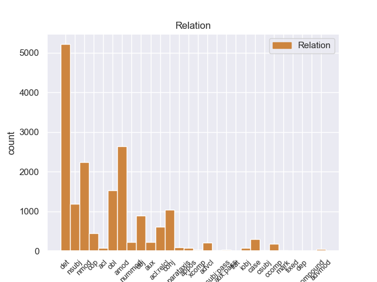
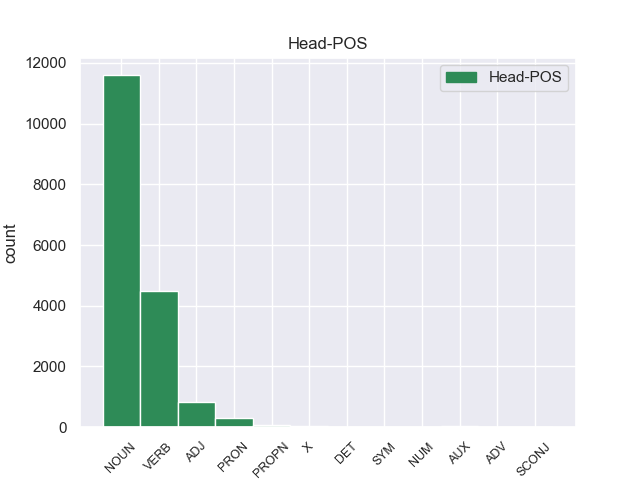
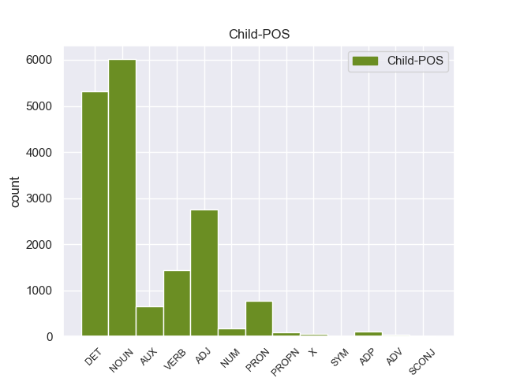

Distribution of features within this leaf



Agreement Rules sorted by frequency.
- When the dependent token is the determiner(det) of the head token, and the head token is NOUN and the dependent token is DET.
1 Αυτό _ _ _ _ 0 _ _ _
2 μπορεί _ _ _ _ 0 _ _ _
3 να _ _ _ _ 0 _ _ _
4 μην _ _ _ _ 0 _ _ _
5 οδηγήσει _ _ _ _ 0 _ _ _
6 σ _ _ _ _ 0 _ _ _
7 τη _ _ _ _ 0 _ _ _
8 λήξη _ _ _ _ 0 _ _ _
9 του _ _ _ _ 0 _ _ _
10 εν _ _ _ _ 0 _ _ _
11 λόγω _ _ _ _ 0 _ _ _
12 ζητήματος _ _ _ _ 0 _ _ _
13 αλλά _ _ _ _ 0 _ _ _
14 , _ _ _ _ 0 _ _ _
15 σ _ _ _ _ 0 _ _ _
16 τη _ _ _ _ 0 _ _ _
17 μορφή _ _ _ _ 0 _ _ _
18 υπό _ _ _ _ 0 _ _ _
19 την _ _ _ _ 0 _ _ _
20 οποία _ _ _ _ 0 _ _ _
21 την _ _ _ _ 0 _ _ _
22 λάβαμε _ _ _ _ 0 _ _ _
23 , _ _ _ _ 0 _ _ _
24 αυτή _ _ _ _ 0 _ _ _
25 η _ _ _ _ 0 _ _ _
26 αίτηση _ _ _ _ 0 _ _ _
27 άρσης _ _ _ _ 0 _ _ _
28 της _ _ _ _ 0 _ _ _
29 ασυλίας _ _ _ _ 0 _ _ _
30 ήταν _ _ _ _ 0 _ _ _
31 , _ _ _ _ 0 _ _ _
32 κατά _ _ _ _ 0 _ _ _
33 την eτη DET _ Definite=Def|Gender=Fem|Number=Sing|PronType=Art 34 det _ _
34 άποψη άποψη NOUN _ Gender=Fem|Number=Sing 0 _ _ _
35 της _ _ _ _ 0 _ _ _
36 Επιτροπής _ _ _ _ 0 _ _ _
37 Νομικών _ _ _ _ 0 _ _ _
38 Θεμάτων _ _ _ _ 0 _ _ _
39 , _ _ _ _ 0 _ _ _
40 απαράδεκτη _ _ _ _ 0 _ _ _
41 , _ _ _ _ 0 _ _ _
42 άποψη _ _ _ _ 0 _ _ _
43 την _ _ _ _ 0 _ _ _
44 οποία _ _ _ _ 0 _ _ _
45 συνιστώ _ _ _ _ 0 _ _ _
46 σ _ _ _ _ 0 _ _ _
47 το _ _ _ _ 0 _ _ _
48 Σώμα _ _ _ _ 0 _ _ _
49 να _ _ _ _ 0 _ _ _
50 υιοθετήσει _ _ _ _ 0 _ _ _
51 . _ _ _ _ 0 _ _ _
1 Αυτό _ _ _ _ 0 _ _ _
2 μπορεί _ _ _ _ 0 _ _ _
3 να _ _ _ _ 0 _ _ _
4 μην _ _ _ _ 0 _ _ _
5 οδηγήσει _ _ _ _ 0 _ _ _
6 σ _ _ _ _ 0 _ _ _
7 τη _ _ _ _ 0 _ _ _
8 λήξη _ _ _ _ 0 _ _ _
9 του _ _ _ _ 0 _ _ _
10 εν _ _ _ _ 0 _ _ _
11 λόγω _ _ _ _ 0 _ _ _
12 ζητήματος _ _ _ _ 0 _ _ _
13 αλλά _ _ _ _ 0 _ _ _
14 , _ _ _ _ 0 _ _ _
15 σ _ _ _ _ 0 _ _ _
16 τη _ _ _ _ 0 _ _ _
17 μορφή _ _ _ _ 0 _ _ _
18 υπό _ _ _ _ 0 _ _ _
19 την _ _ _ _ 0 _ _ _
20 οποία _ _ _ _ 0 _ _ _
21 την _ _ _ _ 0 _ _ _
22 λάβαμε _ _ _ _ 0 _ _ _
23 , _ _ _ _ 0 _ _ _
24 αυτή _ _ _ _ 0 _ _ _
25 η _ _ _ _ 0 _ _ _
26 αίτηση _ _ _ _ 0 _ _ _
27 άρσης _ _ _ _ 0 _ _ _
28 της _ _ _ _ 0 _ _ _
29 ασυλίας _ _ _ _ 0 _ _ _
30 ήταν _ _ _ _ 0 _ _ _
31 , _ _ _ _ 0 _ _ _
32 κατά _ _ _ _ 0 _ _ _
33 την _ _ _ _ 0 _ _ _
34 άποψη _ _ _ _ 0 _ _ _
35 της _ _ _ _ 0 _ _ _
36 Επιτροπής _ _ _ _ 0 _ _ _
37 Νομικών _ _ _ _ 0 _ _ _
38 Θεμάτων _ _ _ _ 0 _ _ _
39 , _ _ _ _ 0 _ _ _
40 απαράδεκτη απαράδεκτo ADJ _ Gender=Fem|Number=Sing 42 amod _ _
41 , _ _ _ _ 0 _ _ _
42 άποψη άποψo NOUN _ Gender=Fem|Number=Sing 0 _ _ _
43 την _ _ _ _ 0 _ _ _
44 οποία _ _ _ _ 0 _ _ _
45 συνιστώ _ _ _ _ 0 _ _ _
46 σ _ _ _ _ 0 _ _ _
47 το _ _ _ _ 0 _ _ _
48 Σώμα _ _ _ _ 0 _ _ _
49 να _ _ _ _ 0 _ _ _
50 υιοθετήσει _ _ _ _ 0 _ _ _
51 . _ _ _ _ 0 _ _ _
1 Αυτό _ _ _ _ 0 _ _ _
2 μπορεί _ _ _ _ 0 _ _ _
3 να _ _ _ _ 0 _ _ _
4 μην _ _ _ _ 0 _ _ _
5 οδηγήσει _ _ _ _ 0 _ _ _
6 σ _ _ _ _ 0 _ _ _
7 τη _ _ _ _ 0 _ _ _
8 λήξη λήξη NOUN _ Gender=Fem|Number=Sing 0 _ _ _
9 του _ _ _ _ 0 _ _ _
10 εν _ _ _ _ 0 _ _ _
11 λόγω _ _ _ _ 0 _ _ _
12 ζητήματος ζητήματος NOUN _ Gender=Masc|Number=Sing 8 nmod _ _
13 αλλά _ _ _ _ 0 _ _ _
14 , _ _ _ _ 0 _ _ _
15 σ _ _ _ _ 0 _ _ _
16 τη _ _ _ _ 0 _ _ _
17 μορφή _ _ _ _ 0 _ _ _
18 υπό _ _ _ _ 0 _ _ _
19 την _ _ _ _ 0 _ _ _
20 οποία _ _ _ _ 0 _ _ _
21 την _ _ _ _ 0 _ _ _
22 λάβαμε _ _ _ _ 0 _ _ _
23 , _ _ _ _ 0 _ _ _
24 αυτή _ _ _ _ 0 _ _ _
25 η _ _ _ _ 0 _ _ _
26 αίτηση _ _ _ _ 0 _ _ _
27 άρσης _ _ _ _ 0 _ _ _
28 της _ _ _ _ 0 _ _ _
29 ασυλίας _ _ _ _ 0 _ _ _
30 ήταν _ _ _ _ 0 _ _ _
31 , _ _ _ _ 0 _ _ _
32 κατά _ _ _ _ 0 _ _ _
33 την _ _ _ _ 0 _ _ _
34 άποψη _ _ _ _ 0 _ _ _
35 της _ _ _ _ 0 _ _ _
36 Επιτροπής _ _ _ _ 0 _ _ _
37 Νομικών _ _ _ _ 0 _ _ _
38 Θεμάτων _ _ _ _ 0 _ _ _
39 , _ _ _ _ 0 _ _ _
40 απαράδεκτη _ _ _ _ 0 _ _ _
41 , _ _ _ _ 0 _ _ _
42 άποψη _ _ _ _ 0 _ _ _
43 την _ _ _ _ 0 _ _ _
44 οποία _ _ _ _ 0 _ _ _
45 συνιστώ _ _ _ _ 0 _ _ _
46 σ _ _ _ _ 0 _ _ _
47 το _ _ _ _ 0 _ _ _
48 Σώμα _ _ _ _ 0 _ _ _
49 να _ _ _ _ 0 _ _ _
50 υιοθετήσει _ _ _ _ 0 _ _ _
51 . _ _ _ _ 0 _ _ _
1 πρόκειται _ _ _ _ 0 _ _ _
2 για _ _ _ _ 0 _ _ _
3 αυτό _ _ _ _ 0 _ _ _
4 το _ _ _ _ 0 _ _ _
5 οποίο _ _ _ _ 0 _ _ _
6 αποκαλύφθηκε _ _ _ _ 0 _ _ _
7 κατά _ _ _ _ 0 _ _ _
8 τη _ _ _ _ 0 _ _ _
9 διάρκεια _ _ _ _ 0 _ _ _
10 αυτής _ _ _ _ 0 _ _ _
11 της _ _ _ _ 0 _ _ _
12 διαδικασίας _ _ _ _ 0 _ _ _
13 , _ _ _ _ 0 _ _ _
14 ότι _ _ _ _ 0 _ _ _
15 ο _ _ _ _ 0 _ _ _
16 Εισαγγελέας _ _ _ _ 0 _ _ _
17 κάποια _ _ _ _ 0 _ _ _
18 στιγμή _ _ _ _ 0 _ _ _
19 ζήτησε ζήτησar VERB _ Mood=Ind|Number=Sing|Person=3|Tense=Past|VerbForm=Fin 0 _ _ _
20 από _ _ _ _ 0 _ _ _
21 την _ _ _ _ 0 _ _ _
22 Πρόεδρο _ _ _ _ 0 _ _ _
23 του _ _ _ _ 0 _ _ _
24 Σώματος _ _ _ _ 0 _ _ _
25 , _ _ _ _ 0 _ _ _
26 την _ _ _ _ 0 _ _ _
27 προκάτοχό προκάτοχό NOUN _ Gender=Fem|Number=Sing 19 obl _ _
28 σας _ _ _ _ 0 _ _ _
29 , _ _ _ _ 0 _ _ _
30 λεπτομέρειες _ _ _ _ 0 _ _ _
31 για _ _ _ _ 0 _ _ _
32 την _ _ _ _ 0 _ _ _
33 ψήφο _ _ _ _ 0 _ _ _
34 που _ _ _ _ 0 _ _ _
35 έχουν _ _ _ _ 0 _ _ _
36 δώσει _ _ _ _ 0 _ _ _
37 οι _ _ _ _ 0 _ _ _
38 δύο _ _ _ _ 0 _ _ _
39 συγκεκριμένοι _ _ _ _ 0 _ _ _
40 βουλευτές _ _ _ _ 0 _ _ _
41 προκειμένου _ _ _ _ 0 _ _ _
42 να _ _ _ _ 0 _ _ _
43 διευκρινιστεί _ _ _ _ 0 _ _ _
44 περαιτέρω _ _ _ _ 0 _ _ _
45 η _ _ _ _ 0 _ _ _
46 πιθανότητα _ _ _ _ 0 _ _ _
47 να _ _ _ _ 0 _ _ _
48 είχαν _ _ _ _ 0 _ _ _
49 ασκήσει _ _ _ _ 0 _ _ _
50 αθέμιτη _ _ _ _ 0 _ _ _
51 επιρροή _ _ _ _ 0 _ _ _
52 . _ _ _ _ 0 _ _ _
1 Υπάρχει _ _ _ _ 0 _ _ _
2 μια _ _ _ _ 0 _ _ _
3 άλλη _ _ _ _ 0 _ _ _
4 πλευρά _ _ _ _ 0 _ _ _
5 της _ _ _ _ 0 _ _ _
6 υπόθεσης _ _ _ _ 0 _ _ _
7 , _ _ _ _ 0 _ _ _
8 η _ _ _ _ 0 _ _ _
9 οποία _ _ _ _ 0 _ _ _
10 , _ _ _ _ 0 _ _ _
11 δυστυχώς _ _ _ _ 0 _ _ _
12 , _ _ _ _ 0 _ _ _
13 γεννά γεννάr VERB _ Mood=Ind|Number=Sing|Person=3|Tense=Pres|VerbForm=Fin 0 _ _ _
14 την _ _ _ _ 0 _ _ _
15 υποψία _ _ _ _ 0 _ _ _
16 ότι _ _ _ _ 0 _ _ _
17 η _ _ _ _ 0 _ _ _
18 πρόνοια πρόνοια NOUN _ Gender=Fem|Number=Sing 13 nsubj _ _
19 σχετικά _ _ _ _ 0 _ _ _
20 με _ _ _ _ 0 _ _ _
21 τις _ _ _ _ 0 _ _ _
22 προϋποθέσεις _ _ _ _ 0 _ _ _
23 ελεύθερης _ _ _ _ 0 _ _ _
24 διεξαγωγής _ _ _ _ 0 _ _ _
25 του _ _ _ _ 0 _ _ _
26 κοινοβουλευτικού _ _ _ _ 0 _ _ _
27 έργου _ _ _ _ 0 _ _ _
28 δεν _ _ _ _ 0 _ _ _
29 απασχόλησε _ _ _ _ 0 _ _ _
30 επαρκώς _ _ _ _ 0 _ _ _
31 την _ _ _ _ 0 _ _ _
32 εισαγγελική _ _ _ _ 0 _ _ _
33 αρχή _ _ _ _ 0 _ _ _
34 : _ _ _ _ 0 _ _ _
1 Υπάρχει _ _ _ _ 0 _ _ _
2 μια _ _ _ _ 0 _ _ _
3 άλλη _ _ _ _ 0 _ _ _
4 πλευρά _ _ _ _ 0 _ _ _
5 της _ _ _ _ 0 _ _ _
6 υπόθεσης _ _ _ _ 0 _ _ _
7 , _ _ _ _ 0 _ _ _
8 η _ _ _ _ 0 _ _ _
9 οποία _ _ _ _ 0 _ _ _
10 , _ _ _ _ 0 _ _ _
11 δυστυχώς _ _ _ _ 0 _ _ _
12 , _ _ _ _ 0 _ _ _
13 γεννά _ _ _ _ 0 _ _ _
14 την _ _ _ _ 0 _ _ _
15 υποψία _ _ _ _ 0 _ _ _
16 ότι _ _ _ _ 0 _ _ _
17 η _ _ _ _ 0 _ _ _
18 πρόνοια _ _ _ _ 0 _ _ _
19 σχετικά _ _ _ _ 0 _ _ _
20 με _ _ _ _ 0 _ _ _
21 τις _ _ _ _ 0 _ _ _
22 προϋποθέσεις _ _ _ _ 0 _ _ _
23 ελεύθερης _ _ _ _ 0 _ _ _
24 διεξαγωγής _ _ _ _ 0 _ _ _
25 του _ _ _ _ 0 _ _ _
26 κοινοβουλευτικού _ _ _ _ 0 _ _ _
27 έργου _ _ _ _ 0 _ _ _
28 δεν _ _ _ _ 0 _ _ _
29 απασχόλησε απασχόλησar VERB _ Mood=Ind|Number=Sing|Person=3|Tense=Pres|VerbForm=Fin 0 _ _ _
30 επαρκώς _ _ _ _ 0 _ _ _
31 την _ _ _ _ 0 _ _ _
32 εισαγγελική _ _ _ _ 0 _ _ _
33 αρχή αρχή NOUN _ Gender=Fem|Number=Sing 29 obj _ _
34 : _ _ _ _ 0 _ _ _
1 Αυτό _ _ _ _ 0 _ _ _
2 μπορεί _ _ _ _ 0 _ _ _
3 να _ _ _ _ 0 _ _ _
4 μην _ _ _ _ 0 _ _ _
5 οδηγήσει _ _ _ _ 0 _ _ _
6 σ _ _ _ _ 0 _ _ _
7 τη _ _ _ _ 0 _ _ _
8 λήξη _ _ _ _ 0 _ _ _
9 του _ _ _ _ 0 _ _ _
10 εν _ _ _ _ 0 _ _ _
11 λόγω _ _ _ _ 0 _ _ _
12 ζητήματος _ _ _ _ 0 _ _ _
13 αλλά _ _ _ _ 0 _ _ _
14 , _ _ _ _ 0 _ _ _
15 σ _ _ _ _ 0 _ _ _
16 τη _ _ _ _ 0 _ _ _
17 μορφή _ _ _ _ 0 _ _ _
18 υπό _ _ _ _ 0 _ _ _
19 την _ _ _ _ 0 _ _ _
20 οποία _ _ _ _ 0 _ _ _
21 την _ _ _ _ 0 _ _ _
22 λάβαμε _ _ _ _ 0 _ _ _
23 , _ _ _ _ 0 _ _ _
24 αυτή _ _ _ _ 0 _ _ _
25 η _ _ _ _ 0 _ _ _
26 αίτηση _ _ _ _ 0 _ _ _
27 άρσης _ _ _ _ 0 _ _ _
28 της _ _ _ _ 0 _ _ _
29 ασυλίας _ _ _ _ 0 _ _ _
30 ήταν _ _ _ _ 0 _ _ _
31 , _ _ _ _ 0 _ _ _
32 κατά _ _ _ _ 0 _ _ _
33 την _ _ _ _ 0 _ _ _
34 άποψη _ _ _ _ 0 _ _ _
35 της _ _ _ _ 0 _ _ _
36 Επιτροπής _ _ _ _ 0 _ _ _
37 Νομικών _ _ _ _ 0 _ _ _
38 Θεμάτων _ _ _ _ 0 _ _ _
39 , _ _ _ _ 0 _ _ _
40 απαράδεκτη _ _ _ _ 0 _ _ _
41 , _ _ _ _ 0 _ _ _
42 άποψη άποψo NOUN _ Gender=Fem|Number=Sing 0 _ _ _
43 την _ _ _ _ 0 _ _ _
44 οποία _ _ _ _ 0 _ _ _
45 συνιστώ συνιστar VERB _ Mood=Sub|Number=Sing|Person=3|Tense=Pres|VerbForm=Fin 42 acl:relcl _ _
46 σ _ _ _ _ 0 _ _ _
47 το _ _ _ _ 0 _ _ _
48 Σώμα _ _ _ _ 0 _ _ _
49 να _ _ _ _ 0 _ _ _
50 υιοθετήσει _ _ _ _ 0 _ _ _
51 . _ _ _ _ 0 _ _ _
1 Αυτό _ _ _ _ 0 _ _ _
2 μπορεί _ _ _ _ 0 _ _ _
3 να _ _ _ _ 0 _ _ _
4 μην _ _ _ _ 0 _ _ _
5 οδηγήσει _ _ _ _ 0 _ _ _
6 σ _ _ _ _ 0 _ _ _
7 τη _ _ _ _ 0 _ _ _
8 λήξη λήξη NOUN _ Gender=Fem|Number=Sing 0 _ _ _
9 του _ _ _ _ 0 _ _ _
10 εν _ _ _ _ 0 _ _ _
11 λόγω _ _ _ _ 0 _ _ _
12 ζητήματος _ _ _ _ 0 _ _ _
13 αλλά _ _ _ _ 0 _ _ _
14 , _ _ _ _ 0 _ _ _
15 σ _ _ _ _ 0 _ _ _
16 τη _ _ _ _ 0 _ _ _
17 μορφή μορφή NOUN _ Gender=Fem|Number=Sing 8 conj _ _
18 υπό _ _ _ _ 0 _ _ _
19 την _ _ _ _ 0 _ _ _
20 οποία _ _ _ _ 0 _ _ _
21 την _ _ _ _ 0 _ _ _
22 λάβαμε _ _ _ _ 0 _ _ _
23 , _ _ _ _ 0 _ _ _
24 αυτή _ _ _ _ 0 _ _ _
25 η _ _ _ _ 0 _ _ _
26 αίτηση _ _ _ _ 0 _ _ _
27 άρσης _ _ _ _ 0 _ _ _
28 της _ _ _ _ 0 _ _ _
29 ασυλίας _ _ _ _ 0 _ _ _
30 ήταν _ _ _ _ 0 _ _ _
31 , _ _ _ _ 0 _ _ _
32 κατά _ _ _ _ 0 _ _ _
33 την _ _ _ _ 0 _ _ _
34 άποψη _ _ _ _ 0 _ _ _
35 της _ _ _ _ 0 _ _ _
36 Επιτροπής _ _ _ _ 0 _ _ _
37 Νομικών _ _ _ _ 0 _ _ _
38 Θεμάτων _ _ _ _ 0 _ _ _
39 , _ _ _ _ 0 _ _ _
40 απαράδεκτη _ _ _ _ 0 _ _ _
41 , _ _ _ _ 0 _ _ _
42 άποψη _ _ _ _ 0 _ _ _
43 την _ _ _ _ 0 _ _ _
44 οποία _ _ _ _ 0 _ _ _
45 συνιστώ _ _ _ _ 0 _ _ _
46 σ _ _ _ _ 0 _ _ _
47 το _ _ _ _ 0 _ _ _
48 Σώμα _ _ _ _ 0 _ _ _
49 να _ _ _ _ 0 _ _ _
50 υιοθετήσει _ _ _ _ 0 _ _ _
51 . _ _ _ _ 0 _ _ _
1 Θα _ _ _ _ 0 _ _ _
2 ήθελα _ _ _ _ 0 _ _ _
3 να _ _ _ _ 0 _ _ _
4 επιστήσω _ _ _ _ 0 _ _ _
5 την _ _ _ _ 0 _ _ _
6 προσοχή _ _ _ _ 0 _ _ _
7 όλων _ _ _ _ 0 _ _ _
8 των _ _ _ _ 0 _ _ _
9 συναδέλφων _ _ _ _ 0 _ _ _
10 σ _ _ _ _ 0 _ _ _
11 το _ _ _ _ 0 _ _ _
12 γεγονός _ _ _ _ 0 _ _ _
13 ότι _ _ _ _ 0 _ _ _
14 , _ _ _ _ 0 _ _ _
15 εάν _ _ _ _ 0 _ _ _
16 υπάρχουν _ _ _ _ 0 _ _ _
17 κάποιες _ _ _ _ 0 _ _ _
18 ελευθερίες _ _ _ _ 0 _ _ _
19 οι _ _ _ _ 0 _ _ _
20 οποίες _ _ _ _ 0 _ _ _
21 είναι _ _ _ _ 0 _ _ _
22 ζωτικής _ _ _ _ 0 _ _ _
23 σημασίας _ _ _ _ 0 _ _ _
24 για _ _ _ _ 0 _ _ _
25 την _ _ _ _ 0 _ _ _
26 άσκηση _ _ _ _ 0 _ _ _
27 του _ _ _ _ 0 _ _ _
28 λειτουργήματος _ _ _ _ 0 _ _ _
29 της _ _ _ _ 0 _ _ _
30 δημόσιας _ _ _ _ 0 _ _ _
31 εκπροσώπησης _ _ _ _ 0 _ _ _
32 , _ _ _ _ 0 _ _ _
33 ιδίως _ _ _ _ 0 _ _ _
34 για _ _ _ _ 0 _ _ _
35 ένα _ _ _ _ 0 _ _ _
36 Κοινοβούλιο _ _ _ _ 0 _ _ _
37 σαν _ _ _ _ 0 _ _ _
38 το _ _ _ _ 0 _ _ _
39 δικό _ _ _ _ 0 _ _ _
40 μας _ _ _ _ 0 _ _ _
41 , _ _ _ _ 0 _ _ _
42 η _ _ _ _ 0 _ _ _
43 ελευθερία _ _ _ _ 0 _ _ _
44 της _ _ _ _ 0 _ _ _
45 επικοινωνίας _ _ _ _ 0 _ _ _
46 με _ _ _ _ 0 _ _ _
47 άλλους _ _ _ _ 0 _ _ _
48 πολίτες _ _ _ _ 0 _ _ _
49 και _ _ _ _ 0 _ _ _
50 με _ _ _ _ 0 _ _ _
51 τους _ _ _ _ 0 _ _ _
52 πολίτες _ _ _ _ 0 _ _ _
53 τρίτων _ _ _ _ 0 _ _ _
54 χωρών _ _ _ _ 0 _ _ _
55 , _ _ _ _ 0 _ _ _
56 καθώς _ _ _ _ 0 _ _ _
57 και _ _ _ _ 0 _ _ _
58 η _ _ _ _ 0 _ _ _
59 ελευθερία _ _ _ _ 0 _ _ _
60 μετακίνησης _ _ _ _ 0 _ _ _
61 , _ _ _ _ 0 _ _ _
62 είναι είνar AUX _ Mood=Ind|Number=Plur|Person=3|Tense=Pres|VerbForm=Fin 63 cop _ _
63 κρίσιμες κρίσιμε ADJ _ Number=Plur 0 _ _ _
64 για _ _ _ _ 0 _ _ _
65 τη _ _ _ _ 0 _ _ _
66 διεκπεραίωση _ _ _ _ 0 _ _ _
67 του _ _ _ _ 0 _ _ _
68 έργου _ _ _ _ 0 _ _ _
69 μας _ _ _ _ 0 _ _ _
70 . _ _ _ _ 0 _ _ _
1 Οι _ _ _ _ 0 _ _ _
2 διαδικασίες _ _ _ _ 0 _ _ _
3 κινήθηκαν κινήθηκα VERB _ Mood=Ind|Number=Plur|Person=3|Tense=Past|VerbForm=Fin 0 _ _ _
4 τον _ _ _ _ 0 _ _ _
5 Ιούλιο_του_2000 _ _ _ _ 0 _ _ _
6 και _ _ _ _ 0 _ _ _
7 αφορούν αφορούr VERB _ Mood=Ind|Number=Plur|Person=3|Tense=Pres|VerbForm=Fin 3 conj _ _
8 λαθρεμπόριο _ _ _ _ 0 _ _ _
9 όπλων _ _ _ _ 0 _ _ _
10 , _ _ _ _ 0 _ _ _
11 αθέμιτη _ _ _ _ 0 _ _ _
12 άσκηση _ _ _ _ 0 _ _ _
13 επιρροής _ _ _ _ 0 _ _ _
14 , _ _ _ _ 0 _ _ _
15 κατάχρηση _ _ _ _ 0 _ _ _
16 επιχειρηματικού _ _ _ _ 0 _ _ _
17 κεφαλαίου _ _ _ _ 0 _ _ _
18 , _ _ _ _ 0 _ _ _
19 κατάχρηση _ _ _ _ 0 _ _ _
20 εμπιστοσύνης _ _ _ _ 0 _ _ _
21 και _ _ _ _ 0 _ _ _
22 αποδοχή _ _ _ _ 0 _ _ _
23 προϊόντων _ _ _ _ 0 _ _ _
24 εγκλήματος _ _ _ _ 0 _ _ _
25 . _ _ _ _ 0 _ _ _
1 πρόκειται _ _ _ _ 0 _ _ _
2 για _ _ _ _ 0 _ _ _
3 αυτό _ _ _ _ 0 _ _ _
4 το _ _ _ _ 0 _ _ _
5 οποίο _ _ _ _ 0 _ _ _
6 αποκαλύφθηκε _ _ _ _ 0 _ _ _
7 κατά _ _ _ _ 0 _ _ _
8 τη _ _ _ _ 0 _ _ _
9 διάρκεια _ _ _ _ 0 _ _ _
10 αυτής _ _ _ _ 0 _ _ _
11 της _ _ _ _ 0 _ _ _
12 διαδικασίας _ _ _ _ 0 _ _ _
13 , _ _ _ _ 0 _ _ _
14 ότι _ _ _ _ 0 _ _ _
15 ο _ _ _ _ 0 _ _ _
16 Εισαγγελέας _ _ _ _ 0 _ _ _
17 κάποια _ _ _ _ 0 _ _ _
18 στιγμή _ _ _ _ 0 _ _ _
19 ζήτησε _ _ _ _ 0 _ _ _
20 από _ _ _ _ 0 _ _ _
21 την _ _ _ _ 0 _ _ _
22 Πρόεδρο _ _ _ _ 0 _ _ _
23 του _ _ _ _ 0 _ _ _
24 Σώματος _ _ _ _ 0 _ _ _
25 , _ _ _ _ 0 _ _ _
26 την _ _ _ _ 0 _ _ _
27 προκάτοχό _ _ _ _ 0 _ _ _
28 σας _ _ _ _ 0 _ _ _
29 , _ _ _ _ 0 _ _ _
30 λεπτομέρειες _ _ _ _ 0 _ _ _
31 για _ _ _ _ 0 _ _ _
32 την _ _ _ _ 0 _ _ _
33 ψήφο _ _ _ _ 0 _ _ _
34 που _ _ _ _ 0 _ _ _
35 έχουν _ _ _ _ 0 _ _ _
36 δώσει _ _ _ _ 0 _ _ _
37 οι _ _ _ _ 0 _ _ _
38 δύο δύο NUM _ Number=Plur|NumType=Card 40 nummod _ _
39 συγκεκριμένοι _ _ _ _ 0 _ _ _
40 βουλευτές βουλευτ NOUN _ Gender=Masc|Number=Plur 0 _ _ _
41 προκειμένου _ _ _ _ 0 _ _ _
42 να _ _ _ _ 0 _ _ _
43 διευκρινιστεί _ _ _ _ 0 _ _ _
44 περαιτέρω _ _ _ _ 0 _ _ _
45 η _ _ _ _ 0 _ _ _
46 πιθανότητα _ _ _ _ 0 _ _ _
47 να _ _ _ _ 0 _ _ _
48 είχαν _ _ _ _ 0 _ _ _
49 ασκήσει _ _ _ _ 0 _ _ _
50 αθέμιτη _ _ _ _ 0 _ _ _
51 επιρροή _ _ _ _ 0 _ _ _
52 . _ _ _ _ 0 _ _ _
1 Αυτό _ _ _ _ 0 _ _ _
2 μπορεί _ _ _ _ 0 _ _ _
3 να _ _ _ _ 0 _ _ _
4 μην _ _ _ _ 0 _ _ _
5 οδηγήσει _ _ _ _ 0 _ _ _
6 σ _ _ _ _ 0 _ _ _
7 τη _ _ _ _ 0 _ _ _
8 λήξη _ _ _ _ 0 _ _ _
9 του _ _ _ _ 0 _ _ _
10 εν _ _ _ _ 0 _ _ _
11 λόγω _ _ _ _ 0 _ _ _
12 ζητήματος _ _ _ _ 0 _ _ _
13 αλλά _ _ _ _ 0 _ _ _
14 , _ _ _ _ 0 _ _ _
15 σ _ _ _ _ 0 _ _ _
16 τη _ _ _ _ 0 _ _ _
17 μορφή _ _ _ _ 0 _ _ _
18 υπό _ _ _ _ 0 _ _ _
19 την _ _ _ _ 0 _ _ _
20 οποία _ _ _ _ 0 _ _ _
21 την _ _ _ _ 0 _ _ _
22 λάβαμε _ _ _ _ 0 _ _ _
23 , _ _ _ _ 0 _ _ _
24 αυτή _ _ _ _ 0 _ _ _
25 η _ _ _ _ 0 _ _ _
26 αίτηση _ _ _ _ 0 _ _ _
27 άρσης _ _ _ _ 0 _ _ _
28 της _ _ _ _ 0 _ _ _
29 ασυλίας _ _ _ _ 0 _ _ _
30 ήταν sήτα AUX _ Mood=Ind|Number=Sing|Person=3|Tense=Imp|VerbForm=Fin 42 cop _ _
31 , _ _ _ _ 0 _ _ _
32 κατά _ _ _ _ 0 _ _ _
33 την _ _ _ _ 0 _ _ _
34 άποψη _ _ _ _ 0 _ _ _
35 της _ _ _ _ 0 _ _ _
36 Επιτροπής _ _ _ _ 0 _ _ _
37 Νομικών _ _ _ _ 0 _ _ _
38 Θεμάτων _ _ _ _ 0 _ _ _
39 , _ _ _ _ 0 _ _ _
40 απαράδεκτη _ _ _ _ 0 _ _ _
41 , _ _ _ _ 0 _ _ _
42 άποψη άποψo NOUN _ Gender=Fem|Number=Sing 0 _ _ _
43 την _ _ _ _ 0 _ _ _
44 οποία _ _ _ _ 0 _ _ _
45 συνιστώ _ _ _ _ 0 _ _ _
46 σ _ _ _ _ 0 _ _ _
47 το _ _ _ _ 0 _ _ _
48 Σώμα _ _ _ _ 0 _ _ _
49 να _ _ _ _ 0 _ _ _
50 υιοθετήσει _ _ _ _ 0 _ _ _
51 . _ _ _ _ 0 _ _ _
1 Ο _ _ _ _ 0 _ _ _
2 Χάουμε _ _ _ _ 0 _ _ _
3 Μάτας _ _ _ _ 0 _ _ _
4 είχε είer AUX _ Mood=Ind|Number=Sing|Person=3|Tense=Imp|VerbForm=Fin 5 aux _ _
5 λάβει λάβr VERB _ Gender=Masc|Number=Sing|Tense=Past|VerbForm=Part 0 _ _ _
6 παρανόμως _ _ _ _ 0 _ _ _
7 500.000 _ _ _ _ 0 _ _ _
8 ευρώ _ _ _ _ 0 _ _ _
9 ( _ _ _ _ 0 _ _ _
10 δημόσια _ _ _ _ 0 _ _ _
11 χρήματα _ _ _ _ 0 _ _ _
12 ) _ _ _ _ 0 _ _ _
13 , _ _ _ _ 0 _ _ _
14 για _ _ _ _ 0 _ _ _
15 να _ _ _ _ 0 _ _ _
16 πληρώσει _ _ _ _ 0 _ _ _
17 δημοσιογράφο _ _ _ _ 0 _ _ _
18 που _ _ _ _ 0 _ _ _
19 έγραφε _ _ _ _ 0 _ _ _
20 τις _ _ _ _ 0 _ _ _
21 ομιλίες _ _ _ _ 0 _ _ _
22 του _ _ _ _ 0 _ _ _
23 . _ _ _ _ 0 _ _ _
1 Αυτό _ _ _ _ 0 _ _ _
2 μπορεί _ _ _ _ 0 _ _ _
3 να _ _ _ _ 0 _ _ _
4 μην _ _ _ _ 0 _ _ _
5 οδηγήσει _ _ _ _ 0 _ _ _
6 σ _ _ _ _ 0 _ _ _
7 τη _ _ _ _ 0 _ _ _
8 λήξη _ _ _ _ 0 _ _ _
9 του _ _ _ _ 0 _ _ _
10 εν _ _ _ _ 0 _ _ _
11 λόγω _ _ _ _ 0 _ _ _
12 ζητήματος _ _ _ _ 0 _ _ _
13 αλλά _ _ _ _ 0 _ _ _
14 , _ _ _ _ 0 _ _ _
15 σ _ _ _ _ 0 _ _ _
16 τη _ _ _ _ 0 _ _ _
17 μορφή _ _ _ _ 0 _ _ _
18 υπό _ _ _ _ 0 _ _ _
19 την eτη DET _ Definite=Def|Gender=Fem|Number=Sing|PronType=Art 20 det _ _
20 οποία οποία PRON _ Number=Sing|PronType=Int,Rel 0 _ _ _
21 την _ _ _ _ 0 _ _ _
22 λάβαμε _ _ _ _ 0 _ _ _
23 , _ _ _ _ 0 _ _ _
24 αυτή _ _ _ _ 0 _ _ _
25 η _ _ _ _ 0 _ _ _
26 αίτηση _ _ _ _ 0 _ _ _
27 άρσης _ _ _ _ 0 _ _ _
28 της _ _ _ _ 0 _ _ _
29 ασυλίας _ _ _ _ 0 _ _ _
30 ήταν _ _ _ _ 0 _ _ _
31 , _ _ _ _ 0 _ _ _
32 κατά _ _ _ _ 0 _ _ _
33 την _ _ _ _ 0 _ _ _
34 άποψη _ _ _ _ 0 _ _ _
35 της _ _ _ _ 0 _ _ _
36 Επιτροπής _ _ _ _ 0 _ _ _
37 Νομικών _ _ _ _ 0 _ _ _
38 Θεμάτων _ _ _ _ 0 _ _ _
39 , _ _ _ _ 0 _ _ _
40 απαράδεκτη _ _ _ _ 0 _ _ _
41 , _ _ _ _ 0 _ _ _
42 άποψη _ _ _ _ 0 _ _ _
43 την _ _ _ _ 0 _ _ _
44 οποία _ _ _ _ 0 _ _ _
45 συνιστώ _ _ _ _ 0 _ _ _
46 σ _ _ _ _ 0 _ _ _
47 το _ _ _ _ 0 _ _ _
48 Σώμα _ _ _ _ 0 _ _ _
49 να _ _ _ _ 0 _ _ _
50 υιοθετήσει _ _ _ _ 0 _ _ _
51 . _ _ _ _ 0 _ _ _
1 Αυτό _ _ _ _ 0 _ _ _
2 μπορεί _ _ _ _ 0 _ _ _
3 να _ _ _ _ 0 _ _ _
4 μην _ _ _ _ 0 _ _ _
5 οδηγήσει _ _ _ _ 0 _ _ _
6 σ _ _ _ _ 0 _ _ _
7 τη _ _ _ _ 0 _ _ _
8 λήξη _ _ _ _ 0 _ _ _
9 του του DET _ Definite=Def|Gender=Masc|Number=Sing|PronType=Art 12 case _ _
10 εν _ _ _ _ 0 _ _ _
11 λόγω _ _ _ _ 0 _ _ _
12 ζητήματος ζητήματος NOUN _ Gender=Masc|Number=Sing 0 _ _ _
13 αλλά _ _ _ _ 0 _ _ _
14 , _ _ _ _ 0 _ _ _
15 σ _ _ _ _ 0 _ _ _
16 τη _ _ _ _ 0 _ _ _
17 μορφή _ _ _ _ 0 _ _ _
18 υπό _ _ _ _ 0 _ _ _
19 την _ _ _ _ 0 _ _ _
20 οποία _ _ _ _ 0 _ _ _
21 την _ _ _ _ 0 _ _ _
22 λάβαμε _ _ _ _ 0 _ _ _
23 , _ _ _ _ 0 _ _ _
24 αυτή _ _ _ _ 0 _ _ _
25 η _ _ _ _ 0 _ _ _
26 αίτηση _ _ _ _ 0 _ _ _
27 άρσης _ _ _ _ 0 _ _ _
28 της _ _ _ _ 0 _ _ _
29 ασυλίας _ _ _ _ 0 _ _ _
30 ήταν _ _ _ _ 0 _ _ _
31 , _ _ _ _ 0 _ _ _
32 κατά _ _ _ _ 0 _ _ _
33 την _ _ _ _ 0 _ _ _
34 άποψη _ _ _ _ 0 _ _ _
35 της _ _ _ _ 0 _ _ _
36 Επιτροπής _ _ _ _ 0 _ _ _
37 Νομικών _ _ _ _ 0 _ _ _
38 Θεμάτων _ _ _ _ 0 _ _ _
39 , _ _ _ _ 0 _ _ _
40 απαράδεκτη _ _ _ _ 0 _ _ _
41 , _ _ _ _ 0 _ _ _
42 άποψη _ _ _ _ 0 _ _ _
43 την _ _ _ _ 0 _ _ _
44 οποία _ _ _ _ 0 _ _ _
45 συνιστώ _ _ _ _ 0 _ _ _
46 σ _ _ _ _ 0 _ _ _
47 το _ _ _ _ 0 _ _ _
48 Σώμα _ _ _ _ 0 _ _ _
49 να _ _ _ _ 0 _ _ _
50 υιοθετήσει _ _ _ _ 0 _ _ _
51 . _ _ _ _ 0 _ _ _
1 Υπάρχει _ _ _ _ 0 _ _ _
2 μια _ _ _ _ 0 _ _ _
3 άλλη _ _ _ _ 0 _ _ _
4 πλευρά _ _ _ _ 0 _ _ _
5 της _ _ _ _ 0 _ _ _
6 υπόθεσης _ _ _ _ 0 _ _ _
7 , _ _ _ _ 0 _ _ _
8 η _ _ _ _ 0 _ _ _
9 οποία οποία PRON _ Number=Sing|PronType=Int,Rel 13 nsubj _ _
10 , _ _ _ _ 0 _ _ _
11 δυστυχώς _ _ _ _ 0 _ _ _
12 , _ _ _ _ 0 _ _ _
13 γεννά γεννάr VERB _ Mood=Ind|Number=Sing|Person=3|Tense=Pres|VerbForm=Fin 0 _ _ _
14 την _ _ _ _ 0 _ _ _
15 υποψία _ _ _ _ 0 _ _ _
16 ότι _ _ _ _ 0 _ _ _
17 η _ _ _ _ 0 _ _ _
18 πρόνοια _ _ _ _ 0 _ _ _
19 σχετικά _ _ _ _ 0 _ _ _
20 με _ _ _ _ 0 _ _ _
21 τις _ _ _ _ 0 _ _ _
22 προϋποθέσεις _ _ _ _ 0 _ _ _
23 ελεύθερης _ _ _ _ 0 _ _ _
24 διεξαγωγής _ _ _ _ 0 _ _ _
25 του _ _ _ _ 0 _ _ _
26 κοινοβουλευτικού _ _ _ _ 0 _ _ _
27 έργου _ _ _ _ 0 _ _ _
28 δεν _ _ _ _ 0 _ _ _
29 απασχόλησε _ _ _ _ 0 _ _ _
30 επαρκώς _ _ _ _ 0 _ _ _
31 την _ _ _ _ 0 _ _ _
32 εισαγγελική _ _ _ _ 0 _ _ _
33 αρχή _ _ _ _ 0 _ _ _
34 : _ _ _ _ 0 _ _ _
1 Τόσο _ _ _ _ 0 _ _ _
2 το _ _ _ _ 0 _ _ _
3 ζήτημα _ _ _ _ 0 _ _ _
4 της _ _ _ _ 0 _ _ _
5 ασυλίας _ _ _ _ 0 _ _ _
6 όσο _ _ _ _ 0 _ _ _
7 και _ _ _ _ 0 _ _ _
8 η _ _ _ _ 0 _ _ _
9 αίτηση _ _ _ _ 0 _ _ _
10 για _ _ _ _ 0 _ _ _
11 άρση άρση NOUN _ Gender=Fem|Number=Sing 0 _ _ _
12 της της PRON _ Case=Acc|Gender=Fem|Number=Sing|Person=3|PrepCase=Npr|PronType=Prs 11 amod _ _
13 έχουν _ _ _ _ 0 _ _ _
14 σχέση _ _ _ _ 0 _ _ _
15 μόνο _ _ _ _ 0 _ _ _
16 με _ _ _ _ 0 _ _ _
17 το _ _ _ _ 0 _ _ _
18 εάν _ _ _ _ 0 _ _ _
19 το _ _ _ _ 0 _ _ _
20 Δικαστήριο _ _ _ _ 0 _ _ _
21 μπορεί _ _ _ _ 0 _ _ _
22 να _ _ _ _ 0 _ _ _
23 εκδώσει _ _ _ _ 0 _ _ _
24 δεσμευτικά _ _ _ _ 0 _ _ _
25 βουλεύματα _ _ _ _ 0 _ _ _
26 για _ _ _ _ 0 _ _ _
27 τον _ _ _ _ 0 _ _ _
28 περιορισμό _ _ _ _ 0 _ _ _
29 της _ _ _ _ 0 _ _ _
30 ελεύθερης _ _ _ _ 0 _ _ _
31 μετακίνησης _ _ _ _ 0 _ _ _
32 των _ _ _ _ 0 _ _ _
33 βουλευτών _ _ _ _ 0 _ _ _
34 του _ _ _ _ 0 _ _ _
35 Ευρωπαϊκού _ _ _ _ 0 _ _ _
36 Κοινοβουλίου _ _ _ _ 0 _ _ _
37 ή _ _ _ _ 0 _ _ _
38 την _ _ _ _ 0 _ _ _
39 ελευθερία _ _ _ _ 0 _ _ _
40 τους _ _ _ _ 0 _ _ _
41 να _ _ _ _ 0 _ _ _
42 έρχονται _ _ _ _ 0 _ _ _
43 σε _ _ _ _ 0 _ _ _
44 επικοινωνία _ _ _ _ 0 _ _ _
45 με _ _ _ _ 0 _ _ _
46 άλλα _ _ _ _ 0 _ _ _
47 πρόσωπα _ _ _ _ 0 _ _ _
48 . _ _ _ _ 0 _ _ _
1 Όλοι _ _ _ _ 0 _ _ _
2 οι _ _ _ _ 0 _ _ _
3 κρατούμενοι _ _ _ _ 0 _ _ _
4 φέρονται _ _ _ _ 0 _ _ _
5 ως _ _ _ _ 0 _ _ _
6 μέλη _ _ _ _ 0 _ _ _
7 της _ _ _ _ 0 _ _ _
8 Αλ _ _ _ _ 0 _ _ _
9 Κάιντα _ _ _ _ 0 _ _ _
10 , _ _ _ _ 0 _ _ _
11 ενώ _ _ _ _ 0 _ _ _
12 δύο _ _ _ _ 0 _ _ _
13 απ' απ NOUN _ Number=Plur 16 nsubj _ _
14 αυτούς _ _ _ _ 0 _ _ _
15 είναι _ _ _ _ 0 _ _ _
16 θανατοποινίτες θανατοποινίτε ADJ _ Gender=Masc|Number=Plur 0 _ _ _
17 . _ _ _ _ 0 _ _ _
1 από _ _ _ _ 0 _ _ _
2 τα _ _ _ _ 0 _ _ _
3 δε _ _ _ _ 0 _ _ _
4 έγγραφα _ _ _ _ 0 _ _ _
5 της _ _ _ _ 0 _ _ _
6 υπόθεσης _ _ _ _ 0 _ _ _
7 προκύπτει προκύπτειr VERB _ Mood=Ind|Number=Sing|Person=3|Tense=Pres|VerbForm=Fin 0 _ _ _
8 ότι _ _ _ _ 0 _ _ _
9 δεν _ _ _ _ 0 _ _ _
10 φαίνεται φαίνεταιr VERB _ Mood=Ind|Number=Sing|Person=3|Tense=Pres|VerbForm=Fin 7 ccomp _ _
11 να _ _ _ _ 0 _ _ _
12 έχει _ _ _ _ 0 _ _ _
13 ληφθεί _ _ _ _ 0 _ _ _
14 υπόψη _ _ _ _ 0 _ _ _
15 η _ _ _ _ 0 _ _ _
16 σύσταση _ _ _ _ 0 _ _ _
17 να _ _ _ _ 0 _ _ _
18 διαβιβαστεί _ _ _ _ 0 _ _ _
19 η _ _ _ _ 0 _ _ _
20 αίτηση _ _ _ _ 0 _ _ _
21 άρσης _ _ _ _ 0 _ _ _
22 της _ _ _ _ 0 _ _ _
23 ασυλίας _ _ _ _ 0 _ _ _
24 μόνον _ _ _ _ 0 _ _ _
25 επί _ _ _ _ 0 _ _ _
26 τη _ _ _ _ 0 _ _ _
27 βάσει _ _ _ _ 0 _ _ _
28 ακριβέστερου _ _ _ _ 0 _ _ _
29 προσδιορισμού _ _ _ _ 0 _ _ _
30 όσον _ _ _ _ 0 _ _ _
31 αφορά _ _ _ _ 0 _ _ _
32 τους _ _ _ _ 0 _ _ _
33 τόπους _ _ _ _ 0 _ _ _
34 και _ _ _ _ 0 _ _ _
35 τα _ _ _ _ 0 _ _ _
36 πρόσωπα _ _ _ _ 0 _ _ _
37 που _ _ _ _ 0 _ _ _
38 εμπλέκονται _ _ _ _ 0 _ _ _
39 σ _ _ _ _ 0 _ _ _
40 την _ _ _ _ 0 _ _ _
41 υπόθεση _ _ _ _ 0 _ _ _
42 . _ _ _ _ 0 _ _ _
1 Τόσο _ _ _ _ 0 _ _ _
2 το _ _ _ _ 0 _ _ _
3 ζήτημα _ _ _ _ 0 _ _ _
4 της _ _ _ _ 0 _ _ _
5 ασυλίας _ _ _ _ 0 _ _ _
6 όσο _ _ _ _ 0 _ _ _
7 και _ _ _ _ 0 _ _ _
8 η _ _ _ _ 0 _ _ _
9 αίτηση _ _ _ _ 0 _ _ _
10 για _ _ _ _ 0 _ _ _
11 άρση _ _ _ _ 0 _ _ _
12 της _ _ _ _ 0 _ _ _
13 έχουν _ _ _ _ 0 _ _ _
14 σχέση _ _ _ _ 0 _ _ _
15 μόνο _ _ _ _ 0 _ _ _
16 με _ _ _ _ 0 _ _ _
17 το _ _ _ _ 0 _ _ _
18 εάν _ _ _ _ 0 _ _ _
19 το _ _ _ _ 0 _ _ _
20 Δικαστήριο _ _ _ _ 0 _ _ _
21 μπορεί _ _ _ _ 0 _ _ _
22 να _ _ _ _ 0 _ _ _
23 εκδώσει _ _ _ _ 0 _ _ _
24 δεσμευτικά _ _ _ _ 0 _ _ _
25 βουλεύματα _ _ _ _ 0 _ _ _
26 για _ _ _ _ 0 _ _ _
27 τον _ _ _ _ 0 _ _ _
28 περιορισμό _ _ _ _ 0 _ _ _
29 της _ _ _ _ 0 _ _ _
30 ελεύθερης _ _ _ _ 0 _ _ _
31 μετακίνησης _ _ _ _ 0 _ _ _
32 των eτ ADP _ Definite=Def|Gender=Masc|Number=Plur|PronType=Art 33 case _ _
33 βουλευτών βουλευτ NOUN _ Gender=Masc|Number=Plur 0 _ _ _
34 του _ _ _ _ 0 _ _ _
35 Ευρωπαϊκού _ _ _ _ 0 _ _ _
36 Κοινοβουλίου _ _ _ _ 0 _ _ _
37 ή _ _ _ _ 0 _ _ _
38 την _ _ _ _ 0 _ _ _
39 ελευθερία _ _ _ _ 0 _ _ _
40 τους _ _ _ _ 0 _ _ _
41 να _ _ _ _ 0 _ _ _
42 έρχονται _ _ _ _ 0 _ _ _
43 σε _ _ _ _ 0 _ _ _
44 επικοινωνία _ _ _ _ 0 _ _ _
45 με _ _ _ _ 0 _ _ _
46 άλλα _ _ _ _ 0 _ _ _
47 πρόσωπα _ _ _ _ 0 _ _ _
48 . _ _ _ _ 0 _ _ _
1 Ο _ _ _ _ 0 _ _ _
2 Μπαράκ _ _ _ _ 0 _ _ _
3 Ομπάμα _ _ _ _ 0 _ _ _
4 ανέφερε _ _ _ _ 0 _ _ _
5 ότι _ _ _ _ 0 _ _ _
6 « _ _ _ _ 0 _ _ _
7 ήδη _ _ _ _ 0 _ _ _
8 υπάρχουν _ _ _ _ 0 _ _ _
9 πολλές _ _ _ _ 0 _ _ _
10 αναφορές _ _ _ _ 0 _ _ _
11 για _ _ _ _ 0 _ _ _
12 πόλεμο _ _ _ _ 0 _ _ _
13 με _ _ _ _ 0 _ _ _
14 το _ _ _ _ 0 _ _ _
15 Ιράν _ _ _ _ 0 _ _ _
16 » _ _ _ _ 0 _ _ _
17 και _ _ _ _ 0 _ _ _
18 επεσήμανε _ _ _ _ 0 _ _ _
19 τέτοιες _ _ _ _ 0 _ _ _
20 συζητήσεις _ _ _ _ 0 _ _ _
21 « _ _ _ _ 0 _ _ _
22 είναι είνar VERB _ Mood=Ind|Number=Plur|Person=3|Tense=Pres|VerbForm=Fin 0 _ _ _
23 προς _ _ _ _ 0 _ _ _
24 όφελος _ _ _ _ 0 _ _ _
25 της _ _ _ _ 0 _ _ _
26 Τεχεράνης _ _ _ _ 0 _ _ _
27 γιατί _ _ _ _ 0 _ _ _
28 αυξάνουν αυξάνουr VERB _ Mood=Ind|Number=Plur|Person=3|Tense=Pres|VerbForm=Fin 22 advcl _ _
29 τις _ _ _ _ 0 _ _ _
30 τιμές _ _ _ _ 0 _ _ _
31 του _ _ _ _ 0 _ _ _
32 πετρελαίου _ _ _ _ 0 _ _ _
33 , _ _ _ _ 0 _ _ _
34 σ _ _ _ _ 0 _ _ _
35 το _ _ _ _ 0 _ _ _
36 οποίο _ _ _ _ 0 _ _ _
37 βασίζεται _ _ _ _ 0 _ _ _
38 η _ _ _ _ 0 _ _ _
39 Ιρανική _ _ _ _ 0 _ _ _
40 Κυβέρνηση _ _ _ _ 0 _ _ _
41 για _ _ _ _ 0 _ _ _
42 την _ _ _ _ 0 _ _ _
43 χρηματοδότηση _ _ _ _ 0 _ _ _
44 του _ _ _ _ 0 _ _ _
45 πυρηνικού _ _ _ _ 0 _ _ _
46 της _ _ _ _ 0 _ _ _
47 προγράμματος _ _ _ _ 0 _ _ _
48 » _ _ _ _ 0 _ _ _
49 . _ _ _ _ 0 _ _ _
1 Αυτό _ _ _ _ 0 _ _ _
2 μπορεί _ _ _ _ 0 _ _ _
3 να _ _ _ _ 0 _ _ _
4 μην _ _ _ _ 0 _ _ _
5 οδηγήσει _ _ _ _ 0 _ _ _
6 σ _ _ _ _ 0 _ _ _
7 τη _ _ _ _ 0 _ _ _
8 λήξη _ _ _ _ 0 _ _ _
9 του _ _ _ _ 0 _ _ _
10 εν _ _ _ _ 0 _ _ _
11 λόγω _ _ _ _ 0 _ _ _
12 ζητήματος _ _ _ _ 0 _ _ _
13 αλλά _ _ _ _ 0 _ _ _
14 , _ _ _ _ 0 _ _ _
15 σ _ _ _ _ 0 _ _ _
16 τη _ _ _ _ 0 _ _ _
17 μορφή _ _ _ _ 0 _ _ _
18 υπό _ _ _ _ 0 _ _ _
19 την _ _ _ _ 0 _ _ _
20 οποία _ _ _ _ 0 _ _ _
21 την _ _ _ _ 0 _ _ _
22 λάβαμε _ _ _ _ 0 _ _ _
23 , _ _ _ _ 0 _ _ _
24 αυτή _ _ _ _ 0 _ _ _
25 η _ _ _ _ 0 _ _ _
26 αίτηση _ _ _ _ 0 _ _ _
27 άρσης άρσης ADJ _ Gender=Fem|Number=Sing 0 _ _ _
28 της _ _ _ _ 0 _ _ _
29 ασυλίας ασυλίας NOUN _ Gender=Fem|Number=Sing 27 nmod _ _
30 ήταν _ _ _ _ 0 _ _ _
31 , _ _ _ _ 0 _ _ _
32 κατά _ _ _ _ 0 _ _ _
33 την _ _ _ _ 0 _ _ _
34 άποψη _ _ _ _ 0 _ _ _
35 της _ _ _ _ 0 _ _ _
36 Επιτροπής _ _ _ _ 0 _ _ _
37 Νομικών _ _ _ _ 0 _ _ _
38 Θεμάτων _ _ _ _ 0 _ _ _
39 , _ _ _ _ 0 _ _ _
40 απαράδεκτη _ _ _ _ 0 _ _ _
41 , _ _ _ _ 0 _ _ _
42 άποψη _ _ _ _ 0 _ _ _
43 την _ _ _ _ 0 _ _ _
44 οποία _ _ _ _ 0 _ _ _
45 συνιστώ _ _ _ _ 0 _ _ _
46 σ _ _ _ _ 0 _ _ _
47 το _ _ _ _ 0 _ _ _
48 Σώμα _ _ _ _ 0 _ _ _
49 να _ _ _ _ 0 _ _ _
50 υιοθετήσει _ _ _ _ 0 _ _ _
51 . _ _ _ _ 0 _ _ _
1 Είναι _ _ _ _ 0 _ _ _
2 σημαντικό _ _ _ _ 0 _ _ _
3 να _ _ _ _ 0 _ _ _
4 υπογραμμίσω _ _ _ _ 0 _ _ _
5 το _ _ _ _ 0 _ _ _
6 γεγονός _ _ _ _ 0 _ _ _
7 ότι _ _ _ _ 0 _ _ _
8 και _ _ _ _ 0 _ _ _
9 οι _ _ _ _ 0 _ _ _
10 δύο _ _ _ _ 0 _ _ _
11 βουλευτές _ _ _ _ 0 _ _ _
12 διατρανώνουν _ _ _ _ 0 _ _ _
13 σθεναρά _ _ _ _ 0 _ _ _
14 την _ _ _ _ 0 _ _ _
15 αθωότητά _ _ _ _ 0 _ _ _
16 τους _ _ _ _ 0 _ _ _
17 και _ _ _ _ 0 _ _ _
18 καταγγέλλουν _ _ _ _ 0 _ _ _
19 αυτό _ _ _ _ 0 _ _ _
20 που _ _ _ _ 0 _ _ _
21 οι _ _ _ _ 0 _ _ _
22 ίδιοι _ _ _ _ 0 _ _ _
23 θεωρούν _ _ _ _ 0 _ _ _
24 καταχρήσεις _ _ _ _ 0 _ _ _
25 σ _ _ _ _ 0 _ _ _
26 τη _ _ _ _ 0 _ _ _
27 διαδικασία διαδικασία NOUN _ Gender=Fem|Number=Sing 0 _ _ _
28 δίωξης δίωξης NOUN _ Gender=Fem|Number=Sing 27 amod _ _
29 . _ _ _ _ 0 _ _ _
1 Η _ _ _ _ 0 _ _ _
2 Μπενφίκα _ _ _ _ 0 _ _ _
3 ήταν _ _ _ _ 0 _ _ _
4 πιο _ _ _ _ 0 _ _ _
5 επιθετική επιθετικo ADJ _ Gender=Fem|Number=Sing 0 _ _ _
6 και _ _ _ _ 0 _ _ _
7 καλύτερη καλύτερo ADJ _ Gender=Fem|Number=Sing 5 conj _ _
8 σ _ _ _ _ 0 _ _ _
9 το _ _ _ _ 0 _ _ _
10 πρώτο _ _ _ _ 0 _ _ _
11 ημίχρονο _ _ _ _ 0 _ _ _
12 , _ _ _ _ 0 _ _ _
13 με _ _ _ _ 0 _ _ _
14 αποτέλεσμα _ _ _ _ 0 _ _ _
15 να _ _ _ _ 0 _ _ _
16 ανοίξει _ _ _ _ 0 _ _ _
17 το _ _ _ _ 0 _ _ _
18 σκορ _ _ _ _ 0 _ _ _
19 σ _ _ _ _ 0 _ _ _
20 το _ _ _ _ 0 _ _ _
21 πρώτο _ _ _ _ 0 _ _ _
22 λεπτό _ _ _ _ 0 _ _ _
23 των _ _ _ _ 0 _ _ _
24 καθυστερήσεων _ _ _ _ 0 _ _ _
25 , _ _ _ _ 0 _ _ _
26 χάρη _ _ _ _ 0 _ _ _
27 σ _ _ _ _ 0 _ _ _
28 τον _ _ _ _ 0 _ _ _
29 Μάξι _ _ _ _ 0 _ _ _
30 Περέιρα _ _ _ _ 0 _ _ _
31 . _ _ _ _ 0 _ _ _
1 Όμως _ _ _ _ 0 _ _ _
2 , _ _ _ _ 0 _ _ _
3 ο _ _ _ _ 0 _ _ _
4 Υπουργός _ _ _ _ 0 _ _ _
5 Δικαιοσύνης _ _ _ _ 0 _ _ _
6 διαβίβασε _ _ _ _ 0 _ _ _
7 την _ _ _ _ 0 _ _ _
8 αίτηση αίτηση NOUN _ Gender=Fem|Number=Sing 0 _ _ _
9 άρσης _ _ _ _ 0 _ _ _
10 της _ _ _ _ 0 _ _ _
11 ασυλίας _ _ _ _ 0 _ _ _
12 , _ _ _ _ 0 _ _ _
13 συνοδευόμενη συνοδευόμενo VERB _ Gender=Fem|Number=Sing|VerbForm=Part 8 acl _ _
14 από _ _ _ _ 0 _ _ _
15 τις _ _ _ _ 0 _ _ _
16 διαβιβαστικές _ _ _ _ 0 _ _ _
17 επιστολές _ _ _ _ 0 _ _ _
18 τόσο _ _ _ _ 0 _ _ _
19 του _ _ _ _ 0 _ _ _
20 Εισαγγελέα _ _ _ _ 0 _ _ _
21 Πλημμελειοδικών _ _ _ _ 0 _ _ _
22 όσο _ _ _ _ 0 _ _ _
23 και _ _ _ _ 0 _ _ _
24 του _ _ _ _ 0 _ _ _
25 Εισαγγελέα _ _ _ _ 0 _ _ _
26 Εφετών _ _ _ _ 0 _ _ _
27 , _ _ _ _ 0 _ _ _
28 χωρίς _ _ _ _ 0 _ _ _
29 να _ _ _ _ 0 _ _ _
30 προβαίνει _ _ _ _ 0 _ _ _
31 σε _ _ _ _ 0 _ _ _
32 κανέναν _ _ _ _ 0 _ _ _
33 σχολιασμό _ _ _ _ 0 _ _ _
34 . _ _ _ _ 0 _ _ _
1 Αυτό _ _ _ _ 0 _ _ _
2 μπορεί _ _ _ _ 0 _ _ _
3 να _ _ _ _ 0 _ _ _
4 μην _ _ _ _ 0 _ _ _
5 οδηγήσει _ _ _ _ 0 _ _ _
6 σ _ _ _ _ 0 _ _ _
7 τη _ _ _ _ 0 _ _ _
8 λήξη _ _ _ _ 0 _ _ _
9 του _ _ _ _ 0 _ _ _
10 εν _ _ _ _ 0 _ _ _
11 λόγω _ _ _ _ 0 _ _ _
12 ζητήματος _ _ _ _ 0 _ _ _
13 αλλά _ _ _ _ 0 _ _ _
14 , _ _ _ _ 0 _ _ _
15 σ _ _ _ _ 0 _ _ _
16 τη _ _ _ _ 0 _ _ _
17 μορφή _ _ _ _ 0 _ _ _
18 υπό _ _ _ _ 0 _ _ _
19 την _ _ _ _ 0 _ _ _
20 οποία οποία PRON _ Number=Sing|PronType=Int,Rel 22 obl _ _
21 την _ _ _ _ 0 _ _ _
22 λάβαμε λάβαμar VERB _ Mood=Sub|Number=Sing|Person=3|Tense=Pres|VerbForm=Fin 0 _ _ _
23 , _ _ _ _ 0 _ _ _
24 αυτή _ _ _ _ 0 _ _ _
25 η _ _ _ _ 0 _ _ _
26 αίτηση _ _ _ _ 0 _ _ _
27 άρσης _ _ _ _ 0 _ _ _
28 της _ _ _ _ 0 _ _ _
29 ασυλίας _ _ _ _ 0 _ _ _
30 ήταν _ _ _ _ 0 _ _ _
31 , _ _ _ _ 0 _ _ _
32 κατά _ _ _ _ 0 _ _ _
33 την _ _ _ _ 0 _ _ _
34 άποψη _ _ _ _ 0 _ _ _
35 της _ _ _ _ 0 _ _ _
36 Επιτροπής _ _ _ _ 0 _ _ _
37 Νομικών _ _ _ _ 0 _ _ _
38 Θεμάτων _ _ _ _ 0 _ _ _
39 , _ _ _ _ 0 _ _ _
40 απαράδεκτη _ _ _ _ 0 _ _ _
41 , _ _ _ _ 0 _ _ _
42 άποψη _ _ _ _ 0 _ _ _
43 την _ _ _ _ 0 _ _ _
44 οποία _ _ _ _ 0 _ _ _
45 συνιστώ _ _ _ _ 0 _ _ _
46 σ _ _ _ _ 0 _ _ _
47 το _ _ _ _ 0 _ _ _
48 Σώμα _ _ _ _ 0 _ _ _
49 να _ _ _ _ 0 _ _ _
50 υιοθετήσει _ _ _ _ 0 _ _ _
51 . _ _ _ _ 0 _ _ _
1 Αυτό _ _ _ _ 0 _ _ _
2 μπορεί _ _ _ _ 0 _ _ _
3 να _ _ _ _ 0 _ _ _
4 μην _ _ _ _ 0 _ _ _
5 οδηγήσει _ _ _ _ 0 _ _ _
6 σ _ _ _ _ 0 _ _ _
7 τη _ _ _ _ 0 _ _ _
8 λήξη _ _ _ _ 0 _ _ _
9 του _ _ _ _ 0 _ _ _
10 εν _ _ _ _ 0 _ _ _
11 λόγω _ _ _ _ 0 _ _ _
12 ζητήματος _ _ _ _ 0 _ _ _
13 αλλά _ _ _ _ 0 _ _ _
14 , _ _ _ _ 0 _ _ _
15 σ _ _ _ _ 0 _ _ _
16 τη _ _ _ _ 0 _ _ _
17 μορφή _ _ _ _ 0 _ _ _
18 υπό _ _ _ _ 0 _ _ _
19 την _ _ _ _ 0 _ _ _
20 οποία _ _ _ _ 0 _ _ _
21 την éτη PRON _ Case=Acc|Gender=Fem|Number=Sing|Person=3|PrepCase=Npr|PronType=Prs 22 obj _ _
22 λάβαμε λάβαμar VERB _ Mood=Sub|Number=Sing|Person=3|Tense=Pres|VerbForm=Fin 0 _ _ _
23 , _ _ _ _ 0 _ _ _
24 αυτή _ _ _ _ 0 _ _ _
25 η _ _ _ _ 0 _ _ _
26 αίτηση _ _ _ _ 0 _ _ _
27 άρσης _ _ _ _ 0 _ _ _
28 της _ _ _ _ 0 _ _ _
29 ασυλίας _ _ _ _ 0 _ _ _
30 ήταν _ _ _ _ 0 _ _ _
31 , _ _ _ _ 0 _ _ _
32 κατά _ _ _ _ 0 _ _ _
33 την _ _ _ _ 0 _ _ _
34 άποψη _ _ _ _ 0 _ _ _
35 της _ _ _ _ 0 _ _ _
36 Επιτροπής _ _ _ _ 0 _ _ _
37 Νομικών _ _ _ _ 0 _ _ _
38 Θεμάτων _ _ _ _ 0 _ _ _
39 , _ _ _ _ 0 _ _ _
40 απαράδεκτη _ _ _ _ 0 _ _ _
41 , _ _ _ _ 0 _ _ _
42 άποψη _ _ _ _ 0 _ _ _
43 την _ _ _ _ 0 _ _ _
44 οποία _ _ _ _ 0 _ _ _
45 συνιστώ _ _ _ _ 0 _ _ _
46 σ _ _ _ _ 0 _ _ _
47 το _ _ _ _ 0 _ _ _
48 Σώμα _ _ _ _ 0 _ _ _
49 να _ _ _ _ 0 _ _ _
50 υιοθετήσει _ _ _ _ 0 _ _ _
51 . _ _ _ _ 0 _ _ _
1 Κύριε _ _ _ _ 0 _ _ _
2 Πρόεδρε _ _ _ _ 0 _ _ _
3 , _ _ _ _ 0 _ _ _
4 οι _ _ _ _ 0 _ _ _
5 υπό _ _ _ _ 0 _ _ _
6 συζήτηση _ _ _ _ 0 _ _ _
7 υποθέσεις _ _ _ _ 0 _ _ _
8 αφορούν _ _ _ _ 0 _ _ _
9 πολύ _ _ _ _ 0 _ _ _
10 σοβαρές _ _ _ _ 0 _ _ _
11 κατηγορίες _ _ _ _ 0 _ _ _
12 , _ _ _ _ 0 _ _ _
13 οι _ _ _ _ 0 _ _ _
14 οποίες _ _ _ _ 0 _ _ _
15 βαρύνουν _ _ _ _ 0 _ _ _
16 δύο _ _ _ _ 0 _ _ _
17 βουλευτές _ _ _ _ 0 _ _ _
18 του _ _ _ _ 0 _ _ _
19 Σώματος _ _ _ _ 0 _ _ _
20 και _ _ _ _ 0 _ _ _
21 αναφέρονται _ _ _ _ 0 _ _ _
22 σ _ _ _ _ 0 _ _ _
23 την _ _ _ _ 0 _ _ _
24 πρώτη πρώτo ADJ _ Gender=Fem|Number=Sing|NumType=Ord 25 nummod _ _
25 σελίδα σελίδα NOUN _ Gender=Fem|Number=Sing 0 _ _ _
26 της _ _ _ _ 0 _ _ _
27 αιτιολογικής _ _ _ _ 0 _ _ _
28 έκθεσης _ _ _ _ 0 _ _ _
29 της _ _ _ _ 0 _ _ _
30 έκθεσής _ _ _ _ 0 _ _ _
31 μου _ _ _ _ 0 _ _ _
32 , _ _ _ _ 0 _ _ _
33 σ _ _ _ _ 0 _ _ _
34 την _ _ _ _ 0 _ _ _
35 οποία _ _ _ _ 0 _ _ _
36 συνιστώ _ _ _ _ 0 _ _ _
37 σ _ _ _ _ 0 _ _ _
38 τους _ _ _ _ 0 _ _ _
39 συναδέλφους _ _ _ _ 0 _ _ _
40 να _ _ _ _ 0 _ _ _
41 ρίξουν _ _ _ _ 0 _ _ _
42 μια _ _ _ _ 0 _ _ _
43 ματιά _ _ _ _ 0 _ _ _
44 . _ _ _ _ 0 _ _ _
1 Η _ _ _ _ 0 _ _ _
2 Μπενφίκα _ _ _ _ 0 _ _ _
3 ήταν _ _ _ _ 0 _ _ _
4 πιο _ _ _ _ 0 _ _ _
5 επιθετική επιθετικo ADJ _ Gender=Fem|Number=Sing 0 _ _ _
6 και _ _ _ _ 0 _ _ _
7 καλύτερη _ _ _ _ 0 _ _ _
8 σ _ _ _ _ 0 _ _ _
9 το _ _ _ _ 0 _ _ _
10 πρώτο _ _ _ _ 0 _ _ _
11 ημίχρονο _ _ _ _ 0 _ _ _
12 , _ _ _ _ 0 _ _ _
13 με _ _ _ _ 0 _ _ _
14 αποτέλεσμα αποτέλεσμα VERB _ Gender=Masc|Number=Sing 5 conj _ _
15 να _ _ _ _ 0 _ _ _
16 ανοίξει _ _ _ _ 0 _ _ _
17 το _ _ _ _ 0 _ _ _
18 σκορ _ _ _ _ 0 _ _ _
19 σ _ _ _ _ 0 _ _ _
20 το _ _ _ _ 0 _ _ _
21 πρώτο _ _ _ _ 0 _ _ _
22 λεπτό _ _ _ _ 0 _ _ _
23 των _ _ _ _ 0 _ _ _
24 καθυστερήσεων _ _ _ _ 0 _ _ _
25 , _ _ _ _ 0 _ _ _
26 χάρη _ _ _ _ 0 _ _ _
27 σ _ _ _ _ 0 _ _ _
28 τον _ _ _ _ 0 _ _ _
29 Μάξι _ _ _ _ 0 _ _ _
30 Περέιρα _ _ _ _ 0 _ _ _
31 . _ _ _ _ 0 _ _ _
1 Κατά _ _ _ _ 0 _ _ _
2 την eτη DET _ Definite=Def|Gender=Fem|Number=Sing|PronType=Art 3 det _ _
3 τουρκοκρατία τουρκοκρατία ADJ _ Gender=Fem|Number=Sing 0 _ _ _
4 ονομάστηκε _ _ _ _ 0 _ _ _
5 Μούρτος _ _ _ _ 0 _ _ _
6 από _ _ _ _ 0 _ _ _
7 το _ _ _ _ 0 _ _ _
8 όνομα _ _ _ _ 0 _ _ _
9 του _ _ _ _ 0 _ _ _
10 προκρίτου _ _ _ _ 0 _ _ _
11 , _ _ _ _ 0 _ _ _
12 ο _ _ _ _ 0 _ _ _
13 οποίος _ _ _ _ 0 _ _ _
14 λαφυραγωγούσε _ _ _ _ 0 _ _ _
15 τα _ _ _ _ 0 _ _ _
16 διερχόμενα _ _ _ _ 0 _ _ _
17 εμπορικά _ _ _ _ 0 _ _ _
18 πλοία _ _ _ _ 0 _ _ _
19 . _ _ _ _ 0 _ _ _
1 « _ _ _ _ 0 _ _ _
2 Η _ _ _ _ 0 _ _ _
3 πόλη _ _ _ _ 0 _ _ _
4 μας yα PRON _ Case=Acc,Dat|Number=Sing|Person=1|PrepCase=Npr|PronType=Prs 5 iobj _ _
5 κήρυξε κήρυξar VERB _ Mood=Ind|Number=Sing|Person=3|Tense=Past|VerbForm=Fin 0 _ _ _
6 καθεστώς _ _ _ _ 0 _ _ _
7 ημιαυτονομίας _ _ _ _ 0 _ _ _
8 . _ _ _ _ 0 _ _ _
1 Τόσο _ _ _ _ 0 _ _ _
2 το _ _ _ _ 0 _ _ _
3 ζήτημα ζήτημα NOUN _ Gender=Masc|Number=Sing 14 nsubj _ _
4 της _ _ _ _ 0 _ _ _
5 ασυλίας _ _ _ _ 0 _ _ _
6 όσο _ _ _ _ 0 _ _ _
7 και _ _ _ _ 0 _ _ _
8 η _ _ _ _ 0 _ _ _
9 αίτηση _ _ _ _ 0 _ _ _
10 για _ _ _ _ 0 _ _ _
11 άρση _ _ _ _ 0 _ _ _
12 της _ _ _ _ 0 _ _ _
13 έχουν _ _ _ _ 0 _ _ _
14 σχέση σχέση NOUN _ Gender=Fem|Number=Sing 0 _ _ _
15 μόνο _ _ _ _ 0 _ _ _
16 με _ _ _ _ 0 _ _ _
17 το _ _ _ _ 0 _ _ _
18 εάν _ _ _ _ 0 _ _ _
19 το _ _ _ _ 0 _ _ _
20 Δικαστήριο _ _ _ _ 0 _ _ _
21 μπορεί _ _ _ _ 0 _ _ _
22 να _ _ _ _ 0 _ _ _
23 εκδώσει _ _ _ _ 0 _ _ _
24 δεσμευτικά _ _ _ _ 0 _ _ _
25 βουλεύματα _ _ _ _ 0 _ _ _
26 για _ _ _ _ 0 _ _ _
27 τον _ _ _ _ 0 _ _ _
28 περιορισμό _ _ _ _ 0 _ _ _
29 της _ _ _ _ 0 _ _ _
30 ελεύθερης _ _ _ _ 0 _ _ _
31 μετακίνησης _ _ _ _ 0 _ _ _
32 των _ _ _ _ 0 _ _ _
33 βουλευτών _ _ _ _ 0 _ _ _
34 του _ _ _ _ 0 _ _ _
35 Ευρωπαϊκού _ _ _ _ 0 _ _ _
36 Κοινοβουλίου _ _ _ _ 0 _ _ _
37 ή _ _ _ _ 0 _ _ _
38 την _ _ _ _ 0 _ _ _
39 ελευθερία _ _ _ _ 0 _ _ _
40 τους _ _ _ _ 0 _ _ _
41 να _ _ _ _ 0 _ _ _
42 έρχονται _ _ _ _ 0 _ _ _
43 σε _ _ _ _ 0 _ _ _
44 επικοινωνία _ _ _ _ 0 _ _ _
45 με _ _ _ _ 0 _ _ _
46 άλλα _ _ _ _ 0 _ _ _
47 πρόσωπα _ _ _ _ 0 _ _ _
48 . _ _ _ _ 0 _ _ _
1 Πρότεινε πρότειer VERB _ Mood=Ind|Number=Sing|Person=3|Tense=Past|VerbForm=Fin 0 _ _ _
2 να _ _ _ _ 0 _ _ _
3 επιτεθούν _ _ _ _ 0 _ _ _
4 μαζί _ _ _ _ 0 _ _ _
5 με _ _ _ _ 0 _ _ _
6 άλλους _ _ _ _ 0 _ _ _
7 επαναστάτες _ _ _ _ 0 _ _ _
8 που _ _ _ _ 0 _ _ _
9 ήταν _ _ _ _ 0 _ _ _
10 σ _ _ _ _ 0 _ _ _
11 το _ _ _ _ 0 _ _ _
12 Ακρωτήρι _ _ _ _ 0 _ _ _
13 , _ _ _ _ 0 _ _ _
14 σ _ _ _ _ 0 _ _ _
15 τους _ _ _ _ 0 _ _ _
16 Τούρκους _ _ _ _ 0 _ _ _
17 και _ _ _ _ 0 _ _ _
18 να _ _ _ _ 0 _ _ _
19 τους _ _ _ _ 0 _ _ _
20 εκτοπίσουν _ _ _ _ 0 _ _ _
21 από _ _ _ _ 0 _ _ _
22 την _ _ _ _ 0 _ _ _
23 πεδιάδα _ _ _ _ 0 _ _ _
24 ( _ _ _ _ 0 _ _ _
25 η _ _ _ _ 0 _ _ _
26 Μαλάξα _ _ _ _ 0 _ _ _
27 είναι ίναιer VERB _ Mood=Ind|Number=Sing|Person=3|Tense=Pres|VerbForm=Fin 1 parataxis _ _
28 σε _ _ _ _ 0 _ _ _
29 κάποιο _ _ _ _ 0 _ _ _
30 υψόμετρο _ _ _ _ 0 _ _ _
31 ) _ _ _ _ 0 _ _ _
32 . _ _ _ _ 0 _ _ _
1 Όλες _ _ _ _ 0 _ _ _
2 τους _ _ _ _ 0 _ _ _
3 έχουν _ _ _ _ 0 _ _ _
4 καταγάλανα _ _ _ _ 0 _ _ _
5 νερά _ _ _ _ 0 _ _ _
6 και _ _ _ _ 0 _ _ _
7 είναι είνar AUX _ Mood=Ind|Number=Plur|Person=3|Tense=Pres|VerbForm=Fin 8 aux:pass _ _
8 πνιγμένες πνιγμένε VERB _ Gender=Masc|Number=Plur|VerbForm=Part 0 _ _ _
9 σ _ _ _ _ 0 _ _ _
10 το _ _ _ _ 0 _ _ _
11 πράσινο _ _ _ _ 0 _ _ _
12 . _ _ _ _ 0 _ _ _
1 Θα _ _ _ _ 0 _ _ _
2 ήθελα _ _ _ _ 0 _ _ _
3 να _ _ _ _ 0 _ _ _
4 επιστήσω _ _ _ _ 0 _ _ _
5 την _ _ _ _ 0 _ _ _
6 προσοχή _ _ _ _ 0 _ _ _
7 όλων _ _ _ _ 0 _ _ _
8 των _ _ _ _ 0 _ _ _
9 συναδέλφων _ _ _ _ 0 _ _ _
10 σ _ _ _ _ 0 _ _ _
11 το _ _ _ _ 0 _ _ _
12 γεγονός _ _ _ _ 0 _ _ _
13 ότι _ _ _ _ 0 _ _ _
14 , _ _ _ _ 0 _ _ _
15 εάν _ _ _ _ 0 _ _ _
16 υπάρχουν _ _ _ _ 0 _ _ _
17 κάποιες κάποιo ADJ _ Number=Plur 18 det _ _
18 ελευθερίες ελευθερίε NOUN _ Gender=Masc|Number=Plur 0 _ _ _
19 οι _ _ _ _ 0 _ _ _
20 οποίες _ _ _ _ 0 _ _ _
21 είναι _ _ _ _ 0 _ _ _
22 ζωτικής _ _ _ _ 0 _ _ _
23 σημασίας _ _ _ _ 0 _ _ _
24 για _ _ _ _ 0 _ _ _
25 την _ _ _ _ 0 _ _ _
26 άσκηση _ _ _ _ 0 _ _ _
27 του _ _ _ _ 0 _ _ _
28 λειτουργήματος _ _ _ _ 0 _ _ _
29 της _ _ _ _ 0 _ _ _
30 δημόσιας _ _ _ _ 0 _ _ _
31 εκπροσώπησης _ _ _ _ 0 _ _ _
32 , _ _ _ _ 0 _ _ _
33 ιδίως _ _ _ _ 0 _ _ _
34 για _ _ _ _ 0 _ _ _
35 ένα _ _ _ _ 0 _ _ _
36 Κοινοβούλιο _ _ _ _ 0 _ _ _
37 σαν _ _ _ _ 0 _ _ _
38 το _ _ _ _ 0 _ _ _
39 δικό _ _ _ _ 0 _ _ _
40 μας _ _ _ _ 0 _ _ _
41 , _ _ _ _ 0 _ _ _
42 η _ _ _ _ 0 _ _ _
43 ελευθερία _ _ _ _ 0 _ _ _
44 της _ _ _ _ 0 _ _ _
45 επικοινωνίας _ _ _ _ 0 _ _ _
46 με _ _ _ _ 0 _ _ _
47 άλλους _ _ _ _ 0 _ _ _
48 πολίτες _ _ _ _ 0 _ _ _
49 και _ _ _ _ 0 _ _ _
50 με _ _ _ _ 0 _ _ _
51 τους _ _ _ _ 0 _ _ _
52 πολίτες _ _ _ _ 0 _ _ _
53 τρίτων _ _ _ _ 0 _ _ _
54 χωρών _ _ _ _ 0 _ _ _
55 , _ _ _ _ 0 _ _ _
56 καθώς _ _ _ _ 0 _ _ _
57 και _ _ _ _ 0 _ _ _
58 η _ _ _ _ 0 _ _ _
59 ελευθερία _ _ _ _ 0 _ _ _
60 μετακίνησης _ _ _ _ 0 _ _ _
61 , _ _ _ _ 0 _ _ _
62 είναι _ _ _ _ 0 _ _ _
63 κρίσιμες _ _ _ _ 0 _ _ _
64 για _ _ _ _ 0 _ _ _
65 τη _ _ _ _ 0 _ _ _
66 διεκπεραίωση _ _ _ _ 0 _ _ _
67 του _ _ _ _ 0 _ _ _
68 έργου _ _ _ _ 0 _ _ _
69 μας _ _ _ _ 0 _ _ _
70 . _ _ _ _ 0 _ _ _
1 Ο ο DET _ Definite=Def|Gender=Masc|Number=Sing|PronType=Art 2 det _ _
2 ΟΗΕ οηε PROPN _ Gender=Masc|Number=Sing 0 _ _ _
3 δεν _ _ _ _ 0 _ _ _
4 εξακρίβωσε _ _ _ _ 0 _ _ _
5 τα _ _ _ _ 0 _ _ _
6 αίτια _ _ _ _ 0 _ _ _
7 θανάτου _ _ _ _ 0 _ _ _
8 του _ _ _ _ 0 _ _ _
9 Μουάμαρ _ _ _ _ 0 _ _ _
10 αλ _ _ _ _ 0 _ _ _
11 Καντάφι _ _ _ _ 0 _ _ _
1 Σ _ _ _ _ 0 _ _ _
2 τις _ _ _ _ 0 _ _ _
3 4_Νοεμβρίου _ _ _ _ 0 _ _ _
4 ο _ _ _ _ 0 _ _ _
5 Βενιζέλος _ _ _ _ 0 _ _ _
6 αναχώρησε _ _ _ _ 0 _ _ _
7 για _ _ _ _ 0 _ _ _
8 το _ _ _ _ 0 _ _ _
9 Παρίσι _ _ _ _ 0 _ _ _
10 , _ _ _ _ 0 _ _ _
11 δηλώνοντας _ _ _ _ 0 _ _ _
12 ότι _ _ _ _ 0 _ _ _
13 αποσύρεται _ _ _ _ 0 _ _ _
14 από _ _ _ _ 0 _ _ _
15 την _ _ _ _ 0 _ _ _
16 ενεργό _ _ _ _ 0 _ _ _
17 πολιτική _ _ _ _ 0 _ _ _
18 και _ _ _ _ 0 _ _ _
19 σκοπεύει _ _ _ _ 0 _ _ _
20 να _ _ _ _ 0 _ _ _
21 ιδιωτεύσει _ _ _ _ 0 _ _ _
22 αλλά _ _ _ _ 0 _ _ _
23 αν _ _ _ _ 0 _ _ _
24 η _ _ _ _ 0 _ _ _
25 χώρα _ _ _ _ 0 _ _ _
26 ζητήσει _ _ _ _ 0 _ _ _
27 τις _ _ _ _ 0 _ _ _
28 υπηρεσίες _ _ _ _ 0 _ _ _
29 του _ _ _ _ 0 _ _ _
30 σ _ _ _ _ 0 _ _ _
31 το _ _ _ _ 0 _ _ _
32 εξωτερικό _ _ _ _ 0 _ _ _
33 , _ _ _ _ 0 _ _ _
34 θα _ _ _ _ 0 _ _ _
35 είναι _ _ _ _ 0 _ _ _
36 σ _ _ _ _ 0 _ _ _
37 τη _ _ _ _ 0 _ _ _
38 διάθεσή διάθεσή NOUN _ Gender=Fem|Number=Sing 0 _ _ _
39 της της PRON _ Case=Acc,Nom|Gender=Fem|Number=Sing|Person=3|PronType=Prs 38 nmod _ _
40 . _ _ _ _ 0 _ _ _
1 Μέχρι _ _ _ _ 0 _ _ _
2 τώρα _ _ _ _ 0 _ _ _
3 , _ _ _ _ 0 _ _ _
4 τα _ _ _ _ 0 _ _ _
5 αίτια _ _ _ _ 0 _ _ _
6 του _ _ _ _ 0 _ _ _
7 δυστυχήματος _ _ _ _ 0 _ _ _
8 παραμένουν παραμένοer VERB _ Mood=Ind|Number=Plur|Person=3|Tense=Pres|VerbForm=Fin 9 cop _ _
9 άγνωστα άγνωσo ADJ _ Number=Plur 0 _ _ _
10 , _ _ _ _ 0 _ _ _
11 ενώ _ _ _ _ 0 _ _ _
12 δηλώθηκε _ _ _ _ 0 _ _ _
13 ότι _ _ _ _ 0 _ _ _
14 το _ _ _ _ 0 _ _ _
15 λεωφορείο _ _ _ _ 0 _ _ _
16 , _ _ _ _ 0 _ _ _
17 σ _ _ _ _ 0 _ _ _
18 το _ _ _ _ 0 _ _ _
19 οποίο _ _ _ _ 0 _ _ _
20 είχαν _ _ _ _ 0 _ _ _
21 μεταβεί _ _ _ _ 0 _ _ _
22 τα _ _ _ _ 0 _ _ _
23 θύματα _ _ _ _ 0 _ _ _
24 , _ _ _ _ 0 _ _ _
25 ήταν _ _ _ _ 0 _ _ _
26 καινούργιο _ _ _ _ 0 _ _ _
27 και _ _ _ _ 0 _ _ _
28 πως _ _ _ _ 0 _ _ _
29 εκείνη _ _ _ _ 0 _ _ _
30 την _ _ _ _ 0 _ _ _
31 ώρα _ _ _ _ 0 _ _ _
32 σ _ _ _ _ 0 _ _ _
33 το _ _ _ _ 0 _ _ _
34 τούνελ _ _ _ _ 0 _ _ _
35 δεν _ _ _ _ 0 _ _ _
36 υπήρχε _ _ _ _ 0 _ _ _
37 πολλή _ _ _ _ 0 _ _ _
38 κίνηση _ _ _ _ 0 _ _ _
39 . _ _ _ _ 0 _ _ _
1 Θα _ _ _ _ 0 _ _ _
2 ήθελα _ _ _ _ 0 _ _ _
3 να _ _ _ _ 0 _ _ _
4 επιστήσω _ _ _ _ 0 _ _ _
5 την _ _ _ _ 0 _ _ _
6 προσοχή _ _ _ _ 0 _ _ _
7 όλων _ _ _ _ 0 _ _ _
8 των _ _ _ _ 0 _ _ _
9 συναδέλφων _ _ _ _ 0 _ _ _
10 σ _ _ _ _ 0 _ _ _
11 το _ _ _ _ 0 _ _ _
12 γεγονός _ _ _ _ 0 _ _ _
13 ότι _ _ _ _ 0 _ _ _
14 , _ _ _ _ 0 _ _ _
15 εάν _ _ _ _ 0 _ _ _
16 υπάρχουν _ _ _ _ 0 _ _ _
17 κάποιες _ _ _ _ 0 _ _ _
18 ελευθερίες _ _ _ _ 0 _ _ _
19 οι _ _ _ _ 0 _ _ _
20 οποίες _ _ _ _ 0 _ _ _
21 είναι _ _ _ _ 0 _ _ _
22 ζωτικής _ _ _ _ 0 _ _ _
23 σημασίας _ _ _ _ 0 _ _ _
24 για _ _ _ _ 0 _ _ _
25 την _ _ _ _ 0 _ _ _
26 άσκηση _ _ _ _ 0 _ _ _
27 του _ _ _ _ 0 _ _ _
28 λειτουργήματος _ _ _ _ 0 _ _ _
29 της _ _ _ _ 0 _ _ _
30 δημόσιας _ _ _ _ 0 _ _ _
31 εκπροσώπησης _ _ _ _ 0 _ _ _
32 , _ _ _ _ 0 _ _ _
33 ιδίως _ _ _ _ 0 _ _ _
34 για _ _ _ _ 0 _ _ _
35 ένα _ _ _ _ 0 _ _ _
36 Κοινοβούλιο _ _ _ _ 0 _ _ _
37 σαν _ _ _ _ 0 _ _ _
38 το _ _ _ _ 0 _ _ _
39 δικό _ _ _ _ 0 _ _ _
40 μας _ _ _ _ 0 _ _ _
41 , _ _ _ _ 0 _ _ _
42 η _ _ _ _ 0 _ _ _
43 ελευθερία _ _ _ _ 0 _ _ _
44 της _ _ _ _ 0 _ _ _
45 επικοινωνίας _ _ _ _ 0 _ _ _
46 με _ _ _ _ 0 _ _ _
47 άλλους _ _ _ _ 0 _ _ _
48 πολίτες _ _ _ _ 0 _ _ _
49 και _ _ _ _ 0 _ _ _
50 με _ _ _ _ 0 _ _ _
51 τους _ _ _ _ 0 _ _ _
52 πολίτες _ _ _ _ 0 _ _ _
53 τρίτων _ _ _ _ 0 _ _ _
54 χωρών _ _ _ _ 0 _ _ _
55 , _ _ _ _ 0 _ _ _
56 καθώς _ _ _ _ 0 _ _ _
57 και _ _ _ _ 0 _ _ _
58 η _ _ _ _ 0 _ _ _
59 ελευθερία ελευθερία NOUN _ Gender=Fem|Number=Sing 0 _ _ _
60 μετακίνησης μετακίνησηo ADJ _ Gender=Fem|Number=Sing 59 nmod _ _
61 , _ _ _ _ 0 _ _ _
62 είναι _ _ _ _ 0 _ _ _
63 κρίσιμες _ _ _ _ 0 _ _ _
64 για _ _ _ _ 0 _ _ _
65 τη _ _ _ _ 0 _ _ _
66 διεκπεραίωση _ _ _ _ 0 _ _ _
67 του _ _ _ _ 0 _ _ _
68 έργου _ _ _ _ 0 _ _ _
69 μας _ _ _ _ 0 _ _ _
70 . _ _ _ _ 0 _ _ _
1 Εν _ _ _ _ 0 _ _ _
2 τω τω PRON _ Gender=Masc|Number=Sing 3 det _ _
3 μεταξύ μεταξύ NOUN _ Gender=Masc|Number=Sing 0 _ _ _
4 είχε _ _ _ _ 0 _ _ _
5 ήδη _ _ _ _ 0 _ _ _
6 χρεωθεί _ _ _ _ 0 _ _ _
7 την _ _ _ _ 0 _ _ _
8 οδυνηρή _ _ _ _ 0 _ _ _
9 περιπέτεια _ _ _ _ 0 _ _ _
10 της _ _ _ _ 0 _ _ _
11 Μικρασιατικής _ _ _ _ 0 _ _ _
12 καταστροφής _ _ _ _ 0 _ _ _
13 που _ _ _ _ 0 _ _ _
14 εξυπηρετούσε _ _ _ _ 0 _ _ _
15 τα _ _ _ _ 0 _ _ _
16 σχέδια _ _ _ _ 0 _ _ _
17 των _ _ _ _ 0 _ _ _
18 Μεγάλων _ _ _ _ 0 _ _ _
19 Δυνάμεων _ _ _ _ 0 _ _ _
20 σ _ _ _ _ 0 _ _ _
21 την _ _ _ _ 0 _ _ _
22 περιοχή _ _ _ _ 0 _ _ _
23 και _ _ _ _ 0 _ _ _
24 βασίστηκε _ _ _ _ 0 _ _ _
25 σε _ _ _ _ 0 _ _ _
26 αβάσιμους _ _ _ _ 0 _ _ _
27 σχεδιασμούς _ _ _ _ 0 _ _ _
28 όπως _ _ _ _ 0 _ _ _
29 αυτοί _ _ _ _ 0 _ _ _
30 συνοψίζονταν _ _ _ _ 0 _ _ _
31 σ _ _ _ _ 0 _ _ _
32 το _ _ _ _ 0 _ _ _
33 δόγμα _ _ _ _ 0 _ _ _
34 " _ _ _ _ 0 _ _ _
35 Η _ _ _ _ 0 _ _ _
36 Ελλάς _ _ _ _ 0 _ _ _
37 των _ _ _ _ 0 _ _ _
38 δύο _ _ _ _ 0 _ _ _
39 ηπείρων _ _ _ _ 0 _ _ _
40 και _ _ _ _ 0 _ _ _
41 των _ _ _ _ 0 _ _ _
42 πέντε _ _ _ _ 0 _ _ _
43 θαλασσών _ _ _ _ 0 _ _ _
44 " _ _ _ _ 0 _ _ _
45 . _ _ _ _ 0 _ _ _
1 πρόκειται _ _ _ _ 0 _ _ _
2 για _ _ _ _ 0 _ _ _
3 αυτό αυτό PRON _ Gender=Masc|Number=Sing|PronType=Ind 0 _ _ _
4 το _ _ _ _ 0 _ _ _
5 οποίο _ _ _ _ 0 _ _ _
6 αποκαλύφθηκε _ _ _ _ 0 _ _ _
7 κατά _ _ _ _ 0 _ _ _
8 τη _ _ _ _ 0 _ _ _
9 διάρκεια _ _ _ _ 0 _ _ _
10 αυτής _ _ _ _ 0 _ _ _
11 της _ _ _ _ 0 _ _ _
12 διαδικασίας _ _ _ _ 0 _ _ _
13 , _ _ _ _ 0 _ _ _
14 ότι _ _ _ _ 0 _ _ _
15 ο _ _ _ _ 0 _ _ _
16 Εισαγγελέας _ _ _ _ 0 _ _ _
17 κάποια _ _ _ _ 0 _ _ _
18 στιγμή _ _ _ _ 0 _ _ _
19 ζήτησε ζήτησar VERB _ Mood=Ind|Number=Sing|Person=3|Tense=Past|VerbForm=Fin 3 acl:relcl _ _
20 από _ _ _ _ 0 _ _ _
21 την _ _ _ _ 0 _ _ _
22 Πρόεδρο _ _ _ _ 0 _ _ _
23 του _ _ _ _ 0 _ _ _
24 Σώματος _ _ _ _ 0 _ _ _
25 , _ _ _ _ 0 _ _ _
26 την _ _ _ _ 0 _ _ _
27 προκάτοχό _ _ _ _ 0 _ _ _
28 σας _ _ _ _ 0 _ _ _
29 , _ _ _ _ 0 _ _ _
30 λεπτομέρειες _ _ _ _ 0 _ _ _
31 για _ _ _ _ 0 _ _ _
32 την _ _ _ _ 0 _ _ _
33 ψήφο _ _ _ _ 0 _ _ _
34 που _ _ _ _ 0 _ _ _
35 έχουν _ _ _ _ 0 _ _ _
36 δώσει _ _ _ _ 0 _ _ _
37 οι _ _ _ _ 0 _ _ _
38 δύο _ _ _ _ 0 _ _ _
39 συγκεκριμένοι _ _ _ _ 0 _ _ _
40 βουλευτές _ _ _ _ 0 _ _ _
41 προκειμένου _ _ _ _ 0 _ _ _
42 να _ _ _ _ 0 _ _ _
43 διευκρινιστεί _ _ _ _ 0 _ _ _
44 περαιτέρω _ _ _ _ 0 _ _ _
45 η _ _ _ _ 0 _ _ _
46 πιθανότητα _ _ _ _ 0 _ _ _
47 να _ _ _ _ 0 _ _ _
48 είχαν _ _ _ _ 0 _ _ _
49 ασκήσει _ _ _ _ 0 _ _ _
50 αθέμιτη _ _ _ _ 0 _ _ _
51 επιρροή _ _ _ _ 0 _ _ _
52 . _ _ _ _ 0 _ _ _
1 Η _ _ _ _ 0 _ _ _
2 Ρωσία _ _ _ _ 0 _ _ _
3 υπέδειξε _ _ _ _ 0 _ _ _
4 τον _ _ _ _ 0 _ _ _
5 γιό γιό NOUN _ Gender=Masc|Number=Sing 0 _ _ _
6 του _ _ _ _ 0 _ _ _
7 βασιλιά _ _ _ _ 0 _ _ _
8 των _ _ _ _ 0 _ _ _
9 Ελλήνων _ _ _ _ 0 _ _ _
10 Γεωργίου _ _ _ _ 0 _ _ _
11 του _ _ _ _ 0 _ _ _
12 Α' _ _ _ _ 0 _ _ _
13 , _ _ _ _ 0 _ _ _
14 τον _ _ _ _ 0 _ _ _
15 πρίγκιπα πρίγκιπα NOUN _ Gender=Masc|Number=Sing 5 appos _ _
16 Γεώργιο _ _ _ _ 0 _ _ _
17 , _ _ _ _ 0 _ _ _
18 ο _ _ _ _ 0 _ _ _
19 οποίος _ _ _ _ 0 _ _ _
20 και _ _ _ _ 0 _ _ _
21 επελέγη _ _ _ _ 0 _ _ _
22 τελικά _ _ _ _ 0 _ _ _
23 . _ _ _ _ 0 _ _ _
1 Παρόμοιο _ _ _ _ 0 _ _ _
2 καθεστώς _ _ _ _ 0 _ _ _
3 επιδιώκουν _ _ _ _ 0 _ _ _
4 και _ _ _ _ 0 _ _ _
5 οι _ _ _ _ 0 _ _ _
6 πόλεις πόλει NOUN _ Gender=Masc|Number=Plur 0 _ _ _
7 σ _ _ _ _ 0 _ _ _
8 τα _ _ _ _ 0 _ _ _
9 ανατολικά _ _ _ _ 0 _ _ _
10 της _ _ _ _ 0 _ _ _
11 Λιβύης _ _ _ _ 0 _ _ _
12 , _ _ _ _ 0 _ _ _
13 οι _ _ _ _ 0 _ _ _
14 οποίες _ _ _ _ 0 _ _ _
15 είναι _ _ _ _ 0 _ _ _
16 πλούσιες πλούσιε ADJ _ Number=Plur 6 acl:relcl _ _
17 σε _ _ _ _ 0 _ _ _
18 κοιτάσματα _ _ _ _ 0 _ _ _
19 πετρελαίου _ _ _ _ 0 _ _ _
20 . _ _ _ _ 0 _ _ _
1 Η _ _ _ _ 0 _ _ _
2 απεργία _ _ _ _ 0 _ _ _
3 διήρκησε _ _ _ _ 0 _ _ _
4 δύο _ _ _ _ 0 _ _ _
5 ημέρες _ _ _ _ 0 _ _ _
6 μέχρι _ _ _ _ 0 _ _ _
7 που _ _ _ _ 0 _ _ _
8 ο _ _ _ _ 0 _ _ _
9 Σεργκέι _ _ _ _ 0 _ _ _
10 Ουνταλτσόφ _ _ _ _ 0 _ _ _
11 δήλωσε δήλωσar VERB _ Mood=Ind|Number=Sing|Person=3|Tense=Past|VerbForm=Fin 0 _ _ _
12 ότι _ _ _ _ 0 _ _ _
13 δεν _ _ _ _ 0 _ _ _
14 είναι _ _ _ _ 0 _ _ _
15 υγιής υγιήo ADJ _ Gender=Fem|Number=Sing 11 ccomp _ _
16 , _ _ _ _ 0 _ _ _
17 με _ _ _ _ 0 _ _ _
18 αποτέλεσμα _ _ _ _ 0 _ _ _
19 το _ _ _ _ 0 _ _ _
20 δικαστήριο _ _ _ _ 0 _ _ _
21 να _ _ _ _ 0 _ _ _
22 του _ _ _ _ 0 _ _ _
23 επιβάλλει _ _ _ _ 0 _ _ _
24 πρόστιμο _ _ _ _ 0 _ _ _
25 χίλιων _ _ _ _ 0 _ _ _
26 ρούβλιων _ _ _ _ 0 _ _ _
27 . _ _ _ _ 0 _ _ _
1 Αυτό _ _ _ _ 0 _ _ _
2 μπορεί _ _ _ _ 0 _ _ _
3 να _ _ _ _ 0 _ _ _
4 μην _ _ _ _ 0 _ _ _
5 οδηγήσει _ _ _ _ 0 _ _ _
6 σ _ _ _ _ 0 _ _ _
7 τη _ _ _ _ 0 _ _ _
8 λήξη _ _ _ _ 0 _ _ _
9 του _ _ _ _ 0 _ _ _
10 εν _ _ _ _ 0 _ _ _
11 λόγω _ _ _ _ 0 _ _ _
12 ζητήματος _ _ _ _ 0 _ _ _
13 αλλά _ _ _ _ 0 _ _ _
14 , _ _ _ _ 0 _ _ _
15 σ _ _ _ _ 0 _ _ _
16 τη _ _ _ _ 0 _ _ _
17 μορφή _ _ _ _ 0 _ _ _
18 υπό _ _ _ _ 0 _ _ _
19 την _ _ _ _ 0 _ _ _
20 οποία _ _ _ _ 0 _ _ _
21 την _ _ _ _ 0 _ _ _
22 λάβαμε _ _ _ _ 0 _ _ _
23 , _ _ _ _ 0 _ _ _
24 αυτή _ _ _ _ 0 _ _ _
25 η _ _ _ _ 0 _ _ _
26 αίτηση _ _ _ _ 0 _ _ _
27 άρσης _ _ _ _ 0 _ _ _
28 της _ _ _ _ 0 _ _ _
29 ασυλίας _ _ _ _ 0 _ _ _
30 ήταν _ _ _ _ 0 _ _ _
31 , _ _ _ _ 0 _ _ _
32 κατά _ _ _ _ 0 _ _ _
33 την _ _ _ _ 0 _ _ _
34 άποψη _ _ _ _ 0 _ _ _
35 της _ _ _ _ 0 _ _ _
36 Επιτροπής _ _ _ _ 0 _ _ _
37 Νομικών _ _ _ _ 0 _ _ _
38 Θεμάτων _ _ _ _ 0 _ _ _
39 , _ _ _ _ 0 _ _ _
40 απαράδεκτη _ _ _ _ 0 _ _ _
41 , _ _ _ _ 0 _ _ _
42 άποψη _ _ _ _ 0 _ _ _
43 την eτη PRON _ Definite=Def|Gender=Fem|Number=Sing|PronType=Art 44 det _ _
44 οποία οποία PRON _ Number=Sing|PronType=Int,Rel 0 _ _ _
45 συνιστώ _ _ _ _ 0 _ _ _
46 σ _ _ _ _ 0 _ _ _
47 το _ _ _ _ 0 _ _ _
48 Σώμα _ _ _ _ 0 _ _ _
49 να _ _ _ _ 0 _ _ _
50 υιοθετήσει _ _ _ _ 0 _ _ _
51 . _ _ _ _ 0 _ _ _
1 Η _ _ _ _ 0 _ _ _
2 Γαλλία _ _ _ _ 0 _ _ _
3 δήλωσε _ _ _ _ 0 _ _ _
4 ότι _ _ _ _ 0 _ _ _
5 « _ _ _ _ 0 _ _ _
6 ο ο DET _ Definite=Def|Gender=Masc|Number=Sing|PronType=Art 7 det _ _
7 αλ αλ X _ Gender=Masc|Number=Sing 0 _ _ _
8 Σενούσι _ _ _ _ 0 _ _ _
9 έχει _ _ _ _ 0 _ _ _
10 συλληφθεί _ _ _ _ 0 _ _ _
11 μετά _ _ _ _ 0 _ _ _
12 από _ _ _ _ 0 _ _ _
13 συνεργασία _ _ _ _ 0 _ _ _
14 Γάλλων _ _ _ _ 0 _ _ _
15 και _ _ _ _ 0 _ _ _
16 Μαυριτανών _ _ _ _ 0 _ _ _
17 πρακτόρων _ _ _ _ 0 _ _ _
18 . _ _ _ _ 0 _ _ _
1 250.000 _ _ _ _ 0 _ _ _
2 Κινεζικά _ _ _ _ 0 _ _ _
3 στρατεύματα _ _ _ _ 0 _ _ _
4 παραμένουν παραμένοer VERB _ Mood=Ind|Number=Plur|Person=3|Tense=Pres|VerbForm=Fin 0 _ _ _
5 σταθμευμένα σταθμευμέo ADJ _ Number=Plur 4 xcomp _ _
6 σ _ _ _ _ 0 _ _ _
7 το _ _ _ _ 0 _ _ _
8 Θιβέτ _ _ _ _ 0 _ _ _
9 . _ _ _ _ 0 _ _ _
1 Ο _ _ _ _ 0 _ _ _
2 Αμερικανός _ _ _ _ 0 _ _ _
3 Πρόεδρος _ _ _ _ 0 _ _ _
4 τόνισε _ _ _ _ 0 _ _ _
5 « _ _ _ _ 0 _ _ _
6 ότι _ _ _ _ 0 _ _ _
7 τώρα _ _ _ _ 0 _ _ _
8 δεν _ _ _ _ 0 _ _ _
9 είναι _ _ _ _ 0 _ _ _
10 η _ _ _ _ 0 _ _ _
11 ώρα ώρα NOUN _ Gender=Fem|Number=Sing 0 _ _ _
12 για _ _ _ _ 0 _ _ _
13 θεαματικές _ _ _ _ 0 _ _ _
14 κινήσεις _ _ _ _ 0 _ _ _
15 , _ _ _ _ 0 _ _ _
16 αλλά _ _ _ _ 0 _ _ _
17 είναι _ _ _ _ 0 _ _ _
18 καιρός καιρός ADJ _ Gender=Masc|Number=Sing 11 conj _ _
19 για _ _ _ _ 0 _ _ _
20 αύξηση _ _ _ _ 0 _ _ _
21 πίεσης _ _ _ _ 0 _ _ _
22 και _ _ _ _ 0 _ _ _
23 διατήρηση _ _ _ _ 0 _ _ _
24 μιας _ _ _ _ 0 _ _ _
25 ευρείας _ _ _ _ 0 _ _ _
26 διεθνούς _ _ _ _ 0 _ _ _
27 συμμαχίας _ _ _ _ 0 _ _ _
28 κατά _ _ _ _ 0 _ _ _
29 της _ _ _ _ 0 _ _ _
30 απόκτησης _ _ _ _ 0 _ _ _
31 πυρηνικού _ _ _ _ 0 _ _ _
32 οπλοστασίου _ _ _ _ 0 _ _ _
33 από _ _ _ _ 0 _ _ _
34 το _ _ _ _ 0 _ _ _
35 Ιράν _ _ _ _ 0 _ _ _
36 » _ _ _ _ 0 _ _ _
37 . _ _ _ _ 0 _ _ _
1 Επίσης _ _ _ _ 0 _ _ _
2 η _ _ _ _ 0 _ _ _
3 Δυτικοαφρικανική δυτικοαφρικανική PROPN _ Gender=Fem|Number=Sing 4 amod _ _
4 Ένωση ένωση PROPN _ Gender=Fem|Number=Sing 0 _ _ _
5 στέλνει _ _ _ _ 0 _ _ _
6 άλλους _ _ _ _ 0 _ _ _
7 δύο _ _ _ _ 0 _ _ _
8 χιλιάδες _ _ _ _ 0 _ _ _
9 στρατιώτες _ _ _ _ 0 _ _ _
10 , _ _ _ _ 0 _ _ _
11 σ _ _ _ _ 0 _ _ _
12 το _ _ _ _ 0 _ _ _
13 πλαίσιο _ _ _ _ 0 _ _ _
14 δύναμης _ _ _ _ 0 _ _ _
15 που _ _ _ _ 0 _ _ _
16 έχει _ _ _ _ 0 _ _ _
17 εξουσιοδοτηθεί _ _ _ _ 0 _ _ _
18 από _ _ _ _ 0 _ _ _
19 τα _ _ _ _ 0 _ _ _
20 Ηνωμένα _ _ _ _ 0 _ _ _
21 Έθνη _ _ _ _ 0 _ _ _
22 . _ _ _ _ 0 _ _ _
1 πρόκειται πρόκειται AUX _ Mood=Ind|Number=Sing|Person=3|Tense=Pres|VerbForm=Fin 3 cop _ _
2 για _ _ _ _ 0 _ _ _
3 αυτό αυτό PRON _ Gender=Masc|Number=Sing|PronType=Ind 0 _ _ _
4 το _ _ _ _ 0 _ _ _
5 οποίο _ _ _ _ 0 _ _ _
6 αποκαλύφθηκε _ _ _ _ 0 _ _ _
7 κατά _ _ _ _ 0 _ _ _
8 τη _ _ _ _ 0 _ _ _
9 διάρκεια _ _ _ _ 0 _ _ _
10 αυτής _ _ _ _ 0 _ _ _
11 της _ _ _ _ 0 _ _ _
12 διαδικασίας _ _ _ _ 0 _ _ _
13 , _ _ _ _ 0 _ _ _
14 ότι _ _ _ _ 0 _ _ _
15 ο _ _ _ _ 0 _ _ _
16 Εισαγγελέας _ _ _ _ 0 _ _ _
17 κάποια _ _ _ _ 0 _ _ _
18 στιγμή _ _ _ _ 0 _ _ _
19 ζήτησε _ _ _ _ 0 _ _ _
20 από _ _ _ _ 0 _ _ _
21 την _ _ _ _ 0 _ _ _
22 Πρόεδρο _ _ _ _ 0 _ _ _
23 του _ _ _ _ 0 _ _ _
24 Σώματος _ _ _ _ 0 _ _ _
25 , _ _ _ _ 0 _ _ _
26 την _ _ _ _ 0 _ _ _
27 προκάτοχό _ _ _ _ 0 _ _ _
28 σας _ _ _ _ 0 _ _ _
29 , _ _ _ _ 0 _ _ _
30 λεπτομέρειες _ _ _ _ 0 _ _ _
31 για _ _ _ _ 0 _ _ _
32 την _ _ _ _ 0 _ _ _
33 ψήφο _ _ _ _ 0 _ _ _
34 που _ _ _ _ 0 _ _ _
35 έχουν _ _ _ _ 0 _ _ _
36 δώσει _ _ _ _ 0 _ _ _
37 οι _ _ _ _ 0 _ _ _
38 δύο _ _ _ _ 0 _ _ _
39 συγκεκριμένοι _ _ _ _ 0 _ _ _
40 βουλευτές _ _ _ _ 0 _ _ _
41 προκειμένου _ _ _ _ 0 _ _ _
42 να _ _ _ _ 0 _ _ _
43 διευκρινιστεί _ _ _ _ 0 _ _ _
44 περαιτέρω _ _ _ _ 0 _ _ _
45 η _ _ _ _ 0 _ _ _
46 πιθανότητα _ _ _ _ 0 _ _ _
47 να _ _ _ _ 0 _ _ _
48 είχαν _ _ _ _ 0 _ _ _
49 ασκήσει _ _ _ _ 0 _ _ _
50 αθέμιτη _ _ _ _ 0 _ _ _
51 επιρροή _ _ _ _ 0 _ _ _
52 . _ _ _ _ 0 _ _ _
1 Οι _ _ _ _ 0 _ _ _
2 διαδικασίες _ _ _ _ 0 _ _ _
3 κινήθηκαν _ _ _ _ 0 _ _ _
4 τον _ _ _ _ 0 _ _ _
5 Ιούλιο_του_2000 _ _ _ _ 0 _ _ _
6 και _ _ _ _ 0 _ _ _
7 αφορούν _ _ _ _ 0 _ _ _
8 λαθρεμπόριο λαθρεμπόριο ADJ _ Gender=Masc|Number=Sing 0 _ _ _
9 όπλων _ _ _ _ 0 _ _ _
10 , _ _ _ _ 0 _ _ _
11 αθέμιτη _ _ _ _ 0 _ _ _
12 άσκηση άσκηση NOUN _ Gender=Fem|Number=Sing 8 conj _ _
13 επιρροής _ _ _ _ 0 _ _ _
14 , _ _ _ _ 0 _ _ _
15 κατάχρηση _ _ _ _ 0 _ _ _
16 επιχειρηματικού _ _ _ _ 0 _ _ _
17 κεφαλαίου _ _ _ _ 0 _ _ _
18 , _ _ _ _ 0 _ _ _
19 κατάχρηση _ _ _ _ 0 _ _ _
20 εμπιστοσύνης _ _ _ _ 0 _ _ _
21 και _ _ _ _ 0 _ _ _
22 αποδοχή _ _ _ _ 0 _ _ _
23 προϊόντων _ _ _ _ 0 _ _ _
24 εγκλήματος _ _ _ _ 0 _ _ _
25 . _ _ _ _ 0 _ _ _
1 El _ _ _ _ 0 _ _ _
2 asturiano _ _ _ _ 0 _ _ _
3 gusta _ _ _ _ 0 _ _ _
4 a _ _ _ _ 0 _ _ _
5 Abramovich _ _ _ _ 0 _ _ _
6 y _ _ _ _ 0 _ _ _
7 viene _ _ _ _ 0 _ _ _
8 recomendado _ _ _ _ 0 _ _ _
9 y _ _ _ _ 0 _ _ _
10 el _ _ _ _ 0 _ _ _
11 navarro navarro NOUN _ Gender=Masc|Number=Sing 13 nsubj:pass _ _
12 es _ _ _ _ 0 _ _ _
13 seguido seguido VERB _ Gender=Masc|Number=Sing|VerbForm=Part 0 _ _ _
14 de _ _ _ _ 0 _ _ _
15 cerca _ _ _ _ 0 _ _ _
16 por _ _ _ _ 0 _ _ _
17 Ferguson _ _ _ _ 0 _ _ _
18 según _ _ _ _ 0 _ _ _
19 AS _ _ _ _ 0 _ _ _
20 . _ _ _ _ 0 _ _ _
1 Μετά _ _ _ _ 0 _ _ _
2 την _ _ _ _ 0 _ _ _
3 εισβολή _ _ _ _ 0 _ _ _
4 τους _ _ _ _ 0 _ _ _
5 σ _ _ _ _ 0 _ _ _
6 το _ _ _ _ 0 _ _ _
7 Θιβέτ _ _ _ _ 0 _ _ _
8 το _ _ _ _ 0 _ _ _
9 1950 _ _ _ _ 0 _ _ _
10 , _ _ _ _ 0 _ _ _
11 οι _ _ _ _ 0 _ _ _
12 Κινέζοι _ _ _ _ 0 _ _ _
13 κομμουνιστές _ _ _ _ 0 _ _ _
14 σκότωσαν _ _ _ _ 0 _ _ _
15 πάνω _ _ _ _ 0 _ _ _
16 από _ _ _ _ 0 _ _ _
17 ένα _ _ _ _ 0 _ _ _
18 εκατομμύριο _ _ _ _ 0 _ _ _
19 Θιβετιανούς _ _ _ _ 0 _ _ _
20 , _ _ _ _ 0 _ _ _
21 κατέστρεψαν _ _ _ _ 0 _ _ _
22 περισσότερα περισσότεo PRON _ Gender=Fem|Number=Plur 0 _ _ _
23 από _ _ _ _ 0 _ _ _
24 6.000 _ _ _ _ 0 _ _ _
25 μοναστήρια μοναστón NOUN _ Gender=Fem|Number=Plur 22 nmod _ _
26 , _ _ _ _ 0 _ _ _
27 και _ _ _ _ 0 _ _ _
28 μετέτρεψαν _ _ _ _ 0 _ _ _
29 τη _ _ _ _ 0 _ _ _
30 βορειοανατολική _ _ _ _ 0 _ _ _
31 επαρχία _ _ _ _ 0 _ _ _
32 , _ _ _ _ 0 _ _ _
33 την _ _ _ _ 0 _ _ _
34 Amdo _ _ _ _ 0 _ _ _
35 , _ _ _ _ 0 _ _ _
36 σε _ _ _ _ 0 _ _ _
37 ένα _ _ _ _ 0 _ _ _
38 γκούλαγκ _ _ _ _ 0 _ _ _
39 που _ _ _ _ 0 _ _ _
40 στεγάζει _ _ _ _ 0 _ _ _
41 σύμφωνα _ _ _ _ 0 _ _ _
42 με _ _ _ _ 0 _ _ _
43 εκτιμήσεις _ _ _ _ 0 _ _ _
44 έως _ _ _ _ 0 _ _ _
45 και _ _ _ _ 0 _ _ _
46 δέκα _ _ _ _ 0 _ _ _
47 εκατομμύρια _ _ _ _ 0 _ _ _
48 ανθρώπους _ _ _ _ 0 _ _ _
49 . _ _ _ _ 0 _ _ _
1 Συνεπώς _ _ _ _ 0 _ _ _
2 , _ _ _ _ 0 _ _ _
3 η _ _ _ _ 0 _ _ _
4 παρούσα _ _ _ _ 0 _ _ _
5 αίτηση _ _ _ _ 0 _ _ _
6 άρσης _ _ _ _ 0 _ _ _
7 της _ _ _ _ 0 _ _ _
8 ασυλίας _ _ _ _ 0 _ _ _
9 δεν _ _ _ _ 0 _ _ _
10 αφορά _ _ _ _ 0 _ _ _
11 το _ _ _ _ 0 _ _ _
12 ζήτημα _ _ _ _ 0 _ _ _
13 εάν _ _ _ _ 0 _ _ _
14 οι _ _ _ _ 0 _ _ _
15 διώξεις διώξει NOUN _ Gender=Masc|Number=Plur 16 nsubj _ _
16 μπορούν μπορο AUX _ Mood=Ind|Number=Plur|Person=3|Tense=Pres|VerbForm=Fin 0 _ _ _
17 ή _ _ _ _ 0 _ _ _
18 πρέπει _ _ _ _ 0 _ _ _
19 να _ _ _ _ 0 _ _ _
20 συνεχιστούν _ _ _ _ 0 _ _ _
21 με _ _ _ _ 0 _ _ _
22 βάση _ _ _ _ 0 _ _ _
23 το _ _ _ _ 0 _ _ _
24 γαλλικό _ _ _ _ 0 _ _ _
25 δίκαιο _ _ _ _ 0 _ _ _
26 . _ _ _ _ 0 _ _ _
1 Aussie _ _ _ _ 0 _ _ _
2 Rules _ _ _ _ 0 _ _ _
3 Footy _ _ _ _ 0 _ _ _
4 es _ _ _ _ 0 _ _ _
5 un _ _ _ _ 0 _ _ _
6 videojuego videojuego NOUN _ Gender=Masc|Number=Sing 0 _ _ _
7 basado _ _ _ _ 0 _ _ _
8 en _ _ _ _ 0 _ _ _
9 el _ _ _ _ 0 _ _ _
10 fútbol _ _ _ _ 0 _ _ _
11 australiano _ _ _ _ 0 _ _ _
12 , _ _ _ _ 0 _ _ _
13 para _ _ _ _ 0 _ _ _
14 el _ _ _ _ 0 _ _ _
15 Nintendo nintendo PROPN _ Gender=Masc|Number=Sing 6 nmod _ _
16 Entertainment _ _ _ _ 0 _ _ _
17 System _ _ _ _ 0 _ _ _
18 por _ _ _ _ 0 _ _ _
19 Mattel _ _ _ _ 0 _ _ _
20 en _ _ _ _ 0 _ _ _
21 1991 _ _ _ _ 0 _ _ _
22 , _ _ _ _ 0 _ _ _
23 y _ _ _ _ 0 _ _ _
24 lanzado _ _ _ _ 0 _ _ _
25 solo _ _ _ _ 0 _ _ _
26 en _ _ _ _ 0 _ _ _
27 Australia _ _ _ _ 0 _ _ _
28 . _ _ _ _ 0 _ _ _
1 Ο _ _ _ _ 0 _ _ _
2 ηγέτης _ _ _ _ 0 _ _ _
3 του _ _ _ _ 0 _ _ _
4 Μετώπου _ _ _ _ 0 _ _ _
5 της _ _ _ _ 0 _ _ _
6 Αριστεράς _ _ _ _ 0 _ _ _
7 , _ _ _ _ 0 _ _ _
8 Σεργκέι _ _ _ _ 0 _ _ _
9 Ουνταλτσόφ _ _ _ _ 0 _ _ _
10 , _ _ _ _ 0 _ _ _
11 ο _ _ _ _ 0 _ _ _
12 οποίος _ _ _ _ 0 _ _ _
13 είχε _ _ _ _ 0 _ _ _
14 συλληφθεί _ _ _ _ 0 _ _ _
15 κατά _ _ _ _ 0 _ _ _
16 τη _ _ _ _ 0 _ _ _
17 διάρκεια _ _ _ _ 0 _ _ _
18 αντικυβερνητικών _ _ _ _ 0 _ _ _
19 διαδηλώσεων _ _ _ _ 0 _ _ _
20 , _ _ _ _ 0 _ _ _
21 αφέθηκε αφέθηκar VERB _ Mood=Ind|Number=Sing|Person=3|Tense=Past|VerbForm=Fin 0 _ _ _
22 ελεύθερος ελεύθερος ADJ _ Number=Sing 21 advcl _ _
23 με _ _ _ _ 0 _ _ _
24 πρόστιμο _ _ _ _ 0 _ _ _
25 χίλιων _ _ _ _ 0 _ _ _
26 ρούβλιων _ _ _ _ 0 _ _ _
27 . _ _ _ _ 0 _ _ _
1 Παρόμοιο _ _ _ _ 0 _ _ _
2 καθεστώς _ _ _ _ 0 _ _ _
3 επιδιώκουν _ _ _ _ 0 _ _ _
4 και _ _ _ _ 0 _ _ _
5 οι _ _ _ _ 0 _ _ _
6 πόλεις _ _ _ _ 0 _ _ _
7 σ _ _ _ _ 0 _ _ _
8 τα _ _ _ _ 0 _ _ _
9 ανατολικά _ _ _ _ 0 _ _ _
10 της _ _ _ _ 0 _ _ _
11 Λιβύης _ _ _ _ 0 _ _ _
12 , _ _ _ _ 0 _ _ _
13 οι _ _ _ _ 0 _ _ _
14 οποίες οποί PRON _ Number=Plur|PronType=Int,Rel 16 nsubj _ _
15 είναι _ _ _ _ 0 _ _ _
16 πλούσιες πλούσιε ADJ _ Number=Plur 0 _ _ _
17 σε _ _ _ _ 0 _ _ _
18 κοιτάσματα _ _ _ _ 0 _ _ _
19 πετρελαίου _ _ _ _ 0 _ _ _
20 . _ _ _ _ 0 _ _ _
1 Η _ _ _ _ 0 _ _ _
2 Χίλαρι _ _ _ _ 0 _ _ _
3 Κλίντον _ _ _ _ 0 _ _ _
4 χαρακτήρισε χαρακτήρισar VERB _ Mood=Ind|Number=Sing|Person=3|Tense=Past|VerbForm=Fin 0 _ _ _
5 την _ _ _ _ 0 _ _ _
6 εξέλιξη _ _ _ _ 0 _ _ _
7 " _ _ _ _ 0 _ _ _
8 ορόσημο ορόσημο ADJ _ Gender=Masc|Number=Sing 4 amod _ _
9 " _ _ _ _ 0 _ _ _
10 . _ _ _ _ 0 _ _ _
1 Όντας _ _ _ _ 0 _ _ _
2 σ _ _ _ _ 0 _ _ _
3 τη _ _ _ _ 0 _ _ _
4 Γαλλία _ _ _ _ 0 _ _ _
5 , _ _ _ _ 0 _ _ _
6 ο _ _ _ _ 0 _ _ _
7 Βενιζέλος _ _ _ _ 0 _ _ _
8 εξελέγη εξελέγar VERB _ Mood=Ind|Number=Sing|Person=3|Tense=Past|VerbForm=Fin 9 cop _ _
9 μέλος μέλος NOUN _ Gender=Masc|Number=Sing 0 _ _ _
10 της _ _ _ _ 0 _ _ _
11 Γαλλικής _ _ _ _ 0 _ _ _
12 Ακαδημίας _ _ _ _ 0 _ _ _
13 . _ _ _ _ 0 _ _ _
1 Απ' _ _ _ _ 0 _ _ _
2 το _ _ _ _ 0 _ _ _
3 σπίτι _ _ _ _ 0 _ _ _
4 του _ _ _ _ 0 _ _ _
5 Κρίστιαν _ _ _ _ 0 _ _ _
6 Βουλφ _ _ _ _ 0 _ _ _
7 κατασχέθηκαν κατασχέθηκ VERB _ Mood=Ind|Number=Plur|Person=3|Tense=Past|VerbForm=Fin 0 _ _ _
8 υπολογιστές υπολογιστέ ADJ _ Gender=Masc|Number=Plur 7 nsubj _ _
9 και _ _ _ _ 0 _ _ _
10 σκληροί _ _ _ _ 0 _ _ _
11 δίσκοι _ _ _ _ 0 _ _ _
12 . _ _ _ _ 0 _ _ _
1 Μέχρι _ _ _ _ 0 _ _ _
2 τώρα _ _ _ _ 0 _ _ _
3 , _ _ _ _ 0 _ _ _
4 τα _ _ _ _ 0 _ _ _
5 αίτια _ _ _ _ 0 _ _ _
6 του _ _ _ _ 0 _ _ _
7 δυστυχήματος _ _ _ _ 0 _ _ _
8 παραμένουν _ _ _ _ 0 _ _ _
9 άγνωστα _ _ _ _ 0 _ _ _
10 , _ _ _ _ 0 _ _ _
11 ενώ _ _ _ _ 0 _ _ _
12 δηλώθηκε _ _ _ _ 0 _ _ _
13 ότι _ _ _ _ 0 _ _ _
14 το _ _ _ _ 0 _ _ _
15 λεωφορείο _ _ _ _ 0 _ _ _
16 , _ _ _ _ 0 _ _ _
17 σ _ _ _ _ 0 _ _ _
18 το _ _ _ _ 0 _ _ _
19 οποίο _ _ _ _ 0 _ _ _
20 είχαν _ _ _ _ 0 _ _ _
21 μεταβεί μεταβr VERB _ Gender=Masc|Number=Sing|Tense=Past|VerbForm=Part 26 advcl _ _
22 τα _ _ _ _ 0 _ _ _
23 θύματα _ _ _ _ 0 _ _ _
24 , _ _ _ _ 0 _ _ _
25 ήταν _ _ _ _ 0 _ _ _
26 καινούργιο καινούργιο ADJ _ Gender=Masc|Number=Sing 0 _ _ _
27 και _ _ _ _ 0 _ _ _
28 πως _ _ _ _ 0 _ _ _
29 εκείνη _ _ _ _ 0 _ _ _
30 την _ _ _ _ 0 _ _ _
31 ώρα _ _ _ _ 0 _ _ _
32 σ _ _ _ _ 0 _ _ _
33 το _ _ _ _ 0 _ _ _
34 τούνελ _ _ _ _ 0 _ _ _
35 δεν _ _ _ _ 0 _ _ _
36 υπήρχε _ _ _ _ 0 _ _ _
37 πολλή _ _ _ _ 0 _ _ _
38 κίνηση _ _ _ _ 0 _ _ _
39 . _ _ _ _ 0 _ _ _
1 Πρόκειται _ _ _ _ 0 _ _ _
2 για _ _ _ _ 0 _ _ _
3 έναν _ _ _ _ 0 _ _ _
4 πόλεμο πόλεμο NOUN _ Gender=Masc|Number=Sing 0 _ _ _
5 χαμηλής _ _ _ _ 0 _ _ _
6 έντασης _ _ _ _ 0 _ _ _
7 , _ _ _ _ 0 _ _ _
8 αλλά _ _ _ _ 0 _ _ _
9 πρόκειται πρόκειταιr VERB _ Mood=Ind|Number=Sing|Person=3|Tense=Pres|VerbForm=Fin 4 conj _ _
10 για _ _ _ _ 0 _ _ _
11 πόλεμο _ _ _ _ 0 _ _ _
12 . _ _ _ _ 0 _ _ _
1 Επίσης _ _ _ _ 0 _ _ _
2 , _ _ _ _ 0 _ _ _
3 κατά _ _ _ _ 0 _ _ _
4 τη _ _ _ _ 0 _ _ _
5 γνώμη _ _ _ _ 0 _ _ _
6 μου _ _ _ _ 0 _ _ _
7 , _ _ _ _ 0 _ _ _
8 πρέπει _ _ _ _ 0 _ _ _
9 να _ _ _ _ 0 _ _ _
10 αίρεται _ _ _ _ 0 _ _ _
11 η _ _ _ _ 0 _ _ _
12 απαίτηση _ _ _ _ 0 _ _ _
13 συγχρηματοδότησης _ _ _ _ 0 _ _ _
14 για _ _ _ _ 0 _ _ _
15 υποτροφίες υποτροφίε NOUN _ Gender=Fem|Number=Plur 0 _ _ _
16 ύψους _ _ _ _ 0 _ _ _
17 μικρότερου _ _ _ _ 0 _ _ _
18 των _ _ _ _ 0 _ _ _
19 20.000 _ _ _ _ 0 _ _ _
20 ευρώ ευρ X _ Gender=Masc|Number=Plur 15 nmod _ _
21 . _ _ _ _ 0 _ _ _
1 Ο _ _ _ _ 0 _ _ _
2 ΟΗΕ οηε PROPN _ Gender=Masc|Number=Sing 4 nsubj _ _
3 δεν _ _ _ _ 0 _ _ _
4 εξακρίβωσε εξακρίβωσar VERB _ Mood=Ind|Number=Sing|Person=3|Tense=Past|VerbForm=Fin 0 _ _ _
5 τα _ _ _ _ 0 _ _ _
6 αίτια _ _ _ _ 0 _ _ _
7 θανάτου _ _ _ _ 0 _ _ _
8 του _ _ _ _ 0 _ _ _
9 Μουάμαρ _ _ _ _ 0 _ _ _
10 αλ _ _ _ _ 0 _ _ _
11 Καντάφι _ _ _ _ 0 _ _ _
1 Αυτή αυτo PRON _ Gender=Fem|Number=Sing|PronType=Ind 4 nsubj _ _
2 είναι _ _ _ _ 0 _ _ _
3 η _ _ _ _ 0 _ _ _
4 κατάσταση κατάσταση NOUN _ Gender=Fem|Number=Sing 0 _ _ _
5 επί _ _ _ _ 0 _ _ _
6 της _ _ _ _ 0 _ _ _
7 οποίας _ _ _ _ 0 _ _ _
8 πρέπει _ _ _ _ 0 _ _ _
9 να _ _ _ _ 0 _ _ _
10 αποφασίσουμε _ _ _ _ 0 _ _ _
11 . _ _ _ _ 0 _ _ _
1 Ίσως _ _ _ _ 0 _ _ _
2 να _ _ _ _ 0 _ _ _
3 σας _ _ _ _ 0 _ _ _
4 δεχθούν _ _ _ _ 0 _ _ _
5 εκεί _ _ _ _ 0 _ _ _
6 και _ _ _ _ 0 _ _ _
7 να _ _ _ _ 0 _ _ _
8 σας _ _ _ _ 0 _ _ _
9 χαιρετίσουν _ _ _ _ 0 _ _ _
10 , _ _ _ _ 0 _ _ _
11 αλλά _ _ _ _ 0 _ _ _
12 μόνο _ _ _ _ 0 _ _ _
13 σπάνια σπάνι ADV _ Gender=Fem|Number=Plur 14 advmod _ _
14 επιτρέπουν επιτρέπr VERB _ Mood=Ind|Number=Plur|Person=3|Tense=Pres|VerbForm=Fin 0 _ _ _
15 σ _ _ _ _ 0 _ _ _
16 την _ _ _ _ 0 _ _ _
17 Ευρωπαϊκή _ _ _ _ 0 _ _ _
18 Ένωση _ _ _ _ 0 _ _ _
19 να _ _ _ _ 0 _ _ _
20 τους _ _ _ _ 0 _ _ _
21 αναπτύξει _ _ _ _ 0 _ _ _
22 την _ _ _ _ 0 _ _ _
23 πολιτική _ _ _ _ 0 _ _ _
24 της _ _ _ _ 0 _ _ _
25 και _ _ _ _ 0 _ _ _
26 τα _ _ _ _ 0 _ _ _
27 σχέδιά _ _ _ _ 0 _ _ _
28 της _ _ _ _ 0 _ _ _
29 . _ _ _ _ 0 _ _ _
1 Como _ _ _ _ 0 _ _ _
2 los _ _ _ _ 0 _ _ _
3 contagios _ _ _ _ 0 _ _ _
4 no _ _ _ _ 0 _ _ _
5 paraban _ _ _ _ 0 _ _ _
6 , _ _ _ _ 0 _ _ _
7 hartos _ _ _ _ 0 _ _ _
8 decidieron _ _ _ _ 0 _ _ _
9 quemar _ _ _ _ 0 _ _ _
10 el _ _ _ _ 0 _ _ _
11 lienzo _ _ _ _ 0 _ _ _
12 en _ _ _ _ 0 _ _ _
13 la _ _ _ _ 0 _ _ _
14 actual _ _ _ _ 0 _ _ _
15 plaza plaza NOUN _ Gender=Fem|Number=Sing 0 _ _ _
16 Quemada quemada PROPN _ Gender=Fem|Number=Sing|VerbForm=Part 15 appos _ SpaceAfter=No
17 , _ _ _ _ 0 _ _ _
18 pero _ _ _ _ 0 _ _ _
19 el _ _ _ _ 0 _ _ _
20 lienzo _ _ _ _ 0 _ _ _
21 no _ _ _ _ 0 _ _ _
22 ardió _ _ _ _ 0 _ _ _
23 . _ _ _ _ 0 _ _ _
1 El _ _ _ _ 0 _ _ _
2 municipio _ _ _ _ 0 _ _ _
3 de _ _ _ _ 0 _ _ _
4 Perry _ _ _ _ 0 _ _ _
5 se _ _ _ _ 0 _ _ _
6 encuentra encontrar VERB _ Mood=Ind|Number=Sing|Person=3|Tense=Pres|VerbForm=Fin 0 _ _ _
7 ubicado ubicado VERB _ Gender=Masc|Number=Sing|VerbForm=Part 6 xcomp _ _
8 en _ _ _ _ 0 _ _ _
9 las _ _ _ _ 0 _ _ _
10 coordenadas _ _ _ _ 0 _ _ _
11 . _ _ _ _ 0 _ _ _
1 Πιστεύω _ _ _ _ 0 _ _ _
2 ότι _ _ _ _ 0 _ _ _
3 το _ _ _ _ 0 _ _ _
4 ένταλμα _ _ _ _ 0 _ _ _
5 για _ _ _ _ 0 _ _ _
6 το _ _ _ _ 0 _ _ _
7 οποίο _ _ _ _ 0 _ _ _
8 εργαζόμαστε _ _ _ _ 0 _ _ _
9 μπορεί poρείr AUX _ Mood=Ind|Number=Sing|Person=3|Tense=Pres|VerbForm=Fin 15 aux _ _
10 να _ _ _ _ 0 _ _ _
11 είναι _ _ _ _ 0 _ _ _
12 , _ _ _ _ 0 _ _ _
13 τουλάχιστον _ _ _ _ 0 _ _ _
14 , _ _ _ _ 0 _ _ _
15 πρακτικό πρακτικό ADJ _ Gender=Masc|Number=Sing 0 _ _ _
16 και _ _ _ _ 0 _ _ _
17 να _ _ _ _ 0 _ _ _
18 μας _ _ _ _ 0 _ _ _
19 οδηγήσει _ _ _ _ 0 _ _ _
20 σε _ _ _ _ 0 _ _ _
21 θετικά _ _ _ _ 0 _ _ _
22 αποτελέσματα _ _ _ _ 0 _ _ _
23 . _ _ _ _ 0 _ _ _
1 VIP vip PROPN _ Gender=Masc|Number=Sing 5 nsubj _ _
2 CAR _ _ _ _ 0 _ _ _
3 es _ _ _ _ 0 _ _ _
4 una _ _ _ _ 0 _ _ _
5 área área NOUN _ Gender=Fem|Number=Sing 0 _ _ _
6 de _ _ _ _ 0 _ _ _
7 vehículos _ _ _ _ 0 _ _ _
8 de _ _ _ _ 0 _ _ _
9 ocasión _ _ _ _ 0 _ _ _
10 a _ _ _ _ 0 _ _ _
11 el _ _ _ _ 0 _ _ _
12 frente _ _ _ _ 0 _ _ _
13 de _ _ _ _ 0 _ _ _
14 la _ _ _ _ 0 _ _ _
15 cual _ _ _ _ 0 _ _ _
16 se _ _ _ _ 0 _ _ _
17 halla _ _ _ _ 0 _ _ _
18 el _ _ _ _ 0 _ _ _
19 Sr. _ _ _ _ 0 _ _ _
20 Francesc _ _ _ _ 0 _ _ _
21 Ollés _ _ _ _ 0 _ _ _
22 Cot _ _ _ _ 0 _ _ _
23 , _ _ _ _ 0 _ _ _
24 profesional _ _ _ _ 0 _ _ _
25 de _ _ _ _ 0 _ _ _
26 este _ _ _ _ 0 _ _ _
27 sector _ _ _ _ 0 _ _ _
28 . _ _ _ _ 0 _ _ _
1 Μπορούμε _ _ _ _ 0 _ _ _
2 λοιπόν _ _ _ _ 0 _ _ _
3 να _ _ _ _ 0 _ _ _
4 χρηματοδοτούμε _ _ _ _ 0 _ _ _
5 προγράμματα _ _ _ _ 0 _ _ _
6 που _ _ _ _ 0 _ _ _
7 τελικά _ _ _ _ 0 _ _ _
8 θα _ _ _ _ 0 _ _ _
9 καταστραφούν _ _ _ _ 0 _ _ _
10 και _ _ _ _ 0 _ _ _
11 πάλι _ _ _ _ 0 _ _ _
12 από _ _ _ _ 0 _ _ _
13 την _ _ _ _ 0 _ _ _
14 ισραηλινή _ _ _ _ 0 _ _ _
15 κυβέρνηση κυβέρνηση NOUN _ Gender=Fem|Number=Sing 0 _ _ _
16 και _ _ _ _ 0 _ _ _
17 τα _ _ _ _ 0 _ _ _
18 τεθωρακισμένα _ _ _ _ 0 _ _ _
19 της της PRON _ Case=Acc|Gender=Fem|Number=Sing|Person=3|PrepCase=Npr|PronType=Prs 15 conj _ _
20 ; _ _ _ _ 0 _ _ _
1 Αυτός _ _ _ _ 0 _ _ _
2 ο _ _ _ _ 0 _ _ _
3 χώρος _ _ _ _ 0 _ _ _
4 που _ _ _ _ 0 _ _ _
5 αποτελεί _ _ _ _ 0 _ _ _
6 μια _ _ _ _ 0 _ _ _
7 πλούσια _ _ _ _ 0 _ _ _
8 μορφολογία _ _ _ _ 0 _ _ _
9 εδάφους _ _ _ _ 0 _ _ _
10 με _ _ _ _ 0 _ _ _
11 λίμνες _ _ _ _ 0 _ _ _
12 , _ _ _ _ 0 _ _ _
13 βουνά _ _ _ _ 0 _ _ _
14 και _ _ _ _ 0 _ _ _
15 ποταμούς _ _ _ _ 0 _ _ _
16 διασχίζονταν _ _ _ _ 0 _ _ _
17 από _ _ _ _ 0 _ _ _
18 την _ _ _ _ 0 _ _ _
19 αρχαιότητα _ _ _ _ 0 _ _ _
20 από _ _ _ _ 0 _ _ _
21 τρεις _ _ _ _ 0 _ _ _
22 κύριες _ _ _ _ 0 _ _ _
23 οδούς _ _ _ _ 0 _ _ _
24 , _ _ _ _ 0 _ _ _
25 τις _ _ _ _ 0 _ _ _
26 κοιλάδες _ _ _ _ 0 _ _ _
27 του _ _ _ _ 0 _ _ _
28 Αξιού _ _ _ _ 0 _ _ _
29 και _ _ _ _ 0 _ _ _
30 του _ _ _ _ 0 _ _ _
31 Στρυμόνα _ _ _ _ 0 _ _ _
32 που _ _ _ _ 0 _ _ _
33 συνέδεαν _ _ _ _ 0 _ _ _
34 την _ _ _ _ 0 _ _ _
35 κεντρική _ _ _ _ 0 _ _ _
36 Ευρώπη ευρώπη PROPN _ Gender=Fem|Number=Sing 0 _ _ _
37 με _ _ _ _ 0 _ _ _
38 το _ _ _ _ 0 _ _ _
39 Αιγαίο _ _ _ _ 0 _ _ _
40 και _ _ _ _ 0 _ _ _
41 τη _ _ _ _ 0 _ _ _
42 ρωμαϊκή ρωμαϊκo ADJ _ Gender=Fem|Number=Sing 36 amod _ _
43 Εγναντία _ _ _ _ 0 _ _ _
44 οδό _ _ _ _ 0 _ _ _
45 που _ _ _ _ 0 _ _ _
46 διερχόμενη _ _ _ _ 0 _ _ _
47 από _ _ _ _ 0 _ _ _
48 το _ _ _ _ 0 _ _ _
49 Μοναστήρι _ _ _ _ 0 _ _ _
50 και _ _ _ _ 0 _ _ _
51 τη _ _ _ _ 0 _ _ _
52 Θεσσαλονίκη _ _ _ _ 0 _ _ _
53 έφθανε _ _ _ _ 0 _ _ _
54 σ _ _ _ _ 0 _ _ _
55 τη _ _ _ _ 0 _ _ _
56 Κωνσταντινούπολη _ _ _ _ 0 _ _ _
57 . _ _ _ _ 0 _ _ _
1 πρόκειται _ _ _ _ 0 _ _ _
2 για _ _ _ _ 0 _ _ _
3 αυτό _ _ _ _ 0 _ _ _
4 το _ _ _ _ 0 _ _ _
5 οποίο οποίο PRON _ Number=Sing|PronType=Int,Rel 6 mark _ _
6 αποκαλύφθηκε αποκαλύφθηκar VERB _ Mood=Ind|Number=Sing|Person=3|Tense=Past|VerbForm=Fin 0 _ _ _
7 κατά _ _ _ _ 0 _ _ _
8 τη _ _ _ _ 0 _ _ _
9 διάρκεια _ _ _ _ 0 _ _ _
10 αυτής _ _ _ _ 0 _ _ _
11 της _ _ _ _ 0 _ _ _
12 διαδικασίας _ _ _ _ 0 _ _ _
13 , _ _ _ _ 0 _ _ _
14 ότι _ _ _ _ 0 _ _ _
15 ο _ _ _ _ 0 _ _ _
16 Εισαγγελέας _ _ _ _ 0 _ _ _
17 κάποια _ _ _ _ 0 _ _ _
18 στιγμή _ _ _ _ 0 _ _ _
19 ζήτησε _ _ _ _ 0 _ _ _
20 από _ _ _ _ 0 _ _ _
21 την _ _ _ _ 0 _ _ _
22 Πρόεδρο _ _ _ _ 0 _ _ _
23 του _ _ _ _ 0 _ _ _
24 Σώματος _ _ _ _ 0 _ _ _
25 , _ _ _ _ 0 _ _ _
26 την _ _ _ _ 0 _ _ _
27 προκάτοχό _ _ _ _ 0 _ _ _
28 σας _ _ _ _ 0 _ _ _
29 , _ _ _ _ 0 _ _ _
30 λεπτομέρειες _ _ _ _ 0 _ _ _
31 για _ _ _ _ 0 _ _ _
32 την _ _ _ _ 0 _ _ _
33 ψήφο _ _ _ _ 0 _ _ _
34 που _ _ _ _ 0 _ _ _
35 έχουν _ _ _ _ 0 _ _ _
36 δώσει _ _ _ _ 0 _ _ _
37 οι _ _ _ _ 0 _ _ _
38 δύο _ _ _ _ 0 _ _ _
39 συγκεκριμένοι _ _ _ _ 0 _ _ _
40 βουλευτές _ _ _ _ 0 _ _ _
41 προκειμένου _ _ _ _ 0 _ _ _
42 να _ _ _ _ 0 _ _ _
43 διευκρινιστεί _ _ _ _ 0 _ _ _
44 περαιτέρω _ _ _ _ 0 _ _ _
45 η _ _ _ _ 0 _ _ _
46 πιθανότητα _ _ _ _ 0 _ _ _
47 να _ _ _ _ 0 _ _ _
48 είχαν _ _ _ _ 0 _ _ _
49 ασκήσει _ _ _ _ 0 _ _ _
50 αθέμιτη _ _ _ _ 0 _ _ _
51 επιρροή _ _ _ _ 0 _ _ _
52 . _ _ _ _ 0 _ _ _
1 Από _ _ _ _ 0 _ _ _
2 την _ _ _ _ 0 _ _ _
3 στιγμή _ _ _ _ 0 _ _ _
4 που _ _ _ _ 0 _ _ _
5 θα _ _ _ _ 0 _ _ _
6 έχει _ _ _ _ 0 _ _ _
7 εγκριθεί _ _ _ _ 0 _ _ _
8 , _ _ _ _ 0 _ _ _
9 η _ _ _ _ 0 _ _ _
10 οδηγία _ _ _ _ 0 _ _ _
11 θα _ _ _ _ 0 _ _ _
12 συμπληρώσει _ _ _ _ 0 _ _ _
13 το _ _ _ _ 0 _ _ _
14 κοινοτικό _ _ _ _ 0 _ _ _
15 πλαίσιο _ _ _ _ 0 _ _ _
16 σ _ _ _ _ 0 _ _ _
17 τον _ _ _ _ 0 _ _ _
18 τομέα _ _ _ _ 0 _ _ _
19 της _ _ _ _ 0 _ _ _
20 πληροφόρησης _ _ _ _ 0 _ _ _
21 και _ _ _ _ 0 _ _ _
22 της _ _ _ _ 0 _ _ _
23 διαβούλευσης _ _ _ _ 0 _ _ _
24 των των ADP _ Definite=Def|Gender=Masc|Number=Plur|PronType=Art 25 det _ _
25 εργαζομένων εργαζομένω NOUN _ Gender=Masc|Number=Plur 0 _ _ _
26 , _ _ _ _ 0 _ _ _
27 ένα _ _ _ _ 0 _ _ _
28 πλαίσιο _ _ _ _ 0 _ _ _
29 το _ _ _ _ 0 _ _ _
30 οποίο _ _ _ _ 0 _ _ _
31 παρέχει _ _ _ _ 0 _ _ _
32 σ _ _ _ _ 0 _ _ _
33 τις _ _ _ _ 0 _ _ _
34 ευρωπαϊκές _ _ _ _ 0 _ _ _
35 επιχειρήσεις _ _ _ _ 0 _ _ _
36 και _ _ _ _ 0 _ _ _
37 σ _ _ _ _ 0 _ _ _
38 τους _ _ _ _ 0 _ _ _
39 εργαζομένους _ _ _ _ 0 _ _ _
40 σε _ _ _ _ 0 _ _ _
41 αυτές _ _ _ _ 0 _ _ _
42 ένα _ _ _ _ 0 _ _ _
43 ουσιαστικό _ _ _ _ 0 _ _ _
44 εργαλείο _ _ _ _ 0 _ _ _
45 που _ _ _ _ 0 _ _ _
46 θα _ _ _ _ 0 _ _ _
47 διευκολύνει _ _ _ _ 0 _ _ _
48 την _ _ _ _ 0 _ _ _
49 αλλαγή _ _ _ _ 0 _ _ _
50 και _ _ _ _ 0 _ _ _
51 θα _ _ _ _ 0 _ _ _
52 διασφαλίσει _ _ _ _ 0 _ _ _
53 τη _ _ _ _ 0 _ _ _
54 συνέχειά _ _ _ _ 0 _ _ _
55 της _ _ _ _ 0 _ _ _
56 με _ _ _ _ 0 _ _ _
57 κοινωνικά _ _ _ _ 0 _ _ _
58 αποδεκτό _ _ _ _ 0 _ _ _
59 τρόπο _ _ _ _ 0 _ _ _
60 . _ _ _ _ 0 _ _ _
1 « _ _ _ _ 0 _ _ _
2 Η _ _ _ _ 0 _ _ _
3 πόλη _ _ _ _ 0 _ _ _
4 μας _ _ _ _ 0 _ _ _
5 κήρυξε κήρυξar VERB _ Mood=Ind|Number=Sing|Person=3|Tense=Past|VerbForm=Fin 0 _ _ _
6 καθεστώς καθεστώς ADJ _ Gender=Masc|Number=Sing 5 obj _ _
7 ημιαυτονομίας _ _ _ _ 0 _ _ _
8 . _ _ _ _ 0 _ _ _
1 Θύμισε θer VERB _ Mood=Ind|Number=Sing|Person=3|Tense=Past|VerbForm=Fin 0 _ _ _
2 ωστόσο _ _ _ _ 0 _ _ _
3 ότι _ _ _ _ 0 _ _ _
4 " _ _ _ _ 0 _ _ _
5 το _ _ _ _ 0 _ _ _
6 προηγούμενο _ _ _ _ 0 _ _ _
7 έτος _ _ _ _ 0 _ _ _
8 είχαν _ _ _ _ 0 _ _ _
9 παραγγελθεί _ _ _ _ 0 _ _ _
10 εμβόλια _ _ _ _ 0 _ _ _
11 τα _ _ _ _ 0 _ _ _
12 οποία _ _ _ _ 0 _ _ _
13 πετάχτηκαν _ _ _ _ 0 _ _ _
14 , _ _ _ _ 0 _ _ _
15 και _ _ _ _ 0 _ _ _
16 δεν _ _ _ _ 0 _ _ _
17 είναι _ _ _ _ 0 _ _ _
18 ωραίο ωραίο ADJ _ Gender=Masc|Number=Sing 1 parataxis _ _
19 , _ _ _ _ 0 _ _ _
20 όπως _ _ _ _ 0 _ _ _
21 τόνισε _ _ _ _ 0 _ _ _
22 , _ _ _ _ 0 _ _ _
23 το _ _ _ _ 0 _ _ _
24 κράτος _ _ _ _ 0 _ _ _
25 να _ _ _ _ 0 _ _ _
26 πετάει _ _ _ _ 0 _ _ _
27 . _ _ _ _ 0 _ _ _
1 Κατόπιν _ _ _ _ 0 _ _ _
2 λεπτομερούς _ _ _ _ 0 _ _ _
3 μελέτης _ _ _ _ 0 _ _ _
4 και _ _ _ _ 0 _ _ _
5 ανταλλαγών _ _ _ _ 0 _ _ _
6 πληροφοριών _ _ _ _ 0 _ _ _
7 , _ _ _ _ 0 _ _ _
8 το _ _ _ _ 0 _ _ _
9 Συμβούλιο _ _ _ _ 0 _ _ _
10 διαπίστωσε διαπίστωσar VERB _ Mood=Ind|Number=Sing|Person=3|Tense=Past|VerbForm=Fin 0 _ _ _
11 επίσης _ _ _ _ 0 _ _ _
12 σοβαρές _ _ _ _ 0 _ _ _
13 ελλείψεις _ _ _ _ 0 _ _ _
14 σ _ _ _ _ 0 _ _ _
15 την _ _ _ _ 0 _ _ _
16 αναγνώριση _ _ _ _ 0 _ _ _
17 και _ _ _ _ 0 _ _ _
18 την _ _ _ _ 0 _ _ _
19 εφαρμογή _ _ _ _ 0 _ _ _
20 των _ _ _ _ 0 _ _ _
21 ατομικών _ _ _ _ 0 _ _ _
22 και _ _ _ _ 0 _ _ _
23 πολιτικών _ _ _ _ 0 _ _ _
24 ελευθεριών _ _ _ _ 0 _ _ _
25 , _ _ _ _ 0 _ _ _
26 καθώς _ _ _ _ 0 _ _ _
27 και _ _ _ _ 0 _ _ _
28 μία _ _ _ _ 0 _ _ _
29 άρνηση άρνηση NOUN _ Gender=Fem|Number=Sing 10 conj _ _
30 των _ _ _ _ 0 _ _ _
31 κουβανικών _ _ _ _ 0 _ _ _
32 αρχών _ _ _ _ 0 _ _ _
33 να _ _ _ _ 0 _ _ _
34 εξετάσουν _ _ _ _ 0 _ _ _
35 την _ _ _ _ 0 _ _ _
36 πιθανότητα _ _ _ _ 0 _ _ _
37 εισαγωγής _ _ _ _ 0 _ _ _
38 μεταρρυθμίσεων _ _ _ _ 0 _ _ _
39 με _ _ _ _ 0 _ _ _
40 στόχο _ _ _ _ 0 _ _ _
41 ένα _ _ _ _ 0 _ _ _
42 πολιτικό _ _ _ _ 0 _ _ _
43 σύστημα _ _ _ _ 0 _ _ _
44 βασιζόμενο _ _ _ _ 0 _ _ _
45 σ _ _ _ _ 0 _ _ _
46 τις _ _ _ _ 0 _ _ _
47 εν _ _ _ _ 0 _ _ _
48 λόγω _ _ _ _ 0 _ _ _
49 αξίες _ _ _ _ 0 _ _ _
50 . _ _ _ _ 0 _ _ _
1 Η _ _ _ _ 0 _ _ _
2 Ρωσία _ _ _ _ 0 _ _ _
3 υπέδειξε _ _ _ _ 0 _ _ _
4 τον _ _ _ _ 0 _ _ _
5 γιό _ _ _ _ 0 _ _ _
6 του _ _ _ _ 0 _ _ _
7 βασιλιά _ _ _ _ 0 _ _ _
8 των _ _ _ _ 0 _ _ _
9 Ελλήνων _ _ _ _ 0 _ _ _
10 Γεωργίου _ _ _ _ 0 _ _ _
11 του _ _ _ _ 0 _ _ _
12 Α' _ _ _ _ 0 _ _ _
13 , _ _ _ _ 0 _ _ _
14 τον _ _ _ _ 0 _ _ _
15 πρίγκιπα _ _ _ _ 0 _ _ _
16 Γεώργιο _ _ _ _ 0 _ _ _
17 , _ _ _ _ 0 _ _ _
18 ο ο DET _ Case=Acc|Gender=Masc|Number=Sing|Person=3|PrepCase=Npr|PronType=Prs 21 nsubj _ _
19 οποίος _ _ _ _ 0 _ _ _
20 και _ _ _ _ 0 _ _ _
21 επελέγη επελέγar VERB _ Mood=Ind|Number=Sing|Person=3|Tense=Past|VerbForm=Fin 0 _ _ _
22 τελικά _ _ _ _ 0 _ _ _
23 . _ _ _ _ 0 _ _ _
1 Η _ _ _ _ 0 _ _ _
2 Γαλλία _ _ _ _ 0 _ _ _
3 δήλωσε _ _ _ _ 0 _ _ _
4 ότι _ _ _ _ 0 _ _ _
5 « _ _ _ _ 0 _ _ _
6 ο _ _ _ _ 0 _ _ _
7 αλ αλ X _ Gender=Masc|Number=Sing 10 nsubj _ _
8 Σενούσι _ _ _ _ 0 _ _ _
9 έχει _ _ _ _ 0 _ _ _
10 συλληφθεί συλληφθεί VERB _ Gender=Masc|Number=Sing|Tense=Past|VerbForm=Part 0 _ _ _
11 μετά _ _ _ _ 0 _ _ _
12 από _ _ _ _ 0 _ _ _
13 συνεργασία _ _ _ _ 0 _ _ _
14 Γάλλων _ _ _ _ 0 _ _ _
15 και _ _ _ _ 0 _ _ _
16 Μαυριτανών _ _ _ _ 0 _ _ _
17 πρακτόρων _ _ _ _ 0 _ _ _
18 . _ _ _ _ 0 _ _ _
1 « _ _ _ _ 0 _ _ _
2 Οι _ _ _ _ 0 _ _ _
3 δύο _ _ _ _ 0 _ _ _
4 άντρες _ _ _ _ 0 _ _ _
5 , _ _ _ _ 0 _ _ _
6 αν _ _ _ _ 0 _ _ _
7 και _ _ _ _ 0 _ _ _
8 τραυματίες _ _ _ _ 0 _ _ _
9 , _ _ _ _ 0 _ _ _
10 παρέμεναν _ _ _ _ 0 _ _ _
11 ζωντανοί _ _ _ _ 0 _ _ _
12 όταν _ _ _ _ 0 _ _ _
13 πιάστηκαν πιάστηκ VERB _ Mood=Ind|Number=Plur|Person=3|Tense=Past|VerbForm=Fin 0 _ _ _
14 αιχμάλωτοι αιχμάλωτο ADJ _ Gender=Masc|Number=Plur 13 advmod _ _
15 απ' _ _ _ _ 0 _ _ _
16 τους _ _ _ _ 0 _ _ _
17 εξεγερμένους _ _ _ _ 0 _ _ _
18 , _ _ _ _ 0 _ _ _
19 αλλά _ _ _ _ 0 _ _ _
20 αργότερα _ _ _ _ 0 _ _ _
21 πέθαναν _ _ _ _ 0 _ _ _
22 υπό _ _ _ _ 0 _ _ _
23 αδιευκρίνιστες _ _ _ _ 0 _ _ _
24 συνθήκες _ _ _ _ 0 _ _ _
25 » _ _ _ _ 0 _ _ _
26 , _ _ _ _ 0 _ _ _
27 αναφέρει _ _ _ _ 0 _ _ _
28 το _ _ _ _ 0 _ _ _
29 Γαλλικό _ _ _ _ 0 _ _ _
30 Πρακτορείο _ _ _ _ 0 _ _ _
31 . _ _ _ _ 0 _ _ _
1 Σ _ _ _ _ 0 _ _ _
2 το _ _ _ _ 0 _ _ _
3 νομοσχέδιο _ _ _ _ 0 _ _ _
4 προβλέπεται _ _ _ _ 0 _ _ _
5 τα _ _ _ _ 0 _ _ _
6 ποσά _ _ _ _ 0 _ _ _
7 να _ _ _ _ 0 _ _ _
8 μπαίνουν _ _ _ _ 0 _ _ _
9 σε _ _ _ _ 0 _ _ _
10 ειδικό _ _ _ _ 0 _ _ _
11 κωδικό _ _ _ _ 0 _ _ _
12 και _ _ _ _ 0 _ _ _
13 να _ _ _ _ 0 _ _ _
14 διατίθενται _ _ _ _ 0 _ _ _
15 για _ _ _ _ 0 _ _ _
16 ειδικούς _ _ _ _ 0 _ _ _
17 σκοπούς _ _ _ _ 0 _ _ _
18 στήριξης _ _ _ _ 0 _ _ _
19 ευάλωτων _ _ _ _ 0 _ _ _
20 κοινωνικών _ _ _ _ 0 _ _ _
21 ομάδων _ _ _ _ 0 _ _ _
22 σ _ _ _ _ 0 _ _ _
23 τα _ _ _ _ 0 _ _ _
24 θέματα _ _ _ _ 0 _ _ _
25 υγείας _ _ _ _ 0 _ _ _
26 , _ _ _ _ 0 _ _ _
27 εκπαίδευσης _ _ _ _ 0 _ _ _
28 και _ _ _ _ 0 _ _ _
29 δια _ _ _ _ 0 _ _ _
30 βίου βίου NOUN _ Gender=Fem|Number=Sing 0 _ _ _
31 μάθησης μάθησης NOUN _ Gender=Fem|Number=Sing 30 compound _ _
32 . _ _ _ _ 0 _ _ _
1 Η _ _ _ _ 0 _ _ _
2 Βόρεια _ _ _ _ 0 _ _ _
3 Κορέα _ _ _ _ 0 _ _ _
4 επέτρεψε _ _ _ _ 0 _ _ _
5 σε _ _ _ _ 0 _ _ _
6 μια _ _ _ _ 0 _ _ _
7 μικρή _ _ _ _ 0 _ _ _
8 ομάδα _ _ _ _ 0 _ _ _
9 Αμερικανών _ _ _ _ 0 _ _ _
10 να _ _ _ _ 0 _ _ _
11 έρθουν _ _ _ _ 0 _ _ _
12 σε _ _ _ _ 0 _ _ _
13 επαφή _ _ _ _ 0 _ _ _
14 με _ _ _ _ 0 _ _ _
15 τον _ _ _ _ 0 _ _ _
16 μικρό _ _ _ _ 0 _ _ _
17 αριθμό αριθμό NOUN _ Gender=Masc|Number=Sing 0 _ _ _
18 ατόμων _ _ _ _ 0 _ _ _
19 που _ _ _ _ 0 _ _ _
20 έχουν _ _ _ _ 0 _ _ _
21 πρόσβαση πρόσβαση NOUN _ Gender=Fem|Number=Sing 17 acl:relcl _ _
22 σ _ _ _ _ 0 _ _ _
23 το _ _ _ _ 0 _ _ _
24 διαδίκτυο _ _ _ _ 0 _ _ _
25 σ _ _ _ _ 0 _ _ _
26 την _ _ _ _ 0 _ _ _
27 αυστηρά _ _ _ _ 0 _ _ _
28 ελεγχόμενη _ _ _ _ 0 _ _ _
29 ασιάτικη _ _ _ _ 0 _ _ _
30 χώρα _ _ _ _ 0 _ _ _
31 . _ _ _ _ 0 _ _ _
1 Η _ _ _ _ 0 _ _ _
2 Ομάδα _ _ _ _ 0 _ _ _
3 μας _ _ _ _ 0 _ _ _
4 δεν _ _ _ _ 0 _ _ _
5 θα _ _ _ _ 0 _ _ _
6 επιτρέψει _ _ _ _ 0 _ _ _
7 - _ _ _ _ 0 _ _ _
8 ακόμη _ _ _ _ 0 _ _ _
9 κι _ _ _ _ 0 _ _ _
10 αν _ _ _ _ 0 _ _ _
11 έχει _ _ _ _ 0 _ _ _
12 κατά _ _ _ _ 0 _ _ _
13 καιρούς _ _ _ _ 0 _ _ _
14 διαφωνίες _ _ _ _ 0 _ _ _
15 με _ _ _ _ 0 _ _ _
16 κάποιες _ _ _ _ 0 _ _ _
17 κυβερνήσεις _ _ _ _ 0 _ _ _
18 - _ _ _ _ 0 _ _ _
19 να _ _ _ _ 0 _ _ _
20 παραβλαφθούν _ _ _ _ 0 _ _ _
21 τα _ _ _ _ 0 _ _ _
22 δικαιώματα _ _ _ _ 0 _ _ _
23 και _ _ _ _ 0 _ _ _
24 οι _ _ _ _ 0 _ _ _
25 αρμοδιότητες _ _ _ _ 0 _ _ _
26 της _ _ _ _ 0 _ _ _
27 Επιτροπής _ _ _ _ 0 _ _ _
28 , _ _ _ _ 0 _ _ _
29 η _ _ _ _ 0 _ _ _
30 οποία _ _ _ _ 0 _ _ _
31 είναι ίναιer AUX _ Mood=Ind|Number=Sing|Person=3|Tense=Pres|VerbForm=Fin 0 _ _ _
32 ένα _ _ _ _ 0 _ _ _
33 αποφασιστικής _ _ _ _ 0 _ _ _
34 σημασίας σημασίας NOUN _ Gender=Fem|Number=Sing 31 obl _ _
35 κοινοτικό _ _ _ _ 0 _ _ _
36 θεσμικό _ _ _ _ 0 _ _ _
37 όργανο _ _ _ _ 0 _ _ _
38 . _ _ _ _ 0 _ _ _
1 Εξίσου _ _ _ _ 0 _ _ _
2 σημαντική _ _ _ _ 0 _ _ _
3 ήταν _ _ _ _ 0 _ _ _
4 η _ _ _ _ 0 _ _ _
5 πτώση _ _ _ _ 0 _ _ _
6 που _ _ _ _ 0 _ _ _
7 σημείωσαν _ _ _ _ 0 _ _ _
8 και _ _ _ _ 0 _ _ _
9 οι _ _ _ _ 0 _ _ _
10 ΗΠΑ _ _ _ _ 0 _ _ _
11 σ _ _ _ _ 0 _ _ _
12 την _ _ _ _ 0 _ _ _
13 ίδια _ _ _ _ 0 _ _ _
14 έκθεση _ _ _ _ 0 _ _ _
15 μετά _ _ _ _ 0 _ _ _
16 το _ _ _ _ 0 _ _ _
17 κυνήγι _ _ _ _ 0 _ _ _
18 σ _ _ _ _ 0 _ _ _
19 το _ _ _ _ 0 _ _ _
20 οποίο _ _ _ _ 0 _ _ _
21 έχει _ _ _ _ 0 _ _ _
22 επιδοθεί _ _ _ _ 0 _ _ _
23 η _ _ _ _ 0 _ _ _
24 αμερικανική _ _ _ _ 0 _ _ _
25 κυβέρνηση _ _ _ _ 0 _ _ _
26 προς _ _ _ _ 0 _ _ _
27 τους _ _ _ _ 0 _ _ _
28 υπεύθυνους _ _ _ _ 0 _ _ _
29 διαρροών _ _ _ _ 0 _ _ _
30 κρατικών _ _ _ _ 0 _ _ _
31 μυστικών _ _ _ _ 0 _ _ _
32 , _ _ _ _ 0 _ _ _
33 γεγονός _ _ _ _ 0 _ _ _
34 που _ _ _ _ 0 _ _ _
35 λειτουργεί _ _ _ _ 0 _ _ _
36 ως _ _ _ _ 0 _ _ _
37 " _ _ _ _ 0 _ _ _
38 προειδοποίηση _ _ _ _ 0 _ _ _
39 για _ _ _ _ 0 _ _ _
40 οποιονδήποτε οποιονδήποτε DET _ Number=Sing|PronType=Ind 41 det _ _
41 επιχειρήσει επιχειρήσει VERB _ Mood=Sub|Number=Sing|Person=3|Tense=Pres|VerbForm=Fin 0 _ _ _
42 αντίστοιχες _ _ _ _ 0 _ _ _
43 ενέργειες _ _ _ _ 0 _ _ _
44 " _ _ _ _ 0 _ _ _
45 , _ _ _ _ 0 _ _ _
46 αναφέρεται _ _ _ _ 0 _ _ _
47 σ _ _ _ _ 0 _ _ _
48 την _ _ _ _ 0 _ _ _
49 έκθεση _ _ _ _ 0 _ _ _
50 των _ _ _ _ 0 _ _ _
51 " _ _ _ _ 0 _ _ _
52 Δημοσιογράφων _ _ _ _ 0 _ _ _
53 Χωρίς _ _ _ _ 0 _ _ _
54 Σύνορα _ _ _ _ 0 _ _ _
55 " _ _ _ _ 0 _ _ _
56 . _ _ _ _ 0 _ _ _
1 Θα _ _ _ _ 0 _ _ _
2 ήθελα _ _ _ _ 0 _ _ _
3 ιδιαίτερα _ _ _ _ 0 _ _ _
4 να _ _ _ _ 0 _ _ _
5 ευχαριστήσω _ _ _ _ 0 _ _ _
6 τον _ _ _ _ 0 _ _ _
7 αντιπρόεδρο _ _ _ _ 0 _ _ _
8 κ. _ _ _ _ 0 _ _ _
9 Friedrich _ _ _ _ 0 _ _ _
10 και _ _ _ _ 0 _ _ _
11 κυρίως _ _ _ _ 0 _ _ _
12 τον _ _ _ _ 0 _ _ _
13 εισηγητή εισηγητή NOUN _ Gender=Masc|Number=Sing 0 _ _ _
14 κ. κ. X _ Gender=Masc|Number=Sing 13 amod _ _
15 Hughes _ _ _ _ 0 _ _ _
16 για _ _ _ _ 0 _ _ _
17 το _ _ _ _ 0 _ _ _
18 εξαίρετο _ _ _ _ 0 _ _ _
19 έργο _ _ _ _ 0 _ _ _
20 τους _ _ _ _ 0 _ _ _
21 . _ _ _ _ 0 _ _ _
1 El _ _ _ _ 0 _ _ _
2 Masivo _ _ _ _ 0 _ _ _
3 Integrado _ _ _ _ 0 _ _ _
4 de _ _ _ _ 0 _ _ _
5 Occidente _ _ _ _ 0 _ _ _
6 ( _ _ _ _ 0 _ _ _
7 MIO _ _ _ _ 0 _ _ _
8 ) _ _ _ _ 0 _ _ _
9 , _ _ _ _ 0 _ _ _
10 es _ _ _ _ 0 _ _ _
11 un _ _ _ _ 0 _ _ _
12 sistema _ _ _ _ 0 _ _ _
13 el _ _ _ _ 0 _ _ _
14 cual _ _ _ _ 0 _ _ _
15 integra _ _ _ _ 0 _ _ _
16 las _ _ _ _ 0 _ _ _
17 vías _ _ _ _ 0 _ _ _
18 y _ _ _ _ 0 _ _ _
19 sectores _ _ _ _ 0 _ _ _
20 de _ _ _ _ 0 _ _ _
21 Cali _ _ _ _ 0 _ _ _
22 mediante _ _ _ _ 0 _ _ _
23 buses bus PROPN _ Gender=Masc|Number=Plur 0 _ _ _
24 articulados _ _ _ _ 0 _ _ _
25 , _ _ _ _ 0 _ _ _
26 padrones _ _ _ _ 0 _ _ _
27 y _ _ _ _ 0 _ _ _
28 complementarios complementario NOUN _ Gender=Masc|Number=Plur 23 conj _ SpaceAfter=No
29 ; _ _ _ _ 0 _ _ _
1 Υποστήριξε _ _ _ _ 0 _ _ _
2 πως _ _ _ _ 0 _ _ _
3 τα _ _ _ _ 0 _ _ _
4 ανθρώπινα _ _ _ _ 0 _ _ _
5 δικαιώματα _ _ _ _ 0 _ _ _
6 των _ _ _ _ 0 _ _ _
7 Θιβετιανών _ _ _ _ 0 _ _ _
8 παραβιάζονται _ _ _ _ 0 _ _ _
9 μέσω _ _ _ _ 0 _ _ _
10 διακρίσεων _ _ _ _ 0 _ _ _
11 , _ _ _ _ 0 _ _ _
12 σε _ _ _ _ 0 _ _ _
13 εφαρμογή εφαρμογή NOUN _ Gender=Fem|Number=Sing 0 _ _ _
14 μιας _ _ _ _ 0 _ _ _
15 πολιτικής _ _ _ _ 0 _ _ _
16 που _ _ _ _ 0 _ _ _
17 οι _ _ _ _ 0 _ _ _
18 Κινέζοι _ _ _ _ 0 _ _ _
19 αποκαλούν _ _ _ _ 0 _ _ _
20 " _ _ _ _ 0 _ _ _
21 διαχωρισμός διαχωρισμός NOUN _ Gender=Masc|Number=Sing 13 acl _ _
22 και _ _ _ _ 0 _ _ _
23 αφομοίωση _ _ _ _ 0 _ _ _
24 " _ _ _ _ 0 _ _ _
25 . _ _ _ _ 0 _ _ _
1 Ο _ _ _ _ 0 _ _ _
2 Αμερικανός _ _ _ _ 0 _ _ _
3 Πρόεδρος _ _ _ _ 0 _ _ _
4 τόνισε τόνισar VERB _ Mood=Ind|Number=Sing|Person=3|Tense=Past|VerbForm=Fin 0 _ _ _
5 « _ _ _ _ 0 _ _ _
6 ότι _ _ _ _ 0 _ _ _
7 τώρα _ _ _ _ 0 _ _ _
8 δεν _ _ _ _ 0 _ _ _
9 είναι _ _ _ _ 0 _ _ _
10 η _ _ _ _ 0 _ _ _
11 ώρα ώρα NOUN _ Gender=Fem|Number=Sing 4 ccomp _ _
12 για _ _ _ _ 0 _ _ _
13 θεαματικές _ _ _ _ 0 _ _ _
14 κινήσεις _ _ _ _ 0 _ _ _
15 , _ _ _ _ 0 _ _ _
16 αλλά _ _ _ _ 0 _ _ _
17 είναι _ _ _ _ 0 _ _ _
18 καιρός _ _ _ _ 0 _ _ _
19 για _ _ _ _ 0 _ _ _
20 αύξηση _ _ _ _ 0 _ _ _
21 πίεσης _ _ _ _ 0 _ _ _
22 και _ _ _ _ 0 _ _ _
23 διατήρηση _ _ _ _ 0 _ _ _
24 μιας _ _ _ _ 0 _ _ _
25 ευρείας _ _ _ _ 0 _ _ _
26 διεθνούς _ _ _ _ 0 _ _ _
27 συμμαχίας _ _ _ _ 0 _ _ _
28 κατά _ _ _ _ 0 _ _ _
29 της _ _ _ _ 0 _ _ _
30 απόκτησης _ _ _ _ 0 _ _ _
31 πυρηνικού _ _ _ _ 0 _ _ _
32 οπλοστασίου _ _ _ _ 0 _ _ _
33 από _ _ _ _ 0 _ _ _
34 το _ _ _ _ 0 _ _ _
35 Ιράν _ _ _ _ 0 _ _ _
36 » _ _ _ _ 0 _ _ _
37 . _ _ _ _ 0 _ _ _
1 Δεν _ _ _ _ 0 _ _ _
2 είπατε _ _ _ _ 0 _ _ _
3 τι _ _ _ _ 0 _ _ _
4 πιστεύετε πιστεύετε VERB _ Mood=Ind|Number=Sing|Person=3|Tense=Imp|VerbForm=Fin 0 _ _ _
5 σχετικά _ _ _ _ 0 _ _ _
6 με _ _ _ _ 0 _ _ _
7 το _ _ _ _ 0 _ _ _
8 " _ _ _ _ 0 _ _ _
9 περισσότερη _ _ _ _ 0 _ _ _
10 Ευρώπη ευρώπη PROPN _ Gender=Fem|Number=Sing 4 obl _ _
11 " _ _ _ _ 0 _ _ _
12 . _ _ _ _ 0 _ _ _
1 Έτσι _ _ _ _ 0 _ _ _
2 , _ _ _ _ 0 _ _ _
3 αν _ _ _ _ 0 _ _ _
4 και _ _ _ _ 0 _ _ _
5 είμαστε _ _ _ _ 0 _ _ _
6 καταρχήν _ _ _ _ 0 _ _ _
7 κατά _ _ _ _ 0 _ _ _
8 των _ _ _ _ 0 _ _ _
9 ειδικών _ _ _ _ 0 _ _ _
10 τομεακών _ _ _ _ 0 _ _ _
11 κανόνων _ _ _ _ 0 _ _ _
12 , _ _ _ _ 0 _ _ _
13 όπως _ _ _ _ 0 _ _ _
14 είδατε _ _ _ _ 0 _ _ _
15 με _ _ _ _ 0 _ _ _
16 τη _ _ _ _ 0 _ _ _
17 δέσμη _ _ _ _ 0 _ _ _
18 μέτρων _ _ _ _ 0 _ _ _
19 για _ _ _ _ 0 _ _ _
20 τις _ _ _ _ 0 _ _ _
21 τηλεπικοινωνίες _ _ _ _ 0 _ _ _
22 που _ _ _ _ 0 _ _ _
23 κατέθεσε _ _ _ _ 0 _ _ _
24 ο _ _ _ _ 0 _ _ _
25 συνάδελφός συνάδελφός NOUN _ Gender=Masc|Number=Sing 0 _ _ _
26 μου _ _ _ _ 0 _ _ _
27 , _ _ _ _ 0 _ _ _
28 κ. κ. X _ Gender=Masc|Number=Sing 25 appos _ _
29 Liikanen _ _ _ _ 0 _ _ _
30 , _ _ _ _ 0 _ _ _
31 μετακινηθήκαμε _ _ _ _ 0 _ _ _
32 κάπως _ _ _ _ 0 _ _ _
33 προς _ _ _ _ 0 _ _ _
34 την _ _ _ _ 0 _ _ _
35 έγκριση _ _ _ _ 0 _ _ _
36 γενικών _ _ _ _ 0 _ _ _
37 κανόνων _ _ _ _ 0 _ _ _
38 ανταγωνισμού _ _ _ _ 0 _ _ _
39 . _ _ _ _ 0 _ _ _
1 Ωστόσο _ _ _ _ 0 _ _ _
2 , _ _ _ _ 0 _ _ _
3 κάτι κάτι PRON _ Number=Sing|PronType=Ind 0 _ _ _
4 τέτοιο τέτοιο ADJ _ Gender=Masc|Number=Sing 3 amod _ _
5 απαιτεί _ _ _ _ 0 _ _ _
6 ξεκάθαρες _ _ _ _ 0 _ _ _
7 ενδείξεις _ _ _ _ 0 _ _ _
8 από _ _ _ _ 0 _ _ _
9 πλευράς _ _ _ _ 0 _ _ _
10 Βόρειας _ _ _ _ 0 _ _ _
11 Κορέας _ _ _ _ 0 _ _ _
12 , _ _ _ _ 0 _ _ _
13 που _ _ _ _ 0 _ _ _
14 μέχρι _ _ _ _ 0 _ _ _
15 τώρα _ _ _ _ 0 _ _ _
16 δεν _ _ _ _ 0 _ _ _
17 έχουν _ _ _ _ 0 _ _ _
18 εμφανιστεί _ _ _ _ 0 _ _ _
19 . _ _ _ _ 0 _ _ _
1 Ο _ _ _ _ 0 _ _ _
2 ηγέτης _ _ _ _ 0 _ _ _
3 του _ _ _ _ 0 _ _ _
4 Μετώπου _ _ _ _ 0 _ _ _
5 της _ _ _ _ 0 _ _ _
6 Αριστεράς _ _ _ _ 0 _ _ _
7 , _ _ _ _ 0 _ _ _
8 Σεργκέι _ _ _ _ 0 _ _ _
9 Ουνταλτσόφ _ _ _ _ 0 _ _ _
10 , _ _ _ _ 0 _ _ _
11 ο _ _ _ _ 0 _ _ _
12 οποίος _ _ _ _ 0 _ _ _
13 είχε _ _ _ _ 0 _ _ _
14 συλληφθεί _ _ _ _ 0 _ _ _
15 κατά _ _ _ _ 0 _ _ _
16 τη _ _ _ _ 0 _ _ _
17 διάρκεια _ _ _ _ 0 _ _ _
18 αντικυβερνητικών _ _ _ _ 0 _ _ _
19 διαδηλώσεων _ _ _ _ 0 _ _ _
20 , _ _ _ _ 0 _ _ _
21 αφέθηκε αφέθηκar VERB _ Mood=Ind|Number=Sing|Person=3|Tense=Past|VerbForm=Fin 0 _ _ _
22 ελεύθερος _ _ _ _ 0 _ _ _
23 με _ _ _ _ 0 _ _ _
24 πρόστιμο πρόστιμο ADJ _ Gender=Masc|Number=Sing 21 obl _ _
25 χίλιων _ _ _ _ 0 _ _ _
26 ρούβλιων _ _ _ _ 0 _ _ _
27 . _ _ _ _ 0 _ _ _
1 Όλοι _ _ _ _ 0 _ _ _
2 οι _ _ _ _ 0 _ _ _
3 κρατούμενοι _ _ _ _ 0 _ _ _
4 φέρονται φέρονταr VERB _ Mood=Ind|Number=Plur|Person=3|Tense=Pres|VerbForm=Fin 0 _ _ _
5 ως _ _ _ _ 0 _ _ _
6 μέλη _ _ _ _ 0 _ _ _
7 της _ _ _ _ 0 _ _ _
8 Αλ _ _ _ _ 0 _ _ _
9 Κάιντα _ _ _ _ 0 _ _ _
10 , _ _ _ _ 0 _ _ _
11 ενώ _ _ _ _ 0 _ _ _
12 δύο _ _ _ _ 0 _ _ _
13 απ' _ _ _ _ 0 _ _ _
14 αυτούς _ _ _ _ 0 _ _ _
15 είναι _ _ _ _ 0 _ _ _
16 θανατοποινίτες θανατοποινίτε ADJ _ Gender=Masc|Number=Plur 4 conj _ _
17 . _ _ _ _ 0 _ _ _
1 Η _ _ _ _ 0 _ _ _
2 διαφωνία _ _ _ _ 0 _ _ _
3 του _ _ _ _ 0 _ _ _
4 νόμιμου _ _ _ _ 0 _ _ _
5 πρωθυπουργού _ _ _ _ 0 _ _ _
6 Βενιζέλου _ _ _ _ 0 _ _ _
7 με _ _ _ _ 0 _ _ _
8 τον _ _ _ _ 0 _ _ _
9 γερμανόφιλο _ _ _ _ 0 _ _ _
10 βασιλιά βασιλιά NOUN _ Gender=Masc|Number=Sing 0 _ _ _
11 Κωνσταντίνο _ _ _ _ 0 _ _ _
12 , _ _ _ _ 0 _ _ _
13 η _ _ _ _ 0 _ _ _
14 παραίτησή _ _ _ _ 0 _ _ _
15 του του PRON _ Number=Sing|Person=3|Poss=Yes|PronType=Prs 10 appos _ _
16 και _ _ _ _ 0 _ _ _
17 ο _ _ _ _ 0 _ _ _
18 σχηματισμός _ _ _ _ 0 _ _ _
19 σ _ _ _ _ 0 _ _ _
20 τη _ _ _ _ 0 _ _ _
21 Θεσσαλονίκη _ _ _ _ 0 _ _ _
22 Προσωρινής _ _ _ _ 0 _ _ _
23 Κυβέρνησης _ _ _ _ 0 _ _ _
24 ( _ _ _ _ 0 _ _ _
25 26_Σεπτεμβρίου _ _ _ _ 0 _ _ _
26 / _ _ _ _ 0 _ _ _
27 7_Οκτωβρίου_1916 _ _ _ _ 0 _ _ _
28 ) _ _ _ _ 0 _ _ _
29 , _ _ _ _ 0 _ _ _
30 η _ _ _ _ 0 _ _ _
31 οποία _ _ _ _ 0 _ _ _
32 τάχθηκε _ _ _ _ 0 _ _ _
33 με _ _ _ _ 0 _ _ _
34 το _ _ _ _ 0 _ _ _
35 πλευρό _ _ _ _ 0 _ _ _
36 των _ _ _ _ 0 _ _ _
37 Συμμάχων _ _ _ _ 0 _ _ _
38 και _ _ _ _ 0 _ _ _
39 κήρυξε _ _ _ _ 0 _ _ _
40 έκπτωτο _ _ _ _ 0 _ _ _
41 τον _ _ _ _ 0 _ _ _
42 Κωνσταντίνο _ _ _ _ 0 _ _ _
43 , _ _ _ _ 0 _ _ _
44 ήταν _ _ _ _ 0 _ _ _
45 η _ _ _ _ 0 _ _ _
46 αιτία _ _ _ _ 0 _ _ _
47 για _ _ _ _ 0 _ _ _
48 την _ _ _ _ 0 _ _ _
49 οποία _ _ _ _ 0 _ _ _
50 η _ _ _ _ 0 _ _ _
51 Εκκλησία _ _ _ _ 0 _ _ _
52 της _ _ _ _ 0 _ _ _
53 Ελλάδας _ _ _ _ 0 _ _ _
54 εναντιώθηκε _ _ _ _ 0 _ _ _
55 και _ _ _ _ 0 _ _ _
56 τελικά _ _ _ _ 0 _ _ _
57 αφόρισε _ _ _ _ 0 _ _ _
58 τον _ _ _ _ 0 _ _ _
59 Βενιζέλο _ _ _ _ 0 _ _ _
60 . _ _ _ _ 0 _ _ _
1 Τέθηκε _ _ _ _ 0 _ _ _
2 επικεφαλής επικεφαλής ADJ _ Gender=Masc|Number=Sing 0 _ _ _
3 επανάστασης _ _ _ _ 0 _ _ _
4 ( _ _ _ _ 0 _ _ _
5 με _ _ _ _ 0 _ _ _
6 το _ _ _ _ 0 _ _ _
7 κίνημα _ _ _ _ 0 _ _ _
8 Εθνικής _ _ _ _ 0 _ _ _
9 Άμυνας _ _ _ _ 0 _ _ _
10 ) _ _ _ _ 0 _ _ _
11 με _ _ _ _ 0 _ _ _
12 έδρα _ _ _ _ 0 _ _ _
13 τη _ _ _ _ 0 _ _ _
14 Θεσσαλονίκη _ _ _ _ 0 _ _ _
15 , _ _ _ _ 0 _ _ _
16 σ _ _ _ _ 0 _ _ _
17 την _ _ _ _ 0 _ _ _
18 οποία _ _ _ _ 0 _ _ _
19 πήγε πήγar VERB _ Mood=Ind|Number=Sing|Person=3|Tense=Past|VerbForm=Fin 2 acl:relcl _ _
20 και _ _ _ _ 0 _ _ _
21 σχημάτισε _ _ _ _ 0 _ _ _
22 επαναστατική _ _ _ _ 0 _ _ _
23 " _ _ _ _ 0 _ _ _
24 Προσωρινή _ _ _ _ 0 _ _ _
25 Κυβέρνηση _ _ _ _ 0 _ _ _
26 Εθνικής _ _ _ _ 0 _ _ _
27 Άμυνας _ _ _ _ 0 _ _ _
28 " _ _ _ _ 0 _ _ _
29 μαζί _ _ _ _ 0 _ _ _
30 με _ _ _ _ 0 _ _ _
31 τους _ _ _ _ 0 _ _ _
32 ναύαρχο _ _ _ _ 0 _ _ _
33 Παύλο _ _ _ _ 0 _ _ _
34 Κουντουριώτη _ _ _ _ 0 _ _ _
35 και _ _ _ _ 0 _ _ _
36 στρατηγό _ _ _ _ 0 _ _ _
37 Παναγιώτη _ _ _ _ 0 _ _ _
38 Δαγκλή _ _ _ _ 0 _ _ _
39 χρησιμοποιώντας _ _ _ _ 0 _ _ _
40 την _ _ _ _ 0 _ _ _
41 Κρητική _ _ _ _ 0 _ _ _
42 Χωροφυλακή _ _ _ _ 0 _ _ _
43 αφού _ _ _ _ 0 _ _ _
44 προηγουμένως _ _ _ _ 0 _ _ _
45 , _ _ _ _ 0 _ _ _
46 σ _ _ _ _ 0 _ _ _
47 τις _ _ _ _ 0 _ _ _
48 25_Σεπτεμβρίου _ _ _ _ 0 _ _ _
49 , _ _ _ _ 0 _ _ _
50 πέρασε _ _ _ _ 0 _ _ _
51 από _ _ _ _ 0 _ _ _
52 την _ _ _ _ 0 _ _ _
53 Κρήτη _ _ _ _ 0 _ _ _
54 , _ _ _ _ 0 _ _ _
55 η _ _ _ _ 0 _ _ _
56 οποία _ _ _ _ 0 _ _ _
57 προσχώρησε _ _ _ _ 0 _ _ _
58 κι _ _ _ _ 0 _ _ _
59 αυτή _ _ _ _ 0 _ _ _
60 σ _ _ _ _ 0 _ _ _
61 την _ _ _ _ 0 _ _ _
62 επανάσταση _ _ _ _ 0 _ _ _
63 . _ _ _ _ 0 _ _ _
1 Σχετικά _ _ _ _ 0 _ _ _
2 με _ _ _ _ 0 _ _ _
3 το _ _ _ _ 0 _ _ _
4 ζήτημα _ _ _ _ 0 _ _ _
5 της _ _ _ _ 0 _ _ _
6 σύμβασης _ _ _ _ 0 _ _ _
7 για _ _ _ _ 0 _ _ _
8 τα _ _ _ _ 0 _ _ _
9 λεωφορεία _ _ _ _ 0 _ _ _
10 σ _ _ _ _ 0 _ _ _
11 το _ _ _ _ 0 _ _ _
12 Ελσίνκι _ _ _ _ 0 _ _ _
13 , _ _ _ _ 0 _ _ _
14 σίγουρα _ _ _ _ 0 _ _ _
15 οι _ _ _ _ 0 _ _ _
16 αρχές _ _ _ _ 0 _ _ _
17 του _ _ _ _ 0 _ _ _
18 Ελσίνκι _ _ _ _ 0 _ _ _
19 ήταν _ _ _ _ 0 _ _ _
20 οι _ _ _ _ 0 _ _ _
21 αρμόδιες _ _ _ _ 0 _ _ _
22 για _ _ _ _ 0 _ _ _
23 να _ _ _ _ 0 _ _ _
24 αποφασίσουν _ _ _ _ 0 _ _ _
25 , _ _ _ _ 0 _ _ _
26 πριν _ _ _ _ 0 _ _ _
27 να _ _ _ _ 0 _ _ _
28 προκηρύξουν _ _ _ _ 0 _ _ _
29 το _ _ _ _ 0 _ _ _
30 διαγωνισμό _ _ _ _ 0 _ _ _
31 για _ _ _ _ 0 _ _ _
32 την _ _ _ _ 0 _ _ _
33 ανάθεση _ _ _ _ 0 _ _ _
34 της _ _ _ _ 0 _ _ _
35 σύμβασης _ _ _ _ 0 _ _ _
36 , _ _ _ _ 0 _ _ _
37 ποιο _ _ _ _ 0 _ _ _
38 είναι _ _ _ _ 0 _ _ _
39 το _ _ _ _ 0 _ _ _
40 βέλτιστο _ _ _ _ 0 _ _ _
41 και _ _ _ _ 0 _ _ _
42 το _ _ _ _ 0 _ _ _
43 πιο _ _ _ _ 0 _ _ _
44 φιλικό _ _ _ _ 0 _ _ _
45 προς _ _ _ _ 0 _ _ _
46 το _ _ _ _ 0 _ _ _
47 περιβάλλον περιβάλλον ADJ _ Gender=Masc|Number=Sing 0 _ _ _
48 λεωφορείο λεωφορείο NOUN _ Gender=Masc|Number=Sing 47 amod _ _
49 το _ _ _ _ 0 _ _ _
50 οποίο _ _ _ _ 0 _ _ _
51 επιθυμούσαν _ _ _ _ 0 _ _ _
52 . _ _ _ _ 0 _ _ _
1 El _ _ _ _ 0 _ _ _
2 convento convento NOUN _ Gender=Masc|Number=Sing 15 nsubj _ _
3 de _ _ _ _ 0 _ _ _
4 San _ _ _ _ 0 _ _ _
5 Marcos _ _ _ _ 0 _ _ _
6 , _ _ _ _ 0 _ _ _
7 actual _ _ _ _ 0 _ _ _
8 Parador _ _ _ _ 0 _ _ _
9 de _ _ _ _ 0 _ _ _
10 Turismo _ _ _ _ 0 _ _ _
11 de _ _ _ _ 0 _ _ _
12 León _ _ _ _ 0 _ _ _
13 , _ _ _ _ 0 _ _ _
14 fue _ _ _ _ 0 _ _ _
15 una uno PRON _ Gender=Fem|Number=Sing|PronType=Ind 0 _ _ _
16 de _ _ _ _ 0 _ _ _
17 las _ _ _ _ 0 _ _ _
18 cárceles _ _ _ _ 0 _ _ _
19 franquistas _ _ _ _ 0 _ _ _
20 más _ _ _ _ 0 _ _ _
21 duras _ _ _ _ 0 _ _ _
22 de _ _ _ _ 0 _ _ _
23 el _ _ _ _ 0 _ _ _
24 país _ _ _ _ 0 _ _ _
25 . _ _ _ _ 0 _ _ _
1 Estas _ _ _ _ 0 _ _ _
2 parameras _ _ _ _ 0 _ _ _
3 se _ _ _ _ 0 _ _ _
4 inician _ _ _ _ 0 _ _ _
5 en _ _ _ _ 0 _ _ _
6 la _ _ _ _ 0 _ _ _
7 zona _ _ _ _ 0 _ _ _
8 de _ _ _ _ 0 _ _ _
9 contacto _ _ _ _ 0 _ _ _
10 de _ _ _ _ 0 _ _ _
11 la _ _ _ _ 0 _ _ _
12 Cordillera _ _ _ _ 0 _ _ _
13 Central _ _ _ _ 0 _ _ _
14 con _ _ _ _ 0 _ _ _
15 la _ _ _ _ 0 _ _ _
16 Ibérica _ _ _ _ 0 _ _ _
17 en _ _ _ _ 0 _ _ _
18 la _ _ _ _ 0 _ _ _
19 Sierra _ _ _ _ 0 _ _ _
20 de _ _ _ _ 0 _ _ _
21 Pela _ _ _ _ 0 _ _ _
22 , _ _ _ _ 0 _ _ _
23 prolongándo _ _ _ _ 0 _ _ _
24 se _ _ _ _ 0 _ _ _
25 hacia _ _ _ _ 0 _ _ _
26 el _ _ _ _ 0 _ _ _
27 Este _ _ _ _ 0 _ _ _
28 en _ _ _ _ 0 _ _ _
29 amplias _ _ _ _ 0 _ _ _
30 extensiones _ _ _ _ 0 _ _ _
31 de _ _ _ _ 0 _ _ _
32 topografía _ _ _ _ 0 _ _ _
33 arrasada _ _ _ _ 0 _ _ _
34 y _ _ _ _ 0 _ _ _
35 plana _ _ _ _ 0 _ _ _
36 , _ _ _ _ 0 _ _ _
37 con _ _ _ _ 0 _ _ _
38 áreas _ _ _ _ 0 _ _ _
39 de _ _ _ _ 0 _ _ _
40 pliegues _ _ _ _ 0 _ _ _
41 suaves _ _ _ _ 0 _ _ _
42 cortados _ _ _ _ 0 _ _ _
43 por _ _ _ _ 0 _ _ _
44 lapenillanura _ _ _ _ 0 _ _ _
45 fundamental _ _ _ _ 0 _ _ _
46 de _ _ _ _ 0 _ _ _
47 la _ _ _ _ 0 _ _ _
48 Meseta _ _ _ _ 0 _ _ _
49 , _ _ _ _ 0 _ _ _
50 por _ _ _ _ 0 _ _ _
51 lo _ _ _ _ 0 _ _ _
52 que _ _ _ _ 0 _ _ _
53 sus _ _ _ _ 0 _ _ _
54 relieves _ _ _ _ 0 _ _ _
55 son _ _ _ _ 0 _ _ _
56 en _ _ _ _ 0 _ _ _
57 buena _ _ _ _ 0 _ _ _
58 parte _ _ _ _ 0 _ _ _
59 una _ _ _ _ 0 _ _ _
60 superficie _ _ _ _ 0 _ _ _
61 de _ _ _ _ 0 _ _ _
62 erosión _ _ _ _ 0 _ _ _
63 , _ _ _ _ 0 _ _ _
64 horizontal _ _ _ _ 0 _ _ _
65 o _ _ _ _ 0 _ _ _
66 ligeramente _ _ _ _ 0 _ _ _
67 deformada _ _ _ _ 0 _ _ _
68 , _ _ _ _ 0 _ _ _
69 donde _ _ _ _ 0 _ _ _
70 los _ _ _ _ 0 _ _ _
71 niveles _ _ _ _ 0 _ _ _
72 aflorantes _ _ _ _ 0 _ _ _
73 corresponden corresponder VERB _ Mood=Ind|Number=Plur|Person=3|Tense=Pres|VerbForm=Fin 0 _ _ _
74 a _ _ _ _ 0 _ _ _
75 materiales material NOUN _ Gender=Masc|Number=Plur 73 iobj _ _
76 calcáreos _ _ _ _ 0 _ _ _
77 que _ _ _ _ 0 _ _ _
78 se _ _ _ _ 0 _ _ _
79 depositaron _ _ _ _ 0 _ _ _
80 durante _ _ _ _ 0 _ _ _
81 el _ _ _ _ 0 _ _ _
82 Triásico _ _ _ _ 0 _ _ _
83 , _ _ _ _ 0 _ _ _
84 desarrollándo _ _ _ _ 0 _ _ _
85 se _ _ _ _ 0 _ _ _
86 un _ _ _ _ 0 _ _ _
87 gran _ _ _ _ 0 _ _ _
88 número _ _ _ _ 0 _ _ _
89 de _ _ _ _ 0 _ _ _
90 formas _ _ _ _ 0 _ _ _
91 kársticas _ _ _ _ 0 _ _ _
92 ( _ _ _ _ 0 _ _ _
93 dolinas _ _ _ _ 0 _ _ _
94 , _ _ _ _ 0 _ _ _
95 cuevas _ _ _ _ 0 _ _ _
96 , _ _ _ _ 0 _ _ _
97 lapiaces _ _ _ _ 0 _ _ _
98 ) _ _ _ _ 0 _ _ _
99 , _ _ _ _ 0 _ _ _
100 y _ _ _ _ 0 _ _ _
101 con _ _ _ _ 0 _ _ _
102 una _ _ _ _ 0 _ _ _
103 altitud _ _ _ _ 0 _ _ _
104 media _ _ _ _ 0 _ _ _
105 que _ _ _ _ 0 _ _ _
106 se _ _ _ _ 0 _ _ _
107 sitúa _ _ _ _ 0 _ _ _
108 en _ _ _ _ 0 _ _ _
109 torno _ _ _ _ 0 _ _ _
110 a _ _ _ _ 0 _ _ _
111 los _ _ _ _ 0 _ _ _
112 1.000 _ _ _ _ 0 _ _ _
113 - _ _ _ _ 0 _ _ _
114 1.200m _ _ _ _ 0 _ _ _
115 . _ _ _ _ 0 _ _ _
1 Όσον _ _ _ _ 0 _ _ _
2 αφορά _ _ _ _ 0 _ _ _
3 τη _ _ _ _ 0 _ _ _
4 θεματική _ _ _ _ 0 _ _ _
5 του _ _ _ _ 0 _ _ _
6 φακέλου _ _ _ _ 0 _ _ _
7 με _ _ _ _ 0 _ _ _
8 τα _ _ _ _ 0 _ _ _
9 στοιχεία _ _ _ _ 0 _ _ _
10 που _ _ _ _ 0 _ _ _
11 συνέλεξε _ _ _ _ 0 _ _ _
12 ο _ _ _ _ 0 _ _ _
13 κ. _ _ _ _ 0 _ _ _
14 van _ _ _ _ 0 _ _ _
15 Buitenen _ _ _ _ 0 _ _ _
16 , _ _ _ _ 0 _ _ _
17 έχω _ _ _ _ 0 _ _ _
18 να _ _ _ _ 0 _ _ _
19 επισημάνω _ _ _ _ 0 _ _ _
20 ότι _ _ _ _ 0 _ _ _
21 ο _ _ _ _ 0 _ _ _
22 ίδιος ίδιος ADJ _ Gender=Masc|Number=Sing 24 amod _ _
23 ο _ _ _ _ 0 _ _ _
24 κ. κ. X _ Gender=Masc|Number=Sing 0 _ _ _
25 van _ _ _ _ 0 _ _ _
26 Buitenen _ _ _ _ 0 _ _ _
27 επέμεινε _ _ _ _ 0 _ _ _
28 να _ _ _ _ 0 _ _ _
29 υπάρξουν _ _ _ _ 0 _ _ _
30 μόνο _ _ _ _ 0 _ _ _
31 λίγα _ _ _ _ 0 _ _ _
32 αντίτυπα _ _ _ _ 0 _ _ _
33 . _ _ _ _ 0 _ _ _
1 Εξίσου _ _ _ _ 0 _ _ _
2 σημαντική _ _ _ _ 0 _ _ _
3 ήταν _ _ _ _ 0 _ _ _
4 η _ _ _ _ 0 _ _ _
5 πτώση _ _ _ _ 0 _ _ _
6 που _ _ _ _ 0 _ _ _
7 σημείωσαν _ _ _ _ 0 _ _ _
8 και _ _ _ _ 0 _ _ _
9 οι _ _ _ _ 0 _ _ _
10 ΗΠΑ _ _ _ _ 0 _ _ _
11 σ _ _ _ _ 0 _ _ _
12 την _ _ _ _ 0 _ _ _
13 ίδια _ _ _ _ 0 _ _ _
14 έκθεση _ _ _ _ 0 _ _ _
15 μετά _ _ _ _ 0 _ _ _
16 το _ _ _ _ 0 _ _ _
17 κυνήγι _ _ _ _ 0 _ _ _
18 σ _ _ _ _ 0 _ _ _
19 το _ _ _ _ 0 _ _ _
20 οποίο _ _ _ _ 0 _ _ _
21 έχει _ _ _ _ 0 _ _ _
22 επιδοθεί _ _ _ _ 0 _ _ _
23 η _ _ _ _ 0 _ _ _
24 αμερικανική _ _ _ _ 0 _ _ _
25 κυβέρνηση _ _ _ _ 0 _ _ _
26 προς _ _ _ _ 0 _ _ _
27 τους _ _ _ _ 0 _ _ _
28 υπεύθυνους _ _ _ _ 0 _ _ _
29 διαρροών _ _ _ _ 0 _ _ _
30 κρατικών _ _ _ _ 0 _ _ _
31 μυστικών _ _ _ _ 0 _ _ _
32 , _ _ _ _ 0 _ _ _
33 γεγονός _ _ _ _ 0 _ _ _
34 που _ _ _ _ 0 _ _ _
35 λειτουργεί _ _ _ _ 0 _ _ _
36 ως _ _ _ _ 0 _ _ _
37 " _ _ _ _ 0 _ _ _
38 προειδοποίηση προειδοποίηση NOUN _ Gender=Fem|Number=Sing 0 _ _ _
39 για _ _ _ _ 0 _ _ _
40 οποιονδήποτε _ _ _ _ 0 _ _ _
41 επιχειρήσει επιχειρήσει VERB _ Mood=Sub|Number=Sing|Person=3|Tense=Pres|VerbForm=Fin 38 advcl _ _
42 αντίστοιχες _ _ _ _ 0 _ _ _
43 ενέργειες _ _ _ _ 0 _ _ _
44 " _ _ _ _ 0 _ _ _
45 , _ _ _ _ 0 _ _ _
46 αναφέρεται _ _ _ _ 0 _ _ _
47 σ _ _ _ _ 0 _ _ _
48 την _ _ _ _ 0 _ _ _
49 έκθεση _ _ _ _ 0 _ _ _
50 των _ _ _ _ 0 _ _ _
51 " _ _ _ _ 0 _ _ _
52 Δημοσιογράφων _ _ _ _ 0 _ _ _
53 Χωρίς _ _ _ _ 0 _ _ _
54 Σύνορα _ _ _ _ 0 _ _ _
55 " _ _ _ _ 0 _ _ _
56 . _ _ _ _ 0 _ _ _
1 Αφετέρου _ _ _ _ 0 _ _ _
2 , _ _ _ _ 0 _ _ _
3 δεν _ _ _ _ 0 _ _ _
4 θα _ _ _ _ 0 _ _ _
5 ήταν _ _ _ _ 0 _ _ _
6 αλήθεια αλήθεια ADJ _ Gender=Fem|Number=Sing 0 _ _ _
7 να _ _ _ _ 0 _ _ _
8 υπαινιχθεί _ _ _ _ 0 _ _ _
9 κανείς _ _ _ _ 0 _ _ _
10 ότι _ _ _ _ 0 _ _ _
11 το _ _ _ _ 0 _ _ _
12 σχέδιο _ _ _ _ 0 _ _ _
13 κανονισμού _ _ _ _ 0 _ _ _
14 που _ _ _ _ 0 _ _ _
15 εγκρίθηκε _ _ _ _ 0 _ _ _
16 σήμερα _ _ _ _ 0 _ _ _
17 δεν _ _ _ _ 0 _ _ _
18 δίνει δίνειr VERB _ Mood=Ind|Number=Sing|Person=3|Tense=Pres|VerbForm=Fin 6 parataxis _ _
19 επιχειρηματικές _ _ _ _ 0 _ _ _
20 ευκαιρίες _ _ _ _ 0 _ _ _
21 σ _ _ _ _ 0 _ _ _
22 τις _ _ _ _ 0 _ _ _
23 υπεραγορές _ _ _ _ 0 _ _ _
24 . _ _ _ _ 0 _ _ _
1 Σ _ _ _ _ 0 _ _ _
2 την _ _ _ _ 0 _ _ _
3 παραλία _ _ _ _ 0 _ _ _
4 , _ _ _ _ 0 _ _ _
5 οι _ _ _ _ 0 _ _ _
6 λάτρεις _ _ _ _ 0 _ _ _
7 των _ _ _ _ 0 _ _ _
8 θαλάσσιων _ _ _ _ 0 _ _ _
9 σπορ _ _ _ _ 0 _ _ _
10 μπορούν _ _ _ _ 0 _ _ _
11 να _ _ _ _ 0 _ _ _
12 κάνουν _ _ _ _ 0 _ _ _
13 θαλάσσιο _ _ _ _ 0 _ _ _
14 ski ski NOUN _ Gender=Masc|Number=Sing 0 _ _ _
15 , _ _ _ _ 0 _ _ _
16 jet _ _ _ _ 0 _ _ _
17 ski _ _ _ _ 0 _ _ _
18 , _ _ _ _ 0 _ _ _
19 wind wind X _ Gender=Masc|Number=Sing 14 conj _ _
20 surfing _ _ _ _ 0 _ _ _
21 , _ _ _ _ 0 _ _ _
22 αλεξίπτωτο _ _ _ _ 0 _ _ _
23 , _ _ _ _ 0 _ _ _
24 καταδύσεις _ _ _ _ 0 _ _ _
25 , _ _ _ _ 0 _ _ _
26 καθώς _ _ _ _ 0 _ _ _
27 και _ _ _ _ 0 _ _ _
28 να _ _ _ _ 0 _ _ _
29 ενοικιάσουν _ _ _ _ 0 _ _ _
30 σκάφη _ _ _ _ 0 _ _ _
31 αναψυχής _ _ _ _ 0 _ _ _
32 . _ _ _ _ 0 _ _ _
1 Το _ _ _ _ 0 _ _ _
2 αποτέλεσμα αποτέλεσμα NOUN _ Gender=Masc|Number=Sing 0 _ _ _
3 είναι _ _ _ _ 0 _ _ _
4 ότι _ _ _ _ 0 _ _ _
5 δεν _ _ _ _ 0 _ _ _
6 μπορούν _ _ _ _ 0 _ _ _
7 να _ _ _ _ 0 _ _ _
8 καταβληθούν _ _ _ _ 0 _ _ _
9 αποζημιώσεις _ _ _ _ 0 _ _ _
10 , _ _ _ _ 0 _ _ _
11 επειδή _ _ _ _ 0 _ _ _
12 το _ _ _ _ 0 _ _ _
13 ινστιτούτο _ _ _ _ 0 _ _ _
14 δεν _ _ _ _ 0 _ _ _
15 υπάρχει υπάρχεir VERB _ Mood=Ind|Number=Sing|Person=3|Tense=Pres|VerbForm=Fin 2 parataxis _ _
16 πια _ _ _ _ 0 _ _ _
17 . _ _ _ _ 0 _ _ _
1 Εν _ _ _ _ 0 _ _ _
2 πάση _ _ _ _ 0 _ _ _
3 περιπτώσει _ _ _ _ 0 _ _ _
4 , _ _ _ _ 0 _ _ _
5 είναι _ _ _ _ 0 _ _ _
6 σαφές σαφές ADJ _ Number=Sing 0 _ _ _
7 ότι _ _ _ _ 0 _ _ _
8 αυτό _ _ _ _ 0 _ _ _
9 που _ _ _ _ 0 _ _ _
10 εγκρίναμε _ _ _ _ 0 _ _ _
11 σήμερα _ _ _ _ 0 _ _ _
12 είναι _ _ _ _ 0 _ _ _
13 προϊόν προϊόν ADJ _ Gender=Masc|Number=Sing 6 csubj _ _
14 πολύ _ _ _ _ 0 _ _ _
15 βαθιάς _ _ _ _ 0 _ _ _
16 σκέψης _ _ _ _ 0 _ _ _
17 και _ _ _ _ 0 _ _ _
18 αποτελεί _ _ _ _ 0 _ _ _
19 ένα _ _ _ _ 0 _ _ _
20 δομημένο _ _ _ _ 0 _ _ _
21 σχέδιο _ _ _ _ 0 _ _ _
22 κανονισμού _ _ _ _ 0 _ _ _
23 , _ _ _ _ 0 _ _ _
24 αλλά _ _ _ _ 0 _ _ _
25 χρειάζεται _ _ _ _ 0 _ _ _
26 να _ _ _ _ 0 _ _ _
27 διεξαχθούν _ _ _ _ 0 _ _ _
28 περαιτέρω _ _ _ _ 0 _ _ _
29 διαβουλεύσεις _ _ _ _ 0 _ _ _
30 και _ _ _ _ 0 _ _ _
31 αν _ _ _ _ 0 _ _ _
32 από _ _ _ _ 0 _ _ _
33 αυτές _ _ _ _ 0 _ _ _
34 ανακύψουν _ _ _ _ 0 _ _ _
35 σημαντικά _ _ _ _ 0 _ _ _
36 και _ _ _ _ 0 _ _ _
37 πειστικά _ _ _ _ 0 _ _ _
38 επιχειρήματα _ _ _ _ 0 _ _ _
39 , _ _ _ _ 0 _ _ _
40 φυσικά _ _ _ _ 0 _ _ _
41 θα _ _ _ _ 0 _ _ _
42 τα _ _ _ _ 0 _ _ _
43 λάβουμε _ _ _ _ 0 _ _ _
44 πολύ _ _ _ _ 0 _ _ _
45 σοβαρά _ _ _ _ 0 _ _ _
46 υπόψη _ _ _ _ 0 _ _ _
47 . _ _ _ _ 0 _ _ _
1 Η _ _ _ _ 0 _ _ _
2 επίθεση _ _ _ _ 0 _ _ _
3 της _ _ _ _ 0 _ _ _
4 έκθεσης _ _ _ _ 0 _ _ _
5 Corbett _ _ _ _ 0 _ _ _
6 σ _ _ _ _ 0 _ _ _
7 τις _ _ _ _ 0 _ _ _
8 μικρές _ _ _ _ 0 _ _ _
9 ομάδες _ _ _ _ 0 _ _ _
10 πρέπει _ _ _ _ 0 _ _ _
11 να _ _ _ _ 0 _ _ _
12 αντικατασταθεί _ _ _ _ 0 _ _ _
13 από _ _ _ _ 0 _ _ _
14 μια _ _ _ _ 0 _ _ _
15 συμφωνία _ _ _ _ 0 _ _ _
16 κυρίων _ _ _ _ 0 _ _ _
17 , _ _ _ _ 0 _ _ _
18 με _ _ _ _ 0 _ _ _
19 την _ _ _ _ 0 _ _ _
20 οποία _ _ _ _ 0 _ _ _
21 θα _ _ _ _ 0 _ _ _
22 πετύχουμε _ _ _ _ 0 _ _ _
23 ορισμένους _ _ _ _ 0 _ _ _
24 από _ _ _ _ 0 _ _ _
25 τους _ _ _ _ 0 _ _ _
26 στόχους _ _ _ _ 0 _ _ _
27 του του ADP _ Definite=Def|Gender=Masc|Number=Sing|PronType=Art 28 case _ _
28 κ. κ. X _ Gender=Masc|Number=Sing 0 _ _ _
29 Corbett _ _ _ _ 0 _ _ _
30 χωρίς _ _ _ _ 0 _ _ _
31 να _ _ _ _ 0 _ _ _
32 περικοπούν _ _ _ _ 0 _ _ _
33 τα _ _ _ _ 0 _ _ _
34 δικαιώματα _ _ _ _ 0 _ _ _
35 των _ _ _ _ 0 _ _ _
36 ομάδων _ _ _ _ 0 _ _ _
37 . _ _ _ _ 0 _ _ _
1 Για _ _ _ _ 0 _ _ _
2 δύο _ _ _ _ 0 _ _ _
3 συνεχείς _ _ _ _ 0 _ _ _
4 ημέρες _ _ _ _ 0 _ _ _
5 περιοχές _ _ _ _ 0 _ _ _
6 από _ _ _ _ 0 _ _ _
7 την _ _ _ _ 0 _ _ _
8 Οκλαχόμα _ _ _ _ 0 _ _ _
9 μέχρι _ _ _ _ 0 _ _ _
10 την _ _ _ _ 0 _ _ _
11 Αλαμπάμα _ _ _ _ 0 _ _ _
12 επλήγησαν _ _ _ _ 0 _ _ _
13 από _ _ _ _ 0 _ _ _
14 ισχυρούς _ _ _ _ 0 _ _ _
15 ανεμοστρόβιλους _ _ _ _ 0 _ _ _
16 που _ _ _ _ 0 _ _ _
17 ισοπέδωσαν _ _ _ _ 0 _ _ _
18 ολόκληρες _ _ _ _ 0 _ _ _
19 γειτονιές _ _ _ _ 0 _ _ _
20 , _ _ _ _ 0 _ _ _
21 ενώ _ _ _ _ 0 _ _ _
22 στοίχισαν _ _ _ _ 0 _ _ _
23 την _ _ _ _ 0 _ _ _
24 ζωή _ _ _ _ 0 _ _ _
25 σε _ _ _ _ 0 _ _ _
26 τουλάχιστον τουλάχιστον ADV _ Number=Plur 28 amod _ _
27 30 _ _ _ _ 0 _ _ _
28 άτομα άτομ NOUN _ Gender=Fem|Number=Plur 0 _ _ _
29 . _ _ _ _ 0 _ _ _
1 Τα _ _ _ _ 0 _ _ _
2 μέλη _ _ _ _ 0 _ _ _
3 της _ _ _ _ 0 _ _ _
4 κυβέρνησης _ _ _ _ 0 _ _ _
5 Καλογερόπουλου _ _ _ _ 0 _ _ _
6 διαφώνησαν _ _ _ _ 0 _ _ _
7 μεταξύ _ _ _ _ 0 _ _ _
8 τους _ _ _ _ 0 _ _ _
9 ως _ _ _ _ 0 _ _ _
10 προς _ _ _ _ 0 _ _ _
11 την _ _ _ _ 0 _ _ _
12 πολιτική _ _ _ _ 0 _ _ _
13 που _ _ _ _ 0 _ _ _
14 έπρεπε έπρεπar VERB _ Mood=Ind|Number=Sing|Person=3|Tense=Imp|VerbForm=Fin 16 aux _ _
15 να _ _ _ _ 0 _ _ _
16 ακολουθηθεί ακολουθηθεί VERB _ Gender=Masc|Number=Sing|Tense=Past|VerbForm=Part 0 _ _ _
17 , _ _ _ _ 0 _ _ _
18 οδηγώντας _ _ _ _ 0 _ _ _
19 την _ _ _ _ 0 _ _ _
20 έτσι _ _ _ _ 0 _ _ _
21 σε _ _ _ _ 0 _ _ _
22 παραίτηση _ _ _ _ 0 _ _ _
23 . _ _ _ _ 0 _ _ _
1 Αυτό _ _ _ _ 0 _ _ _
2 συμβαίνει _ _ _ _ 0 _ _ _
3 με _ _ _ _ 0 _ _ _
4 την _ _ _ _ 0 _ _ _
5 αποκαλούμενη _ _ _ _ 0 _ _ _
6 ρήτρα _ _ _ _ 0 _ _ _
7 διαθεσιμότητας _ _ _ _ 0 _ _ _
8 , _ _ _ _ 0 _ _ _
9 που _ _ _ _ 0 _ _ _
10 επιτρέπει _ _ _ _ 0 _ _ _
11 , _ _ _ _ 0 _ _ _
12 για _ _ _ _ 0 _ _ _
13 παράδειγμα _ _ _ _ 0 _ _ _
14 , _ _ _ _ 0 _ _ _
15 σε _ _ _ _ 0 _ _ _
16 ένα _ _ _ _ 0 _ _ _
17 βρετανό _ _ _ _ 0 _ _ _
18 καταναλωτή _ _ _ _ 0 _ _ _
19 να _ _ _ _ 0 _ _ _
20 αγοράσει _ _ _ _ 0 _ _ _
21 ένα _ _ _ _ 0 _ _ _
22 αυτοκίνητο _ _ _ _ 0 _ _ _
23 με _ _ _ _ 0 _ _ _
24 δεξιόστροφη _ _ _ _ 0 _ _ _
25 λήψη _ _ _ _ 0 _ _ _
26 κίνησης _ _ _ _ 0 _ _ _
27 σε _ _ _ _ 0 _ _ _
28 μια _ _ _ _ 0 _ _ _
29 χώρα _ _ _ _ 0 _ _ _
30 όπου _ _ _ _ 0 _ _ _
31 οδηγούν οδηγούr VERB _ Mood=Ind|Number=Plur|Person=3|Tense=Pres|VerbForm=Fin 0 _ _ _
32 αριστερά αριστεo ADV _ Number=Plur 31 nsubj _ _
33 . _ _ _ _ 0 _ _ _
1 πρώτον _ _ _ _ 0 _ _ _
2 , _ _ _ _ 0 _ _ _
3 η _ _ _ _ 0 _ _ _
4 πολιτική _ _ _ _ 0 _ _ _
5 βούληση _ _ _ _ 0 _ _ _
6 των _ _ _ _ 0 _ _ _
7 συμμετεχόντων _ _ _ _ 0 _ _ _
8 είναι _ _ _ _ 0 _ _ _
9 , _ _ _ _ 0 _ _ _
10 περισσότερο _ _ _ _ 0 _ _ _
11 από _ _ _ _ 0 _ _ _
12 οτιδήποτε οτιδήποτε PRON _ Number=Sing|PronType=Ind 0 _ _ _
13 άλλο άλλο PRON _ Gender=Masc|Number=Sing|PronType=Ind 12 nmod _ _
14 , _ _ _ _ 0 _ _ _
15 το _ _ _ _ 0 _ _ _
16 κλειδί _ _ _ _ 0 _ _ _
17 που _ _ _ _ 0 _ _ _
18 μπορεί _ _ _ _ 0 _ _ _
19 να _ _ _ _ 0 _ _ _
20 οδηγήσει _ _ _ _ 0 _ _ _
21 σ _ _ _ _ 0 _ _ _
22 την _ _ _ _ 0 _ _ _
23 πρόοδο _ _ _ _ 0 _ _ _
24 . _ _ _ _ 0 _ _ _
1 Τεράστιος _ _ _ _ 0 _ _ _
2 είναι _ _ _ _ 0 _ _ _
3 και _ _ _ _ 0 _ _ _
4 ο _ _ _ _ 0 _ _ _
5 αριθμός _ _ _ _ 0 _ _ _
6 των _ _ _ _ 0 _ _ _
7 ανθρώπων _ _ _ _ 0 _ _ _
8 που _ _ _ _ 0 _ _ _
9 έχουν _ _ _ _ 0 _ _ _
10 μείνει _ _ _ _ 0 _ _ _
11 άστεγοι _ _ _ _ 0 _ _ _
12 , _ _ _ _ 0 _ _ _
13 καθώς _ _ _ _ 0 _ _ _
14 ανέρχονται ανέρχονταr VERB _ Mood=Ind|Number=Plur|Person=3|Tense=Pres|VerbForm=Fin 0 _ _ _
15 περίπου _ _ _ _ 0 _ _ _
16 σ _ _ _ _ 0 _ _ _
17 τους τους X _ Definite=Def|Gender=Masc|Number=Plur|PronType=Art 14 obl _ _
18 50.000 _ _ _ _ 0 _ _ _
19 , _ _ _ _ 0 _ _ _
20 ενώ _ _ _ _ 0 _ _ _
21 πολλοί _ _ _ _ 0 _ _ _
22 είναι _ _ _ _ 0 _ _ _
23 εκείνοι _ _ _ _ 0 _ _ _
24 που _ _ _ _ 0 _ _ _
25 πέρασαν _ _ _ _ 0 _ _ _
26 τη _ _ _ _ 0 _ _ _
27 νύχτα _ _ _ _ 0 _ _ _
28 σε _ _ _ _ 0 _ _ _
29 στρατώνες _ _ _ _ 0 _ _ _
30 και _ _ _ _ 0 _ _ _
31 σχολεία _ _ _ _ 0 _ _ _
32 . _ _ _ _ 0 _ _ _
1 Con _ _ _ _ 0 _ _ _
2 su _ _ _ _ 0 _ _ _
3 habilidad _ _ _ _ 0 _ _ _
4 , _ _ _ _ 0 _ _ _
5 y _ _ _ _ 0 _ _ _
6 pese _ _ _ _ 0 _ _ _
7 a _ _ _ _ 0 _ _ _
8 el _ _ _ _ 0 _ _ _
9 hechizo _ _ _ _ 0 _ _ _
10 , _ _ _ _ 0 _ _ _
11 logra _ _ _ _ 0 _ _ _
12 ganar _ _ _ _ 0 _ _ _
13 el _ _ _ _ 0 _ _ _
14 juicio _ _ _ _ 0 _ _ _
15 , _ _ _ _ 0 _ _ _
16 debido deber VERB _ Gender=Masc|Number=Sing|VerbForm=Part 20 case _ _
17 a _ _ _ _ 0 _ _ _
18 que _ _ _ _ 0 _ _ _
19 la _ _ _ _ 0 _ _ _
20 Sra sra NOUN _ Gender=Fem|Number=Sing 0 _ _ _
21 . _ _ _ _ 0 _ _ _
1 El _ _ _ _ 0 _ _ _
2 4 _ _ _ _ 0 _ _ _
3 de _ _ _ _ 0 _ _ _
4 septiembre _ _ _ _ 0 _ _ _
5 , _ _ _ _ 0 _ _ _
6 Beltré _ _ _ _ 0 _ _ _
7 bateó _ _ _ _ 0 _ _ _
8 una _ _ _ _ 0 _ _ _
9 línea _ _ _ _ 0 _ _ _
10 a _ _ _ _ 0 _ _ _
11 el _ _ _ _ 0 _ _ _
12 jardín _ _ _ _ 0 _ _ _
13 derecho _ _ _ _ 0 _ _ _
14 contra _ _ _ _ 0 _ _ _
15 los _ _ _ _ 0 _ _ _
16 Medias _ _ _ _ 0 _ _ _
17 Rojas _ _ _ _ 0 _ _ _
18 de _ _ _ _ 0 _ _ _
19 Boston _ _ _ _ 0 _ _ _
20 para _ _ _ _ 0 _ _ _
21 acumular _ _ _ _ 0 _ _ _
22 el _ _ _ _ 0 _ _ _
23 hit hit X _ Gender=Masc|Number=Sing 0 _ _ _
24 número _ _ _ _ 0 _ _ _
25 2,000 _ _ _ _ 0 _ _ _
26 de _ _ _ _ 0 _ _ _
27 su _ _ _ _ 0 _ _ _
28 carrera carrera NOUN _ Gender=Fem|Number=Sing 23 nmod _ SpaceAfter=No
29 . _ _ _ _ 0 _ _ _
1 Επομένως _ _ _ _ 0 _ _ _
2 , _ _ _ _ 0 _ _ _
3 η _ _ _ _ 0 _ _ _
4 πρόταση _ _ _ _ 0 _ _ _
5 αυτή _ _ _ _ 0 _ _ _
6 αφορά _ _ _ _ 0 _ _ _
7 αποκλειστικά _ _ _ _ 0 _ _ _
8 τους _ _ _ _ 0 _ _ _
9 οδηγούς _ _ _ _ 0 _ _ _
10 οι οι DET _ Definite=Def|Gender=Masc|Number=Plur|PronType=Art 12 mark _ _
11 οποίοι _ _ _ _ 0 _ _ _
12 απασχολούνται απασχολούνταr VERB _ Mood=Ind|Number=Plur|Person=3|Tense=Pres|VerbForm=Fin 0 _ _ _
13 σε _ _ _ _ 0 _ _ _
14 επιχειρήσεις _ _ _ _ 0 _ _ _
15 της _ _ _ _ 0 _ _ _
16 ΕΕ _ _ _ _ 0 _ _ _
17 και _ _ _ _ 0 _ _ _
18 οδηγούν _ _ _ _ 0 _ _ _
19 φορτηγά _ _ _ _ 0 _ _ _
20 οχήματα _ _ _ _ 0 _ _ _
21 αυτών _ _ _ _ 0 _ _ _
22 των _ _ _ _ 0 _ _ _
23 επιχειρήσεων _ _ _ _ 0 _ _ _
24 . _ _ _ _ 0 _ _ _
1 Σε _ _ _ _ 0 _ _ _
2 ομιλία _ _ _ _ 0 _ _ _
3 του _ _ _ _ 0 _ _ _
4 σ _ _ _ _ 0 _ _ _
5 το _ _ _ _ 0 _ _ _
6 Λευκό _ _ _ _ 0 _ _ _
7 Οίκο _ _ _ _ 0 _ _ _
8 , _ _ _ _ 0 _ _ _
9 ο _ _ _ _ 0 _ _ _
10 πρόεδρος _ _ _ _ 0 _ _ _
11 Ομπάμα _ _ _ _ 0 _ _ _
12 δήλωσε _ _ _ _ 0 _ _ _
13 ότι _ _ _ _ 0 _ _ _
14 ο _ _ _ _ 0 _ _ _
15 εγκέφαλος _ _ _ _ 0 _ _ _
16 παραμένει _ _ _ _ 0 _ _ _
17 επιστημονικό _ _ _ _ 0 _ _ _
18 μυστήριο _ _ _ _ 0 _ _ _
19 , _ _ _ _ 0 _ _ _
20 παρά _ _ _ _ 0 _ _ _
21 το _ _ _ _ 0 _ _ _
22 γεγονός γεγονός NOUN _ Gender=Masc|Number=Sing 0 _ _ _
23 ότι _ _ _ _ 0 _ _ _
24 ο _ _ _ _ 0 _ _ _
25 ίδιος _ _ _ _ 0 _ _ _
26 ο _ _ _ _ 0 _ _ _
27 άνθρωπος _ _ _ _ 0 _ _ _
28 έχει _ _ _ _ 0 _ _ _
29 κατορθώσει κατορθώσr VERB _ Gender=Masc|Number=Sing|Tense=Past|VerbForm=Part 22 ccomp _ _
30 να _ _ _ _ 0 _ _ _
31 λύσει _ _ _ _ 0 _ _ _
32 τα _ _ _ _ 0 _ _ _
33 μυστήρια _ _ _ _ 0 _ _ _
34 του _ _ _ _ 0 _ _ _
35 σύμπαντος _ _ _ _ 0 _ _ _
36 . _ _ _ _ 0 _ _ _
1 Η _ _ _ _ 0 _ _ _
2 τεχνική _ _ _ _ 0 _ _ _
3 εμπειρογνωμοσύνη _ _ _ _ 0 _ _ _
4 , _ _ _ _ 0 _ _ _
5 η _ _ _ _ 0 _ _ _
6 εκπαίδευση _ _ _ _ 0 _ _ _
7 , _ _ _ _ 0 _ _ _
8 τα _ _ _ _ 0 _ _ _
9 εργαλεία _ _ _ _ 0 _ _ _
10 και _ _ _ _ 0 _ _ _
11 το _ _ _ _ 0 _ _ _
12 επίπεδο _ _ _ _ 0 _ _ _
13 των _ _ _ _ 0 _ _ _
14 υπηρεσιών _ _ _ _ 0 _ _ _
15 θα _ _ _ _ 0 _ _ _
16 παραμείνουν _ _ _ _ 0 _ _ _
17 αυτά αυe PRON _ Gender=Fem|Number=Plur 0 _ _ _
18 που _ _ _ _ 0 _ _ _
19 αποφασίζει _ _ _ _ 0 _ _ _
20 ο _ _ _ _ 0 _ _ _
21 κατασκευαστής _ _ _ _ 0 _ _ _
22 και _ _ _ _ 0 _ _ _
23 εφαρμόζονται εφαρμόζονταr VERB _ Mood=Ind|Number=Plur|Person=3|Tense=Pres|VerbForm=Fin 17 conj _ _
24 σε _ _ _ _ 0 _ _ _
25 ολόκληρο _ _ _ _ 0 _ _ _
26 το _ _ _ _ 0 _ _ _
27 δίκτυό _ _ _ _ 0 _ _ _
28 του _ _ _ _ 0 _ _ _
29 . _ _ _ _ 0 _ _ _
1 Αυτή _ _ _ _ 0 _ _ _
2 την _ _ _ _ 0 _ _ _
3 κατάσταση _ _ _ _ 0 _ _ _
4 που _ _ _ _ 0 _ _ _
5 εξωθούσαν _ _ _ _ 0 _ _ _
6 και _ _ _ _ 0 _ _ _
7 οι _ _ _ _ 0 _ _ _
8 λεγόμενες _ _ _ _ 0 _ _ _
9 " _ _ _ _ 0 _ _ _
10 Προστάτιδες _ _ _ _ 0 _ _ _
11 Δυνάμεις _ _ _ _ 0 _ _ _
12 " _ _ _ _ 0 _ _ _
13 , _ _ _ _ 0 _ _ _
14 η _ _ _ _ 0 _ _ _
15 Γαλλία _ _ _ _ 0 _ _ _
16 , _ _ _ _ 0 _ _ _
17 η _ _ _ _ 0 _ _ _
18 Ρωσία _ _ _ _ 0 _ _ _
19 , _ _ _ _ 0 _ _ _
20 η _ _ _ _ 0 _ _ _
21 Αγγλία _ _ _ _ 0 _ _ _
22 και _ _ _ _ 0 _ _ _
23 η _ _ _ _ 0 _ _ _
24 τότε _ _ _ _ 0 _ _ _
25 Αυστροουγγαρία _ _ _ _ 0 _ _ _
26 , _ _ _ _ 0 _ _ _
27 τη _ _ _ _ 0 _ _ _
28 χρησιμοποίησαν _ _ _ _ 0 _ _ _
29 προκειμένου _ _ _ _ 0 _ _ _
30 ν' _ _ _ _ 0 _ _ _
31 ανακόψουν _ _ _ _ 0 _ _ _
32 την _ _ _ _ 0 _ _ _
33 διείσδυση _ _ _ _ 0 _ _ _
34 της _ _ _ _ 0 _ _ _
35 Γερμανίας _ _ _ _ 0 _ _ _
36 σ _ _ _ _ 0 _ _ _
37 την _ _ _ _ 0 _ _ _
38 Οθωμανική _ _ _ _ 0 _ _ _
39 Αυτοκρατορία _ _ _ _ 0 _ _ _
40 και _ _ _ _ 0 _ _ _
41 το _ _ _ _ 0 _ _ _
42 άνοιγμά άνοιγμά NOUN _ Gender=Masc|Number=Sing 0 _ _ _
43 της éτη PRON _ Case=Acc,Nom|Gender=Fem|Number=Sing|Person=3|PronType=Prs 42 obj _ _
44 προς _ _ _ _ 0 _ _ _
45 την _ _ _ _ 0 _ _ _
46 Ανατολή _ _ _ _ 0 _ _ _
47 , _ _ _ _ 0 _ _ _
48 που _ _ _ _ 0 _ _ _
49 απειλούσε _ _ _ _ 0 _ _ _
50 πρώτιστα _ _ _ _ 0 _ _ _
51 τα _ _ _ _ 0 _ _ _
52 οικονομικά _ _ _ _ 0 _ _ _
53 τους _ _ _ _ 0 _ _ _
54 συμφέροντα _ _ _ _ 0 _ _ _
55 . _ _ _ _ 0 _ _ _
1 Después _ _ _ _ 0 _ _ _
2 de _ _ _ _ 0 _ _ _
3 las _ _ _ _ 0 _ _ _
4 noticias _ _ _ _ 0 _ _ _
5 recibidas _ _ _ _ 0 _ _ _
6 de _ _ _ _ 0 _ _ _
7 la _ _ _ _ 0 _ _ _
8 pérdida _ _ _ _ 0 _ _ _
9 de _ _ _ _ 0 _ _ _
10 dinero _ _ _ _ 0 _ _ _
11 de _ _ _ _ 0 _ _ _
12 los _ _ _ _ 0 _ _ _
13 Juegos _ _ _ _ 0 _ _ _
14 Olímpicos _ _ _ _ 0 _ _ _
15 de _ _ _ _ 0 _ _ _
16 Montreal _ _ _ _ 0 _ _ _
17 1976 _ _ _ _ 0 _ _ _
18 en _ _ _ _ 0 _ _ _
19 Canadá _ _ _ _ 0 _ _ _
20 , _ _ _ _ 0 _ _ _
21 ninguna _ _ _ _ 0 _ _ _
22 ciudad _ _ _ _ 0 _ _ _
23 se _ _ _ _ 0 _ _ _
24 presentó presentar VERB _ Mood=Ind|Number=Sing|Person=3|Tense=Past|VerbForm=Fin 0 _ _ _
25 para _ _ _ _ 0 _ _ _
26 ser _ _ _ _ 0 _ _ _
27 anfitrión anfitrión NOUN _ Gender=Masc|Number=Sing 24 advcl _ _
28 de _ _ _ _ 0 _ _ _
29 los _ _ _ _ 0 _ _ _
30 juegos _ _ _ _ 0 _ _ _
31 de _ _ _ _ 0 _ _ _
32 1984 _ _ _ _ 0 _ _ _
33 . _ _ _ _ 0 _ _ _
1 Si _ _ _ _ 0 _ _ _
2 el _ _ _ _ 0 _ _ _
3 país _ _ _ _ 0 _ _ _
4 debe _ _ _ _ 0 _ _ _
5 solicitar _ _ _ _ 0 _ _ _
6 el _ _ _ _ 0 _ _ _
7 ingreso _ _ _ _ 0 _ _ _
8 en _ _ _ _ 0 _ _ _
9 la _ _ _ _ 0 _ _ _
10 Unión _ _ _ _ 0 _ _ _
11 Europea _ _ _ _ 0 _ _ _
12 ha _ _ _ _ 0 _ _ _
13 sido _ _ _ _ 0 _ _ _
14 uno _ _ _ _ 0 _ _ _
15 de _ _ _ _ 0 _ _ _
16 los _ _ _ _ 0 _ _ _
17 temas _ _ _ _ 0 _ _ _
18 más _ _ _ _ 0 _ _ _
19 dominantes _ _ _ _ 0 _ _ _
20 y _ _ _ _ 0 _ _ _
21 divisivos _ _ _ _ 0 _ _ _
22 en _ _ _ _ 0 _ _ _
23 Noruega _ _ _ _ 0 _ _ _
24 debate _ _ _ _ 0 _ _ _
25 político _ _ _ _ 0 _ _ _
26 y _ _ _ _ 0 _ _ _
27 económico _ _ _ _ 0 _ _ _
28 desde _ _ _ _ 0 _ _ _
29 la _ _ _ _ 0 _ _ _
30 Segunda segundo PROPN _ Gender=Fem|Number=Sing 31 nummod _ _
31 Guerra guerra PROPN _ Gender=Fem|Number=Sing 0 _ _ _
32 Mundial _ _ _ _ 0 _ _ _
33 . _ _ _ _ 0 _ _ _
1 Η _ _ _ _ 0 _ _ _
2 διαφωνία _ _ _ _ 0 _ _ _
3 του _ _ _ _ 0 _ _ _
4 νόμιμου νόμιμου ADJ _ Gender=Masc|Number=Sing 5 amod _ _
5 πρωθυπουργού πρωθυπουργού ADJ _ Number=Sing 0 _ _ _
6 Βενιζέλου _ _ _ _ 0 _ _ _
7 με _ _ _ _ 0 _ _ _
8 τον _ _ _ _ 0 _ _ _
9 γερμανόφιλο _ _ _ _ 0 _ _ _
10 βασιλιά _ _ _ _ 0 _ _ _
11 Κωνσταντίνο _ _ _ _ 0 _ _ _
12 , _ _ _ _ 0 _ _ _
13 η _ _ _ _ 0 _ _ _
14 παραίτησή _ _ _ _ 0 _ _ _
15 του _ _ _ _ 0 _ _ _
16 και _ _ _ _ 0 _ _ _
17 ο _ _ _ _ 0 _ _ _
18 σχηματισμός _ _ _ _ 0 _ _ _
19 σ _ _ _ _ 0 _ _ _
20 τη _ _ _ _ 0 _ _ _
21 Θεσσαλονίκη _ _ _ _ 0 _ _ _
22 Προσωρινής _ _ _ _ 0 _ _ _
23 Κυβέρνησης _ _ _ _ 0 _ _ _
24 ( _ _ _ _ 0 _ _ _
25 26_Σεπτεμβρίου _ _ _ _ 0 _ _ _
26 / _ _ _ _ 0 _ _ _
27 7_Οκτωβρίου_1916 _ _ _ _ 0 _ _ _
28 ) _ _ _ _ 0 _ _ _
29 , _ _ _ _ 0 _ _ _
30 η _ _ _ _ 0 _ _ _
31 οποία _ _ _ _ 0 _ _ _
32 τάχθηκε _ _ _ _ 0 _ _ _
33 με _ _ _ _ 0 _ _ _
34 το _ _ _ _ 0 _ _ _
35 πλευρό _ _ _ _ 0 _ _ _
36 των _ _ _ _ 0 _ _ _
37 Συμμάχων _ _ _ _ 0 _ _ _
38 και _ _ _ _ 0 _ _ _
39 κήρυξε _ _ _ _ 0 _ _ _
40 έκπτωτο _ _ _ _ 0 _ _ _
41 τον _ _ _ _ 0 _ _ _
42 Κωνσταντίνο _ _ _ _ 0 _ _ _
43 , _ _ _ _ 0 _ _ _
44 ήταν _ _ _ _ 0 _ _ _
45 η _ _ _ _ 0 _ _ _
46 αιτία _ _ _ _ 0 _ _ _
47 για _ _ _ _ 0 _ _ _
48 την _ _ _ _ 0 _ _ _
49 οποία _ _ _ _ 0 _ _ _
50 η _ _ _ _ 0 _ _ _
51 Εκκλησία _ _ _ _ 0 _ _ _
52 της _ _ _ _ 0 _ _ _
53 Ελλάδας _ _ _ _ 0 _ _ _
54 εναντιώθηκε _ _ _ _ 0 _ _ _
55 και _ _ _ _ 0 _ _ _
56 τελικά _ _ _ _ 0 _ _ _
57 αφόρισε _ _ _ _ 0 _ _ _
58 τον _ _ _ _ 0 _ _ _
59 Βενιζέλο _ _ _ _ 0 _ _ _
60 . _ _ _ _ 0 _ _ _
1 Επίσης _ _ _ _ 0 _ _ _
2 η _ _ _ _ 0 _ _ _
3 Δυτικοαφρικανική _ _ _ _ 0 _ _ _
4 Ένωση _ _ _ _ 0 _ _ _
5 στέλνει _ _ _ _ 0 _ _ _
6 άλλους _ _ _ _ 0 _ _ _
7 δύο δύο NUM _ Number=Plur|NumType=Card 8 nummod _ _
8 χιλιάδες χιλιάδε NUM _ Number=Plur|NumType=Card 0 _ _ _
9 στρατιώτες _ _ _ _ 0 _ _ _
10 , _ _ _ _ 0 _ _ _
11 σ _ _ _ _ 0 _ _ _
12 το _ _ _ _ 0 _ _ _
13 πλαίσιο _ _ _ _ 0 _ _ _
14 δύναμης _ _ _ _ 0 _ _ _
15 που _ _ _ _ 0 _ _ _
16 έχει _ _ _ _ 0 _ _ _
17 εξουσιοδοτηθεί _ _ _ _ 0 _ _ _
18 από _ _ _ _ 0 _ _ _
19 τα _ _ _ _ 0 _ _ _
20 Ηνωμένα _ _ _ _ 0 _ _ _
21 Έθνη _ _ _ _ 0 _ _ _
22 . _ _ _ _ 0 _ _ _
1 Pelecanimimus _ _ _ _ 0 _ _ _
2 ( _ _ _ _ 0 _ _ _
3 gr. gr. X _ Gender=Masc|Number=Sing 5 dep _ _
4 " _ _ _ _ 0 _ _ _
5 imitador imitador NOUN _ Gender=Masc|Number=Sing 0 _ _ _
6 de _ _ _ _ 0 _ _ _
7 pelícanos _ _ _ _ 0 _ _ _
8 " _ _ _ _ 0 _ _ _
9 ) _ _ _ _ 0 _ _ _
10 es _ _ _ _ 0 _ _ _
11 un _ _ _ _ 0 _ _ _
12 género _ _ _ _ 0 _ _ _
13 representado _ _ _ _ 0 _ _ _
14 por _ _ _ _ 0 _ _ _
15 una _ _ _ _ 0 _ _ _
16 única _ _ _ _ 0 _ _ _
17 especie _ _ _ _ 0 _ _ _
18 de _ _ _ _ 0 _ _ _
19 dinosaurio _ _ _ _ 0 _ _ _
20 terópodo _ _ _ _ 0 _ _ _
21 ornitomimosauriano _ _ _ _ 0 _ _ _
22 basal _ _ _ _ 0 _ _ _
23 , _ _ _ _ 0 _ _ _
24 que _ _ _ _ 0 _ _ _
25 vivió _ _ _ _ 0 _ _ _
26 a _ _ _ _ 0 _ _ _
27 principios _ _ _ _ 0 _ _ _
28 de _ _ _ _ 0 _ _ _
29 el _ _ _ _ 0 _ _ _
30 período _ _ _ _ 0 _ _ _
31 Cretácico _ _ _ _ 0 _ _ _
32 , _ _ _ _ 0 _ _ _
33 hace _ _ _ _ 0 _ _ _
34 algo _ _ _ _ 0 _ _ _
35 más _ _ _ _ 0 _ _ _
36 de _ _ _ _ 0 _ _ _
37 125 _ _ _ _ 0 _ _ _
38 millones _ _ _ _ 0 _ _ _
39 de _ _ _ _ 0 _ _ _
40 años _ _ _ _ 0 _ _ _
41 , _ _ _ _ 0 _ _ _
42 en _ _ _ _ 0 _ _ _
43 el _ _ _ _ 0 _ _ _
44 Barremiense _ _ _ _ 0 _ _ _
45 , _ _ _ _ 0 _ _ _
46 en _ _ _ _ 0 _ _ _
47 lo _ _ _ _ 0 _ _ _
48 que _ _ _ _ 0 _ _ _
49 es _ _ _ _ 0 _ _ _
50 hoy _ _ _ _ 0 _ _ _
51 Europa _ _ _ _ 0 _ _ _
52 . _ _ _ _ 0 _ _ _
1 Segundo _ _ _ _ 0 _ _ _
2 , _ _ _ _ 0 _ _ _
3 algunas _ _ _ _ 0 _ _ _
4 reacciones _ _ _ _ 0 _ _ _
5 son _ _ _ _ 0 _ _ _
6 exotérmicas _ _ _ _ 0 _ _ _
7 y _ _ _ _ 0 _ _ _
8 otras _ _ _ _ 0 _ _ _
9 son _ _ _ _ 0 _ _ _
10 endotérmicas _ _ _ _ 0 _ _ _
11 , _ _ _ _ 0 _ _ _
12 pero _ _ _ _ 0 _ _ _
13 , _ _ _ _ 0 _ _ _
14 cuando _ _ _ _ 0 _ _ _
15 ΔH _ _ _ _ 0 _ _ _
16 is _ _ _ _ 0 _ _ _
17 negative negative ADJ _ Number=Sing 22 advcl _ _
18 - _ _ _ _ 0 _ _ _
19 TΔS _ _ _ _ 0 _ _ _
20 es _ _ _ _ 0 _ _ _
21 el _ _ _ _ 0 _ _ _
22 factor factor NOUN _ Gender=Masc|Number=Sing 0 _ _ _
23 dominante _ _ _ _ 0 _ _ _
24 , _ _ _ _ 0 _ _ _
25 el _ _ _ _ 0 _ _ _
26 cual _ _ _ _ 0 _ _ _
27 determina _ _ _ _ 0 _ _ _
28 que _ _ _ _ 0 _ _ _
29 ΔG _ _ _ _ 0 _ _ _
30 sea _ _ _ _ 0 _ _ _
31 positivo _ _ _ _ 0 _ _ _
32 . _ _ _ _ 0 _ _ _
1 Για _ _ _ _ 0 _ _ _
2 τον _ _ _ _ 0 _ _ _
3 λόγο _ _ _ _ 0 _ _ _
4 αυτόν _ _ _ _ 0 _ _ _
5 θεωρούμε _ _ _ _ 0 _ _ _
6 σημαντικό _ _ _ _ 0 _ _ _
7 να _ _ _ _ 0 _ _ _
8 γίνεται _ _ _ _ 0 _ _ _
9 μεν _ _ _ _ 0 _ _ _
10 η _ _ _ _ 0 _ _ _
11 σχετική _ _ _ _ 0 _ _ _
12 εκπαίδευση _ _ _ _ 0 _ _ _
13 , _ _ _ _ 0 _ _ _
14 όχι _ _ _ _ 0 _ _ _
15 όμως _ _ _ _ 0 _ _ _
16 δύο _ _ _ _ 0 _ _ _
17 φορές _ _ _ _ 0 _ _ _
18 , _ _ _ _ 0 _ _ _
19 μία μίo PRON _ Gender=Fem|Number=Sing|PronType=Ind 0 _ _ _
20 για _ _ _ _ 0 _ _ _
21 την _ _ _ _ 0 _ _ _
22 απόκτηση _ _ _ _ 0 _ _ _
23 της _ _ _ _ 0 _ _ _
24 άδειας _ _ _ _ 0 _ _ _
25 οδήγησης _ _ _ _ 0 _ _ _
26 και _ _ _ _ 0 _ _ _
27 μία μίo PRON _ Gender=Fem|Number=Sing|PronType=Ind 19 conj _ _
28 σ _ _ _ _ 0 _ _ _
29 το _ _ _ _ 0 _ _ _
30 πλαίσιο _ _ _ _ 0 _ _ _
31 της _ _ _ _ 0 _ _ _
32 κατάρτισης _ _ _ _ 0 _ _ _
33 . _ _ _ _ 0 _ _ _
1 Επιτυχία επιτυχία VERB _ Mood=Ind|Number=Sing|Person=3|Tense=Pres|VerbForm=Fin 0 _ _ _
2 επίσης _ _ _ _ 0 _ _ _
3 , _ _ _ _ 0 _ _ _
4 και _ _ _ _ 0 _ _ _
5 αυτή _ _ _ _ 0 _ _ _
6 τη _ _ _ _ 0 _ _ _
7 φορά _ _ _ _ 0 _ _ _
8 μπορούμε μποροr VERB _ Mood=Ind|Number=Sing|Person=3|Tense=Pres|VerbForm=Fin 1 csubj _ _
9 να _ _ _ _ 0 _ _ _
10 το _ _ _ _ 0 _ _ _
11 πούμε _ _ _ _ 0 _ _ _
12 , _ _ _ _ 0 _ _ _
13 της _ _ _ _ 0 _ _ _
14 Επιτροπής _ _ _ _ 0 _ _ _
15 , _ _ _ _ 0 _ _ _
16 η _ _ _ _ 0 _ _ _
17 οποία _ _ _ _ 0 _ _ _
18 ήταν _ _ _ _ 0 _ _ _
19 υπεύθυνη _ _ _ _ 0 _ _ _
20 για _ _ _ _ 0 _ _ _
21 το _ _ _ _ 0 _ _ _
22 εγχείρημα _ _ _ _ 0 _ _ _
23 , _ _ _ _ 0 _ _ _
24 του _ _ _ _ 0 _ _ _
25 Προέδρου _ _ _ _ 0 _ _ _
26 Πρόντι _ _ _ _ 0 _ _ _
27 , _ _ _ _ 0 _ _ _
28 ο _ _ _ _ 0 _ _ _
29 οποίος _ _ _ _ 0 _ _ _
30 , _ _ _ _ 0 _ _ _
31 όταν _ _ _ _ 0 _ _ _
32 ήταν _ _ _ _ 0 _ _ _
33 Πρόεδρος _ _ _ _ 0 _ _ _
34 του _ _ _ _ 0 _ _ _
35 Ecofin _ _ _ _ 0 _ _ _
36 , _ _ _ _ 0 _ _ _
37 κατέστησε _ _ _ _ 0 _ _ _
38 δυνατή _ _ _ _ 0 _ _ _
39 την _ _ _ _ 0 _ _ _
40 είσοδο _ _ _ _ 0 _ _ _
41 της _ _ _ _ 0 _ _ _
42 Ιταλίας _ _ _ _ 0 _ _ _
43 σ _ _ _ _ 0 _ _ _
44 το _ _ _ _ 0 _ _ _
45 ευρώ _ _ _ _ 0 _ _ _
46 με _ _ _ _ 0 _ _ _
47 τον _ _ _ _ 0 _ _ _
48 σημερινό _ _ _ _ 0 _ _ _
49 Πρόεδρο _ _ _ _ 0 _ _ _
50 της _ _ _ _ 0 _ _ _
51 Δημοκρατίας _ _ _ _ 0 _ _ _
52 , _ _ _ _ 0 _ _ _
53 μίας _ _ _ _ 0 _ _ _
54 χώρας _ _ _ _ 0 _ _ _
55 της _ _ _ _ 0 _ _ _
56 οποίας _ _ _ _ 0 _ _ _
57 η _ _ _ _ 0 _ _ _
58 τρέχουσα _ _ _ _ 0 _ _ _
59 κυβέρνηση _ _ _ _ 0 _ _ _
60 επέλεξε _ _ _ _ 0 _ _ _
61 την _ _ _ _ 0 _ _ _
62 πρώτη _ _ _ _ 0 _ _ _
63 Ιανουαρίου _ _ _ _ 0 _ _ _
64 , _ _ _ _ 0 _ _ _
65 εν _ _ _ _ 0 _ _ _
66 μέρει _ _ _ _ 0 _ _ _
67 , _ _ _ _ 0 _ _ _
68 να _ _ _ _ 0 _ _ _
69 δυσφημίσει _ _ _ _ 0 _ _ _
70 το _ _ _ _ 0 _ _ _
71 κοινό _ _ _ _ 0 _ _ _
72 νόμισμα _ _ _ _ 0 _ _ _
73 . _ _ _ _ 0 _ _ _
1 Εκεί _ _ _ _ 0 _ _ _
2 όπου _ _ _ _ 0 _ _ _
3 δεν _ _ _ _ 0 _ _ _
4 είναι _ _ _ _ 0 _ _ _
5 δυνατή δυνατo ADJ _ Gender=Fem|Number=Sing 13 advcl _ _
6 η _ _ _ _ 0 _ _ _
7 κατάργηση _ _ _ _ 0 _ _ _
8 της _ _ _ _ 0 _ _ _
9 θανατικής _ _ _ _ 0 _ _ _
10 ποινής _ _ _ _ 0 _ _ _
11 , _ _ _ _ 0 _ _ _
12 είναι _ _ _ _ 0 _ _ _
13 απαραίτητο απαραίτητο ADJ _ Number=Sing 0 _ _ _
14 να _ _ _ _ 0 _ _ _
15 επιτευχθεί _ _ _ _ 0 _ _ _
16 τουλάχιστον _ _ _ _ 0 _ _ _
17 η _ _ _ _ 0 _ _ _
18 μη _ _ _ _ 0 _ _ _
19 εφαρμογή _ _ _ _ 0 _ _ _
20 της _ _ _ _ 0 _ _ _
21 , _ _ _ _ 0 _ _ _
22 καθώς _ _ _ _ 0 _ _ _
23 και _ _ _ _ 0 _ _ _
24 σημαντική _ _ _ _ 0 _ _ _
25 μείωση _ _ _ _ 0 _ _ _
26 του _ _ _ _ 0 _ _ _
27 αριθμού _ _ _ _ 0 _ _ _
28 των _ _ _ _ 0 _ _ _
29 πολιτικών _ _ _ _ 0 _ _ _
30 κρατουμένων _ _ _ _ 0 _ _ _
31 και _ _ _ _ 0 _ _ _
32 αύξηση _ _ _ _ 0 _ _ _
33 των _ _ _ _ 0 _ _ _
34 κυρώσεων _ _ _ _ 0 _ _ _
35 των _ _ _ _ 0 _ _ _
36 μέσων _ _ _ _ 0 _ _ _
37 των _ _ _ _ 0 _ _ _
38 Ηνωμένων _ _ _ _ 0 _ _ _
39 Εθνών _ _ _ _ 0 _ _ _
40 σχετικά _ _ _ _ 0 _ _ _
41 με _ _ _ _ 0 _ _ _
42 τα _ _ _ _ 0 _ _ _
43 ανθρώπινα _ _ _ _ 0 _ _ _
44 δικαιώματα _ _ _ _ 0 _ _ _
45 . _ _ _ _ 0 _ _ _
1 Σε _ _ _ _ 0 _ _ _
2 ορισμένα _ _ _ _ 0 _ _ _
3 κράτη _ _ _ _ 0 _ _ _
4 μέλη _ _ _ _ 0 _ _ _
5 οι _ _ _ _ 0 _ _ _
6 κυρώσεις _ _ _ _ 0 _ _ _
7 είναι _ _ _ _ 0 _ _ _
8 ήπιες ήπιε ADJ _ Gender=Masc|Number=Plur 0 _ _ _
9 , _ _ _ _ 0 _ _ _
10 ενώ _ _ _ _ 0 _ _ _
11 σε _ _ _ _ 0 _ _ _
12 άλλα άλo PRON _ Gender=Fem|Number=Plur|PronType=Ind 8 nmod _ _
13 όχι _ _ _ _ 0 _ _ _
14 . _ _ _ _ 0 _ _ _
1 Γι' _ _ _ _ 0 _ _ _
2 αυτό _ _ _ _ 0 _ _ _
3 πρέπει _ _ _ _ 0 _ _ _
4 να _ _ _ _ 0 _ _ _
5 συνδυάσουμε _ _ _ _ 0 _ _ _
6 τα e DET _ Definite=Def|Gender=Fem|Number=Plur|PronType=Art 7 det _ _
7 δύο δύο NUM _ Gender=Masc|Number=Plur|NumType=Card|PronType=Tot 0 _ _ _
8 . _ _ _ _ 0 _ _ _
1 Ως _ _ _ _ 0 _ _ _
2 εισηγήτρια εισηγήτρια NOUN _ Gender=Fem|Number=Sing 20 advcl _ _
3 της _ _ _ _ 0 _ _ _
4 εφαρμογής _ _ _ _ 0 _ _ _
5 τόσο _ _ _ _ 0 _ _ _
6 της _ _ _ _ 0 _ _ _
7 πρώτης _ _ _ _ 0 _ _ _
8 , _ _ _ _ 0 _ _ _
9 όσο _ _ _ _ 0 _ _ _
10 και _ _ _ _ 0 _ _ _
11 της _ _ _ _ 0 _ _ _
12 δεύτερης _ _ _ _ 0 _ _ _
13 τρέχουσας _ _ _ _ 0 _ _ _
14 φάσης _ _ _ _ 0 _ _ _
15 του _ _ _ _ 0 _ _ _
16 προγράμματος _ _ _ _ 0 _ _ _
17 ΣΩΚΡΑΤΗΣ _ _ _ _ 0 _ _ _
18 , _ _ _ _ 0 _ _ _
19 είμαι _ _ _ _ 0 _ _ _
20 ικανοποιημένη ικανοποιημένo ADJ _ Gender=Fem|Number=Sing|VerbForm=Part 0 _ _ _
21 με _ _ _ _ 0 _ _ _
22 αυτήν _ _ _ _ 0 _ _ _
23 τη _ _ _ _ 0 _ _ _
24 θετική _ _ _ _ 0 _ _ _
25 εξέλιξη _ _ _ _ 0 _ _ _
26 . _ _ _ _ 0 _ _ _
1 Η _ _ _ _ 0 _ _ _
2 ολομέλεια _ _ _ _ 0 _ _ _
3 θα _ _ _ _ 0 _ _ _
4 έπρεπε έπρer VERB _ Mood=Ind|Number=Sing|Person=3|Tense=Imp|VerbForm=Fin 0 _ _ _
5 να _ _ _ _ 0 _ _ _
6 είναι _ _ _ _ 0 _ _ _
7 το _ _ _ _ 0 _ _ _
8 επίκεντρο επίκεντρο NOUN _ Gender=Masc|Number=Sing 4 xcomp _ _
9 των _ _ _ _ 0 _ _ _
10 δραστηριοτήτων _ _ _ _ 0 _ _ _
11 μας _ _ _ _ 0 _ _ _
12 , _ _ _ _ 0 _ _ _
13 θα _ _ _ _ 0 _ _ _
14 πρέπει _ _ _ _ 0 _ _ _
15 να _ _ _ _ 0 _ _ _
16 αισθανόμαστε _ _ _ _ 0 _ _ _
17 ότι _ _ _ _ 0 _ _ _
18 αν _ _ _ _ 0 _ _ _
19 δεν _ _ _ _ 0 _ _ _
20 είμαστε _ _ _ _ 0 _ _ _
21 παρόντες _ _ _ _ 0 _ _ _
22 σ _ _ _ _ 0 _ _ _
23 την _ _ _ _ 0 _ _ _
24 ολομέλεια _ _ _ _ 0 _ _ _
25 θα _ _ _ _ 0 _ _ _
26 έχουμε _ _ _ _ 0 _ _ _
27 χάσει _ _ _ _ 0 _ _ _
28 κάτι _ _ _ _ 0 _ _ _
29 σημαντικό _ _ _ _ 0 _ _ _
30 . _ _ _ _ 0 _ _ _
1 Θα θα PRON _ Mood=Ind|Number=Plur|Person=1|Tense=Pres|VerbForm=Fin 2 advmod _ _
2 έπρεπε έπρεr VERB _ Mood=Ind|Number=Plur|Person=3|Tense=Past|VerbForm=Fin 0 _ _ _
3 να _ _ _ _ 0 _ _ _
4 περνούν _ _ _ _ 0 _ _ _
5 τον _ _ _ _ 0 _ _ _
6 περισσότερο _ _ _ _ 0 _ _ _
7 χρόνο _ _ _ _ 0 _ _ _
8 τους _ _ _ _ 0 _ _ _
9 εδώ _ _ _ _ 0 _ _ _
10 . _ _ _ _ 0 _ _ _
1 Όντως _ _ _ _ 0 _ _ _
2 τελικά _ _ _ _ 0 _ _ _
3 το _ _ _ _ 0 _ _ _
4 κίνημα _ _ _ _ 0 _ _ _
5 των _ _ _ _ 0 _ _ _
6 Κρητικών _ _ _ _ 0 _ _ _
7 προσωρινά προσωρινar VERB _ Mood=Ind|Number=Sing|Person=3|Tense=Past|VerbForm=Fin 8 advmod _ _
8 ανεστάλη ανεστάλar VERB _ Mood=Ind|Number=Sing|Person=3|Tense=Past|VerbForm=Fin 0 _ _ _
9 . _ _ _ _ 0 _ _ _
1 Το _ _ _ _ 0 _ _ _
2 COMENIUS _ _ _ _ 0 _ _ _
3 , _ _ _ _ 0 _ _ _
4 το _ _ _ _ 0 _ _ _
5 οποίο _ _ _ _ 0 _ _ _
6 προωθεί _ _ _ _ 0 _ _ _
7 τα _ _ _ _ 0 _ _ _
8 σχολεία _ _ _ _ 0 _ _ _
9 , _ _ _ _ 0 _ _ _
10 ενισχύει _ _ _ _ 0 _ _ _
11 μάλιστα _ _ _ _ 0 _ _ _
12 15.000 _ _ _ _ 0 _ _ _
13 σχολεία _ _ _ _ 0 _ _ _
14 με _ _ _ _ 0 _ _ _
15 περισσότερους περισσότερους ADV _ Gender=Masc|Number=Plur 0 _ _ _
16 από _ _ _ _ 0 _ _ _
17 2 _ _ _ _ 0 _ _ _
18 εκατομμύρια _ _ _ _ 0 _ _ _
19 μαθητές μαθητέ NOUN _ Gender=Masc|Number=Plur 15 nmod _ _
20 . _ _ _ _ 0 _ _ _
1 Είναι _ _ _ _ 0 _ _ _
2 ένα _ _ _ _ 0 _ _ _
3 θέμα _ _ _ _ 0 _ _ _
4 για _ _ _ _ 0 _ _ _
5 το _ _ _ _ 0 _ _ _
6 οποίο _ _ _ _ 0 _ _ _
7 όλοι _ _ _ _ 0 _ _ _
8 μας _ _ _ _ 0 _ _ _
9 θα _ _ _ _ 0 _ _ _
10 συμφωνήσουμε _ _ _ _ 0 _ _ _
11 ότι _ _ _ _ 0 _ _ _
12 πρέπει _ _ _ _ 0 _ _ _
13 να _ _ _ _ 0 _ _ _
14 καθοριστούν _ _ _ _ 0 _ _ _
15 ορισμένες ορισμένε DET _ Gender=Masc|Number=Plur 17 amod _ _
16 ελάχιστες _ _ _ _ 0 _ _ _
17 προδιαγραφές προδιαγραφέ NOUN _ Gender=Masc|Number=Plur 0 _ _ _
18 . _ _ _ _ 0 _ _ _
1 Εάν _ _ _ _ 0 _ _ _
2 το _ _ _ _ 0 _ _ _
3 Συμβούλιο _ _ _ _ 0 _ _ _
4 Υπουργών _ _ _ _ 0 _ _ _
5 δεν _ _ _ _ 0 _ _ _
6 εγκρίνει _ _ _ _ 0 _ _ _
7 την _ _ _ _ 0 _ _ _
8 αύξηση _ _ _ _ 0 _ _ _
9 , _ _ _ _ 0 _ _ _
10 το _ _ _ _ 0 _ _ _
11 μόνο _ _ _ _ 0 _ _ _
12 που _ _ _ _ 0 _ _ _
13 μπορώ _ _ _ _ 0 _ _ _
14 να _ _ _ _ 0 _ _ _
15 πω _ _ _ _ 0 _ _ _
16 είναι _ _ _ _ 0 _ _ _
17 ότι _ _ _ _ 0 _ _ _
18 όλες _ _ _ _ 0 _ _ _
19 οι _ _ _ _ 0 _ _ _
20 δηλώσεις _ _ _ _ 0 _ _ _
21 του του PRON _ Number=Plur 24 case _ _
22 σ _ _ _ _ 0 _ _ _
23 τις _ _ _ _ 0 _ _ _
24 συνόδους συνόδου NOUN _ Gender=Masc|Number=Plur 0 _ _ _
25 κορυφής _ _ _ _ 0 _ _ _
26 δεν _ _ _ _ 0 _ _ _
27 έχουν _ _ _ _ 0 _ _ _
28 καμία _ _ _ _ 0 _ _ _
29 αξία _ _ _ _ 0 _ _ _
30 ! _ _ _ _ 0 _ _ _
1 Εδώ _ _ _ _ 0 _ _ _
2 και _ _ _ _ 0 _ _ _
3 ενάμισι _ _ _ _ 0 _ _ _
4 χρόνο _ _ _ _ 0 _ _ _
5 κοιτάζουμε _ _ _ _ 0 _ _ _
6 άπραγοι _ _ _ _ 0 _ _ _
7 τον _ _ _ _ 0 _ _ _
8 εντελώς _ _ _ _ 0 _ _ _
9 άνισο _ _ _ _ 0 _ _ _
10 πόλεμο _ _ _ _ 0 _ _ _
11 που _ _ _ _ 0 _ _ _
12 διεξάγουν _ _ _ _ 0 _ _ _
13 αυτοί αυτο ADV _ Number=Plur 16 det _ _
14 οι _ _ _ _ 0 _ _ _
15 δύο _ _ _ _ 0 _ _ _
16 αντίπαλοι αντίπαλο NOUN _ Gender=Masc|Number=Plur 0 _ _ _
17 μεταξύ _ _ _ _ 0 _ _ _
18 τους _ _ _ _ 0 _ _ _
19 , _ _ _ _ 0 _ _ _
20 κοιτάζουμε _ _ _ _ 0 _ _ _
21 τα _ _ _ _ 0 _ _ _
22 τανκς _ _ _ _ 0 _ _ _
23 των _ _ _ _ 0 _ _ _
24 Ισραηλινών _ _ _ _ 0 _ _ _
25 να _ _ _ _ 0 _ _ _
26 καταστρέφουν _ _ _ _ 0 _ _ _
27 σπίτια _ _ _ _ 0 _ _ _
28 και _ _ _ _ 0 _ _ _
29 να _ _ _ _ 0 _ _ _
30 σκοτώνουν _ _ _ _ 0 _ _ _
31 παλαιστίνιους _ _ _ _ 0 _ _ _
32 πολίτες _ _ _ _ 0 _ _ _
33 . _ _ _ _ 0 _ _ _
1 Κύριε _ _ _ _ 0 _ _ _
2 Πρόεδρε _ _ _ _ 0 _ _ _
3 , _ _ _ _ 0 _ _ _
4 ήταν _ _ _ _ 0 _ _ _
5 σαφές σαφές ADJ _ Gender=Masc|Number=Sing|VerbForm=Part 0 _ _ _
6 ότι _ _ _ _ 0 _ _ _
7 αυτό _ _ _ _ 0 _ _ _
8 το _ _ _ _ 0 _ _ _
9 πνεύμα _ _ _ _ 0 _ _ _
10 διέπνεε διέπνεar VERB _ Mood=Sub|Number=Sing|Person=3|Tense=Pres|VerbForm=Fin 5 ccomp _ _
11 όσα _ _ _ _ 0 _ _ _
12 είπατε _ _ _ _ 0 _ _ _
13 . _ _ _ _ 0 _ _ _
1 Σύμφωνα _ _ _ _ 0 _ _ _
2 με _ _ _ _ 0 _ _ _
3 τον _ _ _ _ 0 _ _ _
4 εκπρόσωπο _ _ _ _ 0 _ _ _
5 τύπου _ _ _ _ 0 _ _ _
6 του _ _ _ _ 0 _ _ _
7 Λευκού _ _ _ _ 0 _ _ _
8 Οίκου _ _ _ _ 0 _ _ _
9 Josh _ _ _ _ 0 _ _ _
10 Earnest _ _ _ _ 0 _ _ _
11 , _ _ _ _ 0 _ _ _
12 οι _ _ _ _ 0 _ _ _
13 Ηνωμένες _ _ _ _ 0 _ _ _
14 Πολιτείες _ _ _ _ 0 _ _ _
15 είναι _ _ _ _ 0 _ _ _
16 ανοιχτές ανοιχτέ ADJ _ Number=Plur 0 _ _ _
17 σε _ _ _ _ 0 _ _ _
18 αξιόπιστες αξιόπιστε ADJ _ Gender=Masc|Number=Plur 16 nmod _ _
19 και _ _ _ _ 0 _ _ _
20 γνήσιες _ _ _ _ 0 _ _ _
21 διαπραγματεύσεις _ _ _ _ 0 _ _ _
22 . _ _ _ _ 0 _ _ _
1 Αυτό αυτό PRON _ Number=Sing|PronType=Dem 4 nsubj _ _
2 είναι _ _ _ _ 0 _ _ _
3 σαφώς _ _ _ _ 0 _ _ _
4 κάτι κάτι PRON _ Number=Sing|PronType=Ind 0 _ _ _
5 που _ _ _ _ 0 _ _ _
6 δεν _ _ _ _ 0 _ _ _
7 θα _ _ _ _ 0 _ _ _
8 μπορούσε _ _ _ _ 0 _ _ _
9 να _ _ _ _ 0 _ _ _
10 γίνει _ _ _ _ 0 _ _ _
11 δεκτό _ _ _ _ 0 _ _ _
12 . _ _ _ _ 0 _ _ _
1 Su _ _ _ _ 0 _ _ _
2 hija _ _ _ _ 0 _ _ _
3 , _ _ _ _ 0 _ _ _
4 doña _ _ _ _ 0 _ _ _
5 Mencía _ _ _ _ 0 _ _ _
6 , _ _ _ _ 0 _ _ _
7 casada _ _ _ _ 0 _ _ _
8 con _ _ _ _ 0 _ _ _
9 el _ _ _ _ 0 _ _ _
10 señor _ _ _ _ 0 _ _ _
11 de _ _ _ _ 0 _ _ _
12 la _ _ _ _ 0 _ _ _
13 cercana _ _ _ _ 0 _ _ _
14 Beleña _ _ _ _ 0 _ _ _
15 de _ _ _ _ 0 _ _ _
16 Sorbe _ _ _ _ 0 _ _ _
17 , _ _ _ _ 0 _ _ _
18 trató _ _ _ _ 0 _ _ _
19 de _ _ _ _ 0 _ _ _
20 vender _ _ _ _ 0 _ _ _
21 la _ _ _ _ 0 _ _ _
22 villa _ _ _ _ 0 _ _ _
23 a _ _ _ _ 0 _ _ _
24 comienzos _ _ _ _ 0 _ _ _
25 de _ _ _ _ 0 _ _ _
26 el _ _ _ _ 0 _ _ _
27 siglo _ _ _ _ 0 _ _ _
28 XV _ _ _ _ 0 _ _ _
29 , _ _ _ _ 0 _ _ _
30 y _ _ _ _ 0 _ _ _
31 acabó _ _ _ _ 0 _ _ _
32 por _ _ _ _ 0 _ _ _
33 hacer _ _ _ _ 0 _ _ _
34 lo _ _ _ _ 0 _ _ _
35 a _ _ _ _ 0 _ _ _
36 dos _ _ _ _ 0 _ _ _
37 de _ _ _ _ 0 _ _ _
38 sus _ _ _ _ 0 _ _ _
39 parientes _ _ _ _ 0 _ _ _
40 , _ _ _ _ 0 _ _ _
41 que _ _ _ _ 0 _ _ _
42 la _ _ _ _ 0 _ _ _
43 compraron _ _ _ _ 0 _ _ _
44 juntos _ _ _ _ 0 _ _ _
45 , _ _ _ _ 0 _ _ _
46 Diego diego PROPN _ Gender=Masc|Number=Sing 0 _ _ _
47 Hurtado hurtado PROPN _ Gender=Masc|Number=Sing|VerbForm=Part 46 flat _ _
48 de _ _ _ _ 0 _ _ _
49 Mendoza _ _ _ _ 0 _ _ _
50 , _ _ _ _ 0 _ _ _
51 almirante _ _ _ _ 0 _ _ _
52 mayor _ _ _ _ 0 _ _ _
53 de _ _ _ _ 0 _ _ _
54 Castilla _ _ _ _ 0 _ _ _
55 , _ _ _ _ 0 _ _ _
56 y _ _ _ _ 0 _ _ _
57 Diego _ _ _ _ 0 _ _ _
58 López _ _ _ _ 0 _ _ _
59 de _ _ _ _ 0 _ _ _
60 Estúñiga _ _ _ _ 0 _ _ _
61 , _ _ _ _ 0 _ _ _
62 justicia _ _ _ _ 0 _ _ _
63 mayor _ _ _ _ 0 _ _ _
64 de _ _ _ _ 0 _ _ _
65 el _ _ _ _ 0 _ _ _
66 reino _ _ _ _ 0 _ _ _
67 en _ _ _ _ 0 _ _ _
68 marzo _ _ _ _ 0 _ _ _
69 de _ _ _ _ 0 _ _ _
70 1403 _ _ _ _ 0 _ _ _
71 . _ _ _ _ 0 _ _ _
1 Conocido _ _ _ _ 0 _ _ _
2 con _ _ _ _ 0 _ _ _
3 el _ _ _ _ 0 _ _ _
4 pseudónimo _ _ _ _ 0 _ _ _
5 de _ _ _ _ 0 _ _ _
6 " _ _ _ _ 0 _ _ _
7 Ruben _ _ _ _ 0 _ _ _
8 Rojas _ _ _ _ 0 _ _ _
9 " _ _ _ _ 0 _ _ _
10 , _ _ _ _ 0 _ _ _
11 Cañas _ _ _ _ 0 _ _ _
12 fue _ _ _ _ 0 _ _ _
13 uno uno PRON _ Gender=Masc|Number=Sing|PronType=Ind 0 _ _ _
14 de _ _ _ _ 0 _ _ _
15 los _ _ _ _ 0 _ _ _
16 miembros _ _ _ _ 0 _ _ _
17 de _ _ _ _ 0 _ _ _
18 la _ _ _ _ 0 _ _ _
19 Comisión _ _ _ _ 0 _ _ _
20 de _ _ _ _ 0 _ _ _
21 Negociación _ _ _ _ 0 _ _ _
22 que _ _ _ _ 0 _ _ _
23 firmó _ _ _ _ 0 _ _ _
24 los _ _ _ _ 0 _ _ _
25 Acuerdos _ _ _ _ 0 _ _ _
26 de _ _ _ _ 0 _ _ _
27 Paz _ _ _ _ 0 _ _ _
28 en _ _ _ _ 0 _ _ _
29 1992 _ _ _ _ 0 _ _ _
30 también _ _ _ _ 0 _ _ _
31 fue _ _ _ _ 0 _ _ _
32 miembro miembro NOUN _ Gender=Masc|Number=Sing 13 parataxis _ _
33 de _ _ _ _ 0 _ _ _
34 la _ _ _ _ 0 _ _ _
35 Comisión _ _ _ _ 0 _ _ _
36 Política _ _ _ _ 0 _ _ _
37 y _ _ _ _ 0 _ _ _
38 de _ _ _ _ 0 _ _ _
39 el _ _ _ _ 0 _ _ _
40 Consejo _ _ _ _ 0 _ _ _
41 Nacional _ _ _ _ 0 _ _ _
42 de _ _ _ _ 0 _ _ _
43 el _ _ _ _ 0 _ _ _
44 Frente _ _ _ _ 0 _ _ _
45 Farabundo _ _ _ _ 0 _ _ _
46 Martí _ _ _ _ 0 _ _ _
47 para _ _ _ _ 0 _ _ _
48 la _ _ _ _ 0 _ _ _
49 Liberación _ _ _ _ 0 _ _ _
50 Nacional _ _ _ _ 0 _ _ _
51 ( _ _ _ _ 0 _ _ _
52 FMLN _ _ _ _ 0 _ _ _
53 ) _ _ _ _ 0 _ _ _
54 , _ _ _ _ 0 _ _ _
55 el _ _ _ _ 0 _ _ _
56 partido _ _ _ _ 0 _ _ _
57 de _ _ _ _ 0 _ _ _
58 izquierda _ _ _ _ 0 _ _ _
59 que _ _ _ _ 0 _ _ _
60 a _ _ _ _ 0 _ _ _
61 la _ _ _ _ 0 _ _ _
62 postre _ _ _ _ 0 _ _ _
63 se _ _ _ _ 0 _ _ _
64 convertiría _ _ _ _ 0 _ _ _
65 en _ _ _ _ 0 _ _ _
66 el _ _ _ _ 0 _ _ _
67 principal _ _ _ _ 0 _ _ _
68 de _ _ _ _ 0 _ _ _
69 esta _ _ _ _ 0 _ _ _
70 tendencia _ _ _ _ 0 _ _ _
71 en _ _ _ _ 0 _ _ _
72 El _ _ _ _ 0 _ _ _
73 Salvador _ _ _ _ 0 _ _ _
74 . _ _ _ _ 0 _ _ _
1 A _ _ _ _ 0 _ _ _
2 escasos _ _ _ _ 0 _ _ _
3 metros _ _ _ _ 0 _ _ _
4 de _ _ _ _ 0 _ _ _
5 el _ _ _ _ 0 _ _ _
6 asfalto _ _ _ _ 0 _ _ _
7 que _ _ _ _ 0 _ _ _
8 conforma conformar VERB _ Mood=Ind|Number=Sing|Person=3|Tense=Pres|VerbForm=Fin 0 _ _ _
9 la _ _ _ _ 0 _ _ _
10 Ruta ruta PROPN _ Gender=Fem|Number=Sing 8 obj _ _
11 Mariscal _ _ _ _ 0 _ _ _
12 José _ _ _ _ 0 _ _ _
13 Félix _ _ _ _ 0 _ _ _
14 Estigarribia _ _ _ _ 0 _ _ _
15 , _ _ _ _ 0 _ _ _
16 se _ _ _ _ 0 _ _ _
17 yerguen _ _ _ _ 0 _ _ _
18 pesados _ _ _ _ 0 _ _ _
19 portones _ _ _ _ 0 _ _ _
20 que _ _ _ _ 0 _ _ _
21 enmarcan _ _ _ _ 0 _ _ _
22 a _ _ _ _ 0 _ _ _
23 el _ _ _ _ 0 _ _ _
24 Museo _ _ _ _ 0 _ _ _
25 , _ _ _ _ 0 _ _ _
26 rodeado _ _ _ _ 0 _ _ _
27 de _ _ _ _ 0 _ _ _
28 amplios _ _ _ _ 0 _ _ _
29 y _ _ _ _ 0 _ _ _
30 antiguos _ _ _ _ 0 _ _ _
31 corredores _ _ _ _ 0 _ _ _
32 y _ _ _ _ 0 _ _ _
33 un _ _ _ _ 0 _ _ _
34 verde _ _ _ _ 0 _ _ _
35 y _ _ _ _ 0 _ _ _
36 poblado _ _ _ _ 0 _ _ _
37 jardín _ _ _ _ 0 _ _ _
38 . _ _ _ _ 0 _ _ _
1 Sin _ _ _ _ 0 _ _ _
2 embargo _ _ _ _ 0 _ _ _
3 , _ _ _ _ 0 _ _ _
4 emitieron _ _ _ _ 0 _ _ _
5 una _ _ _ _ 0 _ _ _
6 declaración _ _ _ _ 0 _ _ _
7 el _ _ _ _ 0 _ _ _
8 6 _ _ _ _ 0 _ _ _
9 de _ _ _ _ 0 _ _ _
10 noviembre _ _ _ _ 0 _ _ _
11 , _ _ _ _ 0 _ _ _
12 una uno DET _ Definite=Ind|Gender=Fem|Number=Sing|PronType=Art 0 _ _ _
13 vez vez NOUN _ Gender=Fem|Number=Sing 12 fixed _ _
14 que _ _ _ _ 0 _ _ _
15 el _ _ _ _ 0 _ _ _
16 embargo _ _ _ _ 0 _ _ _
17 y _ _ _ _ 0 _ _ _
18 el _ _ _ _ 0 _ _ _
19 aumento _ _ _ _ 0 _ _ _
20 de _ _ _ _ 0 _ _ _
21 el _ _ _ _ 0 _ _ _
22 precio _ _ _ _ 0 _ _ _
23 ya _ _ _ _ 0 _ _ _
24 habían _ _ _ _ 0 _ _ _
25 comenzado _ _ _ _ 0 _ _ _
26 ; _ _ _ _ 0 _ _ _
1 Lo _ _ _ _ 0 _ _ _
2 cierto cierto NOUN _ Gender=Masc|Number=Sing 0 _ _ _
3 es _ _ _ _ 0 _ _ _
4 que _ _ _ _ 0 _ _ _
5 se _ _ _ _ 0 _ _ _
6 trata tratar VERB _ Mood=Ind|Number=Sing|Person=3|Tense=Pres|VerbForm=Fin 2 csubj _ _
7 de _ _ _ _ 0 _ _ _
8 un _ _ _ _ 0 _ _ _
9 momento _ _ _ _ 0 _ _ _
10 bastante _ _ _ _ 0 _ _ _
11 lejano _ _ _ _ 0 _ _ _
12 teniendo _ _ _ _ 0 _ _ _
13 en _ _ _ _ 0 _ _ _
14 cuenta _ _ _ _ 0 _ _ _
15 nuestras _ _ _ _ 0 _ _ _
16 expectativas _ _ _ _ 0 _ _ _
17 , _ _ _ _ 0 _ _ _
18 y _ _ _ _ 0 _ _ _
19 todavía _ _ _ _ 0 _ _ _
20 nos _ _ _ _ 0 _ _ _
21 cuesta _ _ _ _ 0 _ _ _
22 creer _ _ _ _ 0 _ _ _
23 como _ _ _ _ 0 _ _ _
24 modelos _ _ _ _ 0 _ _ _
25 tan _ _ _ _ 0 _ _ _
26 esperados _ _ _ _ 0 _ _ _
27 puedan _ _ _ _ 0 _ _ _
28 llegar _ _ _ _ 0 _ _ _
29 a _ _ _ _ 0 _ _ _
30 el _ _ _ _ 0 _ _ _
31 mercado _ _ _ _ 0 _ _ _
32 con _ _ _ _ 0 _ _ _
33 versiones _ _ _ _ 0 _ _ _
34 " _ _ _ _ 0 _ _ _
35 obsoletas _ _ _ _ 0 _ _ _
36 " _ _ _ _ 0 _ _ _
37 de _ _ _ _ 0 _ _ _
38 un _ _ _ _ 0 _ _ _
39 sistema _ _ _ _ 0 _ _ _
40 operativo _ _ _ _ 0 _ _ _
41 . _ _ _ _ 0 _ _ _
1 Yo _ _ _ _ 0 _ _ _
2 acudo _ _ _ _ 0 _ _ _
3 a _ _ _ _ 0 _ _ _
4 esta _ _ _ _ 0 _ _ _
5 clinica _ _ _ _ 0 _ _ _
6 , _ _ _ _ 0 _ _ _
7 lo él PRON _ Case=Acc|Gender=Masc|Number=Sing|Person=3|PrepCase=Npr|PronType=Prs 0 _ _ _
8 considero _ _ _ _ 0 _ _ _
9 un _ _ _ _ 0 _ _ _
10 buen _ _ _ _ 0 _ _ _
11 profesional profesional NOUN _ Number=Sing 7 acl _ SpaceAfter=No
12 , _ _ _ _ 0 _ _ _
13 se _ _ _ _ 0 _ _ _
14 molesta _ _ _ _ 0 _ _ _
15 en _ _ _ _ 0 _ _ _
16 explicar _ _ _ _ 0 _ _ _
17 me _ _ _ _ 0 _ _ _
18 lo _ _ _ _ 0 _ _ _
19 que _ _ _ _ 0 _ _ _
20 va _ _ _ _ 0 _ _ _
21 a _ _ _ _ 0 _ _ _
22 hacer _ _ _ _ 0 _ _ _
23 y _ _ _ _ 0 _ _ _
24 las _ _ _ _ 0 _ _ _
25 opciones _ _ _ _ 0 _ _ _
26 que _ _ _ _ 0 _ _ _
27 tengo _ _ _ _ 0 _ _ _
28 para _ _ _ _ 0 _ _ _
29 dicho _ _ _ _ 0 _ _ _
30 tratamiento _ _ _ _ 0 _ _ _
31 , _ _ _ _ 0 _ _ _
32 el _ _ _ _ 0 _ _ _
33 hecho _ _ _ _ 0 _ _ _
34 que _ _ _ _ 0 _ _ _
35 cuente _ _ _ _ 0 _ _ _
36 también _ _ _ _ 0 _ _ _
37 con _ _ _ _ 0 _ _ _
38 la _ _ _ _ 0 _ _ _
39 opinión _ _ _ _ 0 _ _ _
40 de _ _ _ _ 0 _ _ _
41 uno _ _ _ _ 0 _ _ _
42 da _ _ _ _ 0 _ _ _
43 mucho _ _ _ _ 0 _ _ _
44 a _ _ _ _ 0 _ _ _
45 su _ _ _ _ 0 _ _ _
46 favor _ _ _ _ 0 _ _ _
47 . _ _ _ _ 0 _ _ _
1 Tal _ _ _ _ 0 _ _ _
2 vez _ _ _ _ 0 _ _ _
3 el _ _ _ _ 0 _ _ _
4 sistema sistema NOUN _ Gender=Masc|Number=Sing 13 nsubj _ _
5 más _ _ _ _ 0 _ _ _
6 famoso _ _ _ _ 0 _ _ _
7 , _ _ _ _ 0 _ _ _
8 en _ _ _ _ 0 _ _ _
9 ese _ _ _ _ 0 _ _ _
10 sentido _ _ _ _ 0 _ _ _
11 , _ _ _ _ 0 _ _ _
12 es _ _ _ _ 0 _ _ _
13 el el DET _ Definite=Def|Gender=Masc|Number=Sing|PronType=Art 0 _ _ _
14 creado _ _ _ _ 0 _ _ _
15 por _ _ _ _ 0 _ _ _
16 el _ _ _ _ 0 _ _ _
17 indio _ _ _ _ 0 _ _ _
18 cheroqui _ _ _ _ 0 _ _ _
19 Sequoyah _ _ _ _ 0 _ _ _
20 para _ _ _ _ 0 _ _ _
21 su _ _ _ _ 0 _ _ _
22 lengua _ _ _ _ 0 _ _ _
23 nativa _ _ _ _ 0 _ _ _
24 . _ _ _ _ 0 _ _ _
1 Tal _ _ _ _ 0 _ _ _
2 vez _ _ _ _ 0 _ _ _
3 el _ _ _ _ 0 _ _ _
4 sistema _ _ _ _ 0 _ _ _
5 más _ _ _ _ 0 _ _ _
6 famoso _ _ _ _ 0 _ _ _
7 , _ _ _ _ 0 _ _ _
8 en _ _ _ _ 0 _ _ _
9 ese _ _ _ _ 0 _ _ _
10 sentido _ _ _ _ 0 _ _ _
11 , _ _ _ _ 0 _ _ _
12 es ser AUX _ Mood=Ind|Number=Sing|Person=3|Tense=Pres|VerbForm=Fin 13 cop _ _
13 el el DET _ Definite=Def|Gender=Masc|Number=Sing|PronType=Art 0 _ _ _
14 creado _ _ _ _ 0 _ _ _
15 por _ _ _ _ 0 _ _ _
16 el _ _ _ _ 0 _ _ _
17 indio _ _ _ _ 0 _ _ _
18 cheroqui _ _ _ _ 0 _ _ _
19 Sequoyah _ _ _ _ 0 _ _ _
20 para _ _ _ _ 0 _ _ _
21 su _ _ _ _ 0 _ _ _
22 lengua _ _ _ _ 0 _ _ _
23 nativa _ _ _ _ 0 _ _ _
24 . _ _ _ _ 0 _ _ _
1 Desde _ _ _ _ 0 _ _ _
2 1965 _ _ _ _ 0 _ _ _
3 hasta _ _ _ _ 0 _ _ _
4 1986 _ _ _ _ 0 _ _ _
5 , _ _ _ _ 0 _ _ _
6 Griffin _ _ _ _ 0 _ _ _
7 presentó presentar VERB _ Mood=Ind|Number=Sing|Person=3|Tense=Past|VerbForm=Fin 0 _ _ _
8 su _ _ _ _ 0 _ _ _
9 propio _ _ _ _ 0 _ _ _
10 talk _ _ _ _ 0 _ _ _
11 show show NOUN _ Gender=Masc|Number=Sing 7 appos _ SpaceAfter=No
12 , _ _ _ _ 0 _ _ _
13 The _ _ _ _ 0 _ _ _
14 Merv _ _ _ _ 0 _ _ _
15 Griffin _ _ _ _ 0 _ _ _
16 Show _ _ _ _ 0 _ _ _
17 , _ _ _ _ 0 _ _ _
18 producido _ _ _ _ 0 _ _ _
19 por _ _ _ _ 0 _ _ _
20 Group _ _ _ _ 0 _ _ _
21 W _ _ _ _ 0 _ _ _
22 ( _ _ _ _ 0 _ _ _
23 Westinghouse _ _ _ _ 0 _ _ _
24 Broadcasting _ _ _ _ 0 _ _ _
25 ) _ _ _ _ 0 _ _ _
26 . _ _ _ _ 0 _ _ _
1 El _ _ _ _ 0 _ _ _
2 nombre _ _ _ _ 0 _ _ _
3 de _ _ _ _ 0 _ _ _
4 este _ _ _ _ 0 _ _ _
5 género _ _ _ _ 0 _ _ _
6 deriva _ _ _ _ 0 _ _ _
7 de _ _ _ _ 0 _ _ _
8 el _ _ _ _ 0 _ _ _
9 griego _ _ _ _ 0 _ _ _
10 brachys _ _ _ _ 0 _ _ _
11 ( _ _ _ _ 0 _ _ _
12 corto _ _ _ _ 0 _ _ _
13 ) _ _ _ _ 0 _ _ _
14 y _ _ _ _ 0 _ _ _
15 podion podion PROPN _ Gender=Masc|Number=Sing 0 _ _ _
16 ( _ _ _ _ 0 _ _ _
17 pie pie NOUN _ Gender=Masc|Number=Sing 15 appos _ _
18 pequeño _ _ _ _ 0 _ _ _
19 ) _ _ _ _ 0 _ _ _
20 , _ _ _ _ 0 _ _ _
21 en _ _ _ _ 0 _ _ _
22 referencia _ _ _ _ 0 _ _ _
23 a _ _ _ _ 0 _ _ _
24 las _ _ _ _ 0 _ _ _
25 espiguillas _ _ _ _ 0 _ _ _
26 subsésiles _ _ _ _ 0 _ _ _
27 . _ _ _ _ 0 _ _ _
1 Desde _ _ _ _ 0 _ _ _
2 1965 _ _ _ _ 0 _ _ _
3 hasta _ _ _ _ 0 _ _ _
4 1986 _ _ _ _ 0 _ _ _
5 , _ _ _ _ 0 _ _ _
6 Griffin _ _ _ _ 0 _ _ _
7 presentó _ _ _ _ 0 _ _ _
8 su _ _ _ _ 0 _ _ _
9 propio _ _ _ _ 0 _ _ _
10 talk talk X _ Gender=Masc|Number=Sing 11 compound _ _
11 show show NOUN _ Gender=Masc|Number=Sing 0 _ _ _
12 , _ _ _ _ 0 _ _ _
13 The _ _ _ _ 0 _ _ _
14 Merv _ _ _ _ 0 _ _ _
15 Griffin _ _ _ _ 0 _ _ _
16 Show _ _ _ _ 0 _ _ _
17 , _ _ _ _ 0 _ _ _
18 producido _ _ _ _ 0 _ _ _
19 por _ _ _ _ 0 _ _ _
20 Group _ _ _ _ 0 _ _ _
21 W _ _ _ _ 0 _ _ _
22 ( _ _ _ _ 0 _ _ _
23 Westinghouse _ _ _ _ 0 _ _ _
24 Broadcasting _ _ _ _ 0 _ _ _
25 ) _ _ _ _ 0 _ _ _
26 . _ _ _ _ 0 _ _ _
1 οι _ _ _ _ 0 _ _ _
2 τιμές _ _ _ _ 0 _ _ _
3 έχουν _ _ _ _ 0 _ _ _
4 αυξηθεί αυξηθεί VERB _ Gender=Masc|Number=Sing|Tense=Past|VerbForm=Part 0 _ _ _
5 πολύ _ _ _ _ 0 _ _ _
6 , _ _ _ _ 0 _ _ _
7 παντού _ _ _ _ 0 _ _ _
8 , _ _ _ _ 0 _ _ _
9 γεγονός γεγονός NOUN _ Gender=Masc|Number=Sing 4 parataxis _ _
10 ιδιαίτερα _ _ _ _ 0 _ _ _
11 ανησυχητικό _ _ _ _ 0 _ _ _
12 , _ _ _ _ 0 _ _ _
13 κυρίως _ _ _ _ 0 _ _ _
14 για _ _ _ _ 0 _ _ _
15 τα _ _ _ _ 0 _ _ _
16 συνήθη _ _ _ _ 0 _ _ _
17 προϊόντα _ _ _ _ 0 _ _ _
18 πρώτης _ _ _ _ 0 _ _ _
19 ανάγκης _ _ _ _ 0 _ _ _
1 Un _ _ _ _ 0 _ _ _
2 Larsson _ _ _ _ 0 _ _ _
3 jovencísimo _ _ _ _ 0 _ _ _
4 , _ _ _ _ 0 _ _ _
5 de _ _ _ _ 0 _ _ _
6 apenas _ _ _ _ 0 _ _ _
7 veinte _ _ _ _ 0 _ _ _
8 años _ _ _ _ 0 _ _ _
9 , _ _ _ _ 0 _ _ _
10 se _ _ _ _ 0 _ _ _
11 convirtió _ _ _ _ 0 _ _ _
12 en _ _ _ _ 0 _ _ _
13 el _ _ _ _ 0 _ _ _
14 corresponsal _ _ _ _ 0 _ _ _
15 escandinavo _ _ _ _ 0 _ _ _
16 de _ _ _ _ 0 _ _ _
17 la _ _ _ _ 0 _ _ _
18 revista _ _ _ _ 0 _ _ _
19 antifascista _ _ _ _ 0 _ _ _
20 y _ _ _ _ 0 _ _ _
21 antiracista _ _ _ _ 0 _ _ _
22 inglesa _ _ _ _ 0 _ _ _
23 Searchlight _ _ _ _ 0 _ _ _
24 , _ _ _ _ 0 _ _ _
25 en _ _ _ _ 0 _ _ _
26 una _ _ _ _ 0 _ _ _
27 época _ _ _ _ 0 _ _ _
28 en _ _ _ _ 0 _ _ _
29 la _ _ _ _ 0 _ _ _
30 que _ _ _ _ 0 _ _ _
31 la _ _ _ _ 0 _ _ _
32 violencia _ _ _ _ 0 _ _ _
33 nazi nazi ADJ _ Number=Sing 0 _ _ _
34 - _ _ _ _ 0 _ _ _
35 fascista fascista ADJ _ Number=Sing 33 dep _ _
36 conocía _ _ _ _ 0 _ _ _
37 uno _ _ _ _ 0 _ _ _
38 de _ _ _ _ 0 _ _ _
39 sus _ _ _ _ 0 _ _ _
40 puntos _ _ _ _ 0 _ _ _
41 mas _ _ _ _ 0 _ _ _
42 álgidos _ _ _ _ 0 _ _ _
43 . _ _ _ _ 0 _ _ _
1 Lo él PRON _ Case=Acc|Gender=Masc|Number=Sing|Person=3|PrepCase=Npr|PronType=Prs 0 _ _ _
2 que _ _ _ _ 0 _ _ _
3 si _ _ _ _ 0 _ _ _
4 es _ _ _ _ 0 _ _ _
5 cierto cierto ADJ _ Gender=Masc|Number=Sing 1 acl:relcl _ _
6 es _ _ _ _ 0 _ _ _
7 que _ _ _ _ 0 _ _ _
8 las _ _ _ _ 0 _ _ _
9 paredes _ _ _ _ 0 _ _ _
10 son _ _ _ _ 0 _ _ _
11 como _ _ _ _ 0 _ _ _
12 papel _ _ _ _ 0 _ _ _
13 de _ _ _ _ 0 _ _ _
14 fumar _ _ _ _ 0 _ _ _
15 y _ _ _ _ 0 _ _ _
16 se _ _ _ _ 0 _ _ _
17 escucha _ _ _ _ 0 _ _ _
18 todo _ _ _ _ 0 _ _ _
19 . _ _ _ _ 0 _ _ _
1 Segundo _ _ _ _ 0 _ _ _
2 , _ _ _ _ 0 _ _ _
3 algunas _ _ _ _ 0 _ _ _
4 reacciones _ _ _ _ 0 _ _ _
5 son _ _ _ _ 0 _ _ _
6 exotérmicas _ _ _ _ 0 _ _ _
7 y _ _ _ _ 0 _ _ _
8 otras _ _ _ _ 0 _ _ _
9 son _ _ _ _ 0 _ _ _
10 endotérmicas _ _ _ _ 0 _ _ _
11 , _ _ _ _ 0 _ _ _
12 pero _ _ _ _ 0 _ _ _
13 , _ _ _ _ 0 _ _ _
14 cuando _ _ _ _ 0 _ _ _
15 ΔH _ _ _ _ 0 _ _ _
16 is _ _ _ _ 0 _ _ _
17 negative _ _ _ _ 0 _ _ _
18 - _ _ _ _ 0 _ _ _
19 TΔS _ _ _ _ 0 _ _ _
20 es _ _ _ _ 0 _ _ _
21 el _ _ _ _ 0 _ _ _
22 factor _ _ _ _ 0 _ _ _
23 dominante _ _ _ _ 0 _ _ _
24 , _ _ _ _ 0 _ _ _
25 el _ _ _ _ 0 _ _ _
26 cual _ _ _ _ 0 _ _ _
27 determina _ _ _ _ 0 _ _ _
28 que _ _ _ _ 0 _ _ _
29 ΔG δg X _ Foreign=Yes|Number=Sing 31 nsubj _ _
30 sea _ _ _ _ 0 _ _ _
31 positivo positivo ADJ _ Gender=Masc|Number=Sing 0 _ _ _
32 . _ _ _ _ 0 _ _ _
1 Σφυγμομέτρηση σφυγμομέτρηση DET _ Gender=Fem|Number=Sing 0 _ _ _
2 του _ _ _ _ 0 _ _ _
3 δικτύου δικτύου NOUN _ Gender=Masc|Number=Sing 1 nmod _ _
4 ABC _ _ _ _ 0 _ _ _
5 News _ _ _ _ 0 _ _ _
6 και _ _ _ _ 0 _ _ _
7 της _ _ _ _ 0 _ _ _
8 εφημερίδας _ _ _ _ 0 _ _ _
9 Washington _ _ _ _ 0 _ _ _
10 Post _ _ _ _ 0 _ _ _
11 δείχνει _ _ _ _ 0 _ _ _
12 ότι _ _ _ _ 0 _ _ _
13 το _ _ _ _ 0 _ _ _
14 60% _ _ _ _ 0 _ _ _
15 των _ _ _ _ 0 _ _ _
16 αμερικανών _ _ _ _ 0 _ _ _
17 πιστεύει _ _ _ _ 0 _ _ _
18 ότι _ _ _ _ 0 _ _ _
19 ο _ _ _ _ 0 _ _ _
20 πόλεμος _ _ _ _ 0 _ _ _
21 σ _ _ _ _ 0 _ _ _
22 το _ _ _ _ 0 _ _ _
23 Αφγανιστάν _ _ _ _ 0 _ _ _
24 δεν _ _ _ _ 0 _ _ _
25 αξίζει _ _ _ _ 0 _ _ _
26 το _ _ _ _ 0 _ _ _
27 χρηματικό _ _ _ _ 0 _ _ _
28 κόστος _ _ _ _ 0 _ _ _
29 και _ _ _ _ 0 _ _ _
30 την _ _ _ _ 0 _ _ _
31 απώλεια _ _ _ _ 0 _ _ _
32 ανθρώπινης _ _ _ _ 0 _ _ _
33 ζωής _ _ _ _ 0 _ _ _
34 . _ _ _ _ 0 _ _ _
1 Επιτυχία _ _ _ _ 0 _ _ _
2 επίσης _ _ _ _ 0 _ _ _
3 , _ _ _ _ 0 _ _ _
4 και _ _ _ _ 0 _ _ _
5 αυτή _ _ _ _ 0 _ _ _
6 τη _ _ _ _ 0 _ _ _
7 φορά _ _ _ _ 0 _ _ _
8 μπορούμε _ _ _ _ 0 _ _ _
9 να _ _ _ _ 0 _ _ _
10 το _ _ _ _ 0 _ _ _
11 πούμε _ _ _ _ 0 _ _ _
12 , _ _ _ _ 0 _ _ _
13 της _ _ _ _ 0 _ _ _
14 Επιτροπής _ _ _ _ 0 _ _ _
15 , _ _ _ _ 0 _ _ _
16 η _ _ _ _ 0 _ _ _
17 οποία οποία PRON _ Number=Sing|PronType=Int,Rel 19 mark _ _
18 ήταν _ _ _ _ 0 _ _ _
19 υπεύθυνη υπεύθυνo ADJ _ Gender=Fem|Number=Sing|VerbForm=Part 0 _ _ _
20 για _ _ _ _ 0 _ _ _
21 το _ _ _ _ 0 _ _ _
22 εγχείρημα _ _ _ _ 0 _ _ _
23 , _ _ _ _ 0 _ _ _
24 του _ _ _ _ 0 _ _ _
25 Προέδρου _ _ _ _ 0 _ _ _
26 Πρόντι _ _ _ _ 0 _ _ _
27 , _ _ _ _ 0 _ _ _
28 ο _ _ _ _ 0 _ _ _
29 οποίος _ _ _ _ 0 _ _ _
30 , _ _ _ _ 0 _ _ _
31 όταν _ _ _ _ 0 _ _ _
32 ήταν _ _ _ _ 0 _ _ _
33 Πρόεδρος _ _ _ _ 0 _ _ _
34 του _ _ _ _ 0 _ _ _
35 Ecofin _ _ _ _ 0 _ _ _
36 , _ _ _ _ 0 _ _ _
37 κατέστησε _ _ _ _ 0 _ _ _
38 δυνατή _ _ _ _ 0 _ _ _
39 την _ _ _ _ 0 _ _ _
40 είσοδο _ _ _ _ 0 _ _ _
41 της _ _ _ _ 0 _ _ _
42 Ιταλίας _ _ _ _ 0 _ _ _
43 σ _ _ _ _ 0 _ _ _
44 το _ _ _ _ 0 _ _ _
45 ευρώ _ _ _ _ 0 _ _ _
46 με _ _ _ _ 0 _ _ _
47 τον _ _ _ _ 0 _ _ _
48 σημερινό _ _ _ _ 0 _ _ _
49 Πρόεδρο _ _ _ _ 0 _ _ _
50 της _ _ _ _ 0 _ _ _
51 Δημοκρατίας _ _ _ _ 0 _ _ _
52 , _ _ _ _ 0 _ _ _
53 μίας _ _ _ _ 0 _ _ _
54 χώρας _ _ _ _ 0 _ _ _
55 της _ _ _ _ 0 _ _ _
56 οποίας _ _ _ _ 0 _ _ _
57 η _ _ _ _ 0 _ _ _
58 τρέχουσα _ _ _ _ 0 _ _ _
59 κυβέρνηση _ _ _ _ 0 _ _ _
60 επέλεξε _ _ _ _ 0 _ _ _
61 την _ _ _ _ 0 _ _ _
62 πρώτη _ _ _ _ 0 _ _ _
63 Ιανουαρίου _ _ _ _ 0 _ _ _
64 , _ _ _ _ 0 _ _ _
65 εν _ _ _ _ 0 _ _ _
66 μέρει _ _ _ _ 0 _ _ _
67 , _ _ _ _ 0 _ _ _
68 να _ _ _ _ 0 _ _ _
69 δυσφημίσει _ _ _ _ 0 _ _ _
70 το _ _ _ _ 0 _ _ _
71 κοινό _ _ _ _ 0 _ _ _
72 νόμισμα _ _ _ _ 0 _ _ _
73 . _ _ _ _ 0 _ _ _
1 Η _ _ _ _ 0 _ _ _
2 πρόκληση _ _ _ _ 0 _ _ _
3 τώρα _ _ _ _ 0 _ _ _
4 είναι _ _ _ _ 0 _ _ _
5 να _ _ _ _ 0 _ _ _
6 δημιουργήσουμε _ _ _ _ 0 _ _ _
7 μία _ _ _ _ 0 _ _ _
8 Οικονομική _ _ _ _ 0 _ _ _
9 Ένωση _ _ _ _ 0 _ _ _
10 η _ _ _ _ 0 _ _ _
11 οποία _ _ _ _ 0 _ _ _
12 θα _ _ _ _ 0 _ _ _
13 ανταποκρίνεται _ _ _ _ 0 _ _ _
14 σ _ _ _ _ 0 _ _ _
15 την _ _ _ _ 0 _ _ _
16 Νομισματική _ _ _ _ 0 _ _ _
17 Ένωση _ _ _ _ 0 _ _ _
18 - _ _ _ _ 0 _ _ _
19 όπως _ _ _ _ 0 _ _ _
20 επεσήμανε _ _ _ _ 0 _ _ _
21 ο _ _ _ _ 0 _ _ _
22 Πρόεδρος _ _ _ _ 0 _ _ _
23 της _ _ _ _ 0 _ _ _
24 Επιτροπής _ _ _ _ 0 _ _ _
25 - _ _ _ _ 0 _ _ _
26 και _ _ _ _ 0 _ _ _
27 επίσης _ _ _ _ 0 _ _ _
28 να _ _ _ _ 0 _ _ _
29 αναπτύξουμε _ _ _ _ 0 _ _ _
30 την _ _ _ _ 0 _ _ _
31 στρατηγική _ _ _ _ 0 _ _ _
32 της _ _ _ _ 0 _ _ _
33 Λισαβόνας _ _ _ _ 0 _ _ _
34 , _ _ _ _ 0 _ _ _
35 η _ _ _ _ 0 _ _ _
36 οποία οποία PRON _ Number=Sing|PronType=Int,Rel 43 mark _ _
37 κατά _ _ _ _ 0 _ _ _
38 τη _ _ _ _ 0 _ _ _
39 γνώμη _ _ _ _ 0 _ _ _
40 μας _ _ _ _ 0 _ _ _
41 είναι _ _ _ _ 0 _ _ _
42 αειφόρος _ _ _ _ 0 _ _ _
43 ανάπτυξη ανάπτυξη NOUN _ Gender=Fem|Number=Sing 0 _ _ _
44 , _ _ _ _ 0 _ _ _
45 περισσότερη _ _ _ _ 0 _ _ _
46 κοινωνική _ _ _ _ 0 _ _ _
47 συνοχή _ _ _ _ 0 _ _ _
48 , _ _ _ _ 0 _ _ _
49 περισσότερη _ _ _ _ 0 _ _ _
50 πλήρης _ _ _ _ 0 _ _ _
51 απασχόληση _ _ _ _ 0 _ _ _
52 , _ _ _ _ 0 _ _ _
53 περισσότερος _ _ _ _ 0 _ _ _
54 ανταγωνισμός _ _ _ _ 0 _ _ _
55 . _ _ _ _ 0 _ _ _
1 Δεκάδες _ _ _ _ 0 _ _ _
2 χιλιάδες χιλιάδε NOUN _ Number=Plur 3 nummod _ _
3 πολίτες πολίτε NOUN _ Gender=Masc|Number=Plur 0 _ _ _
4 έμειναν _ _ _ _ 0 _ _ _
5 χωρίς _ _ _ _ 0 _ _ _
6 ηλεκτρικό _ _ _ _ 0 _ _ _
7 ρεύμα _ _ _ _ 0 _ _ _
8 την _ _ _ _ 0 _ _ _
9 Τρίτη _ _ _ _ 0 _ _ _
10 , _ _ _ _ 0 _ _ _
11 ενώ _ _ _ _ 0 _ _ _
12 τα _ _ _ _ 0 _ _ _
13 σωστικά _ _ _ _ 0 _ _ _
14 συνεργεία _ _ _ _ 0 _ _ _
15 έδιναν _ _ _ _ 0 _ _ _
16 μάχη _ _ _ _ 0 _ _ _
17 με _ _ _ _ 0 _ _ _
18 τον _ _ _ _ 0 _ _ _
19 χρόνο _ _ _ _ 0 _ _ _
20 για _ _ _ _ 0 _ _ _
21 τη _ _ _ _ 0 _ _ _
22 διάσωση _ _ _ _ 0 _ _ _
23 ανθρώπων _ _ _ _ 0 _ _ _
24 . _ _ _ _ 0 _ _ _
1 Έτσι _ _ _ _ 0 _ _ _
2 συγκροτήθηκε _ _ _ _ 0 _ _ _
3 ένα _ _ _ _ 0 _ _ _
4 αυτόνομο _ _ _ _ 0 _ _ _
5 κράτος κράτος NOUN _ Gender=Masc|Number=Sing 0 _ _ _
6 , _ _ _ _ 0 _ _ _
7 υποτελές υποτελές ADJ _ Gender=Masc|Number=Sing|VerbForm=Part 5 acl _ _
8 σ _ _ _ _ 0 _ _ _
9 το _ _ _ _ 0 _ _ _
10 Οθωμανικό _ _ _ _ 0 _ _ _
11 κράτος _ _ _ _ 0 _ _ _
12 , _ _ _ _ 0 _ _ _
13 σ _ _ _ _ 0 _ _ _
14 τη _ _ _ _ 0 _ _ _
15 διακυβέρνηση _ _ _ _ 0 _ _ _
16 του _ _ _ _ 0 _ _ _
17 οποίου _ _ _ _ 0 _ _ _
18 συμμετείχαν _ _ _ _ 0 _ _ _
19 Έλληνες _ _ _ _ 0 _ _ _
20 , _ _ _ _ 0 _ _ _
21 Βούλγαροι _ _ _ _ 0 _ _ _
22 , _ _ _ _ 0 _ _ _
23 Τούρκοι _ _ _ _ 0 _ _ _
24 , _ _ _ _ 0 _ _ _
25 καθώς _ _ _ _ 0 _ _ _
26 και _ _ _ _ 0 _ _ _
27 Εβραίοι _ _ _ _ 0 _ _ _
28 οι _ _ _ _ 0 _ _ _
29 οποίοι _ _ _ _ 0 _ _ _
30 είχαν _ _ _ _ 0 _ _ _
31 δημιουργήσει _ _ _ _ 0 _ _ _
32 μια _ _ _ _ 0 _ _ _
33 σημαντική _ _ _ _ 0 _ _ _
34 παροικία _ _ _ _ 0 _ _ _
35 σ _ _ _ _ 0 _ _ _
36 τη _ _ _ _ 0 _ _ _
37 Θεσσαλονίκη _ _ _ _ 0 _ _ _
38 . _ _ _ _ 0 _ _ _
1 Ό,τι ό,τι ADV _ Gender=Masc|Number=Sing|VerbForm=Part 18 advcl _ _
2 και _ _ _ _ 0 _ _ _
3 να _ _ _ _ 0 _ _ _
4 σήμαινε _ _ _ _ 0 _ _ _
5 το _ _ _ _ 0 _ _ _
6 όνομα _ _ _ _ 0 _ _ _
7 Μακεδονία _ _ _ _ 0 _ _ _
8 σ _ _ _ _ 0 _ _ _
9 την _ _ _ _ 0 _ _ _
10 αρχαιότητα _ _ _ _ 0 _ _ _
11 , _ _ _ _ 0 _ _ _
12 σ _ _ _ _ 0 _ _ _
13 τα _ _ _ _ 0 _ _ _
14 τέλη _ _ _ _ 0 _ _ _
15 του _ _ _ _ 0 _ _ _
16 19ου _ _ _ _ 0 _ _ _
17 αιώνα _ _ _ _ 0 _ _ _
18 δήλωνε δήλωνar VERB _ Mood=Ind|Number=Sing|Person=3|Tense=Past|VerbForm=Fin 0 _ _ _
19 τη _ _ _ _ 0 _ _ _
20 περιοχή _ _ _ _ 0 _ _ _
21 που _ _ _ _ 0 _ _ _
22 εκτεινόταν _ _ _ _ 0 _ _ _
23 δυτικά _ _ _ _ 0 _ _ _
24 από _ _ _ _ 0 _ _ _
25 τις _ _ _ _ 0 _ _ _
26 λίμνες _ _ _ _ 0 _ _ _
27 Οχρίδα _ _ _ _ 0 _ _ _
28 και _ _ _ _ 0 _ _ _
29 Πρέσπα _ _ _ _ 0 _ _ _
30 μέχρι _ _ _ _ 0 _ _ _
31 τον _ _ _ _ 0 _ _ _
32 ποταμό _ _ _ _ 0 _ _ _
33 Νέστο _ _ _ _ 0 _ _ _
34 ανατολικά _ _ _ _ 0 _ _ _
35 , _ _ _ _ 0 _ _ _
36 και _ _ _ _ 0 _ _ _
37 από _ _ _ _ 0 _ _ _
38 τα _ _ _ _ 0 _ _ _
39 βουνά _ _ _ _ 0 _ _ _
40 του _ _ _ _ 0 _ _ _
41 Σαρ _ _ _ _ 0 _ _ _
42 , _ _ _ _ 0 _ _ _
43 της _ _ _ _ 0 _ _ _
44 Ρίλας _ _ _ _ 0 _ _ _
45 και _ _ _ _ 0 _ _ _
46 της _ _ _ _ 0 _ _ _
47 Ροδόπης _ _ _ _ 0 _ _ _
48 από _ _ _ _ 0 _ _ _
49 βορρά _ _ _ _ 0 _ _ _
50 μέχρι _ _ _ _ 0 _ _ _
51 την _ _ _ _ 0 _ _ _
52 Πίνδο _ _ _ _ 0 _ _ _
53 , _ _ _ _ 0 _ _ _
54 τον _ _ _ _ 0 _ _ _
55 Όλυμπο _ _ _ _ 0 _ _ _
56 και _ _ _ _ 0 _ _ _
57 το _ _ _ _ 0 _ _ _
58 Αιγαίο _ _ _ _ 0 _ _ _
59 προς _ _ _ _ 0 _ _ _
60 νότο _ _ _ _ 0 _ _ _
61 . _ _ _ _ 0 _ _ _
1 Οι _ _ _ _ 0 _ _ _
2 Έλληνες _ _ _ _ 0 _ _ _
3 όμως _ _ _ _ 0 _ _ _
4 , _ _ _ _ 0 _ _ _
5 εκτός _ _ _ _ 0 _ _ _
6 των _ _ _ _ 0 _ _ _
7 αποδεδειγμένων _ _ _ _ 0 _ _ _
8 ιστορικών _ _ _ _ 0 _ _ _
9 αξιώσεων _ _ _ _ 0 _ _ _
10 κατείχαν _ _ _ _ 0 _ _ _
11 και _ _ _ _ 0 _ _ _
12 πολυάριθμα _ _ _ _ 0 _ _ _
13 χωριά _ _ _ _ 0 _ _ _
14 ιδίως _ _ _ _ 0 _ _ _
15 σ _ _ _ _ 0 _ _ _
16 τα _ _ _ _ 0 _ _ _
17 νότια _ _ _ _ 0 _ _ _
18 που _ _ _ _ 0 _ _ _
19 σχεδόν _ _ _ _ 0 _ _ _
20 όλα _ _ _ _ 0 _ _ _
21 ήταν _ _ _ _ 0 _ _ _
22 ελληνόφωνα _ _ _ _ 0 _ _ _
23 , _ _ _ _ 0 _ _ _
24 και _ _ _ _ 0 _ _ _
25 παρά _ _ _ _ 0 _ _ _
26 την _ _ _ _ 0 _ _ _
27 εξάπλωση _ _ _ _ 0 _ _ _
28 της _ _ _ _ 0 _ _ _
29 βουλγαρικής _ _ _ _ 0 _ _ _
30 Εξαρχίας _ _ _ _ 0 _ _ _
31 με _ _ _ _ 0 _ _ _
32 επισκόπους επισκόπου NOUN _ Gender=Masc|Number=Plur 0 _ _ _
33 - _ _ _ _ 0 _ _ _
34 " _ _ _ _ 0 _ _ _
35 βοηθούς _ _ _ _ 0 _ _ _
36 " _ _ _ _ 0 _ _ _
37 - _ _ _ _ 0 _ _ _
38 , _ _ _ _ 0 _ _ _
39 τους _ _ _ _ 0 _ _ _
40 λεγόμενους λεγόμενου VERB _ Gender=Masc|Number=Plur|VerbForm=Part 32 amod _ _
41 protojereji _ _ _ _ 0 _ _ _
42 ( _ _ _ _ 0 _ _ _
43 = _ _ _ _ 0 _ _ _
44 κάτι _ _ _ _ 0 _ _ _
45 σαν _ _ _ _ 0 _ _ _
46 πρωτοσύγγελοι _ _ _ _ 0 _ _ _
47 ) _ _ _ _ 0 _ _ _
48 , _ _ _ _ 0 _ _ _
49 η _ _ _ _ 0 _ _ _
50 Ελληνική _ _ _ _ 0 _ _ _
51 Εκκλησία _ _ _ _ 0 _ _ _
52 συνέχισε _ _ _ _ 0 _ _ _
53 να _ _ _ _ 0 _ _ _
54 κυριαρχεί _ _ _ _ 0 _ _ _
55 . _ _ _ _ 0 _ _ _
1 Κύριε _ _ _ _ 0 _ _ _
2 Πρόεδρε _ _ _ _ 0 _ _ _
3 , _ _ _ _ 0 _ _ _
4 είμαι _ _ _ _ 0 _ _ _
5 ιδιαίτερα _ _ _ _ 0 _ _ _
6 ευτυχής ευτυχής ADJ _ Gender=Fem|Number=Sing 0 _ _ _
7 που _ _ _ _ 0 _ _ _
8 μπορώ μπορar VERB _ Mood=Sub|Number=Sing|Person=3|Tense=Pres|VerbForm=Fin 6 aux _ _
9 να _ _ _ _ 0 _ _ _
10 παρουσιάσω _ _ _ _ 0 _ _ _
11 την _ _ _ _ 0 _ _ _
12 έκθεσή _ _ _ _ 0 _ _ _
13 μου _ _ _ _ 0 _ _ _
14 σ _ _ _ _ 0 _ _ _
15 τη _ _ _ _ 0 _ _ _
16 συνεδρίαση _ _ _ _ 0 _ _ _
17 της _ _ _ _ 0 _ _ _
18 ολομέλειας _ _ _ _ 0 _ _ _
19 σήμερα _ _ _ _ 0 _ _ _
20 το _ _ _ _ 0 _ _ _
21 απόγευμα _ _ _ _ 0 _ _ _
22 . _ _ _ _ 0 _ _ _
1 Δεν _ _ _ _ 0 _ _ _
2 πιστεύω _ _ _ _ 0 _ _ _
3 να _ _ _ _ 0 _ _ _
4 υπάρχουν υπάρχουber VERB _ Mood=Ind|Number=Plur|Person=3|Tense=Pres|VerbForm=Fin 0 _ _ _
5 πολλοί πολλο DET _ Gender=Masc|Number=Plur 4 advmod _ _
6 άλλοι _ _ _ _ 0 _ _ _
7 συνομιλητές _ _ _ _ 0 _ _ _
8 από _ _ _ _ 0 _ _ _
9 την _ _ _ _ 0 _ _ _
10 πλευρά _ _ _ _ 0 _ _ _
11 των _ _ _ _ 0 _ _ _
12 Παλαιστινίων _ _ _ _ 0 _ _ _
13 . _ _ _ _ 0 _ _ _
1 Νέο _ _ _ _ 0 _ _ _
2 διπλωματικό _ _ _ _ 0 _ _ _
3 επεισόδιο _ _ _ _ 0 _ _ _
4 σημειώθηκε _ _ _ _ 0 _ _ _
5 αυτές _ _ _ _ 0 _ _ _
6 τις _ _ _ _ 0 _ _ _
7 μέρες _ _ _ _ 0 _ _ _
8 μεταξύ _ _ _ _ 0 _ _ _
9 της _ _ _ _ 0 _ _ _
10 Κίνας _ _ _ _ 0 _ _ _
11 και _ _ _ _ 0 _ _ _
12 της _ _ _ _ 0 _ _ _
13 Ιαπωνίας _ _ _ _ 0 _ _ _
14 , _ _ _ _ 0 _ _ _
15 οι _ _ _ _ 0 _ _ _
16 σχέσεις _ _ _ _ 0 _ _ _
17 των των ADP _ Definite=Def|Gender=Masc|Number=Plur|PronType=Art 18 case _ _
18 οποίων οποί PRON _ Number=Plur 0 _ _ _
19 χειροτέρευσαν _ _ _ _ 0 _ _ _
20 τον _ _ _ _ 0 _ _ _
21 τελευταίο _ _ _ _ 0 _ _ _
22 καιρό _ _ _ _ 0 _ _ _
23 εξαιτίας _ _ _ _ 0 _ _ _
24 της _ _ _ _ 0 _ _ _
25 αγοράς _ _ _ _ 0 _ _ _
26 ( _ _ _ _ 0 _ _ _
27 από _ _ _ _ 0 _ _ _
28 την _ _ _ _ 0 _ _ _
29 Ιαπωνία _ _ _ _ 0 _ _ _
30 ) _ _ _ _ 0 _ _ _
31 τριών _ _ _ _ 0 _ _ _
32 από _ _ _ _ 0 _ _ _
33 τα _ _ _ _ 0 _ _ _
34 οκτώ _ _ _ _ 0 _ _ _
35 νησιά _ _ _ _ 0 _ _ _
36 Σενκάκου _ _ _ _ 0 _ _ _
37 / _ _ _ _ 0 _ _ _
38 Ντιαογιού _ _ _ _ 0 _ _ _
39 , _ _ _ _ 0 _ _ _
40 τα _ _ _ _ 0 _ _ _
41 οποία _ _ _ _ 0 _ _ _
42 διεκδικεί _ _ _ _ 0 _ _ _
43 και _ _ _ _ 0 _ _ _
44 η _ _ _ _ 0 _ _ _
45 Κίνα _ _ _ _ 0 _ _ _
46 . _ _ _ _ 0 _ _ _
1 Σ _ _ _ _ 0 _ _ _
2 την _ _ _ _ 0 _ _ _
3 Αίγυπτο _ _ _ _ 0 _ _ _
4 ζουν _ _ _ _ 0 _ _ _
5 περίπου _ _ _ _ 0 _ _ _
6 10 _ _ _ _ 0 _ _ _
7 εκατομμύρια εκατομμύρι SYM _ Number=Plur 8 nummod _ _
8 Κόπτες κόπτε NOUN _ Gender=Masc|Number=Plur 0 _ _ _
9 , _ _ _ _ 0 _ _ _
10 οι _ _ _ _ 0 _ _ _
11 οποίοι _ _ _ _ 0 _ _ _
12 τα _ _ _ _ 0 _ _ _
13 τελευταία _ _ _ _ 0 _ _ _
14 χρόνια _ _ _ _ 0 _ _ _
15 δέχονται _ _ _ _ 0 _ _ _
16 αρκετές _ _ _ _ 0 _ _ _
17 διώξεις _ _ _ _ 0 _ _ _
18 εις _ _ _ _ 0 _ _ _
19 βάρος _ _ _ _ 0 _ _ _
20 τους _ _ _ _ 0 _ _ _
21 από _ _ _ _ 0 _ _ _
22 τον _ _ _ _ 0 _ _ _
23 μουσουλμανικό _ _ _ _ 0 _ _ _
24 πληθυσμό _ _ _ _ 0 _ _ _
25 της _ _ _ _ 0 _ _ _
26 χώρας _ _ _ _ 0 _ _ _
27 . _ _ _ _ 0 _ _ _
1 Πρόκειται _ _ _ _ 0 _ _ _
2 για _ _ _ _ 0 _ _ _
3 ένα _ _ _ _ 0 _ _ _
4 μεγάλο _ _ _ _ 0 _ _ _
5 επίτευγμα _ _ _ _ 0 _ _ _
6 σχετικά _ _ _ _ 0 _ _ _
7 με _ _ _ _ 0 _ _ _
8 την _ _ _ _ 0 _ _ _
9 οδική _ _ _ _ 0 _ _ _
10 ασφάλεια _ _ _ _ 0 _ _ _
11 , _ _ _ _ 0 _ _ _
12 δεδομένου _ _ _ _ 0 _ _ _
13 ότι _ _ _ _ 0 _ _ _
14 η _ _ _ _ 0 _ _ _
15 κούραση _ _ _ _ 0 _ _ _
16 προφανώς _ _ _ _ 0 _ _ _
17 επηρεάζει _ _ _ _ 0 _ _ _
18 όλους _ _ _ _ 0 _ _ _
19 τους _ _ _ _ 0 _ _ _
20 οδηγούς _ _ _ _ 0 _ _ _
21 με _ _ _ _ 0 _ _ _
22 τον _ _ _ _ 0 _ _ _
23 ίδιο _ _ _ _ 0 _ _ _
24 τρόπο _ _ _ _ 0 _ _ _
25 , _ _ _ _ 0 _ _ _
26 είτε _ _ _ _ 0 _ _ _
27 εργάζονται εργάζονταr VERB _ Mood=Ind|Number=Plur|Person=3|Tense=Pres|VerbForm=Fin 0 _ _ _
28 σε _ _ _ _ 0 _ _ _
29 επιχείρηση _ _ _ _ 0 _ _ _
30 είτε _ _ _ _ 0 _ _ _
31 αυτοαπασχολούνται αυτοαπασχολούντ ADV _ Mood=Ind|Number=Plur|Person=3|Tense=Pres|VerbForm=Fin 27 conj _ _
32 . _ _ _ _ 0 _ _ _
1 Η _ _ _ _ 0 _ _ _
2 Ομάδα _ _ _ _ 0 _ _ _
3 μας _ _ _ _ 0 _ _ _
4 δεν _ _ _ _ 0 _ _ _
5 θα _ _ _ _ 0 _ _ _
6 επιτρέψει _ _ _ _ 0 _ _ _
7 - _ _ _ _ 0 _ _ _
8 ακόμη _ _ _ _ 0 _ _ _
9 κι _ _ _ _ 0 _ _ _
10 αν _ _ _ _ 0 _ _ _
11 έχει _ _ _ _ 0 _ _ _
12 κατά _ _ _ _ 0 _ _ _
13 καιρούς _ _ _ _ 0 _ _ _
14 διαφωνίες _ _ _ _ 0 _ _ _
15 με _ _ _ _ 0 _ _ _
16 κάποιες _ _ _ _ 0 _ _ _
17 κυβερνήσεις _ _ _ _ 0 _ _ _
18 - _ _ _ _ 0 _ _ _
19 να _ _ _ _ 0 _ _ _
20 παραβλαφθούν _ _ _ _ 0 _ _ _
21 τα _ _ _ _ 0 _ _ _
22 δικαιώματα _ _ _ _ 0 _ _ _
23 και _ _ _ _ 0 _ _ _
24 οι _ _ _ _ 0 _ _ _
25 αρμοδιότητες _ _ _ _ 0 _ _ _
26 της _ _ _ _ 0 _ _ _
27 Επιτροπής _ _ _ _ 0 _ _ _
28 , _ _ _ _ 0 _ _ _
29 η _ _ _ _ 0 _ _ _
30 οποία οποία PRON _ Number=Sing|PronType=Int,Rel 31 nsubj _ _
31 είναι ίναιer AUX _ Mood=Ind|Number=Sing|Person=3|Tense=Pres|VerbForm=Fin 0 _ _ _
32 ένα _ _ _ _ 0 _ _ _
33 αποφασιστικής _ _ _ _ 0 _ _ _
34 σημασίας _ _ _ _ 0 _ _ _
35 κοινοτικό _ _ _ _ 0 _ _ _
36 θεσμικό _ _ _ _ 0 _ _ _
37 όργανο _ _ _ _ 0 _ _ _
38 . _ _ _ _ 0 _ _ _
1 Κυρία _ _ _ _ 0 _ _ _
2 Πρόεδρε _ _ _ _ 0 _ _ _
3 , _ _ _ _ 0 _ _ _
4 αγαπητοί _ _ _ _ 0 _ _ _
5 συνάδελφοι _ _ _ _ 0 _ _ _
6 , _ _ _ _ 0 _ _ _
7 η _ _ _ _ 0 _ _ _
8 μοναδικότητα _ _ _ _ 0 _ _ _
9 του _ _ _ _ 0 _ _ _
10 προγράμματος _ _ _ _ 0 _ _ _
11 ΝΕΟΛΑΙΑ _ _ _ _ 0 _ _ _
12 έγκειται _ _ _ _ 0 _ _ _
13 σ _ _ _ _ 0 _ _ _
14 το _ _ _ _ 0 _ _ _
15 ότι _ _ _ _ 0 _ _ _
16 είναι _ _ _ _ 0 _ _ _
17 πραγματικά πραγματικά ADJ _ Number=Sing 18 advmod _ _
18 ανοιχτό ανοιχτό ADJ _ Gender=Masc|Number=Sing 0 _ _ _
19 για _ _ _ _ 0 _ _ _
20 όλους _ _ _ _ 0 _ _ _
21 τους _ _ _ _ 0 _ _ _
22 νέους _ _ _ _ 0 _ _ _
23 ανθρώπους _ _ _ _ 0 _ _ _
24 , _ _ _ _ 0 _ _ _
25 καθώς _ _ _ _ 0 _ _ _
26 τους _ _ _ _ 0 _ _ _
27 δίνει _ _ _ _ 0 _ _ _
28 τη _ _ _ _ 0 _ _ _
29 δυνατότητα _ _ _ _ 0 _ _ _
30 να _ _ _ _ 0 _ _ _
31 έχουν _ _ _ _ 0 _ _ _
32 άμεσες _ _ _ _ 0 _ _ _
33 εμπειρίες _ _ _ _ 0 _ _ _
34 σχετικά _ _ _ _ 0 _ _ _
35 με _ _ _ _ 0 _ _ _
36 την _ _ _ _ 0 _ _ _
37 Ευρώπη _ _ _ _ 0 _ _ _
38 σε _ _ _ _ 0 _ _ _
39 μία _ _ _ _ 0 _ _ _
40 ηλικία _ _ _ _ 0 _ _ _
41 που _ _ _ _ 0 _ _ _
42 διαμορφώνεται _ _ _ _ 0 _ _ _
43 η _ _ _ _ 0 _ _ _
44 προσωπικότητα _ _ _ _ 0 _ _ _
45 , _ _ _ _ 0 _ _ _
46 και _ _ _ _ 0 _ _ _
47 φέρνει _ _ _ _ 0 _ _ _
48 σ _ _ _ _ 0 _ _ _
49 τη _ _ _ _ 0 _ _ _
50 ζωή _ _ _ _ 0 _ _ _
51 τους _ _ _ _ 0 _ _ _
52 την _ _ _ _ 0 _ _ _
53 ευρωπαϊκή _ _ _ _ 0 _ _ _
54 διάσταση _ _ _ _ 0 _ _ _
55 . _ _ _ _ 0 _ _ _
1 Η _ _ _ _ 0 _ _ _
2 τεχνική _ _ _ _ 0 _ _ _
3 εμπειρογνωμοσύνη _ _ _ _ 0 _ _ _
4 , _ _ _ _ 0 _ _ _
5 η _ _ _ _ 0 _ _ _
6 εκπαίδευση _ _ _ _ 0 _ _ _
7 , _ _ _ _ 0 _ _ _
8 τα _ _ _ _ 0 _ _ _
9 εργαλεία _ _ _ _ 0 _ _ _
10 και _ _ _ _ 0 _ _ _
11 το _ _ _ _ 0 _ _ _
12 επίπεδο _ _ _ _ 0 _ _ _
13 των _ _ _ _ 0 _ _ _
14 υπηρεσιών _ _ _ _ 0 _ _ _
15 θα _ _ _ _ 0 _ _ _
16 παραμείνουν παραμείνο VERB _ Mood=Ind|Number=Plur|Person=3|Tense=Pres|VerbForm=Fin 17 cop _ _
17 αυτά αυe PRON _ Gender=Fem|Number=Plur 0 _ _ _
18 που _ _ _ _ 0 _ _ _
19 αποφασίζει _ _ _ _ 0 _ _ _
20 ο _ _ _ _ 0 _ _ _
21 κατασκευαστής _ _ _ _ 0 _ _ _
22 και _ _ _ _ 0 _ _ _
23 εφαρμόζονται _ _ _ _ 0 _ _ _
24 σε _ _ _ _ 0 _ _ _
25 ολόκληρο _ _ _ _ 0 _ _ _
26 το _ _ _ _ 0 _ _ _
27 δίκτυό _ _ _ _ 0 _ _ _
28 του _ _ _ _ 0 _ _ _
29 . _ _ _ _ 0 _ _ _
1 Εδώ _ _ _ _ 0 _ _ _
2 και _ _ _ _ 0 _ _ _
3 ενάμισι ενάμισι ADJ _ Gender=Masc|Number=Sing 4 advmod _ _
4 χρόνο χρόνο NOUN _ Gender=Masc|Number=Sing 0 _ _ _
5 κοιτάζουμε _ _ _ _ 0 _ _ _
6 άπραγοι _ _ _ _ 0 _ _ _
7 τον _ _ _ _ 0 _ _ _
8 εντελώς _ _ _ _ 0 _ _ _
9 άνισο _ _ _ _ 0 _ _ _
10 πόλεμο _ _ _ _ 0 _ _ _
11 που _ _ _ _ 0 _ _ _
12 διεξάγουν _ _ _ _ 0 _ _ _
13 αυτοί _ _ _ _ 0 _ _ _
14 οι _ _ _ _ 0 _ _ _
15 δύο _ _ _ _ 0 _ _ _
16 αντίπαλοι _ _ _ _ 0 _ _ _
17 μεταξύ _ _ _ _ 0 _ _ _
18 τους _ _ _ _ 0 _ _ _
19 , _ _ _ _ 0 _ _ _
20 κοιτάζουμε _ _ _ _ 0 _ _ _
21 τα _ _ _ _ 0 _ _ _
22 τανκς _ _ _ _ 0 _ _ _
23 των _ _ _ _ 0 _ _ _
24 Ισραηλινών _ _ _ _ 0 _ _ _
25 να _ _ _ _ 0 _ _ _
26 καταστρέφουν _ _ _ _ 0 _ _ _
27 σπίτια _ _ _ _ 0 _ _ _
28 και _ _ _ _ 0 _ _ _
29 να _ _ _ _ 0 _ _ _
30 σκοτώνουν _ _ _ _ 0 _ _ _
31 παλαιστίνιους _ _ _ _ 0 _ _ _
32 πολίτες _ _ _ _ 0 _ _ _
33 . _ _ _ _ 0 _ _ _
1 No _ _ _ _ 0 _ _ _
2 os _ _ _ _ 0 _ _ _
3 dejeis _ _ _ _ 0 _ _ _
4 engañar _ _ _ _ 0 _ _ _
5 por _ _ _ _ 0 _ _ _
6 las _ _ _ _ 0 _ _ _
7 fotos _ _ _ _ 0 _ _ _
8 , _ _ _ _ 0 _ _ _
9 la _ _ _ _ 0 _ _ _
10 entrada _ _ _ _ 0 _ _ _
11 a _ _ _ _ 0 _ _ _
12 el _ _ _ _ 0 _ _ _
13 hotel _ _ _ _ 0 _ _ _
14 es _ _ _ _ 0 _ _ _
15 de _ _ _ _ 0 _ _ _
16 peli peli X _ Gender=Masc|Number=Sing 0 _ _ _
17 de _ _ _ _ 0 _ _ _
18 tarantino tarantino PROPN _ Gender=Masc|Number=Sing 16 nmod _ SpaceAfter=No
19 . _ _ _ _ 0 _ _ _
1 Socialmente _ _ _ _ 0 _ _ _
2 el _ _ _ _ 0 _ _ _
3 consumo consumo NOUN _ Gender=Masc|Number=Sing 9 nsubj:pass _ _
4 de _ _ _ _ 0 _ _ _
5 carne _ _ _ _ 0 _ _ _
6 humana _ _ _ _ 0 _ _ _
7 es _ _ _ _ 0 _ _ _
8 considerado _ _ _ _ 0 _ _ _
9 aceptable aceptable ADJ _ Number=Sing 0 _ _ _
10 en _ _ _ _ 0 _ _ _
11 ocasiones _ _ _ _ 0 _ _ _
12 excepcionales _ _ _ _ 0 _ _ _
13 , _ _ _ _ 0 _ _ _
14 como _ _ _ _ 0 _ _ _
15 por _ _ _ _ 0 _ _ _
16 ejemplo _ _ _ _ 0 _ _ _
17 en _ _ _ _ 0 _ _ _
18 casos _ _ _ _ 0 _ _ _
19 de _ _ _ _ 0 _ _ _
20 naufragio _ _ _ _ 0 _ _ _
21 . _ _ _ _ 0 _ _ _
1 Socialmente _ _ _ _ 0 _ _ _
2 el _ _ _ _ 0 _ _ _
3 consumo _ _ _ _ 0 _ _ _
4 de _ _ _ _ 0 _ _ _
5 carne _ _ _ _ 0 _ _ _
6 humana _ _ _ _ 0 _ _ _
7 es ser AUX _ Mood=Ind|Number=Sing|Person=3|Tense=Pres|VerbForm=Fin 9 aux:pass _ _
8 considerado _ _ _ _ 0 _ _ _
9 aceptable aceptable ADJ _ Number=Sing 0 _ _ _
10 en _ _ _ _ 0 _ _ _
11 ocasiones _ _ _ _ 0 _ _ _
12 excepcionales _ _ _ _ 0 _ _ _
13 , _ _ _ _ 0 _ _ _
14 como _ _ _ _ 0 _ _ _
15 por _ _ _ _ 0 _ _ _
16 ejemplo _ _ _ _ 0 _ _ _
17 en _ _ _ _ 0 _ _ _
18 casos _ _ _ _ 0 _ _ _
19 de _ _ _ _ 0 _ _ _
20 naufragio _ _ _ _ 0 _ _ _
21 . _ _ _ _ 0 _ _ _
1 Final final PROPN _ Gender=Masc|Number=Sing 7 nsubj _ _
2 Fantasy _ _ _ _ 0 _ _ _
3 IV _ _ _ _ 0 _ _ _
4 Easytype _ _ _ _ 0 _ _ _
5 es _ _ _ _ 0 _ _ _
6 muy _ _ _ _ 0 _ _ _
7 similar similar ADJ _ Number=Sing 0 _ _ _
8 a _ _ _ _ 0 _ _ _
9 el _ _ _ _ 0 _ _ _
10 juego _ _ _ _ 0 _ _ _
11 lanzado _ _ _ _ 0 _ _ _
12 en _ _ _ _ 0 _ _ _
13 Norteamérica _ _ _ _ 0 _ _ _
14 , _ _ _ _ 0 _ _ _
15 pero _ _ _ _ 0 _ _ _
16 el _ _ _ _ 0 _ _ _
17 juego _ _ _ _ 0 _ _ _
18 perdió _ _ _ _ 0 _ _ _
19 un _ _ _ _ 0 _ _ _
20 cierto _ _ _ _ 0 _ _ _
21 contenido _ _ _ _ 0 _ _ _
22 debido _ _ _ _ 0 _ _ _
23 a _ _ _ _ 0 _ _ _
24 la _ _ _ _ 0 _ _ _
25 censura _ _ _ _ 0 _ _ _
26 y _ _ _ _ 0 _ _ _
27 a _ _ _ _ 0 _ _ _
28 la _ _ _ _ 0 _ _ _
29 pobre _ _ _ _ 0 _ _ _
30 traducción _ _ _ _ 0 _ _ _
31 . _ _ _ _ 0 _ _ _
1 En _ _ _ _ 0 _ _ _
2 2006 _ _ _ _ 0 _ _ _
3 daría _ _ _ _ 0 _ _ _
4 su _ _ _ _ 0 _ _ _
5 salto _ _ _ _ 0 _ _ _
6 a _ _ _ _ 0 _ _ _
7 el _ _ _ _ 0 _ _ _
8 fútbol _ _ _ _ 0 _ _ _
9 grande _ _ _ _ 0 _ _ _
10 de _ _ _ _ 0 _ _ _
11 primera _ _ _ _ 0 _ _ _
12 de _ _ _ _ 0 _ _ _
13 la _ _ _ _ 0 _ _ _
14 mano _ _ _ _ 0 _ _ _
15 de _ _ _ _ 0 _ _ _
16 el _ _ _ _ 0 _ _ _
17 Quilmes quilmes PROPN _ Gender=Masc|Number=Sing 0 _ _ _
18 Atlético _ _ _ _ 0 _ _ _
19 Club _ _ _ _ 0 _ _ _
20 quien _ _ _ _ 0 _ _ _
21 ficharía fichar VERB _ Mood=Cnd|Number=Sing|Person=3|VerbForm=Fin 17 acl:relcl _ _
22 su _ _ _ _ 0 _ _ _
23 pase _ _ _ _ 0 _ _ _
24 , _ _ _ _ 0 _ _ _
25 pero _ _ _ _ 0 _ _ _
26 en _ _ _ _ 0 _ _ _
27 el _ _ _ _ 0 _ _ _
28 club _ _ _ _ 0 _ _ _
29 Cervecero _ _ _ _ 0 _ _ _
30 no _ _ _ _ 0 _ _ _
31 tendría _ _ _ _ 0 _ _ _
32 mucha _ _ _ _ 0 _ _ _
33 continuidad _ _ _ _ 0 _ _ _
34 . _ _ _ _ 0 _ _ _
1 Lo él PRON _ Case=Acc|Gender=Masc|Number=Sing|Person=3|PrepCase=Npr|PronType=Prs 0 _ _ _
2 que _ _ _ _ 0 _ _ _
3 hay _ _ _ _ 0 _ _ _
4 que _ _ _ _ 0 _ _ _
5 tener _ _ _ _ 0 _ _ _
6 en _ _ _ _ 0 _ _ _
7 cuenta _ _ _ _ 0 _ _ _
8 es _ _ _ _ 0 _ _ _
9 que _ _ _ _ 0 _ _ _
10 hay haber VERB _ Mood=Ind|Number=Sing|Person=3|Tense=Pres|VerbForm=Fin 1 csubj _ _
11 determinadas _ _ _ _ 0 _ _ _
12 reparaciones _ _ _ _ 0 _ _ _
13 que _ _ _ _ 0 _ _ _
14 tardan _ _ _ _ 0 _ _ _
15 más _ _ _ _ 0 _ _ _
16 ( _ _ _ _ 0 _ _ _
17 no _ _ _ _ 0 _ _ _
18 es _ _ _ _ 0 _ _ _
19 lo _ _ _ _ 0 _ _ _
20 mismo _ _ _ _ 0 _ _ _
21 formatear _ _ _ _ 0 _ _ _
22 un _ _ _ _ 0 _ _ _
23 ordenador _ _ _ _ 0 _ _ _
24 que _ _ _ _ 0 _ _ _
25 hacer _ _ _ _ 0 _ _ _
26 un _ _ _ _ 0 _ _ _
27 reballing _ _ _ _ 0 _ _ _
28 de _ _ _ _ 0 _ _ _
29 un _ _ _ _ 0 _ _ _
30 portátil _ _ _ _ 0 _ _ _
31 ) _ _ _ _ 0 _ _ _
32 . _ _ _ _ 0 _ _ _
1 Entre _ _ _ _ 0 _ _ _
2 ellas _ _ _ _ 0 _ _ _
3 nombró _ _ _ _ 0 _ _ _
4 las _ _ _ _ 0 _ _ _
5 relaciones _ _ _ _ 0 _ _ _
6 con _ _ _ _ 0 _ _ _
7 terceros _ _ _ _ 0 _ _ _
8 países _ _ _ _ 0 _ _ _
9 , _ _ _ _ 0 _ _ _
10 la _ _ _ _ 0 _ _ _
11 moneda _ _ _ _ 0 _ _ _
12 , _ _ _ _ 0 _ _ _
13 el _ _ _ _ 0 _ _ _
14 agua _ _ _ _ 0 _ _ _
15 , _ _ _ _ 0 _ _ _
16 el _ _ _ _ 0 _ _ _
17 petróleo _ _ _ _ 0 _ _ _
18 , _ _ _ _ 0 _ _ _
19 las _ _ _ _ 0 _ _ _
20 fronteras _ _ _ _ 0 _ _ _
21 y _ _ _ _ 0 _ _ _
22 la _ _ _ _ 0 _ _ _
23 región región NOUN _ Gender=Fem|Number=Sing 0 _ _ _
24 petrolera _ _ _ _ 0 _ _ _
25 de _ _ _ _ 0 _ _ _
26 Abyei _ _ _ _ 0 _ _ _
27 , _ _ _ _ 0 _ _ _
28 fronteriza fronterizo ADJ _ Gender=Fem|Number=Sing 23 appos _ _
29 entre _ _ _ _ 0 _ _ _
30 ambas _ _ _ _ 0 _ _ _
31 regiones _ _ _ _ 0 _ _ _
32 y _ _ _ _ 0 _ _ _
33 que _ _ _ _ 0 _ _ _
34 debía _ _ _ _ 0 _ _ _
35 haber _ _ _ _ 0 _ _ _
36 celebrado _ _ _ _ 0 _ _ _
37 otro _ _ _ _ 0 _ _ _
38 referéndum _ _ _ _ 0 _ _ _
39 para _ _ _ _ 0 _ _ _
40 elegir _ _ _ _ 0 _ _ _
41 incorporar _ _ _ _ 0 _ _ _
42 se _ _ _ _ 0 _ _ _
43 a _ _ _ _ 0 _ _ _
44 el _ _ _ _ 0 _ _ _
45 sur _ _ _ _ 0 _ _ _
46 o _ _ _ _ 0 _ _ _
47 seguir _ _ _ _ 0 _ _ _
48 unida _ _ _ _ 0 _ _ _
49 a _ _ _ _ 0 _ _ _
50 el _ _ _ _ 0 _ _ _
51 norte _ _ _ _ 0 _ _ _
52 . _ _ _ _ 0 _ _ _
1 Ante _ _ _ _ 0 _ _ _
2 esto _ _ _ _ 0 _ _ _
3 , _ _ _ _ 0 _ _ _
4 Zhao zhao PROPN _ Gender=Masc|Number=Sing 0 _ _ _
5 Tuo _ _ _ _ 0 _ _ _
6 , _ _ _ _ 0 _ _ _
7 cegado cegado VERB _ Gender=Masc|Number=Sing|VerbForm=Part 4 acl _ _
8 por _ _ _ _ 0 _ _ _
9 la _ _ _ _ 0 _ _ _
10 ira _ _ _ _ 0 _ _ _
11 , _ _ _ _ 0 _ _ _
12 se _ _ _ _ 0 _ _ _
13 autoproclamó _ _ _ _ 0 _ _ _
14 Emperador _ _ _ _ 0 _ _ _
15 de _ _ _ _ 0 _ _ _
16 Nanyue _ _ _ _ 0 _ _ _
17 y _ _ _ _ 0 _ _ _
18 atacó _ _ _ _ 0 _ _ _
19 el _ _ _ _ 0 _ _ _
20 reino _ _ _ _ 0 _ _ _
21 de _ _ _ _ 0 _ _ _
22 Changsha _ _ _ _ 0 _ _ _
23 . _ _ _ _ 0 _ _ _
1 Inicialmente _ _ _ _ 0 _ _ _
2 , _ _ _ _ 0 _ _ _
3 ambos _ _ _ _ 0 _ _ _
4 rechazaron _ _ _ _ 0 _ _ _
5 la _ _ _ _ 0 _ _ _
6 composición _ _ _ _ 0 _ _ _
7 de _ _ _ _ 0 _ _ _
8 el _ _ _ _ 0 _ _ _
9 Consejo _ _ _ _ 0 _ _ _
10 Asesor _ _ _ _ 0 _ _ _
11 por _ _ _ _ 0 _ _ _
12 ser _ _ _ _ 0 _ _ _
13 « _ _ _ _ 0 _ _ _
14 arbitrario _ _ _ _ 0 _ _ _
15 , _ _ _ _ 0 _ _ _
16 inoperante _ _ _ _ 0 _ _ _
17 y _ _ _ _ 0 _ _ _
18 ad ad X _ Gender=Fem|Number=Sing 20 dep _ _
19 - _ _ _ _ 0 _ _ _
20 hoc hoc X _ Gender=Masc|Number=Sing 0 _ _ _
21 a _ _ _ _ 0 _ _ _
22 el _ _ _ _ 0 _ _ _
23 modelo _ _ _ _ 0 _ _ _
24 educativo _ _ _ _ 0 _ _ _
25 actual _ _ _ _ 0 _ _ _
26 » _ _ _ _ 0 _ _ _
27 y _ _ _ _ 0 _ _ _
28 convocaron _ _ _ _ 0 _ _ _
29 a _ _ _ _ 0 _ _ _
30 una _ _ _ _ 0 _ _ _
31 nueva _ _ _ _ 0 _ _ _
32 asamblea _ _ _ _ 0 _ _ _
33 para _ _ _ _ 0 _ _ _
34 el _ _ _ _ 0 _ _ _
35 día _ _ _ _ 0 _ _ _
36 siguiente _ _ _ _ 0 _ _ _
37 destinada _ _ _ _ 0 _ _ _
38 a _ _ _ _ 0 _ _ _
39 definir _ _ _ _ 0 _ _ _
40 el _ _ _ _ 0 _ _ _
41 paro _ _ _ _ 0 _ _ _
42 que _ _ _ _ 0 _ _ _
43 se _ _ _ _ 0 _ _ _
44 mantenía _ _ _ _ 0 _ _ _
45 oficialmente _ _ _ _ 0 _ _ _
46 , _ _ _ _ 0 _ _ _
47 a _ _ _ _ 0 _ _ _
48 pesar _ _ _ _ 0 _ _ _
49 de _ _ _ _ 0 _ _ _
50 las _ _ _ _ 0 _ _ _
51 importantes _ _ _ _ 0 _ _ _
52 bajas _ _ _ _ 0 _ _ _
53 . _ _ _ _ 0 _ _ _
1 Inicialmente _ _ _ _ 0 _ _ _
2 , _ _ _ _ 0 _ _ _
3 ambos _ _ _ _ 0 _ _ _
4 rechazaron _ _ _ _ 0 _ _ _
5 la _ _ _ _ 0 _ _ _
6 composición _ _ _ _ 0 _ _ _
7 de _ _ _ _ 0 _ _ _
8 el _ _ _ _ 0 _ _ _
9 Consejo _ _ _ _ 0 _ _ _
10 Asesor _ _ _ _ 0 _ _ _
11 por _ _ _ _ 0 _ _ _
12 ser _ _ _ _ 0 _ _ _
13 « _ _ _ _ 0 _ _ _
14 arbitrario arbitrario ADJ _ Gender=Masc|Number=Sing 0 _ _ _
15 , _ _ _ _ 0 _ _ _
16 inoperante _ _ _ _ 0 _ _ _
17 y _ _ _ _ 0 _ _ _
18 ad _ _ _ _ 0 _ _ _
19 - _ _ _ _ 0 _ _ _
20 hoc hoc X _ Gender=Masc|Number=Sing 14 conj _ _
21 a _ _ _ _ 0 _ _ _
22 el _ _ _ _ 0 _ _ _
23 modelo _ _ _ _ 0 _ _ _
24 educativo _ _ _ _ 0 _ _ _
25 actual _ _ _ _ 0 _ _ _
26 » _ _ _ _ 0 _ _ _
27 y _ _ _ _ 0 _ _ _
28 convocaron _ _ _ _ 0 _ _ _
29 a _ _ _ _ 0 _ _ _
30 una _ _ _ _ 0 _ _ _
31 nueva _ _ _ _ 0 _ _ _
32 asamblea _ _ _ _ 0 _ _ _
33 para _ _ _ _ 0 _ _ _
34 el _ _ _ _ 0 _ _ _
35 día _ _ _ _ 0 _ _ _
36 siguiente _ _ _ _ 0 _ _ _
37 destinada _ _ _ _ 0 _ _ _
38 a _ _ _ _ 0 _ _ _
39 definir _ _ _ _ 0 _ _ _
40 el _ _ _ _ 0 _ _ _
41 paro _ _ _ _ 0 _ _ _
42 que _ _ _ _ 0 _ _ _
43 se _ _ _ _ 0 _ _ _
44 mantenía _ _ _ _ 0 _ _ _
45 oficialmente _ _ _ _ 0 _ _ _
46 , _ _ _ _ 0 _ _ _
47 a _ _ _ _ 0 _ _ _
48 pesar _ _ _ _ 0 _ _ _
49 de _ _ _ _ 0 _ _ _
50 las _ _ _ _ 0 _ _ _
51 importantes _ _ _ _ 0 _ _ _
52 bajas _ _ _ _ 0 _ _ _
53 . _ _ _ _ 0 _ _ _
1 Según _ _ _ _ 0 _ _ _
2 la _ _ _ _ 0 _ _ _
3 Oficina _ _ _ _ 0 _ _ _
4 de _ _ _ _ 0 _ _ _
5 el _ _ _ _ 0 _ _ _
6 Censo _ _ _ _ 0 _ _ _
7 en _ _ _ _ 0 _ _ _
8 2000 _ _ _ _ 0 _ _ _
9 , _ _ _ _ 0 _ _ _
10 los _ _ _ _ 0 _ _ _
11 ingresos _ _ _ _ 0 _ _ _
12 medios _ _ _ _ 0 _ _ _
13 por _ _ _ _ 0 _ _ _
14 hogar _ _ _ _ 0 _ _ _
15 en _ _ _ _ 0 _ _ _
16 el _ _ _ _ 0 _ _ _
17 condado _ _ _ _ 0 _ _ _
18 eran _ _ _ _ 0 _ _ _
19 de _ _ _ _ 0 _ _ _
20 $ _ _ _ _ 0 _ _ _
21 30,457 _ _ _ _ 0 _ _ _
22 , _ _ _ _ 0 _ _ _
23 y _ _ _ _ 0 _ _ _
24 los _ _ _ _ 0 _ _ _
25 ingresos ingreso NOUN _ Gender=Masc|Number=Plur 30 nsubj _ _
26 medios _ _ _ _ 0 _ _ _
27 por _ _ _ _ 0 _ _ _
28 familia _ _ _ _ 0 _ _ _
29 eran _ _ _ _ 0 _ _ _
30 $ $ SYM _ Gender=Masc|Number=Plur|VerbForm=Part 0 _ _ _
31 36,931 _ _ _ _ 0 _ _ _
32 . _ _ _ _ 0 _ _ _
1 Según _ _ _ _ 0 _ _ _
2 la _ _ _ _ 0 _ _ _
3 Oficina _ _ _ _ 0 _ _ _
4 de _ _ _ _ 0 _ _ _
5 el _ _ _ _ 0 _ _ _
6 Censo _ _ _ _ 0 _ _ _
7 en _ _ _ _ 0 _ _ _
8 2000 _ _ _ _ 0 _ _ _
9 , _ _ _ _ 0 _ _ _
10 los _ _ _ _ 0 _ _ _
11 ingresos _ _ _ _ 0 _ _ _
12 medios _ _ _ _ 0 _ _ _
13 por _ _ _ _ 0 _ _ _
14 hogar _ _ _ _ 0 _ _ _
15 en _ _ _ _ 0 _ _ _
16 el _ _ _ _ 0 _ _ _
17 condado _ _ _ _ 0 _ _ _
18 eran _ _ _ _ 0 _ _ _
19 de _ _ _ _ 0 _ _ _
20 $ _ _ _ _ 0 _ _ _
21 30,457 _ _ _ _ 0 _ _ _
22 , _ _ _ _ 0 _ _ _
23 y _ _ _ _ 0 _ _ _
24 los _ _ _ _ 0 _ _ _
25 ingresos _ _ _ _ 0 _ _ _
26 medios _ _ _ _ 0 _ _ _
27 por _ _ _ _ 0 _ _ _
28 familia _ _ _ _ 0 _ _ _
29 eran ser AUX _ Mood=Ind|Number=Plur|Person=3|Tense=Imp|VerbForm=Fin 30 cop _ _
30 $ $ SYM _ Gender=Masc|Number=Plur|VerbForm=Part 0 _ _ _
31 36,931 _ _ _ _ 0 _ _ _
32 . _ _ _ _ 0 _ _ _
1 Según _ _ _ _ 0 _ _ _
2 la _ _ _ _ 0 _ _ _
3 Oficina _ _ _ _ 0 _ _ _
4 de _ _ _ _ 0 _ _ _
5 el _ _ _ _ 0 _ _ _
6 Censo _ _ _ _ 0 _ _ _
7 en _ _ _ _ 0 _ _ _
8 2000 _ _ _ _ 0 _ _ _
9 , _ _ _ _ 0 _ _ _
10 los _ _ _ _ 0 _ _ _
11 ingresos _ _ _ _ 0 _ _ _
12 medios _ _ _ _ 0 _ _ _
13 por _ _ _ _ 0 _ _ _
14 hogar _ _ _ _ 0 _ _ _
15 en _ _ _ _ 0 _ _ _
16 el _ _ _ _ 0 _ _ _
17 condado _ _ _ _ 0 _ _ _
18 eran ser VERB _ Mood=Ind|Number=Plur|Person=3|Tense=Imp|VerbForm=Fin 0 _ _ _
19 de _ _ _ _ 0 _ _ _
20 $ _ _ _ _ 0 _ _ _
21 30,457 _ _ _ _ 0 _ _ _
22 , _ _ _ _ 0 _ _ _
23 y _ _ _ _ 0 _ _ _
24 los _ _ _ _ 0 _ _ _
25 ingresos _ _ _ _ 0 _ _ _
26 medios _ _ _ _ 0 _ _ _
27 por _ _ _ _ 0 _ _ _
28 familia _ _ _ _ 0 _ _ _
29 eran _ _ _ _ 0 _ _ _
30 $ $ SYM _ Gender=Masc|Number=Plur|VerbForm=Part 18 conj _ _
31 36,931 _ _ _ _ 0 _ _ _
32 . _ _ _ _ 0 _ _ _
1 Entre _ _ _ _ 0 _ _ _
2 estas _ _ _ _ 0 _ _ _
3 regiones _ _ _ _ 0 _ _ _
4 el _ _ _ _ 0 _ _ _
5 río _ _ _ _ 0 _ _ _
6 Main _ _ _ _ 0 _ _ _
7 entra entrar VERB _ Mood=Ind|Number=Sing|Person=3|Tense=Pres|VerbForm=Fin 0 _ _ _
8 el _ _ _ _ 0 _ _ _
9 distrito distrito NOUN _ Gender=Masc|Number=Sing 7 dep _ _
10 de _ _ _ _ 0 _ _ _
11 el _ _ _ _ 0 _ _ _
12 norte _ _ _ _ 0 _ _ _
13 , _ _ _ _ 0 _ _ _
14 se _ _ _ _ 0 _ _ _
15 vuelve _ _ _ _ 0 _ _ _
16 apenas _ _ _ _ 0 _ _ _
17 antes _ _ _ _ 0 _ _ _
18 de _ _ _ _ 0 _ _ _
19 la _ _ _ _ 0 _ _ _
20 ciudad _ _ _ _ 0 _ _ _
21 de _ _ _ _ 0 _ _ _
22 Bamberg _ _ _ _ 0 _ _ _
23 y _ _ _ _ 0 _ _ _
24 va _ _ _ _ 0 _ _ _
25 hacia _ _ _ _ 0 _ _ _
26 el _ _ _ _ 0 _ _ _
27 noroeste _ _ _ _ 0 _ _ _
28 . _ _ _ _ 0 _ _ _
1 Este _ _ _ _ 0 _ _ _
2 intento _ _ _ _ 0 _ _ _
3 produjo _ _ _ _ 0 _ _ _
4 un _ _ _ _ 0 _ _ _
5 malestar _ _ _ _ 0 _ _ _
6 general _ _ _ _ 0 _ _ _
7 , _ _ _ _ 0 _ _ _
8 lo _ _ _ _ 0 _ _ _
9 que _ _ _ _ 0 _ _ _
10 finalmente _ _ _ _ 0 _ _ _
11 resultó resultar VERB _ Mood=Ind|Number=Sing|Person=3|Tense=Past|VerbForm=Fin 0 _ _ _
12 en _ _ _ _ 0 _ _ _
13 su _ _ _ _ 0 _ _ _
14 autorización _ _ _ _ 0 _ _ _
15 , _ _ _ _ 0 _ _ _
16 siendo _ _ _ _ 0 _ _ _
17 una uno PRON _ Gender=Fem|Number=Sing|PronType=Ind 11 advcl _ _
18 de _ _ _ _ 0 _ _ _
19 las _ _ _ _ 0 _ _ _
20 mayores _ _ _ _ 0 _ _ _
21 manifestaciones _ _ _ _ 0 _ _ _
22 de _ _ _ _ 0 _ _ _
23 la _ _ _ _ 0 _ _ _
24 historia _ _ _ _ 0 _ _ _
25 de _ _ _ _ 0 _ _ _
26 el _ _ _ _ 0 _ _ _
27 país _ _ _ _ 0 _ _ _
28 , _ _ _ _ 0 _ _ _
29 con _ _ _ _ 0 _ _ _
30 más _ _ _ _ 0 _ _ _
31 de _ _ _ _ 0 _ _ _
32 un _ _ _ _ 0 _ _ _
33 millón _ _ _ _ 0 _ _ _
34 de _ _ _ _ 0 _ _ _
35 asistentes _ _ _ _ 0 _ _ _
36 . _ _ _ _ 0 _ _ _
1 Fue ser VERB _ Mood=Ind|Number=Sing|Person=3|Tense=Past|VerbForm=Fin 3 nsubj:pass _ _
2 nombrado _ _ _ _ 0 _ _ _
3 presidente presidente NOUN _ Gender=Masc|Number=Sing 0 _ _ _
4 de _ _ _ _ 0 _ _ _
5 el _ _ _ _ 0 _ _ _
6 Consejo _ _ _ _ 0 _ _ _
7 Municipal _ _ _ _ 0 _ _ _
8 de _ _ _ _ 0 _ _ _
9 Jojutla _ _ _ _ 0 _ _ _
10 . _ _ _ _ 0 _ _ _
1 El _ _ _ _ 0 _ _ _
2 segundo _ _ _ _ 0 _ _ _
3 debate _ _ _ _ 0 _ _ _
4 Rajoy _ _ _ _ 0 _ _ _
5 - _ _ _ _ 0 _ _ _
6 Zapatero _ _ _ _ 0 _ _ _
7 fue _ _ _ _ 0 _ _ _
8 un _ _ _ _ 0 _ _ _
9 debate _ _ _ _ 0 _ _ _
10 que _ _ _ _ 0 _ _ _
11 enfrentó _ _ _ _ 0 _ _ _
12 a _ _ _ _ 0 _ _ _
13 los _ _ _ _ 0 _ _ _
14 candidatos _ _ _ _ 0 _ _ _
15 a _ _ _ _ 0 _ _ _
16 La _ _ _ _ 0 _ _ _
17 Moncloa _ _ _ _ 0 _ _ _
18 por _ _ _ _ 0 _ _ _
19 parte _ _ _ _ 0 _ _ _
20 de _ _ _ _ 0 _ _ _
21 los _ _ _ _ 0 _ _ _
22 dos _ _ _ _ 0 _ _ _
23 principales _ _ _ _ 0 _ _ _
24 partidos _ _ _ _ 0 _ _ _
25 políticos _ _ _ _ 0 _ _ _
26 de _ _ _ _ 0 _ _ _
27 España _ _ _ _ 0 _ _ _
28 , _ _ _ _ 0 _ _ _
29 Mariano mariano PROPN _ Gender=Masc|Number=Sing 0 _ _ _
30 Rajoy _ _ _ _ 0 _ _ _
31 ( _ _ _ _ 0 _ _ _
32 Partido partido PROPN _ Gender=Masc|Number=Sing 29 appos _ _
33 Popular _ _ _ _ 0 _ _ _
34 ) _ _ _ _ 0 _ _ _
35 y _ _ _ _ 0 _ _ _
36 José _ _ _ _ 0 _ _ _
37 Luis _ _ _ _ 0 _ _ _
38 Rodríguez _ _ _ _ 0 _ _ _
39 Zapatero _ _ _ _ 0 _ _ _
40 ( _ _ _ _ 0 _ _ _
41 Partido _ _ _ _ 0 _ _ _
42 Socialista _ _ _ _ 0 _ _ _
43 Obrero _ _ _ _ 0 _ _ _
44 Español _ _ _ _ 0 _ _ _
45 ) _ _ _ _ 0 _ _ _
46 . _ _ _ _ 0 _ _ _
1 En _ _ _ _ 0 _ _ _
2 mayo _ _ _ _ 0 _ _ _
3 de _ _ _ _ 0 _ _ _
4 ese _ _ _ _ 0 _ _ _
5 año _ _ _ _ 0 _ _ _
6 , _ _ _ _ 0 _ _ _
7 Avientu _ _ _ _ 0 _ _ _
8 participa _ _ _ _ 0 _ _ _
9 en _ _ _ _ 0 _ _ _
10 el _ _ _ _ 0 _ _ _
11 disco _ _ _ _ 0 _ _ _
12 reivindicativo _ _ _ _ 0 _ _ _
13 L' _ _ _ _ 0 _ _ _
14 asturianu asturianu PROPN _ Gender=Masc|Number=Sing 15 nsubj _ _
15 muévese muévese PROPN _ Number=Sing 0 _ _ _
16 junto _ _ _ _ 0 _ _ _
17 a _ _ _ _ 0 _ _ _
18 varios _ _ _ _ 0 _ _ _
19 de _ _ _ _ 0 _ _ _
20 los _ _ _ _ 0 _ _ _
21 grupos _ _ _ _ 0 _ _ _
22 de _ _ _ _ 0 _ _ _
23 rock _ _ _ _ 0 _ _ _
24 más _ _ _ _ 0 _ _ _
25 reputados _ _ _ _ 0 _ _ _
26 de _ _ _ _ 0 _ _ _
27 España _ _ _ _ 0 _ _ _
28 . _ _ _ _ 0 _ _ _
1 El _ _ _ _ 0 _ _ _
2 gobierno _ _ _ _ 0 _ _ _
3 central _ _ _ _ 0 _ _ _
4 decidió _ _ _ _ 0 _ _ _
5 en _ _ _ _ 0 _ _ _
6 el _ _ _ _ 0 _ _ _
7 año _ _ _ _ 0 _ _ _
8 2009 _ _ _ _ 0 _ _ _
9 que _ _ _ _ 0 _ _ _
10 el _ _ _ _ 0 _ _ _
11 Ministerio _ _ _ _ 0 _ _ _
12 de _ _ _ _ 0 _ _ _
13 Transportes _ _ _ _ 0 _ _ _
14 y _ _ _ _ 0 _ _ _
15 Comunicaciones _ _ _ _ 0 _ _ _
16 ( _ _ _ _ 0 _ _ _
17 MTC _ _ _ _ 0 _ _ _
18 ) _ _ _ _ 0 _ _ _
19 retomara _ _ _ _ 0 _ _ _
20 la _ _ _ _ 0 _ _ _
21 administración _ _ _ _ 0 _ _ _
22 de _ _ _ _ 0 _ _ _
23 la _ _ _ _ 0 _ _ _
24 Autoridad _ _ _ _ 0 _ _ _
25 Autónoma _ _ _ _ 0 _ _ _
26 de _ _ _ _ 0 _ _ _
27 el _ _ _ _ 0 _ _ _
28 Sistema sistema PROPN _ Gender=Masc|Number=Sing 0 _ _ _
29 Eléctrico _ _ _ _ 0 _ _ _
30 de _ _ _ _ 0 _ _ _
31 Transporte transporte PROPN _ Gender=Masc|Number=Sing 28 nmod _ _
32 Masivo _ _ _ _ 0 _ _ _
33 de _ _ _ _ 0 _ _ _
34 Lima _ _ _ _ 0 _ _ _
35 y _ _ _ _ 0 _ _ _
36 Callao _ _ _ _ 0 _ _ _
37 ( _ _ _ _ 0 _ _ _
38 AATE _ _ _ _ 0 _ _ _
39 ) _ _ _ _ 0 _ _ _
40 , _ _ _ _ 0 _ _ _
41 encargando _ _ _ _ 0 _ _ _
42 a _ _ _ _ 0 _ _ _
43 una _ _ _ _ 0 _ _ _
44 dependencia _ _ _ _ 0 _ _ _
45 de _ _ _ _ 0 _ _ _
46 el _ _ _ _ 0 _ _ _
47 ministerio _ _ _ _ 0 _ _ _
48 llamada _ _ _ _ 0 _ _ _
49 Provias _ _ _ _ 0 _ _ _
50 Nacional _ _ _ _ 0 _ _ _
51 la _ _ _ _ 0 _ _ _
52 organización _ _ _ _ 0 _ _ _
53 de _ _ _ _ 0 _ _ _
54 una _ _ _ _ 0 _ _ _
55 licitación _ _ _ _ 0 _ _ _
56 pública _ _ _ _ 0 _ _ _
57 internacional _ _ _ _ 0 _ _ _
58 para _ _ _ _ 0 _ _ _
59 la _ _ _ _ 0 _ _ _
60 selección _ _ _ _ 0 _ _ _
61 de _ _ _ _ 0 _ _ _
62 la _ _ _ _ 0 _ _ _
63 empresa _ _ _ _ 0 _ _ _
64 que _ _ _ _ 0 _ _ _
65 lleve _ _ _ _ 0 _ _ _
66 a _ _ _ _ 0 _ _ _
67 cabo _ _ _ _ 0 _ _ _
68 las _ _ _ _ 0 _ _ _
69 obras _ _ _ _ 0 _ _ _
70 civiles _ _ _ _ 0 _ _ _
71 de _ _ _ _ 0 _ _ _
72 el _ _ _ _ 0 _ _ _
73 tramo _ _ _ _ 0 _ _ _
74 faltante _ _ _ _ 0 _ _ _
75 de _ _ _ _ 0 _ _ _
76 el _ _ _ _ 0 _ _ _
77 tren _ _ _ _ 0 _ _ _
78 y _ _ _ _ 0 _ _ _
79 el _ _ _ _ 0 _ _ _
80 equipamiento _ _ _ _ 0 _ _ _
81 electromecánico _ _ _ _ 0 _ _ _
82 de _ _ _ _ 0 _ _ _
83 el _ _ _ _ 0 _ _ _
84 mismo _ _ _ _ 0 _ _ _
85 . _ _ _ _ 0 _ _ _
1 Su _ _ _ _ 0 _ _ _
2 hija _ _ _ _ 0 _ _ _
3 , _ _ _ _ 0 _ _ _
4 doña _ _ _ _ 0 _ _ _
5 Mencía _ _ _ _ 0 _ _ _
6 , _ _ _ _ 0 _ _ _
7 casada _ _ _ _ 0 _ _ _
8 con _ _ _ _ 0 _ _ _
9 el _ _ _ _ 0 _ _ _
10 señor _ _ _ _ 0 _ _ _
11 de _ _ _ _ 0 _ _ _
12 la _ _ _ _ 0 _ _ _
13 cercana _ _ _ _ 0 _ _ _
14 Beleña _ _ _ _ 0 _ _ _
15 de _ _ _ _ 0 _ _ _
16 Sorbe _ _ _ _ 0 _ _ _
17 , _ _ _ _ 0 _ _ _
18 trató _ _ _ _ 0 _ _ _
19 de _ _ _ _ 0 _ _ _
20 vender _ _ _ _ 0 _ _ _
21 la _ _ _ _ 0 _ _ _
22 villa _ _ _ _ 0 _ _ _
23 a _ _ _ _ 0 _ _ _
24 comienzos _ _ _ _ 0 _ _ _
25 de _ _ _ _ 0 _ _ _
26 el _ _ _ _ 0 _ _ _
27 siglo _ _ _ _ 0 _ _ _
28 XV _ _ _ _ 0 _ _ _
29 , _ _ _ _ 0 _ _ _
30 y _ _ _ _ 0 _ _ _
31 acabó _ _ _ _ 0 _ _ _
32 por _ _ _ _ 0 _ _ _
33 hacer _ _ _ _ 0 _ _ _
34 lo _ _ _ _ 0 _ _ _
35 a _ _ _ _ 0 _ _ _
36 dos dos NUM _ Number=Plur|NumType=Card 0 _ _ _
37 de _ _ _ _ 0 _ _ _
38 sus _ _ _ _ 0 _ _ _
39 parientes pariente NOUN _ Number=Plur 36 nmod _ SpaceAfter=No
40 , _ _ _ _ 0 _ _ _
41 que _ _ _ _ 0 _ _ _
42 la _ _ _ _ 0 _ _ _
43 compraron _ _ _ _ 0 _ _ _
44 juntos _ _ _ _ 0 _ _ _
45 , _ _ _ _ 0 _ _ _
46 Diego _ _ _ _ 0 _ _ _
47 Hurtado _ _ _ _ 0 _ _ _
48 de _ _ _ _ 0 _ _ _
49 Mendoza _ _ _ _ 0 _ _ _
50 , _ _ _ _ 0 _ _ _
51 almirante _ _ _ _ 0 _ _ _
52 mayor _ _ _ _ 0 _ _ _
53 de _ _ _ _ 0 _ _ _
54 Castilla _ _ _ _ 0 _ _ _
55 , _ _ _ _ 0 _ _ _
56 y _ _ _ _ 0 _ _ _
57 Diego _ _ _ _ 0 _ _ _
58 López _ _ _ _ 0 _ _ _
59 de _ _ _ _ 0 _ _ _
60 Estúñiga _ _ _ _ 0 _ _ _
61 , _ _ _ _ 0 _ _ _
62 justicia _ _ _ _ 0 _ _ _
63 mayor _ _ _ _ 0 _ _ _
64 de _ _ _ _ 0 _ _ _
65 el _ _ _ _ 0 _ _ _
66 reino _ _ _ _ 0 _ _ _
67 en _ _ _ _ 0 _ _ _
68 marzo _ _ _ _ 0 _ _ _
69 de _ _ _ _ 0 _ _ _
70 1403 _ _ _ _ 0 _ _ _
71 . _ _ _ _ 0 _ _ _
1 El _ _ _ _ 0 _ _ _
2 nombre _ _ _ _ 0 _ _ _
3 de _ _ _ _ 0 _ _ _
4 este _ _ _ _ 0 _ _ _
5 género _ _ _ _ 0 _ _ _
6 deriva _ _ _ _ 0 _ _ _
7 de _ _ _ _ 0 _ _ _
8 el _ _ _ _ 0 _ _ _
9 griego _ _ _ _ 0 _ _ _
10 brachys brachys PROPN _ Number=Sing 0 _ _ _
11 ( _ _ _ _ 0 _ _ _
12 corto corto ADJ _ Gender=Masc|Number=Sing 10 appos _ SpaceAfter=No
13 ) _ _ _ _ 0 _ _ _
14 y _ _ _ _ 0 _ _ _
15 podion _ _ _ _ 0 _ _ _
16 ( _ _ _ _ 0 _ _ _
17 pie _ _ _ _ 0 _ _ _
18 pequeño _ _ _ _ 0 _ _ _
19 ) _ _ _ _ 0 _ _ _
20 , _ _ _ _ 0 _ _ _
21 en _ _ _ _ 0 _ _ _
22 referencia _ _ _ _ 0 _ _ _
23 a _ _ _ _ 0 _ _ _
24 las _ _ _ _ 0 _ _ _
25 espiguillas _ _ _ _ 0 _ _ _
26 subsésiles _ _ _ _ 0 _ _ _
27 . _ _ _ _ 0 _ _ _
1 El _ _ _ _ 0 _ _ _
2 nombre _ _ _ _ 0 _ _ _
3 de _ _ _ _ 0 _ _ _
4 este _ _ _ _ 0 _ _ _
5 género _ _ _ _ 0 _ _ _
6 deriva _ _ _ _ 0 _ _ _
7 de _ _ _ _ 0 _ _ _
8 el _ _ _ _ 0 _ _ _
9 griego _ _ _ _ 0 _ _ _
10 brachys brachys PROPN _ Number=Sing 0 _ _ _
11 ( _ _ _ _ 0 _ _ _
12 corto _ _ _ _ 0 _ _ _
13 ) _ _ _ _ 0 _ _ _
14 y _ _ _ _ 0 _ _ _
15 podion podion PROPN _ Gender=Masc|Number=Sing 10 conj _ _
16 ( _ _ _ _ 0 _ _ _
17 pie _ _ _ _ 0 _ _ _
18 pequeño _ _ _ _ 0 _ _ _
19 ) _ _ _ _ 0 _ _ _
20 , _ _ _ _ 0 _ _ _
21 en _ _ _ _ 0 _ _ _
22 referencia _ _ _ _ 0 _ _ _
23 a _ _ _ _ 0 _ _ _
24 las _ _ _ _ 0 _ _ _
25 espiguillas _ _ _ _ 0 _ _ _
26 subsésiles _ _ _ _ 0 _ _ _
27 . _ _ _ _ 0 _ _ _
1 Tan _ _ _ _ 0 _ _ _
2 sólo _ _ _ _ 0 _ _ _
3 una uno DET _ Definite=Ind|Gender=Fem|Number=Sing|PronType=Art 4 advmod _ _
4 semana semana NOUN _ Gender=Fem|Number=Sing 0 _ _ _
5 después _ _ _ _ 0 _ _ _
6 se _ _ _ _ 0 _ _ _
7 disputaría _ _ _ _ 0 _ _ _
8 la _ _ _ _ 0 _ _ _
9 revancha _ _ _ _ 0 _ _ _
10 , _ _ _ _ 0 _ _ _
11 en _ _ _ _ 0 _ _ _
12 la _ _ _ _ 0 _ _ _
13 que _ _ _ _ 0 _ _ _
14 volvió _ _ _ _ 0 _ _ _
15 a _ _ _ _ 0 _ _ _
16 ganar _ _ _ _ 0 _ _ _
17 el _ _ _ _ 0 _ _ _
18 equipo _ _ _ _ 0 _ _ _
19 paranaense _ _ _ _ 0 _ _ _
20 , _ _ _ _ 0 _ _ _
21 esta _ _ _ _ 0 _ _ _
22 vez _ _ _ _ 0 _ _ _
23 como _ _ _ _ 0 _ _ _
24 local _ _ _ _ 0 _ _ _
25 , _ _ _ _ 0 _ _ _
26 por _ _ _ _ 0 _ _ _
27 1 _ _ _ _ 0 _ _ _
28 a _ _ _ _ 0 _ _ _
29 0 _ _ _ _ 0 _ _ _
30 . _ _ _ _ 0 _ _ _
1 Del _ _ _ _ 0 _ _ _
2 shuar shuar NOUN _ Gender=Masc|Number=Sing 0 _ _ _
3 : _ _ _ _ 0 _ _ _
4 kumba _ _ _ _ 0 _ _ _
5 pez pez NOUN _ Gender=Fem|Number=Sing 2 dep _ _
6 y _ _ _ _ 0 _ _ _
7 atza _ _ _ _ 0 _ _ _
8 quebrada _ _ _ _ 0 _ _ _
9 , _ _ _ _ 0 _ _ _
10 que _ _ _ _ 0 _ _ _
11 significa _ _ _ _ 0 _ _ _
12 pez _ _ _ _ 0 _ _ _
13 en _ _ _ _ 0 _ _ _
14 la _ _ _ _ 0 _ _ _
15 quebrada _ _ _ _ 0 _ _ _
16 . _ _ _ _ 0 _ _ _
1 El _ _ _ _ 0 _ _ _
2 amplio _ _ _ _ 0 _ _ _
3 sector _ _ _ _ 0 _ _ _
4 parquizado _ _ _ _ 0 _ _ _
5 es _ _ _ _ 0 _ _ _
6 apto apto ADJ _ Gender=Masc|Number=Sing 0 _ _ _
7 para _ _ _ _ 0 _ _ _
8 la _ _ _ _ 0 _ _ _
9 práctica _ _ _ _ 0 _ _ _
10 deportiva _ _ _ _ 0 _ _ _
11 liviana _ _ _ _ 0 _ _ _
12 y _ _ _ _ 0 _ _ _
13 es _ _ _ _ 0 _ _ _
14 usado _ _ _ _ 0 _ _ _
15 asiduamente _ _ _ _ 0 _ _ _
16 por _ _ _ _ 0 _ _ _
17 la _ _ _ _ 0 _ _ _
18 población _ _ _ _ 0 _ _ _
19 rosarina _ _ _ _ 0 _ _ _
20 como _ _ _ _ 0 _ _ _
21 lugar _ _ _ _ 0 _ _ _
22 de _ _ _ _ 0 _ _ _
23 esparcimiento _ _ _ _ 0 _ _ _
24 y _ _ _ _ 0 _ _ _
25 reunión _ _ _ _ 0 _ _ _
26 dada dar VERB _ Gender=Fem|Number=Sing|Tense=Past|VerbForm=Part 6 acl _ _
27 su _ _ _ _ 0 _ _ _
28 ubicación _ _ _ _ 0 _ _ _
29 estratégica _ _ _ _ 0 _ _ _
30 frente _ _ _ _ 0 _ _ _
31 a _ _ _ _ 0 _ _ _
32 la _ _ _ _ 0 _ _ _
33 terminal _ _ _ _ 0 _ _ _
34 y _ _ _ _ 0 _ _ _
35 a _ _ _ _ 0 _ _ _
36 minutos _ _ _ _ 0 _ _ _
37 de _ _ _ _ 0 _ _ _
38 el _ _ _ _ 0 _ _ _
39 centro _ _ _ _ 0 _ _ _
40 de _ _ _ _ 0 _ _ _
41 la _ _ _ _ 0 _ _ _
42 ciudad _ _ _ _ 0 _ _ _
43 . _ _ _ _ 0 _ _ _
1 Esta _ _ _ _ 0 _ _ _
2 conducta _ _ _ _ 0 _ _ _
3 causa causar NOUN _ Number=Sing 0 _ _ _
4 la _ _ _ _ 0 _ _ _
5 hostilidad hostilidad NOUN _ Gender=Fem|Number=Sing 3 obj _ _
6 de _ _ _ _ 0 _ _ _
7 los _ _ _ _ 0 _ _ _
8 imanes _ _ _ _ 0 _ _ _
9 que _ _ _ _ 0 _ _ _
10 controlan _ _ _ _ 0 _ _ _
11 a _ _ _ _ 0 _ _ _
12 la _ _ _ _ 0 _ _ _
13 población _ _ _ _ 0 _ _ _
14 y _ _ _ _ 0 _ _ _
15 que _ _ _ _ 0 _ _ _
16 denuncian _ _ _ _ 0 _ _ _
17 una _ _ _ _ 0 _ _ _
18 " _ _ _ _ 0 _ _ _
19 conspiración _ _ _ _ 0 _ _ _
20 terrorista _ _ _ _ 0 _ _ _
21 cristiana _ _ _ _ 0 _ _ _
22 " _ _ _ _ 0 _ _ _
23 para _ _ _ _ 0 _ _ _
24 dañar _ _ _ _ 0 _ _ _
25 la _ _ _ _ 0 _ _ _
26 fe _ _ _ _ 0 _ _ _
27 islámica _ _ _ _ 0 _ _ _
28 . _ _ _ _ 0 _ _ _
1 Existe _ _ _ _ 0 _ _ _
2 también _ _ _ _ 0 _ _ _
3 versión _ _ _ _ 0 _ _ _
4 en _ _ _ _ 0 _ _ _
5 catalán _ _ _ _ 0 _ _ _
6 " _ _ _ _ 0 _ _ _
7 Per _ _ _ _ 0 _ _ _
8 què _ _ _ _ 0 _ _ _
9 vivim _ _ _ _ 0 _ _ _
10 als _ _ _ _ 0 _ _ _
11 afores _ _ _ _ 0 _ _ _
12 de _ _ _ _ 0 _ _ _
13 la él PRON _ Case=Acc|Gender=Fem|Number=Sing|Person=3|PrepCase=Npr|PronType=Prs 14 compound _ _
14 ciutat ciutat X _ Gender=Fem|Number=Sing 0 _ _ _
15 " _ _ _ _ 0 _ _ _
16 . _ _ _ _ 0 _ _ _
1 Los _ _ _ _ 0 _ _ _
2 infanzones _ _ _ _ 0 _ _ _
3 eran _ _ _ _ 0 _ _ _
4 los _ _ _ _ 0 _ _ _
5 ricos _ _ _ _ 0 _ _ _
6 hombres hombre NOUN _ Gender=Masc|Number=Plur 0 _ _ _
7 , _ _ _ _ 0 _ _ _
8 barones _ _ _ _ 0 _ _ _
9 y _ _ _ _ 0 _ _ _
10 condes _ _ _ _ 0 _ _ _
11 , _ _ _ _ 0 _ _ _
12 que _ _ _ _ 0 _ _ _
13 se _ _ _ _ 0 _ _ _
14 consideraban _ _ _ _ 0 _ _ _
15 iguales _ _ _ _ 0 _ _ _
16 a _ _ _ _ 0 _ _ _
17 el _ _ _ _ 0 _ _ _
18 propio _ _ _ _ 0 _ _ _
19 rey _ _ _ _ 0 _ _ _
20 , _ _ _ _ 0 _ _ _
21 eran _ _ _ _ 0 _ _ _
22 descendientes descendiente ADJ _ Number=Plur 6 parataxis _ SpaceAfter=No
23 , _ _ _ _ 0 _ _ _
24 en _ _ _ _ 0 _ _ _
25 su _ _ _ _ 0 _ _ _
26 gran _ _ _ _ 0 _ _ _
27 mayoría _ _ _ _ 0 _ _ _
28 , _ _ _ _ 0 _ _ _
29 de _ _ _ _ 0 _ _ _
30 los _ _ _ _ 0 _ _ _
31 primeros _ _ _ _ 0 _ _ _
32 reconquistadores _ _ _ _ 0 _ _ _
33 que _ _ _ _ 0 _ _ _
34 poblaron _ _ _ _ 0 _ _ _
35 las _ _ _ _ 0 _ _ _
36 montañas _ _ _ _ 0 _ _ _
37 pirenaicas _ _ _ _ 0 _ _ _
38 de _ _ _ _ 0 _ _ _
39 Jaca _ _ _ _ 0 _ _ _
40 , _ _ _ _ 0 _ _ _
41 donde _ _ _ _ 0 _ _ _
42 se _ _ _ _ 0 _ _ _
43 refugiaron _ _ _ _ 0 _ _ _
44 ante _ _ _ _ 0 _ _ _
45 el _ _ _ _ 0 _ _ _
46 avance _ _ _ _ 0 _ _ _
47 imparable _ _ _ _ 0 _ _ _
48 de _ _ _ _ 0 _ _ _
49 los _ _ _ _ 0 _ _ _
50 musulmanes _ _ _ _ 0 _ _ _
51 , _ _ _ _ 0 _ _ _
52 y _ _ _ _ 0 _ _ _
53 su _ _ _ _ 0 _ _ _
54 consecuente _ _ _ _ 0 _ _ _
55 asentamiento _ _ _ _ 0 _ _ _
56 , _ _ _ _ 0 _ _ _
57 que _ _ _ _ 0 _ _ _
58 duró _ _ _ _ 0 _ _ _
59 700 _ _ _ _ 0 _ _ _
60 años _ _ _ _ 0 _ _ _
61 en _ _ _ _ 0 _ _ _
62 España _ _ _ _ 0 _ _ _
63 , _ _ _ _ 0 _ _ _
64 cerrándo _ _ _ _ 0 _ _ _
65 se _ _ _ _ 0 _ _ _
66 tras _ _ _ _ 0 _ _ _
67 largas _ _ _ _ 0 _ _ _
68 luchas _ _ _ _ 0 _ _ _
69 , _ _ _ _ 0 _ _ _
70 con _ _ _ _ 0 _ _ _
71 el _ _ _ _ 0 _ _ _
72 advenimiento _ _ _ _ 0 _ _ _
73 y _ _ _ _ 0 _ _ _
74 reinado _ _ _ _ 0 _ _ _
75 de _ _ _ _ 0 _ _ _
76 los _ _ _ _ 0 _ _ _
77 Reyes _ _ _ _ 0 _ _ _
78 Católicos _ _ _ _ 0 _ _ _
79 en _ _ _ _ 0 _ _ _
80 la _ _ _ _ 0 _ _ _
81 toma _ _ _ _ 0 _ _ _
82 y _ _ _ _ 0 _ _ _
83 conquista _ _ _ _ 0 _ _ _
84 de _ _ _ _ 0 _ _ _
85 el _ _ _ _ 0 _ _ _
86 último _ _ _ _ 0 _ _ _
87 reino _ _ _ _ 0 _ _ _
88 musulmán _ _ _ _ 0 _ _ _
89 que _ _ _ _ 0 _ _ _
90 quedaba _ _ _ _ 0 _ _ _
91 en _ _ _ _ 0 _ _ _
92 la _ _ _ _ 0 _ _ _
93 península _ _ _ _ 0 _ _ _
94 ibérica _ _ _ _ 0 _ _ _
95 , _ _ _ _ 0 _ _ _
96 el _ _ _ _ 0 _ _ _
97 Reino _ _ _ _ 0 _ _ _
98 de _ _ _ _ 0 _ _ _
99 Granada _ _ _ _ 0 _ _ _
100 , _ _ _ _ 0 _ _ _
101 poniendo _ _ _ _ 0 _ _ _
102 fin _ _ _ _ 0 _ _ _
103 en _ _ _ _ 0 _ _ _
104 el _ _ _ _ 0 _ _ _
105 año _ _ _ _ 0 _ _ _
106 1492 _ _ _ _ 0 _ _ _
107 a _ _ _ _ 0 _ _ _
108 la _ _ _ _ 0 _ _ _
109 invasión _ _ _ _ 0 _ _ _
110 musulmana _ _ _ _ 0 _ _ _
111 . _ _ _ _ 0 _ _ _
1 Valverde valverde PROPN _ Number=Sing 3 nsubj _ _
2 fue _ _ _ _ 0 _ _ _
3 una uno PRON _ Gender=Fem|Number=Sing|PronType=Ind 0 _ _ _
4 de _ _ _ _ 0 _ _ _
5 las _ _ _ _ 0 _ _ _
6 poblaciones _ _ _ _ 0 _ _ _
7 de _ _ _ _ 0 _ _ _
8 gran _ _ _ _ 0 _ _ _
9 relevancia _ _ _ _ 0 _ _ _
10 en _ _ _ _ 0 _ _ _
11 las _ _ _ _ 0 _ _ _
12 rutas _ _ _ _ 0 _ _ _
13 contrabandistas _ _ _ _ 0 _ _ _
14 de _ _ _ _ 0 _ _ _
15 la _ _ _ _ 0 _ _ _
16 frontera _ _ _ _ 0 _ _ _
17 hispano _ _ _ _ 0 _ _ _
18 - _ _ _ _ 0 _ _ _
19 lusa _ _ _ _ 0 _ _ _
20 de _ _ _ _ 0 _ _ _
21 el _ _ _ _ 0 _ _ _
22 norte _ _ _ _ 0 _ _ _
23 de _ _ _ _ 0 _ _ _
24 Cáceres _ _ _ _ 0 _ _ _
25 . _ _ _ _ 0 _ _ _
1 Las _ _ _ _ 0 _ _ _
2 piezas _ _ _ _ 0 _ _ _
3 honorables _ _ _ _ 0 _ _ _
4 son _ _ _ _ 0 _ _ _
5 piezas _ _ _ _ 0 _ _ _
6 suficientemente _ _ _ _ 0 _ _ _
7 largas _ _ _ _ 0 _ _ _
8 para _ _ _ _ 0 _ _ _
9 poder _ _ _ _ 0 _ _ _
10 ser _ _ _ _ 0 _ _ _
11 cargadas cargado ADJ _ Gender=Fem|Number=Plur|VerbForm=Part 0 _ _ _
12 ( _ _ _ _ 0 _ _ _
13 honradas honrado VERB _ Gender=Fem|Number=Plur|VerbForm=Fin 11 appos _ SpaceAfter=No
14 ) _ _ _ _ 0 _ _ _
15 de _ _ _ _ 0 _ _ _
16 muebles _ _ _ _ 0 _ _ _
17 . _ _ _ _ 0 _ _ _
1 El _ _ _ _ 0 _ _ _
2 4 _ _ _ _ 0 _ _ _
3 de _ _ _ _ 0 _ _ _
4 septiembre _ _ _ _ 0 _ _ _
5 , _ _ _ _ 0 _ _ _
6 Beltré _ _ _ _ 0 _ _ _
7 bateó _ _ _ _ 0 _ _ _
8 una _ _ _ _ 0 _ _ _
9 línea _ _ _ _ 0 _ _ _
10 a _ _ _ _ 0 _ _ _
11 el _ _ _ _ 0 _ _ _
12 jardín _ _ _ _ 0 _ _ _
13 derecho _ _ _ _ 0 _ _ _
14 contra _ _ _ _ 0 _ _ _
15 los _ _ _ _ 0 _ _ _
16 Medias _ _ _ _ 0 _ _ _
17 Rojas _ _ _ _ 0 _ _ _
18 de _ _ _ _ 0 _ _ _
19 Boston _ _ _ _ 0 _ _ _
20 para _ _ _ _ 0 _ _ _
21 acumular _ _ _ _ 0 _ _ _
22 el _ _ _ _ 0 _ _ _
23 hit hit X _ Gender=Masc|Number=Sing 0 _ _ _
24 número número NOUN _ Gender=Masc|Number=Sing 23 appos _ _
25 2,000 _ _ _ _ 0 _ _ _
26 de _ _ _ _ 0 _ _ _
27 su _ _ _ _ 0 _ _ _
28 carrera _ _ _ _ 0 _ _ _
29 . _ _ _ _ 0 _ _ _
1 Por _ _ _ _ 0 _ _ _
2 aquel _ _ _ _ 0 _ _ _
3 entonces _ _ _ _ 0 _ _ _
4 Ramsés _ _ _ _ 0 _ _ _
5 VIII _ _ _ _ 0 _ _ _
6 respondía _ _ _ _ 0 _ _ _
7 a _ _ _ _ 0 _ _ _
8 el _ _ _ _ 0 _ _ _
9 nombre _ _ _ _ 0 _ _ _
10 de _ _ _ _ 0 _ _ _
11 el _ _ _ _ 0 _ _ _
12 príncipe _ _ _ _ 0 _ _ _
13 Sethirjopshef _ _ _ _ 0 _ _ _
14 y _ _ _ _ 0 _ _ _
15 cuando _ _ _ _ 0 _ _ _
16 fue _ _ _ _ 0 _ _ _
17 coronado _ _ _ _ 0 _ _ _
18 tuvo _ _ _ _ 0 _ _ _
19 que _ _ _ _ 0 _ _ _
20 ver _ _ _ _ 0 _ _ _
21 tan _ _ _ _ 0 _ _ _
22 indigno indigno ADJ _ Gender=Masc|Number=Sing 0 _ _ _
23 su _ _ _ _ 0 _ _ _
24 enterramiento enterramiento NOUN _ Gender=Masc|Number=Sing 22 obj _ _
25 que _ _ _ _ 0 _ _ _
26 lo _ _ _ _ 0 _ _ _
27 desechó _ _ _ _ 0 _ _ _
28 , _ _ _ _ 0 _ _ _
29 y _ _ _ _ 0 _ _ _
30 se _ _ _ _ 0 _ _ _
31 cree _ _ _ _ 0 _ _ _
32 que _ _ _ _ 0 _ _ _
33 planearía _ _ _ _ 0 _ _ _
34 otro _ _ _ _ 0 _ _ _
35 , _ _ _ _ 0 _ _ _
36 el _ _ _ _ 0 _ _ _
37 cual _ _ _ _ 0 _ _ _
38 se _ _ _ _ 0 _ _ _
39 desconoce _ _ _ _ 0 _ _ _
40 . _ _ _ _ 0 _ _ _
1 Conocido conocido VERB _ Gender=Masc|Number=Sing|VerbForm=Part 13 acl _ _
2 con _ _ _ _ 0 _ _ _
3 el _ _ _ _ 0 _ _ _
4 pseudónimo _ _ _ _ 0 _ _ _
5 de _ _ _ _ 0 _ _ _
6 " _ _ _ _ 0 _ _ _
7 Ruben _ _ _ _ 0 _ _ _
8 Rojas _ _ _ _ 0 _ _ _
9 " _ _ _ _ 0 _ _ _
10 , _ _ _ _ 0 _ _ _
11 Cañas _ _ _ _ 0 _ _ _
12 fue _ _ _ _ 0 _ _ _
13 uno uno PRON _ Gender=Masc|Number=Sing|PronType=Ind 0 _ _ _
14 de _ _ _ _ 0 _ _ _
15 los _ _ _ _ 0 _ _ _
16 miembros _ _ _ _ 0 _ _ _
17 de _ _ _ _ 0 _ _ _
18 la _ _ _ _ 0 _ _ _
19 Comisión _ _ _ _ 0 _ _ _
20 de _ _ _ _ 0 _ _ _
21 Negociación _ _ _ _ 0 _ _ _
22 que _ _ _ _ 0 _ _ _
23 firmó _ _ _ _ 0 _ _ _
24 los _ _ _ _ 0 _ _ _
25 Acuerdos _ _ _ _ 0 _ _ _
26 de _ _ _ _ 0 _ _ _
27 Paz _ _ _ _ 0 _ _ _
28 en _ _ _ _ 0 _ _ _
29 1992 _ _ _ _ 0 _ _ _
30 también _ _ _ _ 0 _ _ _
31 fue _ _ _ _ 0 _ _ _
32 miembro _ _ _ _ 0 _ _ _
33 de _ _ _ _ 0 _ _ _
34 la _ _ _ _ 0 _ _ _
35 Comisión _ _ _ _ 0 _ _ _
36 Política _ _ _ _ 0 _ _ _
37 y _ _ _ _ 0 _ _ _
38 de _ _ _ _ 0 _ _ _
39 el _ _ _ _ 0 _ _ _
40 Consejo _ _ _ _ 0 _ _ _
41 Nacional _ _ _ _ 0 _ _ _
42 de _ _ _ _ 0 _ _ _
43 el _ _ _ _ 0 _ _ _
44 Frente _ _ _ _ 0 _ _ _
45 Farabundo _ _ _ _ 0 _ _ _
46 Martí _ _ _ _ 0 _ _ _
47 para _ _ _ _ 0 _ _ _
48 la _ _ _ _ 0 _ _ _
49 Liberación _ _ _ _ 0 _ _ _
50 Nacional _ _ _ _ 0 _ _ _
51 ( _ _ _ _ 0 _ _ _
52 FMLN _ _ _ _ 0 _ _ _
53 ) _ _ _ _ 0 _ _ _
54 , _ _ _ _ 0 _ _ _
55 el _ _ _ _ 0 _ _ _
56 partido _ _ _ _ 0 _ _ _
57 de _ _ _ _ 0 _ _ _
58 izquierda _ _ _ _ 0 _ _ _
59 que _ _ _ _ 0 _ _ _
60 a _ _ _ _ 0 _ _ _
61 la _ _ _ _ 0 _ _ _
62 postre _ _ _ _ 0 _ _ _
63 se _ _ _ _ 0 _ _ _
64 convertiría _ _ _ _ 0 _ _ _
65 en _ _ _ _ 0 _ _ _
66 el _ _ _ _ 0 _ _ _
67 principal _ _ _ _ 0 _ _ _
68 de _ _ _ _ 0 _ _ _
69 esta _ _ _ _ 0 _ _ _
70 tendencia _ _ _ _ 0 _ _ _
71 en _ _ _ _ 0 _ _ _
72 El _ _ _ _ 0 _ _ _
73 Salvador _ _ _ _ 0 _ _ _
74 . _ _ _ _ 0 _ _ _
1 El _ _ _ _ 0 _ _ _
2 problema _ _ _ _ 0 _ _ _
3 es _ _ _ _ 0 _ _ _
4 que _ _ _ _ 0 _ _ _
5 no _ _ _ _ 0 _ _ _
6 han _ _ _ _ 0 _ _ _
7 sido _ _ _ _ 0 _ _ _
8 capaces _ _ _ _ 0 _ _ _
9 de _ _ _ _ 0 _ _ _
10 resolver _ _ _ _ 0 _ _ _
11 , _ _ _ _ 0 _ _ _
12 como _ _ _ _ 0 _ _ _
13 lo _ _ _ _ 0 _ _ _
14 han _ _ _ _ 0 _ _ _
15 hecho _ _ _ _ 0 _ _ _
16 otros _ _ _ _ 0 _ _ _
17 hoteles _ _ _ _ 0 _ _ _
18 , _ _ _ _ 0 _ _ _
19 el _ _ _ _ 0 _ _ _
20 hecho _ _ _ _ 0 _ _ _
21 de _ _ _ _ 0 _ _ _
22 que _ _ _ _ 0 _ _ _
23 los _ _ _ _ 0 _ _ _
24 clientes _ _ _ _ 0 _ _ _
25 a _ _ _ _ 0 _ _ _
26 las _ _ _ _ 0 _ _ _
27 8:00 _ _ _ _ 0 _ _ _
28 h h SYM _ Gender=Fem|Number=Sing 0 _ _ _
29 de _ _ _ _ 0 _ _ _
30 la _ _ _ _ 0 _ _ _
31 mañana mañana NOUN _ Gender=Fem|Number=Sing 28 nmod _ _
32 empiecen _ _ _ _ 0 _ _ _
33 a _ _ _ _ 0 _ _ _
34 guardar _ _ _ _ 0 _ _ _
35 las _ _ _ _ 0 _ _ _
36 tumbonas _ _ _ _ 0 _ _ _
37 con _ _ _ _ 0 _ _ _
38 las _ _ _ _ 0 _ _ _
39 toallas _ _ _ _ 0 _ _ _
40 , _ _ _ _ 0 _ _ _
41 y _ _ _ _ 0 _ _ _
42 no _ _ _ _ 0 _ _ _
43 hay _ _ _ _ 0 _ _ _
44 donde _ _ _ _ 0 _ _ _
45 poner _ _ _ _ 0 _ _ _
46 se _ _ _ _ 0 _ _ _
47 , _ _ _ _ 0 _ _ _
48 permaneciendo _ _ _ _ 0 _ _ _
49 el _ _ _ _ 0 _ _ _
50 50 _ _ _ _ 0 _ _ _
51 % _ _ _ _ 0 _ _ _
52 vacías _ _ _ _ 0 _ _ _
53 todo _ _ _ _ 0 _ _ _
54 el _ _ _ _ 0 _ _ _
55 día _ _ _ _ 0 _ _ _
56 . _ _ _ _ 0 _ _ _
1 Tal _ _ _ _ 0 _ _ _
2 vez _ _ _ _ 0 _ _ _
3 el _ _ _ _ 0 _ _ _
4 sistema _ _ _ _ 0 _ _ _
5 más _ _ _ _ 0 _ _ _
6 famoso _ _ _ _ 0 _ _ _
7 , _ _ _ _ 0 _ _ _
8 en _ _ _ _ 0 _ _ _
9 ese _ _ _ _ 0 _ _ _
10 sentido _ _ _ _ 0 _ _ _
11 , _ _ _ _ 0 _ _ _
12 es _ _ _ _ 0 _ _ _
13 el el DET _ Definite=Def|Gender=Masc|Number=Sing|PronType=Art 0 _ _ _
14 creado creado VERB _ Gender=Masc|Number=Sing|VerbForm=Part 13 acl _ _
15 por _ _ _ _ 0 _ _ _
16 el _ _ _ _ 0 _ _ _
17 indio _ _ _ _ 0 _ _ _
18 cheroqui _ _ _ _ 0 _ _ _
19 Sequoyah _ _ _ _ 0 _ _ _
20 para _ _ _ _ 0 _ _ _
21 su _ _ _ _ 0 _ _ _
22 lengua _ _ _ _ 0 _ _ _
23 nativa _ _ _ _ 0 _ _ _
24 . _ _ _ _ 0 _ _ _
1 Si _ _ _ _ 0 _ _ _
2 el _ _ _ _ 0 _ _ _
3 país _ _ _ _ 0 _ _ _
4 debe _ _ _ _ 0 _ _ _
5 solicitar _ _ _ _ 0 _ _ _
6 el _ _ _ _ 0 _ _ _
7 ingreso _ _ _ _ 0 _ _ _
8 en _ _ _ _ 0 _ _ _
9 la _ _ _ _ 0 _ _ _
10 Unión _ _ _ _ 0 _ _ _
11 Europea _ _ _ _ 0 _ _ _
12 ha haber AUX _ Mood=Ind|Number=Sing|Person=3|Tense=Pres|VerbForm=Fin 14 aux _ _
13 sido _ _ _ _ 0 _ _ _
14 uno uno PRON _ Gender=Masc|Number=Sing|PronType=Ind 0 _ _ _
15 de _ _ _ _ 0 _ _ _
16 los _ _ _ _ 0 _ _ _
17 temas _ _ _ _ 0 _ _ _
18 más _ _ _ _ 0 _ _ _
19 dominantes _ _ _ _ 0 _ _ _
20 y _ _ _ _ 0 _ _ _
21 divisivos _ _ _ _ 0 _ _ _
22 en _ _ _ _ 0 _ _ _
23 Noruega _ _ _ _ 0 _ _ _
24 debate _ _ _ _ 0 _ _ _
25 político _ _ _ _ 0 _ _ _
26 y _ _ _ _ 0 _ _ _
27 económico _ _ _ _ 0 _ _ _
28 desde _ _ _ _ 0 _ _ _
29 la _ _ _ _ 0 _ _ _
30 Segunda _ _ _ _ 0 _ _ _
31 Guerra _ _ _ _ 0 _ _ _
32 Mundial _ _ _ _ 0 _ _ _
33 . _ _ _ _ 0 _ _ _
1 Más _ _ _ _ 0 _ _ _
2 adelante _ _ _ _ 0 _ _ _
3 fue ser VERB _ Mood=Ind|Number=Sing|Person=3|Tense=Past|VerbForm=Fin 0 _ _ _
4 a _ _ _ _ 0 _ _ _
5 las _ _ _ _ 0 _ _ _
6 10 _ _ _ _ 0 _ _ _
7 p.m. _ _ _ _ 0 _ _ _
8 , _ _ _ _ 0 _ _ _
9 y _ _ _ _ 0 _ _ _
10 , _ _ _ _ 0 _ _ _
11 finalmente _ _ _ _ 0 _ _ _
12 , _ _ _ _ 0 _ _ _
13 a _ _ _ _ 0 _ _ _
14 medianoche medianoche PROPN _ Gender=Fem|Number=Sing 3 conj _ SpaceAfter=No
15 , _ _ _ _ 0 _ _ _
16 pero _ _ _ _ 0 _ _ _
17 pasó _ _ _ _ 0 _ _ _
18 algún _ _ _ _ 0 _ _ _
19 tiempo _ _ _ _ 0 _ _ _
20 sin _ _ _ _ 0 _ _ _
21 que _ _ _ _ 0 _ _ _
22 pudiera _ _ _ _ 0 _ _ _
23 retirar _ _ _ _ 0 _ _ _
24 se _ _ _ _ 0 _ _ _
25 definitivamente _ _ _ _ 0 _ _ _
26 . _ _ _ _ 0 _ _ _
1 Es _ _ _ _ 0 _ _ _
2 importante importante ADJ _ Number=Sing 0 _ _ _
3 aclarar _ _ _ _ 0 _ _ _
4 que _ _ _ _ 0 _ _ _
5 las _ _ _ _ 0 _ _ _
6 interacciones _ _ _ _ 0 _ _ _
7 no _ _ _ _ 0 _ _ _
8 covalentes _ _ _ _ 0 _ _ _
9 de _ _ _ _ 0 _ _ _
10 las _ _ _ _ 0 _ _ _
11 que _ _ _ _ 0 _ _ _
12 se _ _ _ _ 0 _ _ _
13 ha _ _ _ _ 0 _ _ _
14 comentado _ _ _ _ 0 _ _ _
15 no _ _ _ _ 0 _ _ _
16 pueden _ _ _ _ 0 _ _ _
17 existir _ _ _ _ 0 _ _ _
18 separadas _ _ _ _ 0 _ _ _
19 y _ _ _ _ 0 _ _ _
20 aunque _ _ _ _ 0 _ _ _
21 normalmente _ _ _ _ 0 _ _ _
22 una _ _ _ _ 0 _ _ _
23 de _ _ _ _ 0 _ _ _
24 ellas _ _ _ _ 0 _ _ _
25 predomina _ _ _ _ 0 _ _ _
26 , _ _ _ _ 0 _ _ _
27 el _ _ _ _ 0 _ _ _
28 poder _ _ _ _ 0 _ _ _
29 discernir _ _ _ _ 0 _ _ _
30 el _ _ _ _ 0 _ _ _
31 grado _ _ _ _ 0 _ _ _
32 de _ _ _ _ 0 _ _ _
33 contribución _ _ _ _ 0 _ _ _
34 de _ _ _ _ 0 _ _ _
35 cada _ _ _ _ 0 _ _ _
36 una _ _ _ _ 0 _ _ _
37 resulta _ _ _ _ 0 _ _ _
38 complicado complicado ADJ _ Gender=Masc|Number=Sing|VerbForm=Part 2 parataxis _ SpaceAfter=No
39 . _ _ _ _ 0 _ _ _
1 Es _ _ _ _ 0 _ _ _
2 un _ _ _ _ 0 _ _ _
3 hábitat _ _ _ _ 0 _ _ _
4 seco _ _ _ _ 0 _ _ _
5 y _ _ _ _ 0 _ _ _
6 caluroso _ _ _ _ 0 _ _ _
7 , _ _ _ _ 0 _ _ _
8 condición _ _ _ _ 0 _ _ _
9 que _ _ _ _ 0 _ _ _
10 se _ _ _ _ 0 _ _ _
11 ve _ _ _ _ 0 _ _ _
12 agravada _ _ _ _ 0 _ _ _
13 por.l. por.l. X _ Number=Sing|Person=3 15 case _ _
14 la _ _ _ _ 0 _ _ _
15 escasez escasez NOUN _ Gender=Fem|Number=Sing 0 _ _ _
16 de _ _ _ _ 0 _ _ _
17 árboles _ _ _ _ 0 _ _ _
18 . _ _ _ _ 0 _ _ _
1 Criticable _ _ _ _ 0 _ _ _
2 o _ _ _ _ 0 _ _ _
3 no _ _ _ _ 0 _ _ _
4 , _ _ _ _ 0 _ _ _
5 es _ _ _ _ 0 _ _ _
6 cierto cierto ADJ _ Gender=Masc|Number=Sing 0 _ _ _
7 que _ _ _ _ 0 _ _ _
8 su _ _ _ _ 0 _ _ _
9 música _ _ _ _ 0 _ _ _
10 puede _ _ _ _ 0 _ _ _
11 parecer _ _ _ _ 0 _ _ _
12 tan _ _ _ _ 0 _ _ _
13 transgresora _ _ _ _ 0 _ _ _
14 y _ _ _ _ 0 _ _ _
15 novedosa _ _ _ _ 0 _ _ _
16 que _ _ _ _ 0 _ _ _
17 quizás _ _ _ _ 0 _ _ _
18 se _ _ _ _ 0 _ _ _
19 pase _ _ _ _ 0 _ _ _
20 de _ _ _ _ 0 _ _ _
21 tuerca _ _ _ _ 0 _ _ _
22 , _ _ _ _ 0 _ _ _
23 pero _ _ _ _ 0 _ _ _
24 lo él PRON _ Case=Acc|Gender=Masc|Number=Sing|Person=3|PrepCase=Npr|PronType=Prs 6 conj _ _
25 que _ _ _ _ 0 _ _ _
26 no _ _ _ _ 0 _ _ _
27 vamos _ _ _ _ 0 _ _ _
28 a _ _ _ _ 0 _ _ _
29 negar _ _ _ _ 0 _ _ _
30 es _ _ _ _ 0 _ _ _
31 que _ _ _ _ 0 _ _ _
32 ayer _ _ _ _ 0 _ _ _
33 gustaron _ _ _ _ 0 _ _ _
34 - _ _ _ _ 0 _ _ _
35 y _ _ _ _ 0 _ _ _
36 mucho _ _ _ _ 0 _ _ _
37 - _ _ _ _ 0 _ _ _
38 . _ _ _ _ 0 _ _ _
1 Es ser AUX _ Mood=Ind|Number=Sing|Person=3|Tense=Pres|VerbForm=Fin 2 cop _ _
2 Tauro tauro PROPN _ Gender=Masc|Number=Sing 0 _ _ _
3 . _ _ _ _ 0 _ _ _
1 Κύριε _ _ _ _ 0 _ _ _
2 Πρόεδρε _ _ _ _ 0 _ _ _
3 , _ _ _ _ 0 _ _ _
4 δεν _ _ _ _ 0 _ _ _
5 τρέφω _ _ _ _ 0 _ _ _
6 κανένα _ _ _ _ 0 _ _ _
7 σεβασμό _ _ _ _ 0 _ _ _
8 προς _ _ _ _ 0 _ _ _
9 εκείνους εκείνου DET _ Number=Plur 0 _ _ _
10 που _ _ _ _ 0 _ _ _
11 επιδιώκουν επιδιώκο VERB _ Mood=Ind|Number=Plur|Person=3|Tense=Pres|VerbForm=Fin 9 acl:relcl _ _
12 να _ _ _ _ 0 _ _ _
13 θυσιάσουν _ _ _ _ 0 _ _ _
14 την _ _ _ _ 0 _ _ _
15 ζωή _ _ _ _ 0 _ _ _
16 των _ _ _ _ 0 _ _ _
17 υπολοίπων _ _ _ _ 0 _ _ _
18 για _ _ _ _ 0 _ _ _
19 να _ _ _ _ 0 _ _ _
20 επιτύχουν _ _ _ _ 0 _ _ _
21 τους _ _ _ _ 0 _ _ _
22 στόχους _ _ _ _ 0 _ _ _
23 τους _ _ _ _ 0 _ _ _
24 . _ _ _ _ 0 _ _ _
1 Αυτό _ _ _ _ 0 _ _ _
2 σημαίνει _ _ _ _ 0 _ _ _
3 ότι _ _ _ _ 0 _ _ _
4 πρέπει _ _ _ _ 0 _ _ _
5 να _ _ _ _ 0 _ _ _
6 εξετάσουμε _ _ _ _ 0 _ _ _
7 την _ _ _ _ 0 _ _ _
8 εξέλιξη _ _ _ _ 0 _ _ _
9 της _ _ _ _ 0 _ _ _
10 ελευθέρωσης _ _ _ _ 0 _ _ _
11 των _ _ _ _ 0 _ _ _
12 οδικών _ _ _ _ 0 _ _ _
13 εμπορευματικών _ _ _ _ 0 _ _ _
14 μεταφορών _ _ _ _ 0 _ _ _
15 πρώτον _ _ _ _ 0 _ _ _
16 με _ _ _ _ 0 _ _ _
17 όρους _ _ _ _ 0 _ _ _
18 οικονομικούς _ _ _ _ 0 _ _ _
19 , _ _ _ _ 0 _ _ _
20 δεύτερον _ _ _ _ 0 _ _ _
21 σε _ _ _ _ 0 _ _ _
22 σχέση _ _ _ _ 0 _ _ _
23 με _ _ _ _ 0 _ _ _
24 τους _ _ _ _ 0 _ _ _
25 εργοδότες _ _ _ _ 0 _ _ _
26 , _ _ _ _ 0 _ _ _
27 αλλά _ _ _ _ 0 _ _ _
28 επίσης _ _ _ _ 0 _ _ _
29 και _ _ _ _ 0 _ _ _
30 σε _ _ _ _ 0 _ _ _
31 σχέση _ _ _ _ 0 _ _ _
32 με _ _ _ _ 0 _ _ _
33 τους _ _ _ _ 0 _ _ _
34 εργαζόμενους _ _ _ _ 0 _ _ _
35 , _ _ _ _ 0 _ _ _
36 υπό _ _ _ _ 0 _ _ _
37 το _ _ _ _ 0 _ _ _
38 ίδιο _ _ _ _ 0 _ _ _
39 πρίσμα _ _ _ _ 0 _ _ _
40 , _ _ _ _ 0 _ _ _
41 και _ _ _ _ 0 _ _ _
42 πιστεύω _ _ _ _ 0 _ _ _
43 ότι _ _ _ _ 0 _ _ _
44 μπορούμε _ _ _ _ 0 _ _ _
45 να _ _ _ _ 0 _ _ _
46 εκπροσωπήσουμε _ _ _ _ 0 _ _ _
47 εξίσου _ _ _ _ 0 _ _ _
48 τα _ _ _ _ 0 _ _ _
49 συμφέροντα συμφέροντ NOUN _ Gender=Fem|Number=Plur 0 _ _ _
50 και _ _ _ _ 0 _ _ _
51 των _ _ _ _ 0 _ _ _
52 δύο δύο NUM _ Number=Plur 49 conj _ _
53 . _ _ _ _ 0 _ _ _
1 Σύμφωνα _ _ _ _ 0 _ _ _
2 με _ _ _ _ 0 _ _ _
3 τη _ _ _ _ 0 _ _ _
4 Σεούλ _ _ _ _ 0 _ _ _
5 , _ _ _ _ 0 _ _ _
6 η _ _ _ _ 0 _ _ _
7 Πιονγκγιάνγκ _ _ _ _ 0 _ _ _
8 είχε _ _ _ _ 0 _ _ _
9 καθορίσει _ _ _ _ 0 _ _ _
10 λίγες λίγες NUM _ Number=Plur|NumType=Card 11 det _ _
11 ώρες ώρε NOUN _ Gender=Fem|Number=Plur 0 _ _ _
12 νωρίτερα _ _ _ _ 0 _ _ _
13 τις _ _ _ _ 0 _ _ _
14 δύο _ _ _ _ 0 _ _ _
15 περιοχές _ _ _ _ 0 _ _ _
16 και _ _ _ _ 0 _ _ _
17 ενημέρωσε _ _ _ _ 0 _ _ _
18 τον _ _ _ _ 0 _ _ _
19 Υπουργό _ _ _ _ 0 _ _ _
20 Άμυνας _ _ _ _ 0 _ _ _
21 της _ _ _ _ 0 _ _ _
22 Ν. _ _ _ _ 0 _ _ _
23 Κορέας _ _ _ _ 0 _ _ _
24 . _ _ _ _ 0 _ _ _
1 Οι _ _ _ _ 0 _ _ _
2 ασκήσεις _ _ _ _ 0 _ _ _
3 τέτοιου _ _ _ _ 0 _ _ _
4 τύπου _ _ _ _ 0 _ _ _
5 δεν _ _ _ _ 0 _ _ _
6 είναι _ _ _ _ 0 _ _ _
7 ασυνήθιστες _ _ _ _ 0 _ _ _
8 , _ _ _ _ 0 _ _ _
9 αλλά _ _ _ _ 0 _ _ _
10 συνήθως _ _ _ _ 0 _ _ _
11 επιβαρύνουν _ _ _ _ 0 _ _ _
12 ακόμα _ _ _ _ 0 _ _ _
13 περισσότερο _ _ _ _ 0 _ _ _
14 τις _ _ _ _ 0 _ _ _
15 σχέσεις _ _ _ _ 0 _ _ _
16 μεταξύ _ _ _ _ 0 _ _ _
17 των _ _ _ _ 0 _ _ _
18 δύο _ _ _ _ 0 _ _ _
19 χωρών _ _ _ _ 0 _ _ _
20 , _ _ _ _ 0 _ _ _
21 οι _ _ _ _ 0 _ _ _
22 οποίες _ _ _ _ 0 _ _ _
23 εξακολουθούν εξακολουθούr VERB _ Mood=Ind|Number=Plur|Person=3|Tense=Pres|VerbForm=Fin 0 _ _ _
24 να _ _ _ _ 0 _ _ _
25 είναι είνar VERB _ Mood=Ind|Number=Plur|Person=3|Tense=Pres|VerbForm=Fin 23 cop _ _
26 τεχνικά _ _ _ _ 0 _ _ _
27 σε _ _ _ _ 0 _ _ _
28 εμπόλεμη _ _ _ _ 0 _ _ _
29 κατάσταση _ _ _ _ 0 _ _ _
30 . _ _ _ _ 0 _ _ _
1 Οι _ _ _ _ 0 _ _ _
2 εργαζόμενοι _ _ _ _ 0 _ _ _
3 έχουν _ _ _ _ 0 _ _ _
4 ζωτικό _ _ _ _ 0 _ _ _
5 συμφέρον _ _ _ _ 0 _ _ _
6 όσον _ _ _ _ 0 _ _ _
7 αφορά _ _ _ _ 0 _ _ _
8 τη _ _ _ _ 0 _ _ _
9 μεσαία _ _ _ _ 0 _ _ _
10 τάξη _ _ _ _ 0 _ _ _
11 και _ _ _ _ 0 _ _ _
12 τις _ _ _ _ 0 _ _ _
13 βιοτεχνίες _ _ _ _ 0 _ _ _
14 , _ _ _ _ 0 _ _ _
15 που _ _ _ _ 0 _ _ _
16 είναι _ _ _ _ 0 _ _ _
17 το _ _ _ _ 0 _ _ _
18 στήριγμα _ _ _ _ 0 _ _ _
19 όλων όλων ADJ _ Gender=Fem|Number=Plur|PronType=Tot 22 case _ _
20 των _ _ _ _ 0 _ _ _
21 εθνικών _ _ _ _ 0 _ _ _
22 οικονομιών οικονομιώ NOUN _ Gender=Fem|Number=Plur 0 _ _ _
23 της _ _ _ _ 0 _ _ _
24 ΕΕ _ _ _ _ 0 _ _ _
25 και _ _ _ _ 0 _ _ _
26 εξασφαλίζουν _ _ _ _ 0 _ _ _
27 το _ _ _ _ 0 _ _ _
28 70% _ _ _ _ 0 _ _ _
29 των _ _ _ _ 0 _ _ _
30 θέσεων _ _ _ _ 0 _ _ _
31 εργασίας _ _ _ _ 0 _ _ _
32 και _ _ _ _ 0 _ _ _
33 το _ _ _ _ 0 _ _ _
34 75% _ _ _ _ 0 _ _ _
35 των _ _ _ _ 0 _ _ _
36 θέσεων _ _ _ _ 0 _ _ _
37 εκπαίδευσης _ _ _ _ 0 _ _ _
38 . _ _ _ _ 0 _ _ _
1 Μόνο _ _ _ _ 0 _ _ _
2 υπό _ _ _ _ 0 _ _ _
3 την _ _ _ _ 0 _ _ _
4 απειλή _ _ _ _ 0 _ _ _
5 της _ _ _ _ 0 _ _ _
6 προειδοποιητικής _ _ _ _ 0 _ _ _
7 επιστολής _ _ _ _ 0 _ _ _
8 έχουμε _ _ _ _ 0 _ _ _
9 τώρα _ _ _ _ 0 _ _ _
10 σ _ _ _ _ 0 _ _ _
11 τη _ _ _ _ 0 _ _ _
12 Γερμανία _ _ _ _ 0 _ _ _
13 τουλάχιστον τουλάχιστον ADV _ Number=Plur 14 advmod _ _
14 ενδείξεις ενδείξει NOUN _ Gender=Masc|Number=Plur 0 _ _ _
15 ότι _ _ _ _ 0 _ _ _
16 θα _ _ _ _ 0 _ _ _
17 ακολουθηθεί _ _ _ _ 0 _ _ _
18 με _ _ _ _ 0 _ _ _
19 συνέπεια _ _ _ _ 0 _ _ _
20 μια _ _ _ _ 0 _ _ _
21 πολιτική _ _ _ _ 0 _ _ _
22 λιτότητας _ _ _ _ 0 _ _ _
23 . _ _ _ _ 0 _ _ _
1 Η _ _ _ _ 0 _ _ _
2 Επιτροπή _ _ _ _ 0 _ _ _
3 προσφέρει _ _ _ _ 0 _ _ _
4 σ _ _ _ _ 0 _ _ _
5 την _ _ _ _ 0 _ _ _
6 Τουρκία _ _ _ _ 0 _ _ _
7 μια _ _ _ _ 0 _ _ _
8 σειρά _ _ _ _ 0 _ _ _
9 σχετικών _ _ _ _ 0 _ _ _
10 προγραμμάτων _ _ _ _ 0 _ _ _
11 επιμόρφωσης _ _ _ _ 0 _ _ _
12 , _ _ _ _ 0 _ _ _
13 των eτ DET _ Definite=Def|Gender=Masc|Number=Plur|PronType=Art 14 case _ _
14 οποίων οποί PRON _ Number=Plur|PronType=Int,Rel 0 _ _ _
15 γίνεται _ _ _ _ 0 _ _ _
16 ευχαρίστως _ _ _ _ 0 _ _ _
17 χρήση _ _ _ _ 0 _ _ _
18 από _ _ _ _ 0 _ _ _
19 την _ _ _ _ 0 _ _ _
20 πλευρά _ _ _ _ 0 _ _ _
21 της _ _ _ _ 0 _ _ _
22 Τουρκίας _ _ _ _ 0 _ _ _
23 . _ _ _ _ 0 _ _ _
1 Είναι _ _ _ _ 0 _ _ _
2 εξαιρετικής _ _ _ _ 0 _ _ _
3 σημασίας _ _ _ _ 0 _ _ _
4 το _ _ _ _ 0 _ _ _
5 γεγονός γεγονός NOUN _ Gender=Masc|Number=Sing 0 _ _ _
6 ότι _ _ _ _ 0 _ _ _
7 αναγνωρίστηκε _ _ _ _ 0 _ _ _
8 , _ _ _ _ 0 _ _ _
9 αρχικά _ _ _ _ 0 _ _ _
10 από _ _ _ _ 0 _ _ _
11 την _ _ _ _ 0 _ _ _
12 Επιτροπή _ _ _ _ 0 _ _ _
13 Μετανάστευσης _ _ _ _ 0 _ _ _
14 και _ _ _ _ 0 _ _ _
15 εν _ _ _ _ 0 _ _ _
16 συνεχεία _ _ _ _ 0 _ _ _
17 από _ _ _ _ 0 _ _ _
18 την _ _ _ _ 0 _ _ _
19 ολομέλεια _ _ _ _ 0 _ _ _
20 της _ _ _ _ 0 _ _ _
21 κοινοβουλευτικής _ _ _ _ 0 _ _ _
22 συνέλευσης _ _ _ _ 0 _ _ _
23 , _ _ _ _ 0 _ _ _
24 ότι _ _ _ _ 0 _ _ _
25 " _ _ _ _ 0 _ _ _
26 το _ _ _ _ 0 _ _ _
27 πρόβλημα _ _ _ _ 0 _ _ _
28 δεν _ _ _ _ 0 _ _ _
29 είναι _ _ _ _ 0 _ _ _
30 ελληνικό ελληνικό ADJ _ Gender=Masc|Number=Sing 5 ccomp _ _
31 , _ _ _ _ 0 _ _ _
32 αλλά _ _ _ _ 0 _ _ _
33 ευρωπαϊκό _ _ _ _ 0 _ _ _
34 , _ _ _ _ 0 _ _ _
35 καθώς _ _ _ _ 0 _ _ _
36 τα _ _ _ _ 0 _ _ _
37 σύνορα _ _ _ _ 0 _ _ _
38 της _ _ _ _ 0 _ _ _
39 Ελλάδας _ _ _ _ 0 _ _ _
40 είναι _ _ _ _ 0 _ _ _
41 και _ _ _ _ 0 _ _ _
42 σύνορα _ _ _ _ 0 _ _ _
43 της _ _ _ _ 0 _ _ _
44 Ευρώπης _ _ _ _ 0 _ _ _
45 " _ _ _ _ 0 _ _ _
46 , _ _ _ _ 0 _ _ _
47 και _ _ _ _ 0 _ _ _
48 ότι _ _ _ _ 0 _ _ _
49 " _ _ _ _ 0 _ _ _
50 η _ _ _ _ 0 _ _ _
51 Ελλάδα _ _ _ _ 0 _ _ _
52 δεν _ _ _ _ 0 _ _ _
53 μπορεί _ _ _ _ 0 _ _ _
54 μόνη _ _ _ _ 0 _ _ _
55 της _ _ _ _ 0 _ _ _
56 να _ _ _ _ 0 _ _ _
57 αντιμετωπίσει _ _ _ _ 0 _ _ _
58 το _ _ _ _ 0 _ _ _
59 θέμα _ _ _ _ 0 _ _ _
60 της _ _ _ _ 0 _ _ _
61 μετανάστευσης _ _ _ _ 0 _ _ _
62 και _ _ _ _ 0 _ _ _
63 να _ _ _ _ 0 _ _ _
64 την _ _ _ _ 0 _ _ _
65 καταπολεμήσει _ _ _ _ 0 _ _ _
66 χωρίς _ _ _ _ 0 _ _ _
67 μεγαλύτερη _ _ _ _ 0 _ _ _
68 αλληλεγγύη _ _ _ _ 0 _ _ _
69 και _ _ _ _ 0 _ _ _
70 οικονομική _ _ _ _ 0 _ _ _
71 βοήθεια _ _ _ _ 0 _ _ _
72 από _ _ _ _ 0 _ _ _
73 την _ _ _ _ 0 _ _ _
74 Ευρωπαϊκή _ _ _ _ 0 _ _ _
75 Ένωση _ _ _ _ 0 _ _ _
76 και _ _ _ _ 0 _ _ _
77 τις _ _ _ _ 0 _ _ _
78 άλλες _ _ _ _ 0 _ _ _
79 χώρες _ _ _ _ 0 _ _ _
80 - _ _ _ _ 0 _ _ _
81 μέλη _ _ _ _ 0 _ _ _
82 του _ _ _ _ 0 _ _ _
83 Συμβουλίου _ _ _ _ 0 _ _ _
84 της _ _ _ _ 0 _ _ _
85 Ευρώπης _ _ _ _ 0 _ _ _
86 " _ _ _ _ 0 _ _ _
87 . _ _ _ _ 0 _ _ _
1 Είναι _ _ _ _ 0 _ _ _
2 εξαιρετικής _ _ _ _ 0 _ _ _
3 σημασίας _ _ _ _ 0 _ _ _
4 το _ _ _ _ 0 _ _ _
5 γεγονός _ _ _ _ 0 _ _ _
6 ότι _ _ _ _ 0 _ _ _
7 αναγνωρίστηκε _ _ _ _ 0 _ _ _
8 , _ _ _ _ 0 _ _ _
9 αρχικά _ _ _ _ 0 _ _ _
10 από _ _ _ _ 0 _ _ _
11 την _ _ _ _ 0 _ _ _
12 Επιτροπή _ _ _ _ 0 _ _ _
13 Μετανάστευσης _ _ _ _ 0 _ _ _
14 και _ _ _ _ 0 _ _ _
15 εν _ _ _ _ 0 _ _ _
16 συνεχεία _ _ _ _ 0 _ _ _
17 από _ _ _ _ 0 _ _ _
18 την _ _ _ _ 0 _ _ _
19 ολομέλεια _ _ _ _ 0 _ _ _
20 της _ _ _ _ 0 _ _ _
21 κοινοβουλευτικής _ _ _ _ 0 _ _ _
22 συνέλευσης _ _ _ _ 0 _ _ _
23 , _ _ _ _ 0 _ _ _
24 ότι _ _ _ _ 0 _ _ _
25 " _ _ _ _ 0 _ _ _
26 το _ _ _ _ 0 _ _ _
27 πρόβλημα _ _ _ _ 0 _ _ _
28 δεν _ _ _ _ 0 _ _ _
29 είναι _ _ _ _ 0 _ _ _
30 ελληνικό _ _ _ _ 0 _ _ _
31 , _ _ _ _ 0 _ _ _
32 αλλά _ _ _ _ 0 _ _ _
33 ευρωπαϊκό _ _ _ _ 0 _ _ _
34 , _ _ _ _ 0 _ _ _
35 καθώς _ _ _ _ 0 _ _ _
36 τα _ _ _ _ 0 _ _ _
37 σύνορα _ _ _ _ 0 _ _ _
38 της _ _ _ _ 0 _ _ _
39 Ελλάδας _ _ _ _ 0 _ _ _
40 είναι είνar AUX _ Mood=Ind|Number=Plur|Person=3|Tense=Pres|VerbForm=Fin 0 _ _ _
41 και _ _ _ _ 0 _ _ _
42 σύνορα σύνορ ADJ _ Gender=Fem|Number=Plur 40 conj _ _
43 της _ _ _ _ 0 _ _ _
44 Ευρώπης _ _ _ _ 0 _ _ _
45 " _ _ _ _ 0 _ _ _
46 , _ _ _ _ 0 _ _ _
47 και _ _ _ _ 0 _ _ _
48 ότι _ _ _ _ 0 _ _ _
49 " _ _ _ _ 0 _ _ _
50 η _ _ _ _ 0 _ _ _
51 Ελλάδα _ _ _ _ 0 _ _ _
52 δεν _ _ _ _ 0 _ _ _
53 μπορεί _ _ _ _ 0 _ _ _
54 μόνη _ _ _ _ 0 _ _ _
55 της _ _ _ _ 0 _ _ _
56 να _ _ _ _ 0 _ _ _
57 αντιμετωπίσει _ _ _ _ 0 _ _ _
58 το _ _ _ _ 0 _ _ _
59 θέμα _ _ _ _ 0 _ _ _
60 της _ _ _ _ 0 _ _ _
61 μετανάστευσης _ _ _ _ 0 _ _ _
62 και _ _ _ _ 0 _ _ _
63 να _ _ _ _ 0 _ _ _
64 την _ _ _ _ 0 _ _ _
65 καταπολεμήσει _ _ _ _ 0 _ _ _
66 χωρίς _ _ _ _ 0 _ _ _
67 μεγαλύτερη _ _ _ _ 0 _ _ _
68 αλληλεγγύη _ _ _ _ 0 _ _ _
69 και _ _ _ _ 0 _ _ _
70 οικονομική _ _ _ _ 0 _ _ _
71 βοήθεια _ _ _ _ 0 _ _ _
72 από _ _ _ _ 0 _ _ _
73 την _ _ _ _ 0 _ _ _
74 Ευρωπαϊκή _ _ _ _ 0 _ _ _
75 Ένωση _ _ _ _ 0 _ _ _
76 και _ _ _ _ 0 _ _ _
77 τις _ _ _ _ 0 _ _ _
78 άλλες _ _ _ _ 0 _ _ _
79 χώρες _ _ _ _ 0 _ _ _
80 - _ _ _ _ 0 _ _ _
81 μέλη _ _ _ _ 0 _ _ _
82 του _ _ _ _ 0 _ _ _
83 Συμβουλίου _ _ _ _ 0 _ _ _
84 της _ _ _ _ 0 _ _ _
85 Ευρώπης _ _ _ _ 0 _ _ _
86 " _ _ _ _ 0 _ _ _
87 . _ _ _ _ 0 _ _ _
1 Ο _ _ _ _ 0 _ _ _
2 Υπουργός _ _ _ _ 0 _ _ _
3 Άμυνας _ _ _ _ 0 _ _ _
4 της _ _ _ _ 0 _ _ _
5 Γαλλίας _ _ _ _ 0 _ _ _
6 , _ _ _ _ 0 _ _ _
7 Ζαν _ _ _ _ 0 _ _ _
8 Υβ _ _ _ _ 0 _ _ _
9 Λε _ _ _ _ 0 _ _ _
10 Ντριαν _ _ _ _ 0 _ _ _
11 , _ _ _ _ 0 _ _ _
12 δήλωσε _ _ _ _ 0 _ _ _
13 ότι _ _ _ _ 0 _ _ _
14 " _ _ _ _ 0 _ _ _
15 1400 _ _ _ _ 0 _ _ _
16 στρατιώτες _ _ _ _ 0 _ _ _
17 από _ _ _ _ 0 _ _ _
18 τη _ _ _ _ 0 _ _ _
19 Γαλλία _ _ _ _ 0 _ _ _
20 βρίσκονται _ _ _ _ 0 _ _ _
21 σ _ _ _ _ 0 _ _ _
22 το _ _ _ _ 0 _ _ _
23 Μάλι _ _ _ _ 0 _ _ _
24 " _ _ _ _ 0 _ _ _
25 και _ _ _ _ 0 _ _ _
26 πρόσθεσε _ _ _ _ 0 _ _ _
27 ότι _ _ _ _ 0 _ _ _
28 " _ _ _ _ 0 _ _ _
29 η _ _ _ _ 0 _ _ _
30 Γαλλία _ _ _ _ 0 _ _ _
31 σκοπεύει _ _ _ _ 0 _ _ _
32 να _ _ _ _ 0 _ _ _
33 στείλει _ _ _ _ 0 _ _ _
34 μέχρι _ _ _ _ 0 _ _ _
35 και _ _ _ _ 0 _ _ _
36 2500 _ _ _ _ 0 _ _ _
37 στρατιώτες _ _ _ _ 0 _ _ _
38 , _ _ _ _ 0 _ _ _
39 οι e DET _ Definite=Def|Gender=Masc|Number=Plur|PronType=Art 40 det _ _
40 οποίοι οποί SCONJ _ Number=Plur|PronType=Int,Rel 0 _ _ _
41 θα _ _ _ _ 0 _ _ _
42 παραμείνουν _ _ _ _ 0 _ _ _
43 εκεί _ _ _ _ 0 _ _ _
44 έως _ _ _ _ 0 _ _ _
45 ότου _ _ _ _ 0 _ _ _
46 σταθεροποιηθεί _ _ _ _ 0 _ _ _
47 η _ _ _ _ 0 _ _ _
48 κατάσταση _ _ _ _ 0 _ _ _
49 " _ _ _ _ 0 _ _ _
50 . _ _ _ _ 0 _ _ _
1 Ο _ _ _ _ 0 _ _ _
2 Υπουργός _ _ _ _ 0 _ _ _
3 Άμυνας _ _ _ _ 0 _ _ _
4 της _ _ _ _ 0 _ _ _
5 Γαλλίας _ _ _ _ 0 _ _ _
6 , _ _ _ _ 0 _ _ _
7 Ζαν _ _ _ _ 0 _ _ _
8 Υβ _ _ _ _ 0 _ _ _
9 Λε _ _ _ _ 0 _ _ _
10 Ντριαν _ _ _ _ 0 _ _ _
11 , _ _ _ _ 0 _ _ _
12 δήλωσε _ _ _ _ 0 _ _ _
13 ότι _ _ _ _ 0 _ _ _
14 " _ _ _ _ 0 _ _ _
15 1400 _ _ _ _ 0 _ _ _
16 στρατιώτες _ _ _ _ 0 _ _ _
17 από _ _ _ _ 0 _ _ _
18 τη _ _ _ _ 0 _ _ _
19 Γαλλία _ _ _ _ 0 _ _ _
20 βρίσκονται _ _ _ _ 0 _ _ _
21 σ _ _ _ _ 0 _ _ _
22 το _ _ _ _ 0 _ _ _
23 Μάλι _ _ _ _ 0 _ _ _
24 " _ _ _ _ 0 _ _ _
25 και _ _ _ _ 0 _ _ _
26 πρόσθεσε _ _ _ _ 0 _ _ _
27 ότι _ _ _ _ 0 _ _ _
28 " _ _ _ _ 0 _ _ _
29 η _ _ _ _ 0 _ _ _
30 Γαλλία _ _ _ _ 0 _ _ _
31 σκοπεύει _ _ _ _ 0 _ _ _
32 να _ _ _ _ 0 _ _ _
33 στείλει _ _ _ _ 0 _ _ _
34 μέχρι _ _ _ _ 0 _ _ _
35 και _ _ _ _ 0 _ _ _
36 2500 _ _ _ _ 0 _ _ _
37 στρατιώτες _ _ _ _ 0 _ _ _
38 , _ _ _ _ 0 _ _ _
39 οι _ _ _ _ 0 _ _ _
40 οποίοι οποί SCONJ _ Number=Plur|PronType=Int,Rel 42 nsubj _ _
41 θα _ _ _ _ 0 _ _ _
42 παραμείνουν παραμείνο VERB _ Mood=Ind|Number=Plur|Person=3|Tense=Pres|VerbForm=Fin 0 _ _ _
43 εκεί _ _ _ _ 0 _ _ _
44 έως _ _ _ _ 0 _ _ _
45 ότου _ _ _ _ 0 _ _ _
46 σταθεροποιηθεί _ _ _ _ 0 _ _ _
47 η _ _ _ _ 0 _ _ _
48 κατάσταση _ _ _ _ 0 _ _ _
49 " _ _ _ _ 0 _ _ _
50 . _ _ _ _ 0 _ _ _
1 Ο _ _ _ _ 0 _ _ _
2 Υπουργός _ _ _ _ 0 _ _ _
3 Άμυνας _ _ _ _ 0 _ _ _
4 της _ _ _ _ 0 _ _ _
5 Γαλλίας _ _ _ _ 0 _ _ _
6 , _ _ _ _ 0 _ _ _
7 Ζαν _ _ _ _ 0 _ _ _
8 Υβ _ _ _ _ 0 _ _ _
9 Λε _ _ _ _ 0 _ _ _
10 Ντριαν _ _ _ _ 0 _ _ _
11 , _ _ _ _ 0 _ _ _
12 δήλωσε _ _ _ _ 0 _ _ _
13 ότι _ _ _ _ 0 _ _ _
14 " _ _ _ _ 0 _ _ _
15 1400 _ _ _ _ 0 _ _ _
16 στρατιώτες _ _ _ _ 0 _ _ _
17 από _ _ _ _ 0 _ _ _
18 τη _ _ _ _ 0 _ _ _
19 Γαλλία _ _ _ _ 0 _ _ _
20 βρίσκονται _ _ _ _ 0 _ _ _
21 σ _ _ _ _ 0 _ _ _
22 το _ _ _ _ 0 _ _ _
23 Μάλι _ _ _ _ 0 _ _ _
24 " _ _ _ _ 0 _ _ _
25 και _ _ _ _ 0 _ _ _
26 πρόσθεσε _ _ _ _ 0 _ _ _
27 ότι _ _ _ _ 0 _ _ _
28 " _ _ _ _ 0 _ _ _
29 η _ _ _ _ 0 _ _ _
30 Γαλλία _ _ _ _ 0 _ _ _
31 σκοπεύει _ _ _ _ 0 _ _ _
32 να _ _ _ _ 0 _ _ _
33 στείλει _ _ _ _ 0 _ _ _
34 μέχρι _ _ _ _ 0 _ _ _
35 και _ _ _ _ 0 _ _ _
36 2500 _ _ _ _ 0 _ _ _
37 στρατιώτες _ _ _ _ 0 _ _ _
38 , _ _ _ _ 0 _ _ _
39 οι _ _ _ _ 0 _ _ _
40 οποίοι _ _ _ _ 0 _ _ _
41 θα _ _ _ _ 0 _ _ _
42 παραμείνουν _ _ _ _ 0 _ _ _
43 εκεί _ _ _ _ 0 _ _ _
44 έως _ _ _ _ 0 _ _ _
45 ότου ότου ADV _ Case=Acc|Gender=Masc|Number=Sing|Person=3|PrepCase=Npr|PronType=Prs 46 mark _ _
46 σταθεροποιηθεί σταθεροποιηθείr VERB _ Mood=Ind|Number=Sing|Person=3|Tense=Pres|VerbForm=Fin 0 _ _ _
47 η _ _ _ _ 0 _ _ _
48 κατάσταση _ _ _ _ 0 _ _ _
49 " _ _ _ _ 0 _ _ _
50 . _ _ _ _ 0 _ _ _
1 Σύμφωνα _ _ _ _ 0 _ _ _
2 με _ _ _ _ 0 _ _ _
3 τα _ _ _ _ 0 _ _ _
4 τελευταία _ _ _ _ 0 _ _ _
5 στατιστικά _ _ _ _ 0 _ _ _
6 στοιχεία _ _ _ _ 0 _ _ _
7 από _ _ _ _ 0 _ _ _
8 την _ _ _ _ 0 _ _ _
9 Ευρωπαϊκή _ _ _ _ 0 _ _ _
10 Ένωση _ _ _ _ 0 _ _ _
11 , _ _ _ _ 0 _ _ _
12 " _ _ _ _ 0 _ _ _
13 περισσότερα _ _ _ _ 0 _ _ _
14 από _ _ _ _ 0 _ _ _
15 26 _ _ _ _ 0 _ _ _
16 εκατομμύρια εκατομμύρι SYM _ Number=Plur 19 nsubj _ _
17 άτομα _ _ _ _ 0 _ _ _
18 είναι _ _ _ _ 0 _ _ _
19 άνεργοι άνεργο ADJ _ Gender=Masc|Number=Plur 0 _ _ _
20 σ _ _ _ _ 0 _ _ _
21 τις _ _ _ _ 0 _ _ _
22 27 _ _ _ _ 0 _ _ _
23 χώρες _ _ _ _ 0 _ _ _
24 - _ _ _ _ 0 _ _ _
25 μέλη _ _ _ _ 0 _ _ _
26 της _ _ _ _ 0 _ _ _
27 Ευρωπαϊκής _ _ _ _ 0 _ _ _
28 Ένωσης _ _ _ _ 0 _ _ _
29 , _ _ _ _ 0 _ _ _
30 ενώ _ _ _ _ 0 _ _ _
31 πολλοί _ _ _ _ 0 _ _ _
32 περισσότεροι _ _ _ _ 0 _ _ _
33 είναι _ _ _ _ 0 _ _ _
34 εκτός _ _ _ _ 0 _ _ _
35 της _ _ _ _ 0 _ _ _
36 αγοράς _ _ _ _ 0 _ _ _
37 εργασίας _ _ _ _ 0 _ _ _
38 σ _ _ _ _ 0 _ _ _
39 την _ _ _ _ 0 _ _ _
40 υπόλοιπη _ _ _ _ 0 _ _ _
41 Ευρώπη _ _ _ _ 0 _ _ _
42 και _ _ _ _ 0 _ _ _
43 την _ _ _ _ 0 _ _ _
44 κεντρική _ _ _ _ 0 _ _ _
45 Ασία _ _ _ _ 0 _ _ _
46 " _ _ _ _ 0 _ _ _
47 . _ _ _ _ 0 _ _ _
1 Ασχολούμαστε _ _ _ _ 0 _ _ _
2 ως _ _ _ _ 0 _ _ _
3 γνωστόν _ _ _ _ 0 _ _ _
4 εδώ _ _ _ _ 0 _ _ _
5 και _ _ _ _ 0 _ _ _
6 πάρα _ _ _ _ 0 _ _ _
7 πολύν _ _ _ _ 0 _ _ _
8 καιρό _ _ _ _ 0 _ _ _
9 με _ _ _ _ 0 _ _ _
10 τις _ _ _ _ 0 _ _ _
11 δύο _ _ _ _ 0 _ _ _
12 αυτές _ _ _ _ 0 _ _ _
13 προτάσεις _ _ _ _ 0 _ _ _
14 οδηγίας _ _ _ _ 0 _ _ _
15 της _ _ _ _ 0 _ _ _
16 Επιτροπής _ _ _ _ 0 _ _ _
17 , _ _ _ _ 0 _ _ _
18 περίπου _ _ _ _ 0 _ _ _
19 εδώ _ _ _ _ 0 _ _ _
20 και _ _ _ _ 0 _ _ _
21 ενάμισι ενάμισι X _ Gender=Masc|Number=Sing 22 advmod _ _
22 χρόνο χρόνο NOUN _ Gender=Masc|Number=Sing 0 _ _ _
23 . _ _ _ _ 0 _ _ _
1 Για _ _ _ _ 0 _ _ _
2 παράδειγμα _ _ _ _ 0 _ _ _
3 οι _ _ _ _ 0 _ _ _
4 τοπικές _ _ _ _ 0 _ _ _
5 αρχές _ _ _ _ 0 _ _ _
6 θα _ _ _ _ 0 _ _ _
7 πρέπει poπεr AUX _ Mood=Ind|Number=Plur|Person=3|Tense=Pres|VerbForm=Fin 0 _ _ _
8 σ _ _ _ _ 0 _ _ _
9 το _ _ _ _ 0 _ _ _
10 μέλλον _ _ _ _ 0 _ _ _
11 να _ _ _ _ 0 _ _ _
12 σκέφτονται σκέφτοντ VERB _ Mood=Sub|Number=Plur|Person=3|Tense=Pres|VerbForm=Fin 7 advcl _ _
13 εγωιστικά _ _ _ _ 0 _ _ _
14 , _ _ _ _ 0 _ _ _
15 δηλαδή _ _ _ _ 0 _ _ _
16 να _ _ _ _ 0 _ _ _
17 σκέφτονται _ _ _ _ 0 _ _ _
18 μόνο _ _ _ _ 0 _ _ _
19 το _ _ _ _ 0 _ _ _
20 άμεσο _ _ _ _ 0 _ _ _
21 συμφέρον _ _ _ _ 0 _ _ _
22 τους _ _ _ _ 0 _ _ _
23 . _ _ _ _ 0 _ _ _
1 Πρόσθεσε _ _ _ _ 0 _ _ _
2 ότι _ _ _ _ 0 _ _ _
3 οι _ _ _ _ 0 _ _ _
4 Ηνωμένες _ _ _ _ 0 _ _ _
5 Πολιτείες _ _ _ _ 0 _ _ _
6 δεν _ _ _ _ 0 _ _ _
7 έχουν _ _ _ _ 0 _ _ _
8 τη _ _ _ _ 0 _ _ _
9 δυνατότητα _ _ _ _ 0 _ _ _
10 να _ _ _ _ 0 _ _ _
11 αφήσουν _ _ _ _ 0 _ _ _
12 μία _ _ _ _ 0 _ _ _
13 τέτοια _ _ _ _ 0 _ _ _
14 ερευνητική _ _ _ _ 0 _ _ _
15 ευκαιρία _ _ _ _ 0 _ _ _
16 να _ _ _ _ 0 _ _ _
17 πάει _ _ _ _ 0 _ _ _
18 χαμένη χαμένo ADJ _ Gender=Fem|Number=Sing|VerbForm=Part 0 _ _ _
19 την _ _ _ _ 0 _ _ _
20 ώρα ώρα NOUN _ Gender=Fem|Number=Sing 18 obl _ _
21 που _ _ _ _ 0 _ _ _
22 ο _ _ _ _ 0 _ _ _
23 υπόλοιπος _ _ _ _ 0 _ _ _
24 κόσμος _ _ _ _ 0 _ _ _
25 προχωρά _ _ _ _ 0 _ _ _
26 σ _ _ _ _ 0 _ _ _
27 τον _ _ _ _ 0 _ _ _
28 τομέα _ _ _ _ 0 _ _ _
29 αυτό _ _ _ _ 0 _ _ _
30 . _ _ _ _ 0 _ _ _
1 Ο _ _ _ _ 0 _ _ _
2 γιος _ _ _ _ 0 _ _ _
3 της _ _ _ _ 0 _ _ _
4 , _ _ _ _ 0 _ _ _
5 πρίγκηπας _ _ _ _ 0 _ _ _
6 Γουλιέλμος _ _ _ _ 0 _ _ _
7 - _ _ _ _ 0 _ _ _
8 Αλέξανδρος _ _ _ _ 0 _ _ _
9 - _ _ _ _ 0 _ _ _
10 τώρα _ _ _ _ 0 _ _ _
11 θα _ _ _ _ 0 _ _ _
12 είναι είνar AUX _ Mood=Ind|Number=Sing|Person=3|Tense=Pres|VerbForm=Fin 13 cop _ _
13 γνωστός γνωστός VERB _ Gender=Masc|Number=Sing|VerbForm=Part 0 _ _ _
14 ως _ _ _ _ 0 _ _ _
15 βασιλιάς _ _ _ _ 0 _ _ _
16 Γουλιέλμος _ _ _ _ 0 _ _ _
17 Δ' _ _ _ _ 0 _ _ _
18 - _ _ _ _ 0 _ _ _
19 ήταν _ _ _ _ 0 _ _ _
20 γνωστός _ _ _ _ 0 _ _ _
21 για _ _ _ _ 0 _ _ _
22 τα _ _ _ _ 0 _ _ _
23 ερωτικά _ _ _ _ 0 _ _ _
24 του _ _ _ _ 0 _ _ _
25 σκάνδαλα _ _ _ _ 0 _ _ _
26 , _ _ _ _ 0 _ _ _
27 αν _ _ _ _ 0 _ _ _
28 και _ _ _ _ 0 _ _ _
29 τη _ _ _ _ 0 _ _ _
30 τελευταία _ _ _ _ 0 _ _ _
31 δεκαετία _ _ _ _ 0 _ _ _
32 σταμάτησε _ _ _ _ 0 _ _ _
33 να _ _ _ _ 0 _ _ _
34 μπλέκει _ _ _ _ 0 _ _ _
35 σε _ _ _ _ 0 _ _ _
36 σκάνδαλα _ _ _ _ 0 _ _ _
37 και _ _ _ _ 0 _ _ _
38 ανέλαβε _ _ _ _ 0 _ _ _
39 την _ _ _ _ 0 _ _ _
40 προεδρεία _ _ _ _ 0 _ _ _
41 της _ _ _ _ 0 _ _ _
42 Επιτροπής _ _ _ _ 0 _ _ _
43 του _ _ _ _ 0 _ _ _
44 ΟΗΕ _ _ _ _ 0 _ _ _
45 για _ _ _ _ 0 _ _ _
46 το _ _ _ _ 0 _ _ _
47 Νερό _ _ _ _ 0 _ _ _
48 , _ _ _ _ 0 _ _ _
49 καθώς _ _ _ _ 0 _ _ _
50 επίσης _ _ _ _ 0 _ _ _
51 συνεργάζεται _ _ _ _ 0 _ _ _
52 με _ _ _ _ 0 _ _ _
53 τη _ _ _ _ 0 _ _ _
54 Διεθνή _ _ _ _ 0 _ _ _
55 Ολυμπιακή _ _ _ _ 0 _ _ _
56 Επιτροπή _ _ _ _ 0 _ _ _
57 . _ _ _ _ 0 _ _ _
1 Αξιοσημείωτο αξιοσημείωτο ADJ _ Number=Sing 0 _ _ _
2 είναι _ _ _ _ 0 _ _ _
3 ότι _ _ _ _ 0 _ _ _
4 θα _ _ _ _ 0 _ _ _
5 είναι _ _ _ _ 0 _ _ _
6 ο _ _ _ _ 0 _ _ _
7 πρώτος _ _ _ _ 0 _ _ _
8 άνδρας άνδρας NOUN _ Gender=Masc|Number=Sing 1 csubj _ _
9 μονάρχης _ _ _ _ 0 _ _ _
10 της _ _ _ _ 0 _ _ _
11 Ολλανδίας _ _ _ _ 0 _ _ _
12 μετά _ _ _ _ 0 _ _ _
13 από _ _ _ _ 0 _ _ _
14 100 _ _ _ _ 0 _ _ _
15 χρόνια _ _ _ _ 0 _ _ _
16 . _ _ _ _ 0 _ _ _
1 Τεράστιος _ _ _ _ 0 _ _ _
2 είναι _ _ _ _ 0 _ _ _
3 και _ _ _ _ 0 _ _ _
4 ο _ _ _ _ 0 _ _ _
5 αριθμός _ _ _ _ 0 _ _ _
6 των _ _ _ _ 0 _ _ _
7 ανθρώπων _ _ _ _ 0 _ _ _
8 που _ _ _ _ 0 _ _ _
9 έχουν _ _ _ _ 0 _ _ _
10 μείνει _ _ _ _ 0 _ _ _
11 άστεγοι _ _ _ _ 0 _ _ _
12 , _ _ _ _ 0 _ _ _
13 καθώς _ _ _ _ 0 _ _ _
14 ανέρχονται _ _ _ _ 0 _ _ _
15 περίπου _ _ _ _ 0 _ _ _
16 σ _ _ _ _ 0 _ _ _
17 τους _ _ _ _ 0 _ _ _
18 50.000 _ _ _ _ 0 _ _ _
19 , _ _ _ _ 0 _ _ _
20 ενώ _ _ _ _ 0 _ _ _
21 πολλοί πολλο DET _ Number=Plur 23 nsubj _ _
22 είναι _ _ _ _ 0 _ _ _
23 εκείνοι εκείνο ADV _ Number=Plur 0 _ _ _
24 που _ _ _ _ 0 _ _ _
25 πέρασαν _ _ _ _ 0 _ _ _
26 τη _ _ _ _ 0 _ _ _
27 νύχτα _ _ _ _ 0 _ _ _
28 σε _ _ _ _ 0 _ _ _
29 στρατώνες _ _ _ _ 0 _ _ _
30 και _ _ _ _ 0 _ _ _
31 σχολεία _ _ _ _ 0 _ _ _
32 . _ _ _ _ 0 _ _ _
1 Τεράστιος _ _ _ _ 0 _ _ _
2 είναι _ _ _ _ 0 _ _ _
3 και _ _ _ _ 0 _ _ _
4 ο _ _ _ _ 0 _ _ _
5 αριθμός _ _ _ _ 0 _ _ _
6 των _ _ _ _ 0 _ _ _
7 ανθρώπων _ _ _ _ 0 _ _ _
8 που _ _ _ _ 0 _ _ _
9 έχουν _ _ _ _ 0 _ _ _
10 μείνει _ _ _ _ 0 _ _ _
11 άστεγοι _ _ _ _ 0 _ _ _
12 , _ _ _ _ 0 _ _ _
13 καθώς _ _ _ _ 0 _ _ _
14 ανέρχονται _ _ _ _ 0 _ _ _
15 περίπου _ _ _ _ 0 _ _ _
16 σ _ _ _ _ 0 _ _ _
17 τους _ _ _ _ 0 _ _ _
18 50.000 _ _ _ _ 0 _ _ _
19 , _ _ _ _ 0 _ _ _
20 ενώ _ _ _ _ 0 _ _ _
21 πολλοί _ _ _ _ 0 _ _ _
22 είναι είνar AUX _ Mood=Ind|Number=Plur|Person=3|Tense=Pres|VerbForm=Fin 23 cop _ _
23 εκείνοι εκείνο ADV _ Number=Plur 0 _ _ _
24 που _ _ _ _ 0 _ _ _
25 πέρασαν _ _ _ _ 0 _ _ _
26 τη _ _ _ _ 0 _ _ _
27 νύχτα _ _ _ _ 0 _ _ _
28 σε _ _ _ _ 0 _ _ _
29 στρατώνες _ _ _ _ 0 _ _ _
30 και _ _ _ _ 0 _ _ _
31 σχολεία _ _ _ _ 0 _ _ _
32 . _ _ _ _ 0 _ _ _
1 Τεράστιος _ _ _ _ 0 _ _ _
2 είναι _ _ _ _ 0 _ _ _
3 και _ _ _ _ 0 _ _ _
4 ο _ _ _ _ 0 _ _ _
5 αριθμός _ _ _ _ 0 _ _ _
6 των _ _ _ _ 0 _ _ _
7 ανθρώπων _ _ _ _ 0 _ _ _
8 που _ _ _ _ 0 _ _ _
9 έχουν _ _ _ _ 0 _ _ _
10 μείνει _ _ _ _ 0 _ _ _
11 άστεγοι _ _ _ _ 0 _ _ _
12 , _ _ _ _ 0 _ _ _
13 καθώς _ _ _ _ 0 _ _ _
14 ανέρχονται _ _ _ _ 0 _ _ _
15 περίπου _ _ _ _ 0 _ _ _
16 σ _ _ _ _ 0 _ _ _
17 τους _ _ _ _ 0 _ _ _
18 50.000 _ _ _ _ 0 _ _ _
19 , _ _ _ _ 0 _ _ _
20 ενώ _ _ _ _ 0 _ _ _
21 πολλοί _ _ _ _ 0 _ _ _
22 είναι _ _ _ _ 0 _ _ _
23 εκείνοι εκείνο ADV _ Number=Plur 0 _ _ _
24 που _ _ _ _ 0 _ _ _
25 πέρασαν πέρασ VERB _ Mood=Ind|Number=Plur|Person=3|Tense=Past|VerbForm=Fin 23 acl:relcl _ _
26 τη _ _ _ _ 0 _ _ _
27 νύχτα _ _ _ _ 0 _ _ _
28 σε _ _ _ _ 0 _ _ _
29 στρατώνες _ _ _ _ 0 _ _ _
30 και _ _ _ _ 0 _ _ _
31 σχολεία _ _ _ _ 0 _ _ _
32 . _ _ _ _ 0 _ _ _
1 Μόλις _ _ _ _ 0 _ _ _
2 πριν _ _ _ _ 0 _ _ _
3 από _ _ _ _ 0 _ _ _
4 μερικές _ _ _ _ 0 _ _ _
5 εβδομάδες _ _ _ _ 0 _ _ _
6 , _ _ _ _ 0 _ _ _
7 επιστήμονες _ _ _ _ 0 _ _ _
8 από _ _ _ _ 0 _ _ _
9 την _ _ _ _ 0 _ _ _
10 Καλιφόρνια _ _ _ _ 0 _ _ _
11 δημοσιοποίησαν _ _ _ _ 0 _ _ _
12 στοιχεία _ _ _ _ 0 _ _ _
13 σύμφωνα _ _ _ _ 0 _ _ _
14 με _ _ _ _ 0 _ _ _
15 τα _ _ _ _ 0 _ _ _
16 οποία _ _ _ _ 0 _ _ _
17 τα _ _ _ _ 0 _ _ _
18 καυσαέρια _ _ _ _ 0 _ _ _
19 των _ _ _ _ 0 _ _ _
20 αυτοκινήτων _ _ _ _ 0 _ _ _
21 μπορούν _ _ _ _ 0 _ _ _
22 πράγματι _ _ _ _ 0 _ _ _
23 να _ _ _ _ 0 _ _ _
24 προκαλέσουν _ _ _ _ 0 _ _ _
25 άσθμα _ _ _ _ 0 _ _ _
26 , _ _ _ _ 0 _ _ _
27 και _ _ _ _ 0 _ _ _
28 όχι _ _ _ _ 0 _ _ _
29 απλώς _ _ _ _ 0 _ _ _
30 να _ _ _ _ 0 _ _ _
31 επιδεινώσουν _ _ _ _ 0 _ _ _
32 την _ _ _ _ 0 _ _ _
33 κατάσταση _ _ _ _ 0 _ _ _
34 των _ _ _ _ 0 _ _ _
35 ήδη ήδη ADV _ Number=Plur 36 advmod _ _
36 πασχόντων πασχόντω ADJ _ Number=Plur 0 _ _ _
37 . _ _ _ _ 0 _ _ _
1 Κύριε _ _ _ _ 0 _ _ _
2 Πρόεδρε _ _ _ _ 0 _ _ _
3 , _ _ _ _ 0 _ _ _
4 καταρχάς _ _ _ _ 0 _ _ _
5 θα _ _ _ _ 0 _ _ _
6 ήθελα _ _ _ _ 0 _ _ _
7 να _ _ _ _ 0 _ _ _
8 συγχαρώ _ _ _ _ 0 _ _ _
9 τους _ _ _ _ 0 _ _ _
10 τρεις _ _ _ _ 0 _ _ _
11 εισηγητές _ _ _ _ 0 _ _ _
12 - _ _ _ _ 0 _ _ _
13 τον _ _ _ _ 0 _ _ _
14 κ. κ. X _ Gender=Masc|Number=Sing 0 _ _ _
15 Χατζηδάκη _ _ _ _ 0 _ _ _
16 , _ _ _ _ 0 _ _ _
17 τον _ _ _ _ 0 _ _ _
18 κ. κ. X _ Gender=Masc|Number=Sing 14 conj _ _
19 van _ _ _ _ 0 _ _ _
20 Dam _ _ _ _ 0 _ _ _
21 και _ _ _ _ 0 _ _ _
22 τον _ _ _ _ 0 _ _ _
23 κ. _ _ _ _ 0 _ _ _
24 Grosch _ _ _ _ 0 _ _ _
25 - _ _ _ _ 0 _ _ _
26 για _ _ _ _ 0 _ _ _
27 το _ _ _ _ 0 _ _ _
28 έργο _ _ _ _ 0 _ _ _
29 τους _ _ _ _ 0 _ _ _
30 . _ _ _ _ 0 _ _ _
1 Κύριε _ _ _ _ 0 _ _ _
2 Πρόεδρε _ _ _ _ 0 _ _ _
3 , _ _ _ _ 0 _ _ _
4 καταρχάς _ _ _ _ 0 _ _ _
5 θα _ _ _ _ 0 _ _ _
6 ήθελα _ _ _ _ 0 _ _ _
7 να _ _ _ _ 0 _ _ _
8 συγχαρώ _ _ _ _ 0 _ _ _
9 τους _ _ _ _ 0 _ _ _
10 τρεις _ _ _ _ 0 _ _ _
11 εισηγητές _ _ _ _ 0 _ _ _
12 - _ _ _ _ 0 _ _ _
13 τον _ _ _ _ 0 _ _ _
14 κ. κ. X _ Gender=Masc|Number=Sing 0 _ _ _
15 Χατζηδάκη _ _ _ _ 0 _ _ _
16 , _ _ _ _ 0 _ _ _
17 τον _ _ _ _ 0 _ _ _
18 κ. _ _ _ _ 0 _ _ _
19 van _ _ _ _ 0 _ _ _
20 Dam _ _ _ _ 0 _ _ _
21 και _ _ _ _ 0 _ _ _
22 τον _ _ _ _ 0 _ _ _
23 κ. κ. NOUN _ Gender=Masc|Number=Sing 14 conj _ _
24 Grosch _ _ _ _ 0 _ _ _
25 - _ _ _ _ 0 _ _ _
26 για _ _ _ _ 0 _ _ _
27 το _ _ _ _ 0 _ _ _
28 έργο _ _ _ _ 0 _ _ _
29 τους _ _ _ _ 0 _ _ _
30 . _ _ _ _ 0 _ _ _
1 Ελπίζουμε _ _ _ _ 0 _ _ _
2 ότι _ _ _ _ 0 _ _ _
3 αυτή _ _ _ _ 0 _ _ _
4 η _ _ _ _ 0 _ _ _
5 ισπανική _ _ _ _ 0 _ _ _
6 Προεδρία _ _ _ _ 0 _ _ _
7 θα _ _ _ _ 0 _ _ _
8 σταθεί _ _ _ _ 0 _ _ _
9 σ _ _ _ _ 0 _ _ _
10 το _ _ _ _ 0 _ _ _
11 ύψος _ _ _ _ 0 _ _ _
12 των eτ DET _ Definite=Def|Gender=Masc|Number=Plur|PronType=Art 13 case _ _
13 προηγουμένων προηγουμένω ADJ _ Number=Plur 0 _ _ _
14 . _ _ _ _ 0 _ _ _
1 Ο _ _ _ _ 0 _ _ _
2 λόγος λόγος NOUN _ Gender=Masc|Number=Sing 0 _ _ _
3 που _ _ _ _ 0 _ _ _
4 διαθέτουμε _ _ _ _ 0 _ _ _
5 κανόνες _ _ _ _ 0 _ _ _
6 για _ _ _ _ 0 _ _ _
7 τις _ _ _ _ 0 _ _ _
8 κρατικές _ _ _ _ 0 _ _ _
9 ενισχύσεις _ _ _ _ 0 _ _ _
10 είναι _ _ _ _ 0 _ _ _
11 η _ _ _ _ 0 _ _ _
12 διασφάλιση διασφάλιση NOUN _ Gender=Fem|Number=Sing 2 parataxis _ _
13 της _ _ _ _ 0 _ _ _
14 ορθής _ _ _ _ 0 _ _ _
15 λειτουργίας _ _ _ _ 0 _ _ _
16 της _ _ _ _ 0 _ _ _
17 κοινής _ _ _ _ 0 _ _ _
18 αγοράς _ _ _ _ 0 _ _ _
19 και _ _ _ _ 0 _ _ _
20 πρέπει _ _ _ _ 0 _ _ _
21 να _ _ _ _ 0 _ _ _
22 καταργήσουμε _ _ _ _ 0 _ _ _
23 τους _ _ _ _ 0 _ _ _
24 φραγμούς _ _ _ _ 0 _ _ _
25 σ _ _ _ _ 0 _ _ _
26 τον _ _ _ _ 0 _ _ _
27 ανταγωνισμό _ _ _ _ 0 _ _ _
28 και _ _ _ _ 0 _ _ _
29 σ _ _ _ _ 0 _ _ _
30 το _ _ _ _ 0 _ _ _
31 ελεύθερο _ _ _ _ 0 _ _ _
32 εμπόριο _ _ _ _ 0 _ _ _
33 προκειμένου _ _ _ _ 0 _ _ _
34 να _ _ _ _ 0 _ _ _
35 επιτρέψουμε _ _ _ _ 0 _ _ _
36 σ _ _ _ _ 0 _ _ _
37 την _ _ _ _ 0 _ _ _
38 Επιτροπή _ _ _ _ 0 _ _ _
39 να _ _ _ _ 0 _ _ _
40 ασκεί _ _ _ _ 0 _ _ _
41 αστυνόμευση _ _ _ _ 0 _ _ _
42 , _ _ _ _ 0 _ _ _
43 ενώ _ _ _ _ 0 _ _ _
44 το _ _ _ _ 0 _ _ _
45 Συμβούλιο _ _ _ _ 0 _ _ _
46 θα _ _ _ _ 0 _ _ _
47 έπρεπε _ _ _ _ 0 _ _ _
48 πραγματικά _ _ _ _ 0 _ _ _
49 να _ _ _ _ 0 _ _ _
50 ντρέπεται _ _ _ _ 0 _ _ _
51 που _ _ _ _ 0 _ _ _
52 προκαλεί _ _ _ _ 0 _ _ _
53 την _ _ _ _ 0 _ _ _
54 Επιτροπή _ _ _ _ 0 _ _ _
55 σε _ _ _ _ 0 _ _ _
56 αυτόν _ _ _ _ 0 _ _ _
57 τον _ _ _ _ 0 _ _ _
58 συγκεκριμένο _ _ _ _ 0 _ _ _
59 τομέα _ _ _ _ 0 _ _ _
60 . _ _ _ _ 0 _ _ _
1 Πρέπει _ _ _ _ 0 _ _ _
2 να _ _ _ _ 0 _ _ _
3 χρησιμοποιούμε _ _ _ _ 0 _ _ _
4 σωστά _ _ _ _ 0 _ _ _
5 το _ _ _ _ 0 _ _ _
6 χρήμα _ _ _ _ 0 _ _ _
7 - _ _ _ _ 0 _ _ _
8 φυσικά _ _ _ _ 0 _ _ _
9 για _ _ _ _ 0 _ _ _
10 την _ _ _ _ 0 _ _ _
11 αύξηση _ _ _ _ 0 _ _ _
12 των _ _ _ _ 0 _ _ _
13 υποδομών _ _ _ _ 0 _ _ _
14 , _ _ _ _ 0 _ _ _
15 για _ _ _ _ 0 _ _ _
16 την _ _ _ _ 0 _ _ _
17 παροχή _ _ _ _ 0 _ _ _
18 καλύτερων _ _ _ _ 0 _ _ _
19 υπηρεσιών _ _ _ _ 0 _ _ _
20 και _ _ _ _ 0 _ _ _
21 για _ _ _ _ 0 _ _ _
22 τη _ _ _ _ 0 _ _ _
23 μεγαλύτερη _ _ _ _ 0 _ _ _
24 δυνατή _ _ _ _ 0 _ _ _
25 αύξηση _ _ _ _ 0 _ _ _
26 της _ _ _ _ 0 _ _ _
27 τοπικής _ _ _ _ 0 _ _ _
28 απασχόλησης _ _ _ _ 0 _ _ _
29 - _ _ _ _ 0 _ _ _
30 δεν _ _ _ _ 0 _ _ _
31 πρέπει _ _ _ _ 0 _ _ _
32 όμως _ _ _ _ 0 _ _ _
33 να _ _ _ _ 0 _ _ _
34 χρησιμοποιείται _ _ _ _ 0 _ _ _
35 απλώς _ _ _ _ 0 _ _ _
36 ως _ _ _ _ 0 _ _ _
37 υποκατάστατο _ _ _ _ 0 _ _ _
38 για _ _ _ _ 0 _ _ _
39 τις _ _ _ _ 0 _ _ _
40 ιδιωτικές ιδιωτικέ ADJ _ Gender=Masc|Number=Plur 0 _ _ _
41 και _ _ _ _ 0 _ _ _
42 άλλες άλλε DET _ Gender=Masc|Number=Plur|PronType=Ind 40 conj _ _
43 επενδύσεις _ _ _ _ 0 _ _ _
44 ή _ _ _ _ 0 _ _ _
45 για _ _ _ _ 0 _ _ _
46 άλλες _ _ _ _ 0 _ _ _
47 πρωτοβουλίες _ _ _ _ 0 _ _ _
48 δημιουργίας _ _ _ _ 0 _ _ _
49 τοπικών _ _ _ _ 0 _ _ _
50 θέσεων _ _ _ _ 0 _ _ _
51 απασχόλησης _ _ _ _ 0 _ _ _
52 . _ _ _ _ 0 _ _ _
1 Εξίσου _ _ _ _ 0 _ _ _
2 σημαντική σημαντικo ADJ _ Number=Sing 0 _ _ _
3 ήταν _ _ _ _ 0 _ _ _
4 η _ _ _ _ 0 _ _ _
5 πτώση _ _ _ _ 0 _ _ _
6 που _ _ _ _ 0 _ _ _
7 σημείωσαν _ _ _ _ 0 _ _ _
8 και _ _ _ _ 0 _ _ _
9 οι _ _ _ _ 0 _ _ _
10 ΗΠΑ _ _ _ _ 0 _ _ _
11 σ _ _ _ _ 0 _ _ _
12 την _ _ _ _ 0 _ _ _
13 ίδια _ _ _ _ 0 _ _ _
14 έκθεση _ _ _ _ 0 _ _ _
15 μετά _ _ _ _ 0 _ _ _
16 το _ _ _ _ 0 _ _ _
17 κυνήγι _ _ _ _ 0 _ _ _
18 σ _ _ _ _ 0 _ _ _
19 το _ _ _ _ 0 _ _ _
20 οποίο _ _ _ _ 0 _ _ _
21 έχει _ _ _ _ 0 _ _ _
22 επιδοθεί _ _ _ _ 0 _ _ _
23 η _ _ _ _ 0 _ _ _
24 αμερικανική _ _ _ _ 0 _ _ _
25 κυβέρνηση _ _ _ _ 0 _ _ _
26 προς _ _ _ _ 0 _ _ _
27 τους _ _ _ _ 0 _ _ _
28 υπεύθυνους _ _ _ _ 0 _ _ _
29 διαρροών _ _ _ _ 0 _ _ _
30 κρατικών _ _ _ _ 0 _ _ _
31 μυστικών _ _ _ _ 0 _ _ _
32 , _ _ _ _ 0 _ _ _
33 γεγονός γεγονός NOUN _ Gender=Masc|Number=Sing 2 appos _ _
34 που _ _ _ _ 0 _ _ _
35 λειτουργεί _ _ _ _ 0 _ _ _
36 ως _ _ _ _ 0 _ _ _
37 " _ _ _ _ 0 _ _ _
38 προειδοποίηση _ _ _ _ 0 _ _ _
39 για _ _ _ _ 0 _ _ _
40 οποιονδήποτε _ _ _ _ 0 _ _ _
41 επιχειρήσει _ _ _ _ 0 _ _ _
42 αντίστοιχες _ _ _ _ 0 _ _ _
43 ενέργειες _ _ _ _ 0 _ _ _
44 " _ _ _ _ 0 _ _ _
45 , _ _ _ _ 0 _ _ _
46 αναφέρεται _ _ _ _ 0 _ _ _
47 σ _ _ _ _ 0 _ _ _
48 την _ _ _ _ 0 _ _ _
49 έκθεση _ _ _ _ 0 _ _ _
50 των _ _ _ _ 0 _ _ _
51 " _ _ _ _ 0 _ _ _
52 Δημοσιογράφων _ _ _ _ 0 _ _ _
53 Χωρίς _ _ _ _ 0 _ _ _
54 Σύνορα _ _ _ _ 0 _ _ _
55 " _ _ _ _ 0 _ _ _
56 . _ _ _ _ 0 _ _ _
1 Σχετικά _ _ _ _ 0 _ _ _
2 με _ _ _ _ 0 _ _ _
3 το _ _ _ _ 0 _ _ _
4 ζήτημα _ _ _ _ 0 _ _ _
5 της _ _ _ _ 0 _ _ _
6 σύμβασης _ _ _ _ 0 _ _ _
7 για _ _ _ _ 0 _ _ _
8 τα _ _ _ _ 0 _ _ _
9 λεωφορεία _ _ _ _ 0 _ _ _
10 σ _ _ _ _ 0 _ _ _
11 το _ _ _ _ 0 _ _ _
12 Ελσίνκι _ _ _ _ 0 _ _ _
13 , _ _ _ _ 0 _ _ _
14 σίγουρα _ _ _ _ 0 _ _ _
15 οι _ _ _ _ 0 _ _ _
16 αρχές _ _ _ _ 0 _ _ _
17 του _ _ _ _ 0 _ _ _
18 Ελσίνκι _ _ _ _ 0 _ _ _
19 ήταν _ _ _ _ 0 _ _ _
20 οι e ADJ _ Number=Plur 21 det _ _
21 αρμόδιες αρμόδιε ADJ _ Gender=Masc|Number=Plur 0 _ _ _
22 για _ _ _ _ 0 _ _ _
23 να _ _ _ _ 0 _ _ _
24 αποφασίσουν _ _ _ _ 0 _ _ _
25 , _ _ _ _ 0 _ _ _
26 πριν _ _ _ _ 0 _ _ _
27 να _ _ _ _ 0 _ _ _
28 προκηρύξουν _ _ _ _ 0 _ _ _
29 το _ _ _ _ 0 _ _ _
30 διαγωνισμό _ _ _ _ 0 _ _ _
31 για _ _ _ _ 0 _ _ _
32 την _ _ _ _ 0 _ _ _
33 ανάθεση _ _ _ _ 0 _ _ _
34 της _ _ _ _ 0 _ _ _
35 σύμβασης _ _ _ _ 0 _ _ _
36 , _ _ _ _ 0 _ _ _
37 ποιο _ _ _ _ 0 _ _ _
38 είναι _ _ _ _ 0 _ _ _
39 το _ _ _ _ 0 _ _ _
40 βέλτιστο _ _ _ _ 0 _ _ _
41 και _ _ _ _ 0 _ _ _
42 το _ _ _ _ 0 _ _ _
43 πιο _ _ _ _ 0 _ _ _
44 φιλικό _ _ _ _ 0 _ _ _
45 προς _ _ _ _ 0 _ _ _
46 το _ _ _ _ 0 _ _ _
47 περιβάλλον _ _ _ _ 0 _ _ _
48 λεωφορείο _ _ _ _ 0 _ _ _
49 το _ _ _ _ 0 _ _ _
50 οποίο _ _ _ _ 0 _ _ _
51 επιθυμούσαν _ _ _ _ 0 _ _ _
52 . _ _ _ _ 0 _ _ _
1 Δεν _ _ _ _ 0 _ _ _
2 μας _ _ _ _ 0 _ _ _
3 παρέχουν παρέχουr VERB _ Mood=Ind|Number=Plur|Person=3|Tense=Pres|VerbForm=Fin 0 _ _ _
4 καμία _ _ _ _ 0 _ _ _
5 βοήθεια _ _ _ _ 0 _ _ _
6 σ _ _ _ _ 0 _ _ _
7 την _ _ _ _ 0 _ _ _
8 αξιολόγηση _ _ _ _ 0 _ _ _
9 των _ _ _ _ 0 _ _ _
10 εγγενών _ _ _ _ 0 _ _ _
11 πλεονεκτημάτων _ _ _ _ 0 _ _ _
12 των _ _ _ _ 0 _ _ _
13 προϊόντων _ _ _ _ 0 _ _ _
14 ή _ _ _ _ 0 _ _ _
15 των _ _ _ _ 0 _ _ _
16 υπηρεσιών _ _ _ _ 0 _ _ _
17 και _ _ _ _ 0 _ _ _
18 συνεπώς _ _ _ _ 0 _ _ _
19 δεν _ _ _ _ 0 _ _ _
20 μπορούν poρούr AUX _ Mood=Ind|Number=Plur|Person=3|Tense=Pres|VerbForm=Fin 3 conj _ _
21 να _ _ _ _ 0 _ _ _
22 λαμβάνονται _ _ _ _ 0 _ _ _
23 υπόψη _ _ _ _ 0 _ _ _
24 σ _ _ _ _ 0 _ _ _
25 το _ _ _ _ 0 _ _ _
26 στάδιο _ _ _ _ 0 _ _ _
27 της _ _ _ _ 0 _ _ _
28 ανάθεσης _ _ _ _ 0 _ _ _
29 . _ _ _ _ 0 _ _ _
1 Δεύτερος δεύτερος NUM _ Gender=Masc|Number=Sing|VerbForm=Part 2 advmod _ _
2 κατέληξε κατέληξar VERB _ Mood=Ind|Number=Sing|Person=3|Tense=Past|VerbForm=Fin 0 _ _ _
3 ο _ _ _ _ 0 _ _ _
4 πρώην _ _ _ _ 0 _ _ _
5 Πρόεδρος _ _ _ _ 0 _ _ _
6 της _ _ _ _ 0 _ _ _
7 Βουλής _ _ _ _ 0 _ _ _
8 , _ _ _ _ 0 _ _ _
9 Νιούτ _ _ _ _ 0 _ _ _
10 Γκίνγκριτζ _ _ _ _ 0 _ _ _
11 , _ _ _ _ 0 _ _ _
12 και _ _ _ _ 0 _ _ _
13 ο _ _ _ _ 0 _ _ _
14 προεδρικός _ _ _ _ 0 _ _ _
15 υποψήφιος _ _ _ _ 0 _ _ _
16 με _ _ _ _ 0 _ _ _
17 τις _ _ _ _ 0 _ _ _
18 περισσότερες _ _ _ _ 0 _ _ _
19 εκλεκτορικές _ _ _ _ 0 _ _ _
20 ψήφους _ _ _ _ 0 _ _ _
21 μέχρι _ _ _ _ 0 _ _ _
22 στιγμής _ _ _ _ 0 _ _ _
23 , _ _ _ _ 0 _ _ _
24 ο _ _ _ _ 0 _ _ _
25 Μιτ _ _ _ _ 0 _ _ _
26 Ρόμνεϊ _ _ _ _ 0 _ _ _
27 , _ _ _ _ 0 _ _ _
28 ήρθε _ _ _ _ 0 _ _ _
29 τρίτος _ _ _ _ 0 _ _ _
30 . _ _ _ _ 0 _ _ _
1 Τέταρτον _ _ _ _ 0 _ _ _
2 : _ _ _ _ 0 _ _ _
3 καλώ _ _ _ _ 0 _ _ _
4 επιπλέον _ _ _ _ 0 _ _ _
5 την _ _ _ _ 0 _ _ _
6 Επιτροπή _ _ _ _ 0 _ _ _
7 να _ _ _ _ 0 _ _ _
8 ενεργήσει _ _ _ _ 0 _ _ _
9 σύμφωνα _ _ _ _ 0 _ _ _
10 με _ _ _ _ 0 _ _ _
11 τον _ _ _ _ 0 _ _ _
12 εξής _ _ _ _ 0 _ _ _
13 κανόνα _ _ _ _ 0 _ _ _
14 : _ _ _ _ 0 _ _ _
15 όσο _ _ _ _ 0 _ _ _
16 μικρότερες _ _ _ _ 0 _ _ _
17 είναι _ _ _ _ 0 _ _ _
18 οι _ _ _ _ 0 _ _ _
19 ενισχύσεις _ _ _ _ 0 _ _ _
20 , _ _ _ _ 0 _ _ _
21 τόσο _ _ _ _ 0 _ _ _
22 λιγότερες _ _ _ _ 0 _ _ _
23 θα _ _ _ _ 0 _ _ _
24 πρέπει poπεr AUX _ Mood=Ind|Number=Plur|Person=3|Tense=Pres|VerbForm=Fin 26 aux _ _
25 να _ _ _ _ 0 _ _ _
26 είναι είνar AUX _ Mood=Ind|Number=Plur|Person=3|Tense=Pres|VerbForm=Fin 0 _ _ _
27 οι _ _ _ _ 0 _ _ _
28 γραφειοκρατικής _ _ _ _ 0 _ _ _
29 φύσεως _ _ _ _ 0 _ _ _
30 απαιτήσεις _ _ _ _ 0 _ _ _
31 προς _ _ _ _ 0 _ _ _
32 τους _ _ _ _ 0 _ _ _
33 συμμετέχοντες _ _ _ _ 0 _ _ _
34 . _ _ _ _ 0 _ _ _
1 Τέταρτον _ _ _ _ 0 _ _ _
2 : _ _ _ _ 0 _ _ _
3 καλώ _ _ _ _ 0 _ _ _
4 επιπλέον _ _ _ _ 0 _ _ _
5 την _ _ _ _ 0 _ _ _
6 Επιτροπή _ _ _ _ 0 _ _ _
7 να _ _ _ _ 0 _ _ _
8 ενεργήσει _ _ _ _ 0 _ _ _
9 σύμφωνα _ _ _ _ 0 _ _ _
10 με _ _ _ _ 0 _ _ _
11 τον _ _ _ _ 0 _ _ _
12 εξής _ _ _ _ 0 _ _ _
13 κανόνα _ _ _ _ 0 _ _ _
14 : _ _ _ _ 0 _ _ _
15 όσο _ _ _ _ 0 _ _ _
16 μικρότερες _ _ _ _ 0 _ _ _
17 είναι _ _ _ _ 0 _ _ _
18 οι _ _ _ _ 0 _ _ _
19 ενισχύσεις _ _ _ _ 0 _ _ _
20 , _ _ _ _ 0 _ _ _
21 τόσο _ _ _ _ 0 _ _ _
22 λιγότερες _ _ _ _ 0 _ _ _
23 θα _ _ _ _ 0 _ _ _
24 πρέπει _ _ _ _ 0 _ _ _
25 να _ _ _ _ 0 _ _ _
26 είναι είνar AUX _ Mood=Ind|Number=Plur|Person=3|Tense=Pres|VerbForm=Fin 0 _ _ _
27 οι _ _ _ _ 0 _ _ _
28 γραφειοκρατικής _ _ _ _ 0 _ _ _
29 φύσεως _ _ _ _ 0 _ _ _
30 απαιτήσεις απαιτήσει NOUN _ Gender=Masc|Number=Plur|VerbForm=Part 26 obj _ _
31 προς _ _ _ _ 0 _ _ _
32 τους _ _ _ _ 0 _ _ _
33 συμμετέχοντες _ _ _ _ 0 _ _ _
34 . _ _ _ _ 0 _ _ _
1 Δεύτερον _ _ _ _ 0 _ _ _
2 : _ _ _ _ 0 _ _ _
3 η _ _ _ _ 0 _ _ _
4 ανοιχτή _ _ _ _ 0 _ _ _
5 μέθοδος _ _ _ _ 0 _ _ _
6 της _ _ _ _ 0 _ _ _
7 διακυβερνητικής _ _ _ _ 0 _ _ _
8 συνεργασίας _ _ _ _ 0 _ _ _
9 δεν _ _ _ _ 0 _ _ _
10 πρέπει πρέer AUX _ Mood=Ind|Number=Sing|Person=3|Tense=Pres|VerbForm=Fin 13 aux _ _
11 να _ _ _ _ 0 _ _ _
12 γίνει _ _ _ _ 0 _ _ _
13 αιτία αιτία NOUN _ Gender=Fem|Number=Sing 0 _ _ _
14 αμφισβήτησης _ _ _ _ 0 _ _ _
15 της _ _ _ _ 0 _ _ _
16 σημασίας _ _ _ _ 0 _ _ _
17 της _ _ _ _ 0 _ _ _
18 κοινοτικής _ _ _ _ 0 _ _ _
19 προσέγγισης _ _ _ _ 0 _ _ _
20 . _ _ _ _ 0 _ _ _
1 πρώτον πρώτον ADV _ Gender=Masc|Number=Sing|NumType=Ord 16 nsubj _ _
2 , _ _ _ _ 0 _ _ _
3 η _ _ _ _ 0 _ _ _
4 πολιτική _ _ _ _ 0 _ _ _
5 βούληση _ _ _ _ 0 _ _ _
6 των _ _ _ _ 0 _ _ _
7 συμμετεχόντων _ _ _ _ 0 _ _ _
8 είναι _ _ _ _ 0 _ _ _
9 , _ _ _ _ 0 _ _ _
10 περισσότερο _ _ _ _ 0 _ _ _
11 από _ _ _ _ 0 _ _ _
12 οτιδήποτε _ _ _ _ 0 _ _ _
13 άλλο _ _ _ _ 0 _ _ _
14 , _ _ _ _ 0 _ _ _
15 το _ _ _ _ 0 _ _ _
16 κλειδί κλειδί NOUN _ Gender=Masc|Number=Sing 0 _ _ _
17 που _ _ _ _ 0 _ _ _
18 μπορεί _ _ _ _ 0 _ _ _
19 να _ _ _ _ 0 _ _ _
20 οδηγήσει _ _ _ _ 0 _ _ _
21 σ _ _ _ _ 0 _ _ _
22 την _ _ _ _ 0 _ _ _
23 πρόοδο _ _ _ _ 0 _ _ _
24 . _ _ _ _ 0 _ _ _
1 Αυτό _ _ _ _ 0 _ _ _
2 παρέχει _ _ _ _ 0 _ _ _
3 την _ _ _ _ 0 _ _ _
4 ίδια _ _ _ _ 0 _ _ _
5 σχετική _ _ _ _ 0 _ _ _
6 κατανομή _ _ _ _ 0 _ _ _
7 αλλά _ _ _ _ 0 _ _ _
8 δίνει _ _ _ _ 0 _ _ _
9 σ _ _ _ _ 0 _ _ _
10 τις _ _ _ _ 0 _ _ _
11 μικρότερες _ _ _ _ 0 _ _ _
12 ομάδες _ _ _ _ 0 _ _ _
13 τη _ _ _ _ 0 _ _ _
14 δυνατότητα _ _ _ _ 0 _ _ _
15 να _ _ _ _ 0 _ _ _
16 μην _ _ _ _ 0 _ _ _
17 παίρνουν _ _ _ _ 0 _ _ _
18 πάντα _ _ _ _ 0 _ _ _
19 μόνο _ _ _ _ 0 _ _ _
20 τα _ _ _ _ 0 _ _ _
21 υπολείμματα _ _ _ _ 0 _ _ _
22 των των ADP _ Definite=Def|Gender=Masc|Number=Plur|PronType=Art 23 case _ _
23 μεγάλων μεγάλω ADJ _ Gender=Masc|Number=Plur 0 _ _ _
24 . _ _ _ _ 0 _ _ _
1 Γνωρίζουμε _ _ _ _ 0 _ _ _
2 επίσης _ _ _ _ 0 _ _ _
3 ότι _ _ _ _ 0 _ _ _
4 ορισμένες _ _ _ _ 0 _ _ _
5 επιχειρήσεις _ _ _ _ 0 _ _ _
6 εξακολουθούν _ _ _ _ 0 _ _ _
7 να _ _ _ _ 0 _ _ _
8 επωφελούνται _ _ _ _ 0 _ _ _
9 από _ _ _ _ 0 _ _ _
10 τη _ _ _ _ 0 _ _ _
11 δυνατότητα _ _ _ _ 0 _ _ _
12 περιορισμού _ _ _ _ 0 _ _ _
13 του _ _ _ _ 0 _ _ _
14 ενιαίου _ _ _ _ 0 _ _ _
15 πιστοποιητικού πιστοποιητικού ADJ _ Gender=Masc|Number=Sing 0 _ _ _
16 επαγγελματικής _ _ _ _ 0 _ _ _
17 ικανότητας _ _ _ _ 0 _ _ _
18 οδηγού οδηγού ADJ _ Gender=Fem|Number=Sing|VerbForm=Part 15 acl _ _
19 σ _ _ _ _ 0 _ _ _
20 τις _ _ _ _ 0 _ _ _
21 χώρες _ _ _ _ 0 _ _ _
22 που _ _ _ _ 0 _ _ _
23 δεν _ _ _ _ 0 _ _ _
24 είναι _ _ _ _ 0 _ _ _
25 μέλη _ _ _ _ 0 _ _ _
26 της _ _ _ _ 0 _ _ _
27 Ένωσης _ _ _ _ 0 _ _ _
28 - _ _ _ _ 0 _ _ _
29 και _ _ _ _ 0 _ _ _
30 λυπάμαι _ _ _ _ 0 _ _ _
31 κάπως _ _ _ _ 0 _ _ _
32 γι' _ _ _ _ 0 _ _ _
33 αυτό _ _ _ _ 0 _ _ _
34 το _ _ _ _ 0 _ _ _
35 στοιχείο _ _ _ _ 0 _ _ _
36 της _ _ _ _ 0 _ _ _
37 έκθεσης _ _ _ _ 0 _ _ _
38 van _ _ _ _ 0 _ _ _
39 Dam _ _ _ _ 0 _ _ _
40 . _ _ _ _ 0 _ _ _
1 Κύριε _ _ _ _ 0 _ _ _
2 Πρόεδρε _ _ _ _ 0 _ _ _
3 , _ _ _ _ 0 _ _ _
4 αξιότιμοι _ _ _ _ 0 _ _ _
5 βουλευτές _ _ _ _ 0 _ _ _
6 , _ _ _ _ 0 _ _ _
7 αξιότιμε _ _ _ _ 0 _ _ _
8 κύριε κύριε X _ Gender=Masc|Number=Sing 0 _ _ _
9 εισηγητή εισηγητή NOUN _ Gender=Masc|Number=Sing 8 obj _ _
10 , _ _ _ _ 0 _ _ _
11 η _ _ _ _ 0 _ _ _
12 διαδικασία _ _ _ _ 0 _ _ _
13 χορήγησης _ _ _ _ 0 _ _ _
14 απαλλαγής _ _ _ _ 0 _ _ _
15 για _ _ _ _ 0 _ _ _
16 το _ _ _ _ 0 _ _ _
17 1999 _ _ _ _ 0 _ _ _
18 φέρει _ _ _ _ 0 _ _ _
19 πραγματικά _ _ _ _ 0 _ _ _
20 τη _ _ _ _ 0 _ _ _
21 σφραγίδα _ _ _ _ 0 _ _ _
22 του _ _ _ _ 0 _ _ _
23 εισηγητή _ _ _ _ 0 _ _ _
24 . _ _ _ _ 0 _ _ _
1 Ωστόσο _ _ _ _ 0 _ _ _
2 , _ _ _ _ 0 _ _ _
3 διίστανται _ _ _ _ 0 _ _ _
4 οι _ _ _ _ 0 _ _ _
5 απόψεις _ _ _ _ 0 _ _ _
6 μας _ _ _ _ 0 _ _ _
7 σχετικά _ _ _ _ 0 _ _ _
8 με _ _ _ _ 0 _ _ _
9 τον _ _ _ _ 0 _ _ _
10 τρόπο τρόπο NOUN _ Gender=Masc|Number=Sing 0 _ _ _
11 που _ _ _ _ 0 _ _ _
12 αυτό _ _ _ _ 0 _ _ _
13 κατέστη _ _ _ _ 0 _ _ _
14 δυνατόν δυνατόν ADV _ Gender=Masc|Number=Sing 10 acl:relcl _ _
15 . _ _ _ _ 0 _ _ _
1 Η _ _ _ _ 0 _ _ _
2 OLAF _ _ _ _ 0 _ _ _
3 χρησιμοποίησε _ _ _ _ 0 _ _ _
4 για _ _ _ _ 0 _ _ _
5 τον _ _ _ _ 0 _ _ _
6 έλεγχο έλεγχο NOUN _ Gender=Masc|Number=Sing 0 _ _ _
7 οκτώ _ _ _ _ 0 _ _ _
8 ειδικούς _ _ _ _ 0 _ _ _
9 σε _ _ _ _ 0 _ _ _
10 αυτόν _ _ _ _ 0 _ _ _
11 τον _ _ _ _ 0 _ _ _
12 τομέα τομέα NOUN _ Gender=Masc|Number=Sing 6 obl _ _
13 . _ _ _ _ 0 _ _ _
1 Θα _ _ _ _ 0 _ _ _
2 ήθελα _ _ _ _ 0 _ _ _
3 να _ _ _ _ 0 _ _ _
4 ρωτήσω _ _ _ _ 0 _ _ _
5 την _ _ _ _ 0 _ _ _
6 Επιτροπή _ _ _ _ 0 _ _ _
7 εάν _ _ _ _ 0 _ _ _
8 μπορεί _ _ _ _ 0 _ _ _
9 να _ _ _ _ 0 _ _ _
10 εξετάσει _ _ _ _ 0 _ _ _
11 εκ _ _ _ _ 0 _ _ _
12 νέου _ _ _ _ 0 _ _ _
13 την _ _ _ _ 0 _ _ _
14 έκθεση _ _ _ _ 0 _ _ _
15 αυτή _ _ _ _ 0 _ _ _
16 για _ _ _ _ 0 _ _ _
17 να _ _ _ _ 0 _ _ _
18 διαπιστώσει _ _ _ _ 0 _ _ _
19 τι τι SCONJ _ Gender=Masc|Number=Plur|PronType=Dem 20 det _ _
20 όροι όρο NOUN _ Gender=Masc|Number=Plur 0 _ _ _
21 θα _ _ _ _ 0 _ _ _
22 πρέπει _ _ _ _ 0 _ _ _
23 να _ _ _ _ 0 _ _ _
24 ισχύουν _ _ _ _ 0 _ _ _
25 σ _ _ _ _ 0 _ _ _
26 το _ _ _ _ 0 _ _ _
27 πλαίσιο _ _ _ _ 0 _ _ _
28 αυτό _ _ _ _ 0 _ _ _
29 για _ _ _ _ 0 _ _ _
30 τα _ _ _ _ 0 _ _ _
31 κράτη _ _ _ _ 0 _ _ _
32 μέλη _ _ _ _ 0 _ _ _
33 . _ _ _ _ 0 _ _ _
1 Παρόλα _ _ _ _ 0 _ _ _
2 αυτά _ _ _ _ 0 _ _ _
3 το _ _ _ _ 0 _ _ _
4 πρόβλημα _ _ _ _ 0 _ _ _
5 συνέχισε _ _ _ _ 0 _ _ _
6 να _ _ _ _ 0 _ _ _
7 απασχολεί _ _ _ _ 0 _ _ _
8 τη _ _ _ _ 0 _ _ _
9 Β' _ _ _ _ 0 _ _ _
10 Διεθνή _ _ _ _ 0 _ _ _
11 και _ _ _ _ 0 _ _ _
12 αργότερα _ _ _ _ 0 _ _ _
13 και _ _ _ _ 0 _ _ _
14 την _ _ _ _ 0 _ _ _
15 Γ' _ _ _ _ 0 _ _ _
16 Διεθνή _ _ _ _ 0 _ _ _
17 , _ _ _ _ 0 _ _ _
18 με _ _ _ _ 0 _ _ _
19 σκοπό σκοπό NOUN _ Gender=Masc|Number=Sing 0 _ _ _
20 την _ _ _ _ 0 _ _ _
21 δημιουργία δημιουργία NOUN _ Gender=Fem|Number=Sing 19 advcl _ _
22 ανεξάρτητου _ _ _ _ 0 _ _ _
23 κράτους _ _ _ _ 0 _ _ _
24 , _ _ _ _ 0 _ _ _
25 θέση _ _ _ _ 0 _ _ _
26 η _ _ _ _ 0 _ _ _
27 οποία _ _ _ _ 0 _ _ _
28 το _ _ _ _ 0 _ _ _
29 1924 _ _ _ _ 0 _ _ _
30 υιοθετήθηκε _ _ _ _ 0 _ _ _
31 επίσημα _ _ _ _ 0 _ _ _
32 και _ _ _ _ 0 _ _ _
33 από _ _ _ _ 0 _ _ _
34 το _ _ _ _ 0 _ _ _
35 ΚΚΕ. _ _ _ _ 0 _ _ _
1 Τελικά _ _ _ _ 0 _ _ _
2 όμως _ _ _ _ 0 _ _ _
3 το _ _ _ _ 0 _ _ _
4 1942 _ _ _ _ 0 _ _ _
5 , _ _ _ _ 0 _ _ _
6 ο _ _ _ _ 0 _ _ _
7 Γιόσιπ _ _ _ _ 0 _ _ _
8 Μπροζ _ _ _ _ 0 _ _ _
9 Τίτο _ _ _ _ 0 _ _ _
10 με _ _ _ _ 0 _ _ _
11 διακήρυξή _ _ _ _ 0 _ _ _
12 του _ _ _ _ 0 _ _ _
13 , _ _ _ _ 0 _ _ _
14 αποφάσισε αποφάσισar VERB _ Mood=Ind|Number=Sing|Person=3|Tense=Past|VerbForm=Fin 0 _ _ _
15 πως _ _ _ _ 0 _ _ _
16 η _ _ _ _ 0 _ _ _
17 " _ _ _ _ 0 _ _ _
18 Γιουγκοσλαβική _ _ _ _ 0 _ _ _
19 Μακεδονία _ _ _ _ 0 _ _ _
20 " _ _ _ _ 0 _ _ _
21 θα _ _ _ _ 0 _ _ _
22 αποτελούσε _ _ _ _ 0 _ _ _
23 μία μίo PRON _ Gender=Fem|Number=Sing|PronType=Ind 14 ccomp _ _
24 από _ _ _ _ 0 _ _ _
25 τις _ _ _ _ 0 _ _ _
26 έξι _ _ _ _ 0 _ _ _
27 ομόσπονδες _ _ _ _ 0 _ _ _
28 δημοκρατίες _ _ _ _ 0 _ _ _
29 που _ _ _ _ 0 _ _ _
30 θα _ _ _ _ 0 _ _ _
31 αποτελούσαν _ _ _ _ 0 _ _ _
32 την _ _ _ _ 0 _ _ _
33 ενιαία _ _ _ _ 0 _ _ _
34 Γιουγκοσλαβία _ _ _ _ 0 _ _ _
35 , _ _ _ _ 0 _ _ _
36 ενώ _ _ _ _ 0 _ _ _
37 οι _ _ _ _ 0 _ _ _
38 κάτοικοι _ _ _ _ 0 _ _ _
39 της _ _ _ _ 0 _ _ _
40 περιοχής _ _ _ _ 0 _ _ _
41 θα _ _ _ _ 0 _ _ _
42 αναγνωρίζονταν _ _ _ _ 0 _ _ _
43 ως _ _ _ _ 0 _ _ _
44 μια _ _ _ _ 0 _ _ _
45 νέα _ _ _ _ 0 _ _ _
46 σλαβική _ _ _ _ 0 _ _ _
47 εθνότητα _ _ _ _ 0 _ _ _
48 , _ _ _ _ 0 _ _ _
49 τη _ _ _ _ 0 _ _ _
50 μακεδονική _ _ _ _ 0 _ _ _
51 . _ _ _ _ 0 _ _ _
1 Αναμένεται _ _ _ _ 0 _ _ _
2 ότι _ _ _ _ 0 _ _ _
3 οι _ _ _ _ 0 _ _ _
4 δύο _ _ _ _ 0 _ _ _
5 πρώτοι _ _ _ _ 0 _ _ _
6 θα _ _ _ _ 0 _ _ _
7 αναγκαστούν _ _ _ _ 0 _ _ _
8 να _ _ _ _ 0 _ _ _
9 πληρώσουν _ _ _ _ 0 _ _ _
10 πρόστιμο _ _ _ _ 0 _ _ _
11 δύο δύο NUM _ Number=Plur|NumType=Card 12 nummod _ _
12 χιλιάδων χιλιάδων X _ Number=Plur|NumType=Card 0 _ _ _
13 ρουβλίων _ _ _ _ 0 _ _ _
14 , _ _ _ _ 0 _ _ _
15 ενώ _ _ _ _ 0 _ _ _
16 ο _ _ _ _ 0 _ _ _
17 τρίτος _ _ _ _ 0 _ _ _
18 αναμένεται _ _ _ _ 0 _ _ _
19 να _ _ _ _ 0 _ _ _
20 καταδικαστεί _ _ _ _ 0 _ _ _
21 σε _ _ _ _ 0 _ _ _
22 δεκαπέντε _ _ _ _ 0 _ _ _
23 ημέρες _ _ _ _ 0 _ _ _
24 φυλάκισης _ _ _ _ 0 _ _ _
25 . _ _ _ _ 0 _ _ _
1 Αναμένεται _ _ _ _ 0 _ _ _
2 ότι _ _ _ _ 0 _ _ _
3 οι _ _ _ _ 0 _ _ _
4 δύο _ _ _ _ 0 _ _ _
5 πρώτοι _ _ _ _ 0 _ _ _
6 θα _ _ _ _ 0 _ _ _
7 αναγκαστούν _ _ _ _ 0 _ _ _
8 να _ _ _ _ 0 _ _ _
9 πληρώσουν _ _ _ _ 0 _ _ _
10 πρόστιμο _ _ _ _ 0 _ _ _
11 δύο _ _ _ _ 0 _ _ _
12 χιλιάδων χιλιάδων X _ Number=Plur|NumType=Card 13 nummod _ _
13 ρουβλίων ρουβλίω NOUN _ Gender=Masc|Number=Plur 0 _ _ _
14 , _ _ _ _ 0 _ _ _
15 ενώ _ _ _ _ 0 _ _ _
16 ο _ _ _ _ 0 _ _ _
17 τρίτος _ _ _ _ 0 _ _ _
18 αναμένεται _ _ _ _ 0 _ _ _
19 να _ _ _ _ 0 _ _ _
20 καταδικαστεί _ _ _ _ 0 _ _ _
21 σε _ _ _ _ 0 _ _ _
22 δεκαπέντε _ _ _ _ 0 _ _ _
23 ημέρες _ _ _ _ 0 _ _ _
24 φυλάκισης _ _ _ _ 0 _ _ _
25 . _ _ _ _ 0 _ _ _
1 Ελπίζω _ _ _ _ 0 _ _ _
2 ότι _ _ _ _ 0 _ _ _
3 η _ _ _ _ 0 _ _ _
4 συνέχεια _ _ _ _ 0 _ _ _
5 της _ _ _ _ 0 _ _ _
6 συνεργασίας _ _ _ _ 0 _ _ _
7 μας _ _ _ _ 0 _ _ _
8 με _ _ _ _ 0 _ _ _
9 την _ _ _ _ 0 _ _ _
10 Επιτροπή _ _ _ _ 0 _ _ _
11 θα _ _ _ _ 0 _ _ _
12 παραμείνει παραμείer AUX _ Mood=Ind|Number=Sing|Person=3|Tense=Pres|VerbForm=Fin 0 _ _ _
13 καλή καλo ADJ _ Gender=Fem|Number=Sing 12 advmod _ _
14 προκειμένου _ _ _ _ 0 _ _ _
15 να _ _ _ _ 0 _ _ _
16 διασφαλίσουμε _ _ _ _ 0 _ _ _
17 γρήγορες _ _ _ _ 0 _ _ _
18 διαδικασίες _ _ _ _ 0 _ _ _
19 χωρίς _ _ _ _ 0 _ _ _
20 γραφειοκρατικά _ _ _ _ 0 _ _ _
21 εμπόδια _ _ _ _ 0 _ _ _
22 σε _ _ _ _ 0 _ _ _
23 όσους _ _ _ _ 0 _ _ _
24 συμμετέχουν _ _ _ _ 0 _ _ _
25 σ _ _ _ _ 0 _ _ _
26 το _ _ _ _ 0 _ _ _
27 πρόγραμμα _ _ _ _ 0 _ _ _
28 . _ _ _ _ 0 _ _ _
1 Σ _ _ _ _ 0 _ _ _
2 την _ _ _ _ 0 _ _ _
3 Αλγερία _ _ _ _ 0 _ _ _
4 , _ _ _ _ 0 _ _ _
5 ένοπλοι ένοπλο ADJ _ Gender=Masc|Number=Plur 16 nsubj _ _
6 Ισλαμιστές _ _ _ _ 0 _ _ _
7 που _ _ _ _ 0 _ _ _
8 συνδέονται _ _ _ _ 0 _ _ _
9 με _ _ _ _ 0 _ _ _
10 την _ _ _ _ 0 _ _ _
11 Αλ _ _ _ _ 0 _ _ _
12 Κάιντα _ _ _ _ 0 _ _ _
13 , _ _ _ _ 0 _ _ _
14 απήγαγαν _ _ _ _ 0 _ _ _
15 41 _ _ _ _ 0 _ _ _
16 άτομα άτομ NOUN _ Gender=Fem|Number=Plur 0 _ _ _
17 που _ _ _ _ 0 _ _ _
18 εργάζονταν _ _ _ _ 0 _ _ _
19 σε _ _ _ _ 0 _ _ _
20 εργοστασιακό _ _ _ _ 0 _ _ _
21 συγκρότημα _ _ _ _ 0 _ _ _
22 φυσικού _ _ _ _ 0 _ _ _
23 αερίου _ _ _ _ 0 _ _ _
24 σ _ _ _ _ 0 _ _ _
25 την _ _ _ _ 0 _ _ _
26 περιοχή _ _ _ _ 0 _ _ _
27 ως _ _ _ _ 0 _ _ _
28 απάντηση _ _ _ _ 0 _ _ _
29 σ _ _ _ _ 0 _ _ _
30 τις _ _ _ _ 0 _ _ _
31 στρατιωτικές _ _ _ _ 0 _ _ _
32 επιχειρήσεις _ _ _ _ 0 _ _ _
33 που _ _ _ _ 0 _ _ _
34 πραγματοποιεί _ _ _ _ 0 _ _ _
35 η _ _ _ _ 0 _ _ _
36 Γαλλία _ _ _ _ 0 _ _ _
37 σ _ _ _ _ 0 _ _ _
38 το _ _ _ _ 0 _ _ _
39 Μάλι _ _ _ _ 0 _ _ _
40 . _ _ _ _ 0 _ _ _
1 Θα _ _ _ _ 0 _ _ _
2 πρέπει _ _ _ _ 0 _ _ _
3 να _ _ _ _ 0 _ _ _
4 προχωρήσουμε _ _ _ _ 0 _ _ _
5 σ _ _ _ _ 0 _ _ _
6 τη _ _ _ _ 0 _ _ _
7 μεταρρύθμιση _ _ _ _ 0 _ _ _
8 των _ _ _ _ 0 _ _ _
9 δομών _ _ _ _ 0 _ _ _
10 του _ _ _ _ 0 _ _ _
11 Κοινοβουλίου _ _ _ _ 0 _ _ _
12 από _ _ _ _ 0 _ _ _
13 το _ _ _ _ 0 _ _ _
14 βήμα _ _ _ _ 0 _ _ _
15 αυτού _ _ _ _ 0 _ _ _
16 του _ _ _ _ 0 _ _ _
17 Σώματος _ _ _ _ 0 _ _ _
18 , _ _ _ _ 0 _ _ _
19 όπως _ _ _ _ 0 _ _ _
20 πολύ _ _ _ _ 0 _ _ _
21 σωστά _ _ _ _ 0 _ _ _
22 είπατε _ _ _ _ 0 _ _ _
23 , _ _ _ _ 0 _ _ _
24 ερχόμενοι _ _ _ _ 0 _ _ _
25 σε _ _ _ _ 0 _ _ _
26 επαφή _ _ _ _ 0 _ _ _
27 με _ _ _ _ 0 _ _ _
28 τους _ _ _ _ 0 _ _ _
29 πολίτες _ _ _ _ 0 _ _ _
30 μέσω _ _ _ _ 0 _ _ _
31 της _ _ _ _ 0 _ _ _
32 συζήτησης _ _ _ _ 0 _ _ _
33 των _ _ _ _ 0 _ _ _
34 σημαντικών _ _ _ _ 0 _ _ _
35 θεμάτων _ _ _ _ 0 _ _ _
36 που _ _ _ _ 0 _ _ _
37 τους _ _ _ _ 0 _ _ _
38 απασχολούν _ _ _ _ 0 _ _ _
39 σ _ _ _ _ 0 _ _ _
40 την _ _ _ _ 0 _ _ _
41 καθημερινή _ _ _ _ 0 _ _ _
42 τους _ _ _ _ 0 _ _ _
43 ζωή _ _ _ _ 0 _ _ _
44 - _ _ _ _ 0 _ _ _
45 για _ _ _ _ 0 _ _ _
46 να _ _ _ _ 0 _ _ _
47 συζητήσουμε _ _ _ _ 0 _ _ _
48 πραγματικά _ _ _ _ 0 _ _ _
49 για _ _ _ _ 0 _ _ _
50 τα _ _ _ _ 0 _ _ _
51 θέματα _ _ _ _ 0 _ _ _
52 που _ _ _ _ 0 _ _ _
53 ενδιαφέρουν _ _ _ _ 0 _ _ _
54 εκεί _ _ _ _ 0 _ _ _
55 έξω _ _ _ _ 0 _ _ _
56 , _ _ _ _ 0 _ _ _
57 όχι _ _ _ _ 0 _ _ _
58 για _ _ _ _ 0 _ _ _
59 όσα _ _ _ _ 0 _ _ _
60 μας _ _ _ _ 0 _ _ _
61 αφορούν αφορούr VERB _ Mood=Ind|Number=Plur|Person=3|Tense=Pres|VerbForm=Fin 0 _ _ _
62 εδώ _ _ _ _ 0 _ _ _
63 μέσα μέσ NOUN _ Gender=Fem|Number=Plur 61 advmod _ _
64 . _ _ _ _ 0 _ _ _
1 Το _ _ _ _ 0 _ _ _
2 εκεί _ _ _ _ 0 _ _ _
3 έξω έξω ADV _ Gender=Masc|Number=Sing 4 nsubj _ _
4 είναι ίναιer AUX _ Mood=Ind|Number=Sing|Person=3|Tense=Pres|VerbForm=Fin 0 _ _ _
5 που _ _ _ _ 0 _ _ _
6 μας _ _ _ _ 0 _ _ _
7 ενδιαφέρει _ _ _ _ 0 _ _ _
8 πραγματικά _ _ _ _ 0 _ _ _
9 . _ _ _ _ 0 _ _ _
1 Το _ _ _ _ 0 _ _ _
2 εκεί _ _ _ _ 0 _ _ _
3 έξω _ _ _ _ 0 _ _ _
4 είναι ίναιer AUX _ Mood=Ind|Number=Sing|Person=3|Tense=Pres|VerbForm=Fin 0 _ _ _
5 που _ _ _ _ 0 _ _ _
6 μας _ _ _ _ 0 _ _ _
7 ενδιαφέρει ενδιαφέρειr VERB _ Mood=Ind|Number=Sing|Person=3|Tense=Pres|VerbForm=Fin 4 parataxis _ _
8 πραγματικά _ _ _ _ 0 _ _ _
9 . _ _ _ _ 0 _ _ _
1 Όταν _ _ _ _ 0 _ _ _
2 μιλήσατε _ _ _ _ 0 _ _ _
3 για _ _ _ _ 0 _ _ _
4 την _ _ _ _ 0 _ _ _
5 πρόσκληση _ _ _ _ 0 _ _ _
6 που _ _ _ _ 0 _ _ _
7 σκοπεύετε _ _ _ _ 0 _ _ _
8 να _ _ _ _ 0 _ _ _
9 απευθύνετε _ _ _ _ 0 _ _ _
10 σε _ _ _ _ 0 _ _ _
11 βουλευτές _ _ _ _ 0 _ _ _
12 των _ _ _ _ 0 _ _ _
13 υποψήφιων _ _ _ _ 0 _ _ _
14 χωρών _ _ _ _ 0 _ _ _
15 , _ _ _ _ 0 _ _ _
16 ώστε _ _ _ _ 0 _ _ _
17 να _ _ _ _ 0 _ _ _
18 παρευρεθούν _ _ _ _ 0 _ _ _
19 σ _ _ _ _ 0 _ _ _
20 τη _ _ _ _ 0 _ _ _
21 συζήτηση _ _ _ _ 0 _ _ _
22 για _ _ _ _ 0 _ _ _
23 τη _ _ _ _ 0 _ _ _
24 διεύρυνση _ _ _ _ 0 _ _ _
25 που _ _ _ _ 0 _ _ _
26 θα _ _ _ _ 0 _ _ _
27 διεξαχθεί _ _ _ _ 0 _ _ _
28 εδώ _ _ _ _ 0 _ _ _
29 , _ _ _ _ 0 _ _ _
30 συμφώνησα συμφώνησar VERB _ Mood=Ind|Number=Sing|Person=3|Tense=Fut|VerbForm=Fin 0 _ _ _
31 μαζί _ _ _ _ 0 _ _ _
32 σας _ _ _ _ 0 _ _ _
33 , _ _ _ _ 0 _ _ _
34 ωστόσο _ _ _ _ 0 _ _ _
35 η _ _ _ _ 0 _ _ _
36 άμεση _ _ _ _ 0 _ _ _
37 αντίδρασή _ _ _ _ 0 _ _ _
38 μου _ _ _ _ 0 _ _ _
39 ήταν sήτα AUX _ Mood=Ind|Number=Sing|Person=3|Tense=Imp|VerbForm=Fin 30 parataxis _ _
40 να _ _ _ _ 0 _ _ _
41 αναρωτηθώ _ _ _ _ 0 _ _ _
42 πού _ _ _ _ 0 _ _ _
43 θα _ _ _ _ 0 _ _ _
44 καθίσουν _ _ _ _ 0 _ _ _
45 . _ _ _ _ 0 _ _ _
1 Έπειτα _ _ _ _ 0 _ _ _
2 έριξα _ _ _ _ 0 _ _ _
3 μία _ _ _ _ 0 _ _ _
4 ματιά _ _ _ _ 0 _ _ _
5 σ _ _ _ _ 0 _ _ _
6 την _ _ _ _ 0 _ _ _
7 αίθουσα _ _ _ _ 0 _ _ _
8 και _ _ _ _ 0 _ _ _
9 συνειδητοποίησα _ _ _ _ 0 _ _ _
10 ότι _ _ _ _ 0 _ _ _
11 δεν _ _ _ _ 0 _ _ _
12 θα _ _ _ _ 0 _ _ _
13 υπήρχε υπήer AUX _ Mood=Ind|Number=Sing|Person=3|Tense=Imp|VerbForm=Fin 14 acl:relcl _ _
14 πρόβλημα πρόβλημα NOUN _ Gender=Masc|Number=Sing 0 _ _ _
15 να _ _ _ _ 0 _ _ _
16 βρεθούν _ _ _ _ 0 _ _ _
17 θέσεις _ _ _ _ 0 _ _ _
18 γι' _ _ _ _ 0 _ _ _
19 αυτούς _ _ _ _ 0 _ _ _
20 σ _ _ _ _ 0 _ _ _
21 το _ _ _ _ 0 _ _ _
22 Σώμα _ _ _ _ 0 _ _ _
23 . _ _ _ _ 0 _ _ _
1 Υπάρχει _ _ _ _ 0 _ _ _
2 όμως _ _ _ _ 0 _ _ _
3 και _ _ _ _ 0 _ _ _
4 κάτι _ _ _ _ 0 _ _ _
5 άλλο _ _ _ _ 0 _ _ _
6 που _ _ _ _ 0 _ _ _
7 προσπαθήσαμε _ _ _ _ 0 _ _ _
8 και _ _ _ _ 0 _ _ _
9 σ _ _ _ _ 0 _ _ _
10 το _ _ _ _ 0 _ _ _
11 παρελθόν _ _ _ _ 0 _ _ _
12 να _ _ _ _ 0 _ _ _
13 επιλύσουμε _ _ _ _ 0 _ _ _
14 και _ _ _ _ 0 _ _ _
15 πρέπει _ _ _ _ 0 _ _ _
16 να _ _ _ _ 0 _ _ _
17 το _ _ _ _ 0 _ _ _
18 προσπαθήσουμε _ _ _ _ 0 _ _ _
19 ξανά _ _ _ _ 0 _ _ _
20 : _ _ _ _ 0 _ _ _
21 να _ _ _ _ 0 _ _ _
22 καταστήσουμε _ _ _ _ 0 _ _ _
23 την _ _ _ _ 0 _ _ _
24 ολομέλεια _ _ _ _ 0 _ _ _
25 το _ _ _ _ 0 _ _ _
26 επίκεντρο _ _ _ _ 0 _ _ _
27 των _ _ _ _ 0 _ _ _
28 τετραήμερων τετραήμερων NUM _ Number=Plur|NumType=Card 29 amod _ _
29 εργασιών εργασιώ NOUN _ Gender=Fem|Number=Plur 0 _ _ _
30 μας _ _ _ _ 0 _ _ _
31 σ _ _ _ _ 0 _ _ _
32 το _ _ _ _ 0 _ _ _
33 Στρασβούργο _ _ _ _ 0 _ _ _
34 . _ _ _ _ 0 _ _ _
1 Πρέπει _ _ _ _ 0 _ _ _
2 να _ _ _ _ 0 _ _ _
3 επικεντρωθούμε _ _ _ _ 0 _ _ _
4 σ _ _ _ _ 0 _ _ _
5 το _ _ _ _ 0 _ _ _
6 θέμα _ _ _ _ 0 _ _ _
7 αυτό _ _ _ _ 0 _ _ _
8 για _ _ _ _ 0 _ _ _
9 τους _ _ _ _ 0 _ _ _
10 επόμενους _ _ _ _ 0 _ _ _
11 δύο δύο NUM _ Number=Plur|NumType=Card 0 _ _ _
12 ή _ _ _ _ 0 _ _ _
13 τρεις τρεις NUM _ Number=Plur|NumType=Card 11 conj _ _
14 μήνες _ _ _ _ 0 _ _ _
15 γιατί _ _ _ _ 0 _ _ _
16 η _ _ _ _ 0 _ _ _
17 Σύνοδος _ _ _ _ 0 _ _ _
18 Κορυφής _ _ _ _ 0 _ _ _
19 του _ _ _ _ 0 _ _ _
20 Ιουνίου _ _ _ _ 0 _ _ _
21 θα _ _ _ _ 0 _ _ _
22 ασχοληθεί _ _ _ _ 0 _ _ _
23 με _ _ _ _ 0 _ _ _
24 τη _ _ _ _ 0 _ _ _
25 διακυβέρνηση _ _ _ _ 0 _ _ _
26 και _ _ _ _ 0 _ _ _
27 τη _ _ _ _ 0 _ _ _
28 βελτίωση _ _ _ _ 0 _ _ _
29 των _ _ _ _ 0 _ _ _
30 κανονιστικών _ _ _ _ 0 _ _ _
31 ρυθμίσεων _ _ _ _ 0 _ _ _
32 , _ _ _ _ 0 _ _ _
33 και _ _ _ _ 0 _ _ _
34 μπορεί _ _ _ _ 0 _ _ _
35 , _ _ _ _ 0 _ _ _
36 εάν _ _ _ _ 0 _ _ _
37 δεν _ _ _ _ 0 _ _ _
38 ασχοληθούμε _ _ _ _ 0 _ _ _
39 με _ _ _ _ 0 _ _ _
40 αυτό _ _ _ _ 0 _ _ _
41 τώρα _ _ _ _ 0 _ _ _
42 , _ _ _ _ 0 _ _ _
43 μέχρι _ _ _ _ 0 _ _ _
44 να _ _ _ _ 0 _ _ _
45 φτάσουμε _ _ _ _ 0 _ _ _
46 σ _ _ _ _ 0 _ _ _
47 τη _ _ _ _ 0 _ _ _
48 Συνέλευση _ _ _ _ 0 _ _ _
49 να _ _ _ _ 0 _ _ _
50 έχουμε _ _ _ _ 0 _ _ _
51 χάσει _ _ _ _ 0 _ _ _
52 το _ _ _ _ 0 _ _ _
53 τρένο _ _ _ _ 0 _ _ _
54 για _ _ _ _ 0 _ _ _
55 τον _ _ _ _ 0 _ _ _
56 Ιούνιο _ _ _ _ 0 _ _ _
57 . _ _ _ _ 0 _ _ _
1 Για _ _ _ _ 0 _ _ _
2 να _ _ _ _ 0 _ _ _
3 το _ _ _ _ 0 _ _ _
4 θέσουμε _ _ _ _ 0 _ _ _
5 ξεκάθαρα _ _ _ _ 0 _ _ _
6 , _ _ _ _ 0 _ _ _
7 η _ _ _ _ 0 _ _ _
8 μόνη _ _ _ _ 0 _ _ _
9 διαφορά _ _ _ _ 0 _ _ _
10 ανάμεσα _ _ _ _ 0 _ _ _
11 σε _ _ _ _ 0 _ _ _
12 έναν _ _ _ _ 0 _ _ _
13 επίσημο _ _ _ _ 0 _ _ _
14 αντιπρόσωπο _ _ _ _ 0 _ _ _
15 που _ _ _ _ 0 _ _ _
16 παρέχει _ _ _ _ 0 _ _ _
17 υπηρεσίες _ _ _ _ 0 _ _ _
18 μετά _ _ _ _ 0 _ _ _
19 την _ _ _ _ 0 _ _ _
20 πώληση _ _ _ _ 0 _ _ _
21 σήμερα _ _ _ _ 0 _ _ _
22 και _ _ _ _ 0 _ _ _
23 έναν _ _ _ _ 0 _ _ _
24 επίσημο _ _ _ _ 0 _ _ _
25 επισκευαστή _ _ _ _ 0 _ _ _
26 σ _ _ _ _ 0 _ _ _
27 το _ _ _ _ 0 _ _ _
28 προτεινόμενο _ _ _ _ 0 _ _ _
29 καθεστώς _ _ _ _ 0 _ _ _
30 αύριο _ _ _ _ 0 _ _ _
31 είναι ίναιer AUX _ Mood=Ind|Number=Sing|Person=3|Tense=Pres|VerbForm=Fin 0 _ _ _
32 ότι _ _ _ _ 0 _ _ _
33 ο _ _ _ _ 0 _ _ _
34 τελευταίος _ _ _ _ 0 _ _ _
35 μπορεί _ _ _ _ 0 _ _ _
36 να _ _ _ _ 0 _ _ _
37 μην _ _ _ _ 0 _ _ _
38 έχει tειr VERB _ Mood=Ind|Number=Sing|Person=3|Tense=Pres|VerbForm=Fin 31 ccomp _ _
39 έκθεση _ _ _ _ 0 _ _ _
40 από _ _ _ _ 0 _ _ _
41 την _ _ _ _ 0 _ _ _
42 οποία _ _ _ _ 0 _ _ _
43 να _ _ _ _ 0 _ _ _
44 πωλεί _ _ _ _ 0 _ _ _
45 αυτοκίνητα _ _ _ _ 0 _ _ _
46 . _ _ _ _ 0 _ _ _
1 Θα _ _ _ _ 0 _ _ _
2 θέλαμε _ _ _ _ 0 _ _ _
3 να _ _ _ _ 0 _ _ _
4 σας _ _ _ _ 0 _ _ _
5 ευχαριστήσουμε _ _ _ _ 0 _ _ _
6 γι' _ _ _ _ 0 _ _ _
7 αυτό _ _ _ _ 0 _ _ _
8 και _ _ _ _ 0 _ _ _
9 να _ _ _ _ 0 _ _ _
10 σας _ _ _ _ 0 _ _ _
11 ευχηθούμε _ _ _ _ 0 _ _ _
12 να _ _ _ _ 0 _ _ _
13 μπορέσετε _ _ _ _ 0 _ _ _
14 να _ _ _ _ 0 _ _ _
15 διατηρήσετε _ _ _ _ 0 _ _ _
16 την _ _ _ _ 0 _ _ _
17 πολιτική _ _ _ _ 0 _ _ _
18 αυτή _ _ _ _ 0 _ _ _
19 σ _ _ _ _ 0 _ _ _
20 το _ _ _ _ 0 _ _ _
21 πρακτικό _ _ _ _ 0 _ _ _
22 σας _ _ _ _ 0 _ _ _
23 έργο _ _ _ _ 0 _ _ _
24 αυτών αυτe PRON _ Gender=Masc|Number=Plur|PronType=Dem 26 det _ _
25 των _ _ _ _ 0 _ _ _
26 δυόμισι δυόμισι X _ Gender=Fem|Number=Plur|VerbForm=Part 0 _ _ _
27 ετών _ _ _ _ 0 _ _ _
28 . _ _ _ _ 0 _ _ _
1 Την _ _ _ _ 0 _ _ _
2 κυβέρνηση _ _ _ _ 0 _ _ _
3 Δηλιγιάννη _ _ _ _ 0 _ _ _
4 διαδέχθηκε _ _ _ _ 0 _ _ _
5 η _ _ _ _ 0 _ _ _
6 κυβέρνηση _ _ _ _ 0 _ _ _
7 Ράλλη _ _ _ _ 0 _ _ _
8 κι _ _ _ _ 0 _ _ _
9 αυτήν _ _ _ _ 0 _ _ _
10 η _ _ _ _ 0 _ _ _
11 κυβέρνηση _ _ _ _ 0 _ _ _
12 Αλέξανδρου _ _ _ _ 0 _ _ _
13 Ζαΐμη _ _ _ _ 0 _ _ _
14 , _ _ _ _ 0 _ _ _
15 που _ _ _ _ 0 _ _ _
16 υπέγραψε υπέγραψar VERB _ Mood=Ind|Number=Sing|Person=3|Tense=Past|VerbForm=Fin 0 _ _ _
17 σ _ _ _ _ 0 _ _ _
18 την _ _ _ _ 0 _ _ _
19 Κωνσταντινούπολη _ _ _ _ 0 _ _ _
20 συνθήκη συνθήκo DET _ Gender=Fem|Number=Sing 16 obj _ _
21 ειρήνης _ _ _ _ 0 _ _ _
22 με _ _ _ _ 0 _ _ _
23 την _ _ _ _ 0 _ _ _
24 Τουρκία _ _ _ _ 0 _ _ _
25 . _ _ _ _ 0 _ _ _
1 Την _ _ _ _ 0 _ _ _
2 κυβέρνηση _ _ _ _ 0 _ _ _
3 Δηλιγιάννη _ _ _ _ 0 _ _ _
4 διαδέχθηκε _ _ _ _ 0 _ _ _
5 η _ _ _ _ 0 _ _ _
6 κυβέρνηση _ _ _ _ 0 _ _ _
7 Ράλλη _ _ _ _ 0 _ _ _
8 κι _ _ _ _ 0 _ _ _
9 αυτήν _ _ _ _ 0 _ _ _
10 η _ _ _ _ 0 _ _ _
11 κυβέρνηση _ _ _ _ 0 _ _ _
12 Αλέξανδρου _ _ _ _ 0 _ _ _
13 Ζαΐμη _ _ _ _ 0 _ _ _
14 , _ _ _ _ 0 _ _ _
15 που _ _ _ _ 0 _ _ _
16 υπέγραψε _ _ _ _ 0 _ _ _
17 σ _ _ _ _ 0 _ _ _
18 την _ _ _ _ 0 _ _ _
19 Κωνσταντινούπολη _ _ _ _ 0 _ _ _
20 συνθήκη συνθήκo DET _ Gender=Fem|Number=Sing 0 _ _ _
21 ειρήνης ειρήνης NOUN _ Gender=Fem|Number=Sing 20 amod _ _
22 με _ _ _ _ 0 _ _ _
23 την _ _ _ _ 0 _ _ _
24 Τουρκία _ _ _ _ 0 _ _ _
25 . _ _ _ _ 0 _ _ _
1 Ο _ _ _ _ 0 _ _ _
2 πρώτος _ _ _ _ 0 _ _ _
3 αγώνας _ _ _ _ 0 _ _ _
4 έληξε _ _ _ _ 0 _ _ _
5 με _ _ _ _ 0 _ _ _
6 σκορ σκορ NOUN _ Gender=Masc|Number=Sing 0 _ _ _
7 3:2 _ _ _ _ 0 _ _ _
8 υπέρ υπέρ ADV _ Gender=Masc|Number=Sing|VerbForm=Part 6 case _ _
9 της _ _ _ _ 0 _ _ _
10 Ζενίτ _ _ _ _ 0 _ _ _
11 . _ _ _ _ 0 _ _ _
1 Όλοι _ _ _ _ 0 _ _ _
2 οι _ _ _ _ 0 _ _ _
3 κρατούμενοι _ _ _ _ 0 _ _ _
4 φέρονται _ _ _ _ 0 _ _ _
5 ως _ _ _ _ 0 _ _ _
6 μέλη _ _ _ _ 0 _ _ _
7 της _ _ _ _ 0 _ _ _
8 Αλ _ _ _ _ 0 _ _ _
9 Κάιντα _ _ _ _ 0 _ _ _
10 , _ _ _ _ 0 _ _ _
11 ενώ _ _ _ _ 0 _ _ _
12 δύο δύο NUM _ Number=Plur|NumType=Card 16 nummod _ _
13 απ' _ _ _ _ 0 _ _ _
14 αυτούς _ _ _ _ 0 _ _ _
15 είναι _ _ _ _ 0 _ _ _
16 θανατοποινίτες θανατοποινίτε ADJ _ Gender=Masc|Number=Plur 0 _ _ _
17 . _ _ _ _ 0 _ _ _
Disagree Examples:
1 Otra _ _ _ _ 0 _ _ _
2 alternativa alternativa NOUN _ Gender=Fem|Number=Sing 0 _ _ _
3 para _ _ _ _ 0 _ _ _
4 los _ _ _ _ 0 _ _ _
5 techos techo ADJ _ Gender=Masc|Number=Plur 2 amod _ _
6 planos _ _ _ _ 0 _ _ _
7 de _ _ _ _ 0 _ _ _
8 la _ _ _ _ 0 _ _ _
9 modernidad _ _ _ _ 0 _ _ _
10 sería _ _ _ _ 0 _ _ _
11 exagerar _ _ _ _ 0 _ _ _
12 un _ _ _ _ 0 _ _ _
13 techo _ _ _ _ 0 _ _ _
14 tradicional _ _ _ _ 0 _ _ _
15 para _ _ _ _ 0 _ _ _
16 llamar _ _ _ _ 0 _ _ _
17 la _ _ _ _ 0 _ _ _
18 atención _ _ _ _ 0 _ _ _
19 incluso _ _ _ _ 0 _ _ _
20 más _ _ _ _ 0 _ _ _
21 a _ _ _ _ 0 _ _ _
22 esta _ _ _ _ 0 _ _ _
23 , _ _ _ _ 0 _ _ _
24 como _ _ _ _ 0 _ _ _
25 la _ _ _ _ 0 _ _ _
26 Academia _ _ _ _ 0 _ _ _
27 Estadounidense _ _ _ _ 0 _ _ _
28 de _ _ _ _ 0 _ _ _
29 las _ _ _ _ 0 _ _ _
30 Artes _ _ _ _ 0 _ _ _
31 y _ _ _ _ 0 _ _ _
32 las _ _ _ _ 0 _ _ _
33 Ciencias _ _ _ _ 0 _ _ _
34 de _ _ _ _ 0 _ _ _
35 Kallmann _ _ _ _ 0 _ _ _
36 McKinnell _ _ _ _ 0 _ _ _
37 & _ _ _ _ 0 _ _ _
38 Wood _ _ _ _ 0 _ _ _
39 en _ _ _ _ 0 _ _ _
40 Cambridge _ _ _ _ 0 _ _ _
41 , _ _ _ _ 0 _ _ _
42 Massachusetts _ _ _ _ 0 _ _ _
43 , _ _ _ _ 0 _ _ _
44 teniendo _ _ _ _ 0 _ _ _
45 tres _ _ _ _ 0 _ _ _
46 niveles _ _ _ _ 0 _ _ _
47 de _ _ _ _ 0 _ _ _
48 techo _ _ _ _ 0 _ _ _
49 bajo _ _ _ _ 0 _ _ _
50 a _ _ _ _ 0 _ _ _
51 cuatro _ _ _ _ 0 _ _ _
52 aguas _ _ _ _ 0 _ _ _
53 constituyendo _ _ _ _ 0 _ _ _
54 se _ _ _ _ 0 _ _ _
55 uno _ _ _ _ 0 _ _ _
56 encima _ _ _ _ 0 _ _ _
57 de _ _ _ _ 0 _ _ _
58 otro _ _ _ _ 0 _ _ _
59 para _ _ _ _ 0 _ _ _
60 una _ _ _ _ 0 _ _ _
61 declaración _ _ _ _ 0 _ _ _
62 enfática _ _ _ _ 0 _ _ _
63 de _ _ _ _ 0 _ _ _
64 refugio _ _ _ _ 0 _ _ _
65 . _ _ _ _ 0 _ _ _
1 Otra _ _ _ _ 0 _ _ _
2 alternativa _ _ _ _ 0 _ _ _
3 para _ _ _ _ 0 _ _ _
4 los _ _ _ _ 0 _ _ _
5 techos techo ADJ _ Gender=Masc|Number=Plur 0 _ _ _
6 planos _ _ _ _ 0 _ _ _
7 de _ _ _ _ 0 _ _ _
8 la _ _ _ _ 0 _ _ _
9 modernidad modernidad NOUN _ Gender=Fem|Number=Sing 5 nmod _ _
10 sería _ _ _ _ 0 _ _ _
11 exagerar _ _ _ _ 0 _ _ _
12 un _ _ _ _ 0 _ _ _
13 techo _ _ _ _ 0 _ _ _
14 tradicional _ _ _ _ 0 _ _ _
15 para _ _ _ _ 0 _ _ _
16 llamar _ _ _ _ 0 _ _ _
17 la _ _ _ _ 0 _ _ _
18 atención _ _ _ _ 0 _ _ _
19 incluso _ _ _ _ 0 _ _ _
20 más _ _ _ _ 0 _ _ _
21 a _ _ _ _ 0 _ _ _
22 esta _ _ _ _ 0 _ _ _
23 , _ _ _ _ 0 _ _ _
24 como _ _ _ _ 0 _ _ _
25 la _ _ _ _ 0 _ _ _
26 Academia _ _ _ _ 0 _ _ _
27 Estadounidense _ _ _ _ 0 _ _ _
28 de _ _ _ _ 0 _ _ _
29 las _ _ _ _ 0 _ _ _
30 Artes _ _ _ _ 0 _ _ _
31 y _ _ _ _ 0 _ _ _
32 las _ _ _ _ 0 _ _ _
33 Ciencias _ _ _ _ 0 _ _ _
34 de _ _ _ _ 0 _ _ _
35 Kallmann _ _ _ _ 0 _ _ _
36 McKinnell _ _ _ _ 0 _ _ _
37 & _ _ _ _ 0 _ _ _
38 Wood _ _ _ _ 0 _ _ _
39 en _ _ _ _ 0 _ _ _
40 Cambridge _ _ _ _ 0 _ _ _
41 , _ _ _ _ 0 _ _ _
42 Massachusetts _ _ _ _ 0 _ _ _
43 , _ _ _ _ 0 _ _ _
44 teniendo _ _ _ _ 0 _ _ _
45 tres _ _ _ _ 0 _ _ _
46 niveles _ _ _ _ 0 _ _ _
47 de _ _ _ _ 0 _ _ _
48 techo _ _ _ _ 0 _ _ _
49 bajo _ _ _ _ 0 _ _ _
50 a _ _ _ _ 0 _ _ _
51 cuatro _ _ _ _ 0 _ _ _
52 aguas _ _ _ _ 0 _ _ _
53 constituyendo _ _ _ _ 0 _ _ _
54 se _ _ _ _ 0 _ _ _
55 uno _ _ _ _ 0 _ _ _
56 encima _ _ _ _ 0 _ _ _
57 de _ _ _ _ 0 _ _ _
58 otro _ _ _ _ 0 _ _ _
59 para _ _ _ _ 0 _ _ _
60 una _ _ _ _ 0 _ _ _
61 declaración _ _ _ _ 0 _ _ _
62 enfática _ _ _ _ 0 _ _ _
63 de _ _ _ _ 0 _ _ _
64 refugio _ _ _ _ 0 _ _ _
65 . _ _ _ _ 0 _ _ _
1 Otra _ _ _ _ 0 _ _ _
2 alternativa _ _ _ _ 0 _ _ _
3 para _ _ _ _ 0 _ _ _
4 los _ _ _ _ 0 _ _ _
5 techos _ _ _ _ 0 _ _ _
6 planos _ _ _ _ 0 _ _ _
7 de _ _ _ _ 0 _ _ _
8 la _ _ _ _ 0 _ _ _
9 modernidad _ _ _ _ 0 _ _ _
10 sería _ _ _ _ 0 _ _ _
11 exagerar _ _ _ _ 0 _ _ _
12 un _ _ _ _ 0 _ _ _
13 techo _ _ _ _ 0 _ _ _
14 tradicional _ _ _ _ 0 _ _ _
15 para _ _ _ _ 0 _ _ _
16 llamar _ _ _ _ 0 _ _ _
17 la _ _ _ _ 0 _ _ _
18 atención _ _ _ _ 0 _ _ _
19 incluso _ _ _ _ 0 _ _ _
20 más _ _ _ _ 0 _ _ _
21 a _ _ _ _ 0 _ _ _
22 esta _ _ _ _ 0 _ _ _
23 , _ _ _ _ 0 _ _ _
24 como _ _ _ _ 0 _ _ _
25 la _ _ _ _ 0 _ _ _
26 Academia _ _ _ _ 0 _ _ _
27 Estadounidense _ _ _ _ 0 _ _ _
28 de _ _ _ _ 0 _ _ _
29 las _ _ _ _ 0 _ _ _
30 Artes _ _ _ _ 0 _ _ _
31 y _ _ _ _ 0 _ _ _
32 las _ _ _ _ 0 _ _ _
33 Ciencias _ _ _ _ 0 _ _ _
34 de _ _ _ _ 0 _ _ _
35 Kallmann _ _ _ _ 0 _ _ _
36 McKinnell _ _ _ _ 0 _ _ _
37 & _ _ _ _ 0 _ _ _
38 Wood _ _ _ _ 0 _ _ _
39 en _ _ _ _ 0 _ _ _
40 Cambridge _ _ _ _ 0 _ _ _
41 , _ _ _ _ 0 _ _ _
42 Massachusetts _ _ _ _ 0 _ _ _
43 , _ _ _ _ 0 _ _ _
44 teniendo _ _ _ _ 0 _ _ _
45 tres _ _ _ _ 0 _ _ _
46 niveles nivel NOUN _ Gender=Masc|Number=Plur 0 _ _ _
47 de _ _ _ _ 0 _ _ _
48 techo techo NOUN _ Gender=Masc|Number=Sing 46 nmod _ _
49 bajo _ _ _ _ 0 _ _ _
50 a _ _ _ _ 0 _ _ _
51 cuatro _ _ _ _ 0 _ _ _
52 aguas _ _ _ _ 0 _ _ _
53 constituyendo _ _ _ _ 0 _ _ _
54 se _ _ _ _ 0 _ _ _
55 uno _ _ _ _ 0 _ _ _
56 encima _ _ _ _ 0 _ _ _
57 de _ _ _ _ 0 _ _ _
58 otro _ _ _ _ 0 _ _ _
59 para _ _ _ _ 0 _ _ _
60 una _ _ _ _ 0 _ _ _
61 declaración _ _ _ _ 0 _ _ _
62 enfática _ _ _ _ 0 _ _ _
63 de _ _ _ _ 0 _ _ _
64 refugio _ _ _ _ 0 _ _ _
65 . _ _ _ _ 0 _ _ _
1 Tellius _ _ _ _ 0 _ _ _
2 se _ _ _ _ 0 _ _ _
3 encuentra _ _ _ _ 0 _ _ _
4 dividida dividido ADJ _ Gender=Fem|Number=Sing|VerbForm=Part 0 _ _ _
5 en _ _ _ _ 0 _ _ _
6 varias _ _ _ _ 0 _ _ _
7 naciones nación NOUN _ Gender=Fem|Number=Plur 4 nmod _ _
8 que _ _ _ _ 0 _ _ _
9 son _ _ _ _ 0 _ _ _
10 gobernadas _ _ _ _ 0 _ _ _
11 por _ _ _ _ 0 _ _ _
12 beorcs _ _ _ _ 0 _ _ _
13 o _ _ _ _ 0 _ _ _
14 laguz _ _ _ _ 0 _ _ _
15 . _ _ _ _ 0 _ _ _
1 Tellius _ _ _ _ 0 _ _ _
2 se _ _ _ _ 0 _ _ _
3 encuentra _ _ _ _ 0 _ _ _
4 dividida _ _ _ _ 0 _ _ _
5 en _ _ _ _ 0 _ _ _
6 varias _ _ _ _ 0 _ _ _
7 naciones _ _ _ _ 0 _ _ _
8 que _ _ _ _ 0 _ _ _
9 son _ _ _ _ 0 _ _ _
10 gobernadas gobernado VERB _ Gender=Fem|Number=Plur|Tense=Past|VerbForm=Part 0 _ _ _
11 por _ _ _ _ 0 _ _ _
12 beorcs beorcs NOUN _ Gender=Masc|Number=Sing 10 obl _ _
13 o _ _ _ _ 0 _ _ _
14 laguz _ _ _ _ 0 _ _ _
15 . _ _ _ _ 0 _ _ _